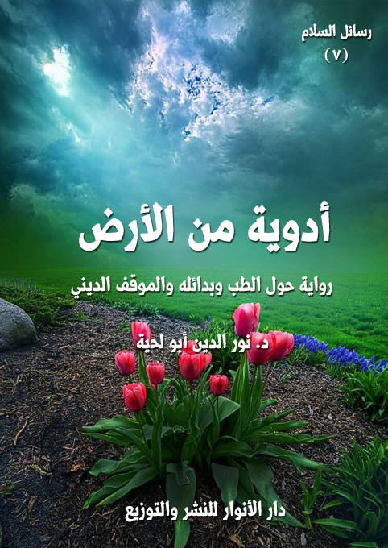

الكتاب: أدوية من الأرض
المؤلف: أ.د. نور الدين أبو لحية
الناشر: دار الأنوار للنشر والتوزيع
الطبعة: الثانية، 1437 هـ
عدد الصفحات: 416
ISBN: 978-620-2-34535-4
لمطالعة الكتاب من تطبيق مؤلفاتي المجاني وهو أحسن وأيسر: هنا

التعريف بالكتاب
تحاول هذه الرواية بكل وسائل الإقناع أن تبين أن فضل الله العظيم المرتبط بصحة الإنسان وعافيته وسلامته أكبر من أن يحد في زمن دون زمن، أو نظام دون نظام، أو جهة دون جهة..
ففضل الله في علاج خلقه يمكن أن يكون في (مطاعم الشفاء) والأغذية التي يتناولها الإنسان فيها، والتي تحدث فيه آثارا مختلفة.. سواء عزونا ذلك للأخلاط والأمزجة.. أو عزوناه إلى الين واليانع.. أو عزوناه إلى الفيتامينات والمعادن.. أو عزوناه إلى ما شئنا من أسباب..
وفضل الله في علاج خلقه يمكن أن يكون في (مزارع الشفاء)، وهي المزارع التي تستنبت فيها كل أنواع الأعشاب، وتجرب فيها كل أصناف التجارب، ليكتفي الإنسان بالدواء المنزل عن الدواء المصنوع.. لأن الله ما أنزل داء إلا أنزل معه دواءه الذي يعالجه.
وقد يكون في (مصانع الشفاء)، وهي المصانع الحديثة التي تؤدي دورها في العلاج في حال لم تفلح مطاعم الشفاء أو مزارعه..
وقد يكون في (مناسج الشفاء)، وهي المحال التي تجرى فيها العمليات الجراحية بمختلف أنواعها.
هذه فصول هذه الرواية، وهي تحاول أن تنشر ثقافة صحية واعية وشرعية لتبعد القارئ عن الدجل الذي يمارسه المخادعون من الرقاة أو من إخوانهم من الأطباء الذين فرحو بعلمهم، ولم يتواضعوا لما علم الله به أهل العصور من قبلهم.
أدوية من الأرض (2 )
تحاول هذه الرواية بكل وسائل الإقناع أن تبين أن فضل الله العظيم المرتبط بصحة الإنسان وعافيته وسلامته أكبر من أن يحد في زمن دون زمن، أو نظام دون نظام، أو جهة دون جهة..
ففضل الله في علاج خلقه يمكن أن يكون في (مطاعم الشفاء) والأغذية التي يتناولها الإنسان فيها، والتي تحدث فيه آثارا مختلفة.. سواء عزونا ذلك للأخلاط والأمزجة.. أو عزوناه إلى الين واليانع.. أو عزوناه إلى الفيتامينات والمعادن.. أو عزوناه إلى ما شئنا من أسباب..
وفضل الله في علاج خلقه يمكن أن يكون في (مزارع الشفاء)، وهي المزارع التي تستنبت فيها كل أنواع الأعشاب، وتجرب فيها كل أصناف التجارب، ليكتفي الإنسان بالدواء المنزل عن الدواء المصنوع.. لأن الله ما أنزل داء إلا أنزل معه دواءه الذي يعالجه.
وقد يكون في (مصانع الشفاء)، وهي المصانع الحديثة التي تؤدي دورها في العلاج في حال لم تفلح مطاعم الشفاء أو مزارعه..
وقد يكون في (مناسج الشفاء)، وهي المحال التي تجرى فيها العمليات الجراحية بمختلف أنواعها.
هذه فصول هذه الرواية، وهي تحاول أن تنشر ثقافة صحية واعية وشرعية لتبعد القارئ عن الدجل الذي يمارسه المخادعون من الرقاة أو من إخوانهم من الأطباء الذين فرحو بعلمهم، ولم يتواضعوا لما علم الله به أهل العصور من قبلهم.
أدوية من الأرض (7 )
تحاول هذه الرواية أن تعالج بعض قضايا الصراع الخطيرة التي تتعلق بالإنسان وصحته وعافيته، والتي تمثلها جهات متعددة:
أولها أولئك الأطباء المستكبرون الذين قصروا الطب على مكتشفات هذا العصر.. وقصروا الدواء على تلك المواد الكيميائية التي تصنعها المصانع.. وحولوا من الإنسان قطع غيار متفرقة يعالجون كل واحدة منها بعيدا عن سائر مكونات الإنسان الحسية والمعنوية.. فلذلك لا يعالجون داء حتى يقيموا بدله أدواء.. ولا يزيلوا علة حتى يضعوا بدلها عللا.
ثانيها أولئك الفقهاء الذين وقفوا موقفا متشددا مع الطب البديل ومدارسه المختلفة، فراحوا يعتبرون البرمجة العصبية واليوغا وغيرها طقوسا وثنية محرمة، بل حكموا على من يمارسها بالشرك والضلالة (1)..
ثالثها أولئك المتلاعبون بالطب القديم، والمتاجرون به، والذين لا يختلف حالهم عن حال غيرهم من اللصوص والمخادعين..
__________
(1) من أمثلة المواقف السلبية من الطب البديل وأنواعه المختلفة موقف الشيخ د. سفر الحوالي، أستاذ العقيدة والمذاهب المعاصرة بجامعة أم القرى -سابقاً- والداعية المعروف: (يجب علينا جميعا أن نعلم أن الأمر إذا تعلق بجناب التوحيد وبقضية لا إله إلا الله وبتحقيق العبودية لله تبارك وتعالى فإننا لابد أن نجتنب الشبهات ولا نكتفي فقط بدائرة الحرام وهذه البرمجة العصبية وما يسمى بعلوم الطاقة تقوم على اعتقادات وعلى قضايا غيبية باطنية مثل الطاقة الكونية والشَكَرات والطاقة الأنثوية والذكرية، والإيمان بالأثير وقضايا كثيرة جداً، وقد روّج لها مع الأسف كثير من الناس مع أنه لا ينبغي بحال عمل دعاية لها)
وسئلت بعض لجان الفتوى في الخليج العربي: (هل من محاذير شرعية في لعبة اليوغا إذا لم يكن فيها اختلاط بين الجنسين لأن اللعبة من العلوم التي اخترعها قدماء الهند وقد اثبت العلم الحديث فوائد عديدة لها)، فأجابت: (.. اليوغا ليست لعبة أو رياضة فقط، بل هي عبادة للشمس والسجود له، والممارس لهذه الرياضة يقول ألفاظا فيها عبادة للشمس، باللغة السانسكريتية. وهي أي اليوغا عبادة وثنية للشمس مع أداء بعض الحركات الجسدية. فاليوغا كفر بالله العظيم، ويجب على المسلم الحذر والابتعاد عنه)
أدوية من الأرض (8 )
ولذلك فإن هذه الرواية حاولت بكل وسائل الإقناع أن تبين أن فضل الله العظيم المرتبط بصحة الإنسان وعافيته وسلامته أكبر من أن يحد في زمن دون زمن، أو نظام دون نظام، أو جهة دون جهة..
ففضل الله في علاج خلقه يمكن أن يكون في الأغذية التي يتناولها الإنسان، والتي تحدث فيه آثارا مختلفة.. سواء عزونا ذلك للأخلاط والأمزجة.. أو عزوناه إلى الين واليانع.. أو عزوناه إلى الفيتامينات والمعادن.. أو عزوناه إلى ما شئنا من أسباب.. وقد تناولنا هذا الجانب المهم من (أدوية الأرض) في الفصل الأول (مطاعم الشفاء) والذي عاين فيه تلميذ السلام كيف يعالج الأطباء في العصور المختلفة الإنسان بالغذاء الذي يأكله.
وفضل الله في علاج خلقه يمكن أن يكون في (مزارع الشفاء)، وهي المزارع التي تستنبت فيها كل أنواع الأعشاب، وتجرب فيها كل أصناف التجارب، ليكتفي الإنسان بالدواء المنزل عن الدواء المصنوع.. لأن الله ما أنزل داء إلا أنزل معه دواءه الذي يعالجه.
وقد زار تلميذ السلام في هذا الفصل نماذج عن بعض الأعشاب، وسمع منها ما أودعه الله فيها من صنوف الدواء مما يغني عن الكثير من الأدوية الممتلئة بالصراع، وقد زار معها كذلك اللجان المختصة بوضع دساتير الأطباء، والتي تحمي هذا الجانب المهم من تلاعب المصارعين.
وفي الفصل الثالث تناولت الرواية (مصانع الشفاء)، وهي المصانع الحديثة التي تؤدي دورها في العلاج في حال لم تفلح مطاعم الشفاء أو مزارعه.. وقد زار التلميذ السلام في هذا الفصل اللجان المرتبطة بوضع الشروط المرتبطة بهذا النوع من الأدوية.. ومن أهمها الحكماء المرتبطون بالبحث عن (البدائل).. أو (الطب البديل) حيث التقى بسبعة حكماء، ذكر له كل واحد منهم صنفا من أصناف التداوي البديلة، والتي لا يصح إنكارها أو
أدوية من الأرض (9 )
الإنكار عليها إذا كانت تؤدي دورها العلاجي.
وفي الفصل الأخير زار تلميذ السلام (مناسج الشفاء)، وهي المحال التي تجرى فيها العمليات الجراحية بمختلف أنواعها، وقد سمع فيها ما يرتبط بهذا الجانب من أحكام شرعية وأخلاقية.
هذه فصول هذه الرواية وأهدافها، وهي تحاول أن تنشر ثقافة صحية واعية وشرعية لتبعد القارئ عن الدجل الذي يمارسه المخادعون من الرقاة أو من إخوانهم من الأطباء الذين فرحو بعلمهم، ولم يتواضعوا لما علم الله به أهل العصور من قبلهم.
وننبه إلى أننا لم نقصد أبدا في هذه الرواية إعطاء أي وصفات علاجية لأي مرض من الأمراض، فذلك ليس من اختصاصنا، وما ذكرناه هنا هو مجرد نماذج لما ذكره المختصون، وليس الهدف منها ذاتها، وإنما الهدف منها أن تكون نماذج وأمثلة تحاول أن تقنع القارئ بما نريد طرحه من أفكار.
وأحب أن أذكر هنا عاملا نفسيا قد يكون وراء تأليفي لهذه الرواية..
وهو أنني من شبابي الباكر كنت أعاني من التهاب اللوزتين بين الفينة والفينة، وكنت أزور الطبيب لأجل ذلك، وكان يعطيني في كل مرة المضادات الحيوية وغيرها من الأدوية التي كنت أعاني في استعمالها.. وذات يوم التقيت رجلا بسيطا كان يعمل فلاحا، وكنت حينها مصابا بالتهاب اللوزتين، وأخبرته عن معاناتي مع الأطباء بسببها.. فدلني على وصفة شعبية بسيطة.. بمجرد أن عدت إلى بيتي استعملتها.. وما هي إلا أيام معدودة حتى عادت لي صحتي.. وبقيت منذ ذلك الحين، أستعمل تلك الوصفة.. وقد آتت ثمارها ليس مع التهاب اللوزتين فقط، بل مع غيرها من الأدواء..
وهذا ما جعلني أبحث عن العلاج المرتبط بالكثير من الحالات المرضية التي تعرض لي أو لأهلي.. والحمد لله جعلنا ذلك نستغني عن الكثير من الأدوية التي يدمن الناس عليها،
أدوية من الأرض (10 )
والتي تؤدي إلى مضاعفات جانبية خطيرة..
ربما يكون هذا هو العامل النفسي لتأليفي لهذا الكتاب.. ولكن العامل الأهم منه هو حبي للسلام.. وبغضي للصراع.. وأعظم صراع يمارسه الطب الحديث، أو بعض الأطباء المعاصرون هو معاداتهم لتجارب الشعوب المختلفة من غير بحث ولا بينة.. فبمجرد جهلهم بأسباب العلاج التي وضعوا هم تفسيرها ينكرون تلك التجارب متجاهلين كل الملايين من البشر الذين لم يعرفوا في سالف الدهور غيرها.
أدوية من الأرض (11 )
في ذلك اليوم الذي زارني فيه معلم السلام كنت ممتلئا هما وحزنا للتجارة التي يمارسها المصارعون بجسد الإنسان في هذه الأرض التي امتلأت فسادا وصراعا.
فلم يكن الأمر متوقفا على أولئك الرقاة اللصوص الدجاجلة الذين راحوا يبتزون الناس بالخرافة والشعوذة ليخرجوهم من العالم الذي أسكنهم الله فيه إلى عوالم الجن والعفاريت والسحرة والشياطين، بل تعداه إلى أولئك الأطباء العصرانيين الذين فتح الله عليهم الكثير من الفتوح المرتبطة بجسد الإنسان.. فلم يتواضعوا، ويحمدوا الله على تلك النعمة، ويستزيدوه من فضله.. بل راحوا يصيحون بما صاح به قارون حين قال: {إِنَّمَا أُوتِيتُهُ عَلَى عِلْمٍ عِنْدِي} (القصص: 78)
وليتهم اكتفوا بذلك، بل راحوا يتكبرون على كل الأمم التي فتح الله عليها قبلهم من فتوح الطب ما فتح.. وكأن الطب لم يعرف إلا بمجيئهم.. وكأن البشر قبلهم كانوا يعيشون في الوهم.. وكأن الله لم يرحم عباده في كل العصور السابقة حتى جاء عصرهم، وتداركوا هم ما رأوه قاصرا من رحمة الله.
لم يكن هذا وحده يغيظني ويؤلمني، بل كانت تلك الجفوة والغلظة التي أرى الأطباء، وهم يتعاملون بها مع المرضى، وكأنهم حشرات أو فئرانا بيضاء.. وأرى بعد ذلك الصيادلة، وهم يبيعون الدواء المزيف والمغشوش والممتلئ بالسموم من دون أن يشعروا بألم أو وخز ضمير.
في تلك الحالة من الكآبة والألم والصراع جاءني معلم السلام، وهو يقول: لقد زرت أدوية السماء.. فهلم لتزور أدوية الأرض.
قلت: حسبي بأدوية السماء.. فقد ملأتني أدوية الأرض ألما.
قال: أدوية الصراع هي التي ملأتك ألما.. أما أدوية الأرض التي أنزلها الله لعباده، فلا
أدوية من الأرض (12 )
تختلف عن أدوية السماء.. فالأرض والسماء كلاهما من الله ولله وبالله.
قلت: أليست أدوية الأرض هي التي أنتجتها المصانع.. تلك التي تباع في الصيدليات.. والتي يتلاعب بها المصنعون بحسب ما يحلو لهم؟
قال: منها ما هو من أدوية الأرض.. ومنها ما هو من أدوية الصراع..
قلت: لم أفهم..
قال: ستفهم.. سر معي.. وسلم لي.. وستمسح عن صدرك كل الآهات..
سرت معه - كما تعودت - في عوالم ممتلئة بالغرابة إلى أن نزل بي في أرض عجيبة..
فجأة لاح لنا رجل عليه سيما الصالحين جالسا لا يكاد يستطيع حراكا، وفوق رأسه شيخ وقور، يقول له بشدة مصحوبة بلين، وقوة مكسوة برحمة: انهض من كبوتك أيها الجبل الشامخ، واحمل سيوف الله التي جعلها في يدك، وثر بها على أناتك، لتحول جدبها ربيعا، وحزنها ابتسامة، وسقوطها صعودا.
فالله الذي ابتلاك هو الذي علمك كيف تخرج من بلائك.. كيف تخرج منتصرا لا منهزما، ممتلئا بالغنائم لا خاوي الوفاض منها.
والله الذي أنزل الداء هو الذي أنزل الدواء، والذي قدر المحن هو الذي وهب المنح، فارجع إليه ليعلمك كيف تثور على بلائك، وكيف ينهض جوادك من كبوته ليواصل سيره إلى الله.
انهض لتردد مع إبراهيم عليه السلام: {وَإِذَا مَرِضْتُ فَهُوَ يَشْفِينِ ((الشعراء:80)، وتتلو مع أيوب عليه السلام: {أَنِّي مَسَّنِيَ الضُّرُّ وَأَنْتَ أَرْحَمُ الرَّاحِمِينَ} (الانبياء:83.. وتضرع في إلحاحك ودعائك.. لتسمع ـ بلا حرف ولا صوت ـ كلام طبيب الكائنات، وهو يقول لك: {ارْكُضْ بِرِجْلِكَ هَذَا مُغْتَسَلٌ بَارِدٌ وَشَرَابٌ} (صّ:42)
قال الرجل: بم؟.. ليس لدي القدرة على المواجهة، وليس لدي أسلحة.. ثم ألست في
أدوية من الأرض (13 )
مدائن السلام؟.. فكيف يستقيم السلام مع الحرب؟.. وكيف تستقيم الطمأنينة مع الثورة؟
قال الشيخ: لا تكون الطمأنينة إلا بالثورة.
قال الرجل: لم أفهم.
قال الشيخ: ماذا تفعل إذا أردت أن تبذر البذر لينبت لك العشب والثمر؟
قال الرجل: أثير الأرض.. أحرثها.. أقلبها.. أرفع الحجارة عنها.
قال الشيخ: وهكذا كل أرض.
قال الرجل: ولكني لست أرضا.
قال الشيخ: ألم تسمع قوله تعالى: {وَمِنْ آيَاتِهِ أَنْ خَلَقَكُمْ مِنْ تُرَابٍ ثُمَّ إِذَا أَنْتُمْ بَشَرٌ تَنْتَشِرُونَ} (الروم:20)؟
قال الرجل: بلى، فما وجه الإشارة فيها؟
قال الشيخ: كما أن الأرض تثار بالحرث، فأنت أيضا تثار..
قال الرجل: بم؟
قال الشيخ: بالإرادة والمواجهة والتحدي.
قال الرجل: التحدي!؟.. أأتحدى أقدار الله؟
قال الشيخ: بأقدار الله.. فالله تعالى قدر لكل شيء مقاديره.. {ِنَّا كُلَّ شَيْءٍ خَلَقْنَاهُ بِقَدَرٍ} (القمر:49)
ولذلك، فإنه من البلاهة والحمق مصادمة القوانين التي خلقها الله ونظم بها كونه، لأن المصادمة حينئذ لا تكون للقوانين، بل تكون لله، واحترام القوانين هو تعظيم لله، وعبودية له.
قال الرجل: ولكن.. أليس في انشغالنا بالله ما يغنينا عن مواجهة مقادير الله.. ألم نخلق للعبودية؟.. فما حاجتنا للمواجهة التي تحمل بذور الصراع؟
قال الشيخ: عبودية المواجهة لا تختلف عن عبودية طاعة أوامر الله ونواهيه، فالله الآمر
أدوية من الأرض (14 )
الناهي هو الله الذي وضع قوانين الشمس والمياه والأمطار والأمراض والشفاء.
قال الرجل: ولكن الأولياء الذين نتنفس بأريج عطرهم يخالفونك.
قال الشيخ: كيف يخالفوني، ونحن نهتدي بمشكاة واحدة، ونشرب من نبع واحد؟
قال الرجل: ألم تسمع قول بعضهم: (حججتُ أربع عشرة حَجَّة، حافياً، على التوكل.. فكان يدخل في رجلي شوكة، فأذكر أني قد اعتقدت على نفسي التوكل، فأحكها في الأرض وأمشي!)
فقد تصور هذا الولي الصالح أن إخراج الشوكة المؤذية من رجله مناقض للتوكل الذي هو أسمى علاقات العباد بالله.
ألم تسمع قول بعضهم: (إني لأستحي من الله أن أدخل البادية وأنا شبعان، وقد اعتقدت التوكل لئلا يكون شبعي زاداً أتزود به!)!؟
ألم تسمع قول الآخر: (دخلت البادية مرة بغير زاد، فأصابتني فاقة، فرأيت المرحلة ـ محطة الاستراحة ـ من بعيد، فسررتُ بأني قد وصلت، ثم فكرت في نفسي: أني سكنت واتكلت على غيره تعالى، فآليت ألا أدخل المرحلة، حتى أُحمَل إليها، فحفرت لنفسي في الرمل حفرة، وواريت جسدي فيها إلى صدري! فسمعوا صوتاً في نصف الليل عالياً يقول: يا أهل البادية؛ إن لله تعالى ولياً حبس نفسه في هذا الرمل فالحقوه.. فجاءني جماعة فأخرجوني وحملوني إلى القرية)!؟
ألم تسمع حكاية من وقع في بئر، فنازعته نفسه أن يستغيث، فقال: أراد الله ألا أستغيث.. ومر رجلان، فقال أحدهما للآخر: تعال نسد رأس هذه البئر لئلا يقع فيها أحد.. وشرعا يفعلان، وقد همَّ أن يصيح، ثم قال في نفسه: أصيح (أي أشكو) إلى مًن هو أقرب منهما! إلى الله سبحانه، وسكن لهذا الخاطر، فيما هو بعد ساعة، إذا هو بشيء جاء، وكشف عن رأس البئر، وأدلى رجله، وكأنه يقول له: تعلق بي، قال: فتعلَّقتُ به فأخرجني، فإذا سبع!؟
قال الشيخ: رحم الله الأولياء، ورضي عنهم، ورزقنا محبتهم، ولكنهم قد يمرون بأحوال
أدوية من الأرض (15 )
تخالف العلم.. فلا ينبغي اتباعهم فيها.. ألم نؤمر باتباع الله ورسوله والتسليم في حال التنازع لله ورسوله؟
قال الرجل: بلى.. قد قال تعالى: {يَا أَيُّهَا الَّذِينَ آمَنُوا أَطِيعُوا اللَّهَ وَأَطِيعُوا الرَّسُولَ وَأُولِي الْأَمْرِ مِنْكُمْ فَإِنْ تَنَازَعْتُمْ فِي شَيْءٍ فَرُدُّوهُ إلى اللَّهِ وَالرَّسُولِ إِنْ كُنْتُمْ تُؤْمِنُونَ بِاللَّهِ وَالْيَوْمِ الْآخِرِ ذَلِكَ خَيْرٌ وَأَحْسَنُ تَأْوِيلاً} (النساء:59)
قال الشيخ: فقد قال الله تعالى: {وَتَزَوَّدُوا فَإِنَّ خَيْرَ الزَّادِ التَّقْوَى} (البقرة:197)، فالله تعالى أمرنا بأخذ الزاد، وهو أمر لا يختلف عن أي أمر إلهي آخر، ومن سوء الأدب مع الله اعتبار بعض الأوامر واحتقار بعضها.
قال الرجل: ولكن الصالحين المتوكلين على الله أمدوا من المدد الإلهي ما جعلهم مستغنين عن مدد الأسباب.. لقد استغنوا بمسبب الأسباب عن الأسباب.
قال الشيخ: أليس من العجب أن نطلب من الله قوانين خاصة بنا تنسخ قوانين الكون.. وكأننا من الطبقة الارستقراطية التي لا يرضيها أن تعامل كما تعامل طبقة البروليتاريا.. ألم يعطنا الله من الأدوات ما يجعلنا نسخر الأشياء لمصالحنا وبإذنه لنا؟
قال الرجل: بلى..
قال الشيخ: فالأدب مع الله أن لا نخرق سنن الله.. فإن شاء الله أن يخرقها لنا، فذلك له.. ألم تر أن النبي صلى الله عليه وآله وسلم عرج به إلى السموات العلا.. ولكنه اضطر إلى الهجرة متخفيا يقطع الصحاري.. ولم يلح له أن يطلب من الله أن يرسل البراق ليضعه في المدينة.
قال الرجل: أنبحث عن الدواء إذن؟
قال: أدوية الأرض، وأدوية السماء.. فقد جعل الله في كونه الأدواء والأدوية، والصحة والمرض، وجعل قوانين لكل ذلك، فمن قاوم الداء بالدواء ظفر بالعافية، وفاز بالصحة، وكان عبدا لله في ذلك، فالله ما خلق العافية إلا لنتناولها.
أدوية من الأرض (16 )
ومن قصر في الأسباب وقعد عنها، وطلب من الله أن يناوله إياها من غير أن يكلف نفسه عنتا مخطئ في طلبه، ومسيء أدبه مع ربه.
قام الرجل، وقبل رأس الشيخ، ثم سار معه.
171819
قلت للمعلم: من هذا الشيخ.. فإني أراه بقوة الخلفاء، وحزم الأمراء، وحلم العلماء.
قال: ألا تعرفه؟.. إنه مدير مخابر مدائن السلام.
قلت: أهذا هو المدير؟.. كم كنت أود أن أراه؟.. لكن ما الذي أخرجه من مكتبه الدافئ إلى هذا القسم؟
قال: ومن قال لك بأن له مكتبا دافئا؟
قلت: أمكتبه بارد؟.. أليس لديه مكيفات؟
قال: لا.. ليس له مكتب أصلا.. إن عمله هو التجول في أركان أقسام المخابر.. ومعاينة الأطباء والمرضى، وإسداء النصح للجميع.
قلت: فمن ولاه مديرا؟
قال: علمه وخبرته وإيمانه وسلوكه، وقبل ذلك وبعده سلامه.. فلا يمكن لأحد أن ينال مثل هذه الوظيفة الخطيرة من دون أن يتخرج من جامعة السلام بعد أن يمر على جميع مراحل تعليم السلام.
قلت: ألم ينتخب؟
قال: لقد قلت لك بأن انتخابه تم من طرف سلوكه وعلمه خبرته.
قلت: وزملاؤه.. أليس فيهم من ينافسه؟
قال: المنافسة تكون في مدائن الصراع، لا في مدائن السلام.. ثم لماذا ينافسونه؟ وعلى ماذا ينافسونه؟
أدوية من الأرض (20 )
قلت: على الحظوظ التي ينالها المدراء.
قال: لم يصر مديرا إلا بعد أن تخلى عن كل الحظوظ، فمن طلب الحظوظ وكل إليها وشغل بها.
قلت: أيمكن أن نتحدث معه؟
قال: أجل..
قلت: بدون أن نقدم لذلك طلبا.
قال: ولماذا تقدم الطلب؟.. إن وظيفته أن يستجيب، فلم يتول هذه المسؤولية إلا ليستجيب لمن يحتاجه.
قلت: فأين أجده؟ فقد سار مع الرجل.
قال: ستجده في هذا القسم.. وفي كل محل تذهب إليه.
قلت: ولم؟.. ألا يهتم بغير هذا القسم؟
قال: لا.. هو يهتم بالأقسام جميعا.. ولكن لهذا القسم خصوصية تختلف عن سائر الأقسام، فلذلك تراه يعطيه كل جهده.
قلت: وما خصوصية هذا القسم؟
قال: هذا القسم هو القسم الذي يتم فيه البحث عن أدوية الأرض، وأدوية الأرض كثيرة بكثرة العلل، وهي متجددة بتجددها، فلذلك لا ينام أهل هذا القسم أبدا.. بل هم في بحث مستمر.. بل إن لهم مراسلين إلى جميع أنحاء العالم يخبرونهم عن كل جديد ليروا مدى موافقته لقوانين أهل السلام، ليتخذوه علاجا، أو ليرفضوه.
212223
دخلت القسم، وقد كتب على بابه قوله صلى الله عليه وآله وسلم: (لكل دَاءٍ دواء، فإذَا أصيبَ دَوَاء الداء، بَرَأَ
أدوية من الأرض (24 )
بإذن الله عَز وجَل) (1)
وقد دهشت لمنظره، فهو قسم غاية في الجمال والتنظيم، لست أدري هل كان مزرعة، أم حقل تجارب، أم مخبرا كيميائيا، أم مصنع أدوية، أم مصنع أنسجة..
وكان يعج بالخبراء الذين يبدو عليهم الانشغال التام، فهم لا يلتفتون لأحد، ولا يكاد أحد يلتفت لهم.
قلت للمعلم: ما هذا القسم؟ ومن هؤلاء؟
قال: هذا القسم هو الذي تصنع فيه جميع الأدوية، وتحارب فيه جميع العلل.
قلت: ولكن عللا كثيرة لا تزال تنخر أجسام البشر.
قال: وهؤلاء يبحثون عن علاجها.. ويبحثون عن علاج علل تصورتم أنكم قد وصلتم إلى علاجها.
قلت: فلم يبحثون فيما قتل بحثا؟.. أليس من المجدي أن يبحثوا فيما لم يبحث فيه؟
قال: لا.. فقد وضعتم أنواعا كثيرة من العلاج لا تصلح للإنسان.. فهي تسالم عضوا، وتصارع أعضاء، ولا يرضى أهل السلام بالصراع، فلذلك يبحثون عن أدوية السلام.
قلت: فكيف يعالج المرضى بهذه الأدوية؟
قال: لقد مررت على قسم البركة، فبه يبدأون.. فيستعمل المرضى ما فيه من أنواع العلاج.. وأكثر المرضى يخرجون منه، وقد عادت إليهم صحتهم، وارتدت إليهم عافيتهم.
قلت: فإن لم تجد فيهم البركات؟
قال: يعالجون بأدوية الأرض..
قلت: وما هي؟
قال: أربعة.
__________
(1) مسلم.
أدوية من الأرض (25 )
قلت: أعلم أنها أربعة.. ولكني أبحث عن ماهيتها.
قال: في هذا القسم أربعة مراكز للعلاج، كل قسم منها يعالج بنوع من أنواع الأدية.
قلت: فما المركز الأول منها؟
قال: يسمونه هنا مطاعم الشفاء، وهو مركز يهتم بالبحث فيما جعل الله في الأغذية من أسرار الشفاء.. بالإضافة إلى أنه يبحث في الأغذية المناسبة للعلل المختلفة.
قلت: ولم كانت مطاعم.. ولم تكن مطعما واحدا.. أهناك شركات مختلفة تتولى إدارة هذه المطاعم؟
قال: لا.. ولكنها قسمت على أساس المناهج التي تتبعها في العلاج بالغذاء.. وقد تركت إدارة هذا المستشفى الحرية لكل مطعم في إطعام مرضاه ما يشاء ما لم يكن حراما.
قلت: فالقسم الثاني؟
قال: هم يسمونه (مزارع الشفاء)
قلت: أهي مزارع حقيقة أم من باب المجاز؟
قال: هي حقيقة، فأهل هذا القسم لا يعرفون المجاز.
قلت: عهدي بالمزارع في الحقول، لا في المخابر والمستشفيات.
قال: في هذا القسم تستنبت جميع أعشاب العالم لتجرى عليها جميع أنواع الاختبارات ليستخلص من كل عشب ما وضع الله فيه من أسرار الشفاء.
قلت: أهناك فئران تجارب إذن؟
قال: هناك أشياء لم ترها طول عمرك.. وستراها هنا، فاحفظ سرها.
قلت: فما هو القسم الثالث؟
قال: يسمونه هنا (مصانع الشفاء)
قلت: فيه آلات إذن.
أدوية من الأرض (26 )
قال: أجل.. من كل الأنواع.. وهو قسم لا يلجأ إليه إلا للضرورة القصوى.
قلت: فالأدوية الكيمياوية تصنع في هذا القسم؟
قال: أجل.. ولكنها تظل آخر المراتب، فلا يلجأ إليها إلا كما يلجأ المضطر لأكل الميتة.
قلت: لم؟
قال: لغرابتها عن حققة الإنسان.. فطبيعة الإنسان تأبى التصنيع، وتأنف الابتداع.
قلت: ولكن أساسها قد يكون من الطبيعة.. بل هو من الطبيعة.
قال: ولكنه يمزق عن أصله.. فيشوه خلقه، ويكدر صفوه.
قلت: فما هو القسم الرابع؟
قال: هو ما يطلقون عليه: (مناسج الشفاء)
قلت: أينسجون فيه الثياب، أم الأكفان؟
قال: لا.. في هذا القسم يعامل الجسد كالثوب.. فيرقع ويقطع وينسج.
قلت: فهمت.. تقصدون به العمليات الجراحية.
قال: أهل هذا المستشفى يحبون صناعة النسيج.. لأنها صناعة ترمز إلى السلام بخلاف العمليات، فقد اختلطت بألوان الصراع.
قلت: فهل سنزور هذه الأقسام جميعا.
قال: لا مناص لنا من ذلك.. وسيكون مرشدك فيها المدير الذي رأيته..
قلت: فهل هو كإخوانه نقطة تحت الباء.
قال: لن يصل أحد إلى بحار السلام حتى يتضمخ بمسك النقطة التي تحت الباء.
قلت: فمتى نلتقي؟
قال: إذا عرفت متى نفترق.. عرفت متى نلتقي.
قلت: أتبقى معي؟
أدوية من الأرض (27 )
قال: من حيث تراني.. أو من حيث لا تراني.
282930
في هذه الرسالة نرحل إلى مخابر مدائن السلام المختصة بالأدوية التي اكتشفها البشر، أو اخترعها البشر.. لنعلم صدق قوله صلى الله عليه وآله وسلم: (إن الله لم يُنزل داءً إلا أنزل له شفاء، علمه مَن علمه وجهله مَن جهله)
وهذه الأدوية التي نراها في هذا القسم لا نعرضها ليعالج بها المرضى فقط، أو لنعرف بها موقف أهل السلام منها، وإنما نعرضها ليمتلئ المرضى بالأمل الذي يملأ أنينهم بالابتسامة، فلا يقتل المريض مثل اليأس، ولا يشرح صدره مثل الأمل.
أدوية من الأرض (31 )
دخلت مع المعلم إلى القسم الأول من أقسام أدوية الأرض، فرأيت على بابه لافتة كتب عليها قوله تعالى: {فَلْيَنْظُرْ أَيُّهَا أَزْكَى طَعَاماً فَلْيَأْتِكُمْ بِرِزْقٍ مِنْهُ} (الكهف:19)
ورأيت داخلها ما ملأني بالعجب.. لقد رأيت أجهزة كثيرة، منها القديم الموغل في القدم، ومنها الحديث الذي رأيت مثله بين قومي، ومنها ما لا أحسب إلا أنه من اختراعات أهل مدائن السلام.
سألت المعلم عن سر الآية، وسر ما يوجد في هذا القسم من ألوان الآلات، فقال: هذا هو مخبر المطاعم.. ليس لأهله من هم سوى البحث عن أسرار الشفاء التي ملأ الله بها أقوات الأرض.
قلت: والآية؟
قال: إن الهدف من البحث في أسرار الشفاء في الأغذية هو الوصول إلى هذا الغذاء الذي طلبه أهل الكهف.. فإنهم طلبوا أزكى طعام.. وكل من تراه من الخبراء في هذا القسم يجهد نفسه للوصول إلى هذا النوع من الغذاء.
قلت: أكل هؤلاء يؤمنون بتأثير الغذاء في الشفاء.. فإن من قومي من لا يؤمن بالشفاء إلا في الأقراص والحقن؟
قال: أجل.. واسأل من شئت منهم.. فسيجيبك.. فهم كأدواتهم.. منهم الموغل في القدم.. ومنهم من لم تره بعد.
قلت: أهم يمثلون المطاعم التي يمتلئ بها هذا القسم؟
قال: أجل.. فأنواع الأغذية التي يأكلها المرضى الوافدون إلى مطاعم الشفاء تطبخ هنا..
قلت: على حسب رغباتهم.
أدوية من الأرض (32 )
قال: لا.. على حسب رغبات الخبراء.. فكل مريض يأكل ما يتناسب مع علته، ليكون علاجا لها.
قلت: فكم عدد المطاعم الموجودة.. والتي تمثل مناهج العلاج بالغذاء؟
قال: هي كثيرة جدا.. ولا نستطيع حصرها ولا زيارتها جميعا.
قلت: فهل سنكتفي بأربعة كما تعودنا؟
قال: لا بد من ذلك.. ففي الأربعة ما يدلنا على أصول معظم مناهج العلاج بالغذاء.
قلت: فما المطعم الأول؟
قال: هو مطعم يعتمد القوى والأخلاط.. فيداوي الأخلاط بالقوى.
قلت: لم أفهم..
قال: ستفهم.
قلت: فالثاني؟
قال: هو مطعم يعتمد الين واليانغ.. فيداوي بهما.
قلت: فما الين.. وما اليانغ؟
قال: ستفهم ذلك من أهله.
قلت: فالثالث؟
قال: هو اجتهاد لبعض المعاصرين حاول استنباطه من القرآن الكريم، سماه الغذاء الميزان.
قلت: فلم لم يكن من أدوية السماء؟
قال: نعم هو من أدوية السماء.. ولكنه يعتمد مناهج تعتمد أساليب أهل الأرض.
قلت: فهو وسط بينهما.
قال: هو مزيج منهما.
قلت: فالرابع؟
أدوية من الأرض (33 )
قال: هو مطعم يعتمد على ما تعرفونه من العناصر والمركبات.
قلت: إذن هو مطعم عصري.
قال: أجل.. ولكنه يحمل لباس أسلافه.
دخلت المطعم الأول من مطاعم الشفاء.. فرأيت قوما يلبسون ثيابا عتيقة، ويحملون أسفارا ضخمة.
اقتربت منهم، وهمست في أذن أحدهم قائلا: هل أنت طبيب؟.. فإني أريد أن أسألك سؤالا له علاقة بالطب؟
فانتفض كانتفاضة العصفور قائلا: ألي تقول هذا؟.. وكيف يؤذن لي أن أدخل هذا القسم إن لم أكن طبيبا؟.. ثم كيف لا تعرفني؟.. فأنا أبو بكر محمد بن زكريا الرازي (1).
قلت: أعرفك.. ولكن قومي يعتبرونك وأمثالك أقرب إلى الفلسفة منكم إلى الطب..
__________
(1) هو أبو بكر الرازي، من علماء القرن الثالث الهجري، اشتهر بالطب والكيمياء، ولد في مدينة الري جنوبي طهران بفارس، واشتهر بعلوم الطب والكيمياء، وكان يجمع بينهما لدى وضع الدواء المناسب لكل داء. ويعتبره المؤرخون من أعظم أطباء القرون الوسطى، فقد جاء في كتاب الفهرست: كان الرازي أوحد دهره، وفريد عصره، وقد جمع المعرفة بعلوم القدماء، سيما الطب.
وقد ترك عدداً كبيراً من المؤلفات، ضاع قسم كبير منها. فمن مؤلفاته المعروفة (الطب الروحاني)، ثم كتاب (سر الأسرار)، أما كتاب (الحاوي) فهو من أعظم كتب الطب التي ألفها، ومن المؤلفات الأخرى (الأسرار في الكيمياء) الذي كان مرجعاً في مدارس أوروبا مدة طويلة، وكتاب في (الحصبة والجدري) الذي عرض فيه أعراض المرضين والتفرقة بينهما، كما له (كتاب من لا يحضره طبيب) المعروف باسم (طب الفقراء) وفيه شرح الطرق المعالجة في غياب الطبيب منا يعدد الأدوية المنتشرة التي يمكن الحصول عليها بسهولة... وقد أربت مؤلفاته على المائتين وعشرين مخطوطة.
وقد سلك في أبحاثه مسلكاً علمياً، فأجرى التجارب واستخدم الرصد والتتبع، مما أعطى تجاربه الكيميائية قيمة خاصة، حتى إن بعض علماء الغرب اليوم يعتبرون الرازي مؤسس الكيمياء الحديثة. وقد طبق معلوماته الكيميائية في حقل الطب، واستخدم الأجهزة وصنعها.
أدوية من الأرض (34 )
وبالفعل فطبكم لا يختلف كثيرا عن الفلسفة.
قال: ومن قال ذلك؟.. لقد مارست الطب في أكثر المستشفيات ودرسته، وتركت فيه تراثا عريضا.. ألم يبلغكم؟
قلت: ولكن....!؟
قاطعني، وقال: ألم تسمع قولي في كتاب (المرشد أو الفصول): (ليس يكفي في أحكام صناعة الطب قراءة كتبها، بل يحتاج مع ذلك إلى مزاولة المرضى، إلا أن من قرأ الكتب ثم زاول المرضى يستفيد من قبل التجربة كثيرا، ومن زاول المرضى من غير أن يقرأ الكتب، يفوته ويذهب عنه دلائل كثيرة، ولا يشعر بها البتة. ولا يمكن أن يلحق بها في مقدار عمره، ولو كان أكثر الناس مزاولة للمرضى ما يلحقه قارئ الكتب مع ادنى مزاولة، فيكون كما قال الله عز وجل: {وَكَأَيِّنْ مِنْ آيَةٍ فِي السَّمَاوَاتِ وَالْأَرْضِ يَمُرُّونَ عَلَيْهَا وَهُمْ عَنْهَا مُعْرِضُونَ} (يوسف:105)
قلت: فهل كنت تعتمد على الغذاء في علاجك؟
قال: أجل.. ألم تسمع قولي: (إن استطاع الحكيم أن يعالج بالأغذية دون الأدوية فقد وافق السعادة)؟
قلت: لا..
قال: ما أعظم تقصيرك.. كيف أذن لك في دخول هذا القسم، وأنت بهذا الجهل؟
قلت: اعذرني، فإني من جيل آخر.. جيل ينكر الكثير مما ترونه.
قال: كيف هذا؟.. أيرمون بالغيب؟.. لقد كنت أعالج المرضى بالغذاء فيهبون معافين بلا علة ولا ضرر، ألم تقرأ كتابي (من لا يحضره الطبيب)؟
قلت: لا..
قال: لعلك قرأت (طب الفقراء)، وقد استوحي ابن الجزار القيرواني منه كتابه: (طب الفقراء والمساكين)؟
أدوية من الأرض (35 )
قلت: لم أقرأ هذه الكتب جميعا.. ولست طبيا.. إنما أنا مجرد تلميذ في مدرسة السلام الابتدائية.
قال: ما دمت قد عرفت قدرك، فاسمع مني.
قلت: كلي آذان صاغية.
قال بنبرة حزينة: لما رأيت كثيرا من الفقراء والمساكين يعجزون عن أن ينالوا منافع الكتب لفقرهم، رأيت أن أعتمد في شفاء المرضى على الأطعمة والأشربة.. ليس هذا كتابي الوحيد لقد ألفت كتبا في الأدوية المفردة، وكتبا في الأدوية المركبة وغيرها من فنون الطب.. ولكن الكثير منها ضاع للأسف..
قلت: فالهدف إذن من العلاج بالغذاء هو تسلية الفقراء فقط.
قال: لا.. نحن لا نكذب عليهم، بل نعالجهم بالغذاء، كما نعالج الأغنياء (1).
اقترب مني رجل كان يتصنت علينا، فقال: ما أكثر حديثك يا أبا بكر عن نفسك.. أنسيت أنك في مدائن السلام.
__________
(1) ذكر بعضهم أن من الأسباب التي عزفت بالأطباء عن وصف العقاقير هو الشفقة على المرضى الفقراء وذكر حجة لذلك أن الأطباء كانوا يتقاضون أجورا باهظة من الأغنياء والأمراء، وكانوا يصفون أدوية مركبة ومستوردة من الهند والصين وبلاد نائية.
وقد ذكر المؤرخون هذه الأجور وتباهى بها أمثال ابن سينا حين قال عندما اتصل به أبو عبيد الجورجاني:
لما عظمت فليس مصر واسعي لما غلا ثمني عدت المشتري
ولاشك، في أن بعض الأطباء حرصوا على جمع المال بشتى الطرق، وهذا عام في كل العصور، ولكن الكثيرين اشتهروا بكرم خلقهم وبرحمتهم بالمرضى ووضعوا لمهنتهم مثلا عليا مثال ذلك ما قاله الرازي: (ينبغي أن تكون حالة الطبيب معتدلة، لا مقبلا على الدنيا كلية ولا معرضا عن الآخرة كلية، فيكون بين الرغبة والرهبة)
وقد ورد عنه أنه كان كريما متفضلا، بارا بالناس، حسن الرأفة بالفقراء والأعلاء حتى كان يجري عليهم الجرايات الواسعة، وأنه كان رؤوفا بالمرضى مجتهدا في علاجهم وفي برئهم بكل وجه يقدر عليه.
وروى علي بن رضوان في سيرته الذاتية: (وأجتهد في حال تصرفي في التواضع والمداراة وغيث الملهوف، وكشف كربة المكروب وإسعاف المحتاج، وأجعل قصدي في ذلك الالتذاذ بالأفعال والانفعالات الجميلة)
أدوية من الأرض (36 )
قال الرازي: أنا لا أحدثهم عني.. بل أحدثهم عن علمي.
قال: فقد سألك سؤالا.. ولم تجبه.
قال الرازي: فأجبه أنت.
قلت: قبل أن تجيبني.. أخبرني أولا من أنت؟
قال: ما بالك ألا تعرفني؟.. فأنا أشهر من نار على علم.. أنا ابن النفيس علاء الدين، أبو الحسن، علي بن أبى الحزم القرشى الدمشقي (1).. ليس فيكم من يجهل هذا الاسم.. أنا مكتشف الدورة الدموية.. أنا الذي قيل عني: (وأما في الطب فلم يكن على وجه الأرض مثله في زمانه)، وقيل: (ولا جاء بعد ابن سينا مثله).. ألم تسمع قصتي مع الحمام؟
قلت: لا..
قال: عجبا.. لقد دخلت الحمام، ذات مرة، فلما كنت في بعض تغسيلي خرجت إلى مشلح الحمام، وطلبت دواة وقلما وورقا وأخذت فى تصنيف مقالة فى النبض إلى أن أنهيتها، ثم عدت ودخلت الحمام وكملت غسلي.
قلت: فلم لم تنه حمامك أولا؟
قال: لقد كنت شغوفا بالعلم والتأليف بحيث لا أصبر عنهما.. ألم تسمع ما قيل عني؟
__________
(1) هو أبو الحسن علاء الدين علي بن أبي الحزم، وهو طبيب وعالم وفيلسوف، ولد بدمشق سنة 607 هجرية، وتوفي بالقاهرة سنة 687 هجرية.
لم تقتصر شهرة ابن النفيس على الطب، بل كان يعد من كبار علماء عصره في اللغة، والفلسفة، والفقه، والحديث. وله كتب في غير المواضيع الطبية، منها: الرسالة الكاملية في السيرة النبوية، وكتاب فاضل بن ناطق، الذي جارى في كتاب (حي بن يقضان) لابن طفيل، ولكن بطريقة لاهوتية لا فلسفية.
أما في الطب فكان يعد من مشاهير عصره، وله مصنفات عديدة أهمها: المهذّب في الحالة (أي في طب العيون)، المختار في الأغذية، شرح فصول أبقراط، شرح تقدمة المعرفة، شرح مسائل حنين بن اسحق، شرح الهداية، الموجز في الطب (وهو موجز لكتاب القانون لابن سينا)، شرح قانون ابن سينا، بغية الفِطن من علم البدن، شرح تشريح القانون الذي بيّن أن ابن النفيس قد سبق علماء الطب إلى معرفة هذا الموضوع الخطير من الفيزيولوجيا بحيث أنه وصف الدوران الرئوي قروناً قبل عصر النهضة.
أدوية من الأرض (37 )
قلت: وما قيل؟
قال: قالوا: (كان إذا أراد التصنيف توضع له الأقلام مبرية، ويدير وجهه إلى الحائط، ويأخذ في التصنيف إملاء من خاطره، ويكتب مثل السيل إذا تحدر فإذا كل القلم وحفي رمى به، وتناول غيره لئلا يضيع عليه الزمان في بري القلم)
قال الرازي: لقد قصروا في وصفك.. فأنت أعظم من ذلك بكثير.. فادخل الموضوع.. فقد سأل عن سر التداوي بالغذاء.. ولم يسأل عن ابن النفيس.
قال ابن النفيس: أجل.. وأنا لم أقدم هذه المقدمات من باب الحديث عن نفسي، معاذ الله، فأنا أحقر شأنا من أن أعطي نفسي ما لم يعطها الله (1).. ولكني تحدثت عنها ليعلم صدقي فيما أقول، ألم يقل يوسف عليه السلام: {اجْعَلْنِي عَلَى خَزَائِنِ الْأَرْضِ إِنِّي حَفِيظٌ عَلِيمٌ} (يوسف:55)
قلت: اجعلني في حل يا ابن النفيس، فقد أسأت بك الظن.
قال: {سَوْفَ أَسْتَغْفِرُ لَكُمْ رَبِّي إِنَّهُ هُوَ الْغَفُورُ الرَّحِيمُ} (يوسف:98).. أما ما سألتني عنه، فقد قيل عني كلام أرادوا جرحي به، ولكنه في الحقيقة يمثل منهجي في العلاج.
قلت: وما قالوا؟
قال: لقد قالوا: (كان ابن النفيس على وفور علمه بالطب وإتقانه لفروعه وأصوله قليل البصر في العلاج، فإذا وصف لا يخرج بأحد عن مألوفه ولا يصف دواء ما أمكنه أن يصف غذاء، ولا مركبا ما أمكنه الاستغناء بمفرده، وكان ربما وصف القمحية، وهي نوع من البليلة، لمن شكا القرحة، والتطماج، وهو نوع من اللحم المطهو بالتوابل لمن شكا هواء، والخروب والقضامة لمن شكا إسهالا، ومن هذا ومثله، ولكل ما يلائم مأكله ويأكله حتى قال له العطار الشرابي الذي كان يجلس عنده: (إذا أردت أن تصف مثل هذه الوصفات اقعد على دكان اللحام، وأما إذا قعدت
__________
(1) مما يدل على تواضعه ما حكى عنه الشيخ أبو ثناء الحلبي، قال: شكوت إلى ابن النفيس عقالا في يدي فقال لي: (وأنا والله بي عقال فقلت: فبأي شيء أداويه؟) فقال: (والله ما أعرف بأي شيء أداويه) ثم لم يزد على هذا.
أدوية من الأرض (38 )
عندي فلا تصف إلا السكر والشراب والأدوية)
قلت: فهل كان العلاج بالغذاء شيئا اختصصت به، أو اختص به أبو بكر.. أم هو أسلوب من أساليب العلاج في المجتمعات الإسلامية؟
قال ابن النفيس: بل هو أسلوب من أساليب العلاج التي كنا نمارسها، فقد كانت المعالجة بالأغذية للأمراض من أهم أسس العلاج الطبي لكثير من الأمراض في المستشفيات في الحواضر الإسلامية.
قاطعنا رجل يظهر على وجهه وثيابه أنه من العصور الخوالي، فتقدم إليه ابن النفيس والرازي بالتحية والاحترام، فقلت: من أنت؟.. فلا أرى إلا أنك من العصور التي لم يبق لها أي أثر.
قال: ألا تعرفني؟ أنا أبقراط.. أنا أبو الطب (1).. لقد كنت طبيبا قبل أطباء قومك بـ 4500 عام.. وكل من تراه هنا تلاميذي.
قلت: فهل كنت تعالج المرضى بالغذاء؟
قال أبقراط: أجل.. ألا تعرف مقولتي: (ليكن غذاؤك دواءك، وعالجوا كل مريض بنبات أرضه، فهي أجلب لشفائه)
قلت: فهل تركت من أثر في ذلك؟
قال أبقراط: ألم أقل لك: إن كل من تراه من تلاميذي.. لقد وضعت للغذاء مؤلفا خاصا أوضحت فيه خصائص الأطعمة طعاما طعاما، وأدخلت فكرة التدبير بالغذاء في كل مؤلفاتتي حتى التي تعني بالكسور.
ولكني مع ذلك، أثبت صعوبة تناول هذا الموضوع بدقة تامة، فمن المستحيل وضع قوانين محددة لهذا، نظرا للتباين بين أمزجة الناس والأعمار والبلاد والأجواء واختلاف تركيب العينات
__________
(1) سمي بذلك لدوره الكبير في تخليص الطب من الخرافات، ومحاولة النهوض به.
أدوية من الأرض (39 )
المختلفة من الطعام الواحد.
قلت: لقد كنت من الإغريق.. فهل كان لقومك من الاهتمام بالعلاج بالغذاء مثل ما اهتم المسلمون؟
قال أبقراط: أجل.. ومع ذلك.. فلا يمكن تصور الدور الذي أعاره الطب الإغريقي للطعام المناسب، فقد اعتبر الغذاء العنصر الوحيد الذي يدخل المرض إلى الجسم.
قلت: لم.. فهناك أسباب أخرى.
قال أبقراط: ولكن الطعام هو العنصر الوحيد الذي يرد على البدن من الخارج ويتشبه به.
بينما نحن كذلك إذ سمعت صوتا رخيما ينشد:
للحفظ في الصحة جنس مشتمل... من عمل الطب على ضربي عمل
إن المزاج إن ترد بقاءه بحاله... شبه به غداءه
والجسم إن تعزم على إخراجه... من طبعه فالضد من مزاجه
وإذا نظمت جزء حفظ الصحة... فالآن أبدأ ببرء العلة
وهو من الأعمال جنس واحد... يقابل الشيء بما يضادد
إن كان من حرارة فبرد... أو كان من برودة فالضد
أو كان من لين فبالجفاف... أو كان من يبس فبالخلاف
قلت لأبقراط: من هذا؟
قال أبقراط: هذا من أكبر تلاميذي.. ولولاه لما كانت لي هذه الشهرة.
قلت: فمن هو؟ فلست ملما بأخبار الأطباء.
قال أبقراط: هذا ابن سينا (1).. ألا تعرفه؟
__________
(1) هو أبو علي الحسين بن عبد الله بن الحسن بن علي بن سينا، الملقب بالشيخ الرئيس، فيلسوف، طبيب وعالم، ومن عظام رجال الفكر في الإسلام ومن أشهر فلاسفة الشرق وأطبائه. ولد سنة 370 هـ (سنة 980 م)
ترك ابن سينا مؤلفات متعدّدة شملت مختلف حقول المعرفة في عصره، وأهمها: العلوم الآلية، وتشتمل على كتب المنطق، وما يلحق بها من كتب اللغة والشعر، العلوم النظرية، وتشتمل على كتب العلم الكلّي، والعلم الإلهي، والعلم الرياضي، والعلم الطبيعي، والعلوم العملية، وتشتمل على كتب الأخلاق، وتدبير المنزل، وتدبير المدينة، والتشريع.
ولهذه العلوم الأصلية فروع وتوابع، فالطب مثلاً من توابع العلم الطبيعي، والموسيقى وعلم الهيئة من فروع العلم الرياضي.
ومن أشهر كتب ابن سينا الطبية كتاب القانون الذي ترجم وطبع عدّة مرات والذي ظل يُدرس في جامعات أوروبا حتى أواخر القرن التاسع عشر.
ومن كتبه الطبية أيضاً كتاب الأدوية القلبية، وكتاب دفع المضار الكلية عن الأبدان الإنسانية، وكتاب القولنج، ورسالة في سياسة البدن وفضائل الشراب، ورسالة في تشريح الأعضاء، ورسالة في الفصد، ورسالة في الأغذية والأدوية.
ولابن سينا أراجيز طبية كثيرة منها: أرجوزة في التشريح، وأرجوزة المجربات في الطب، والألفية الطبية المشهورة التي ترجمت وطبعت.
أدوية من الأرض (40 )
قلت: بلى.. أعرفه، ومن لا يعرفه؟.. إنه الشيخ الرئيس.
قال أبقراط: ألا تعرف كتابه (القانون)؟
قلت: إن شئت الصدق، فإني أعرفه ولا أعرفه.
قال أبقراط: كيف ذلك؟
قلت: أسمع به، وأحب قراءته، ولكنه يستعصي علي.. فنحن من جيل مختلف تماما.
قال أبقراط: وهل قدمتم من المريخ.. أنتم من الأرض، فكيف تجهلون أهل الأرض؟
قلت: فما به هذا القانون الذي ألفه ابن سينا؟
قال أبقراط: لقد قال فيه نظامي عروض السمرقندي، في كتابه (جهاز مقالة) الذي ألفه حوالي 550 هـ. بعد وفاة الشيخ الرئيس بأكثر من قرن، بعد أن يذكر المراجع التي على الطبيب أن يدرسها، وهي لكبار أطباء الإسلام قبل ابن سينا، يقول: (فاذا أراد الاستغناء عن هذه الكتب كلها فقد يكتفي بالقانون، فإن سيد الكونين وامام الثقلين صلى الله عليه وآله وسلم يقول: (كل الصيد فى جوف الفرا) (1)،
__________
(1) الفرأ مهموز مقصور: حمار الوحش، وجمعه: فراء، أي أن أفضل الصيد حمار الوحش، فكل الصيد دونه. النهاية: 2/ 422، والحديث رواه الديلمي.
أدوية من الأرض (41 )
فكل ما ذكرت موجود في القانون، مع زيادات كثيرة، وكل من يحيط علما بما في المجلد الأول (1) من القانون لايخفي عليه شيء من أصول علم الطب وكلياته)
ثم يقول عني وعن جالينوس: (ولو بعث أبقراط وجالينوس إلى الحياة لحق لهما أن يسجدا لهذا الكتاب)
قلت: أتذكر هذا الكلام وتفخر به؟
قال أبقراط: وكيف لا أفتخر به.. وهل يحزن العالم إن غلبه تلميذه.
قلت: صدقت.. وأحسنت.. فعهدي بك صاحب خلق.
قال أبقراط: لا يصح أن يكون الطبيب طبيبا إلا إذا كان صاحب خلق، ألا تعرف القسم المنسوب إلي، والذي يحدد التزامات الطبيب؟
أردت أن أجيب، فقاطعني ابن سينا بقوله: ومن لا يعرف ذلك القسم يا معلمي.. لقد حافظنا ـ نحن أطباء المسلمين ـ على تعاليمك الخلقية.
قلت: وما التعاليم الخلقية التي التزمتم بها؟
قال ابن سينا: سبعة.
قلت: لم أسأل عن عددها.. وإنما سألت عن ماهيتها.. فما الأولى منها؟
قال ابن سينا: أن يكون تام الخلق، صحيح الأعضاء، حسن الذكاء، جيد الرؤية، عاقلا، ذكورا، خير الطبع.
قلت: ما هذا؟.. لا أرى لهذا أي حاجة؟.. فقد يكون طبيبا، ولكنه ناقص الخلق أو مريضا.
قال: لا.. هو لا يقصد هذا.. إنما يقصد ما تفعله الهيئات الصحية عندكم من اشتراط اللياقة البدنية لمزاولة المهنة قبل إعطاء الترخيص.
__________
(1) المجلد الأول هو المشتمل على الأمور الكلية في الطب.
أدوية من الأرض (42 )
قلت: والثانية؟
قال: أن يكون حسن الملبس، طيب الرائحة، نظيف البدن والثوب.
قلت: والثالثة؟
قال: أن يكون كتوما لأسرار المرضى، ولا يبوح بشيء من أمراضهم.
قلت: والرابعة؟
قال: أن يكون رغبته في آراء المرضى أكثرمن رغبته فيما يلتمسه من الأجرة، ورغبته في علاج الفقراء اكثر من رغبته في علاج الأغنياء.
قلت: والخامسة؟
قال: أن يكون حريصا على التعليم والمبالغة في منافع الناس.
قلت: والسادسة؟
قال: أن يكون سليم القلب، عفيف النظر، صادق اللهجة لا يخطر بباله شيء من أمور النساء والأموال التي شاهدها في منازل الاعلاء فضلا عن أن يتعرض إلى شيء منها.
قلت: والسابعة؟
قال: أن يكون مأمونا ثقة على الأرواح والأموال، ولا يصنع دواء قتالا ولا يعلمه، ولا دواء يسقط الأجنة، يعالج عدوه بنية صادقة كما يعالج حبيبه.
قلت: هذه خصال عظيمة، وقد وردت في تعاليم الإسلام.
قال: وقد أضفنا إليها ـ نحن أطباء المسملين ـ آدابا أخرى، منها القيام بالإسعاف نهارا وليلا على قد ر الإمكان تفريجا للكربة.
ومنها التلطف بالمريض والحلم في استجوابه وتفهيمه مراعاة لحالته النفسية ووضعه الثقافي.
ومنها اللباقة في تعريف المريض بمرضه، ومحاولة تطمينه ورفع معنوياته، وكتم الإنذار
أدوية من الأرض (43 )
بالخطر عنه وإعلامه إلى ذويه الاقربين.
ومنها الدعاء للمريض وهو نوع من مواساة المريض بالكلمة الطية.
ومنها إحالة المريض إلى أخصائي أو عمل لجنة طبية استشارية إذا كان الأمر يستدعي ذلك قياما بالأمانة والنصيحة المطلوبين شرعا.
ومنها أنه إذا التقى عده أطباء عند مريض، فليقدم أحدهم من هو أعلى مرتبة في الطب إن علم وإذا تقاربوا في المرتبة فليتقدم أكبرهم سنا.
ومنها الابتعاد عن الغيبة، وخاصة غيبة الزملاء وتجريحهم، فالغيبة من أخطر المحرمات الشرعية.
قلت: يا ابن سينا.. يا شيخ الأطباء، وأستاذ الأساتذة.. لقد عرفت اهتمامك واهتمام أطباء المسلمين بالعلاج بالغذاء.. فما الأصول التي ترجعون إليها في ذلك؟
قال: لقد وجدنا الناس يصنفون ما يمكن أكله إلى ثلاثة أقسام: أغذية وأدوية وسموم.. فما استطاع الإنسان أن يتناول منه كمية كافية لسد جوعه فهو غذاء.. وما لا يمكن تناوله بكمية كبيرة ولا لفترت طويلة، ويحدث له راحة أو اضطرابا فهو دواء.. وكل مادة لا يمكن تناولها ولو بكميات ضئيلة، لأنها تحدث فيه تأثيرا ضارا، فهي السموم، ولم يتجرأ الإنسان على الاستفادة من السموم كمواد دوائية إلا في وقت متأخر جدا.
قلت: فكيف تميزون بين هذه الثلاثة؟
قال: لقد لعبت الحواس دورا كبيرا في حفظ حياة الإنسان، فبواسطة حاستي الذوق والشم تمكنا من التفريق بين النبات النافع والنبات الضار.. فالنباتات المؤذية نجدها غالبا ذات طعم مر أو لاذع أو مغث، أو نجدها نتنة الرائحة فتنبذ، أو جميلة الرائحة فتستلطف.
أدوية من الأرض (44 )
هذا من ناحية.. ومن ناحية أخرى، فإن لملاحظة الصفات الخارجية لأقسام النبات دورا في التفريق بين أجناس النبات، وبهذه الصورة استطاع الإنسان العاقل المفكر أن يربط بين الاستعمال الغذائي والدوائي لأجناس النباتات وأنواعها وبين صفاتها الخارجية المحسوسة.
قلت: ولكن كيف استطاع إنسان عصركم، ومن قبله تحديد خواص الأغذية، فهي خواص كيماوية لا بد لها من علوم أخرى لم تصلوا إليها؟
قال: مثل ماذا؟
قلت: مثل الأكسدة والاختزال والحموضة والقلوية.. زيادة على أنه لم يكن لديكم علم بالخمائر والفيتامينات والهورمونات.. وغيرها مما تأخر اكتشافه.
قال: لكل عصر وسائله وأساليبه الخاصة.. وقد وصلنا بوسائلنا ـ التي تعتبرونها بسيطة ـ إلى كثيرمن خواص الأغذية والأدوية مما لا تزالون تستفيدون منه.
قلت: لا أنكر ذلك.. فما سر ذلك؟
قال: لقد استعملنا القياس ووسائل الفحص الفيزيائية، فاستنتجنا مرتبة الحرارة مثلا من سرعة الاحتراق، ومرتبة البرودة من سرعة التجمد، مستعينين بالحواس، أي المذاق والرائحة واللمس واللون لاعتقادنا أن اختلاف الإدراكات الحسية مردها اختلاف مقادير الأركان وكيفياتها.
قلت: فكيف تتعرفون على الخواص عن طريق اللسان؟
قال: الكيفيات البسيطة التي يدركها اللسان تسع: المسخ والقابض والعفص والمالح والمر والحريف والحامض والحلو والدسم.. وقد عرفنا كل واحدة منها، وحددنا أفعالها ونشأتها.
قلت: فما المسخ؟
قال: هو كل شيء مذاق لا يفعل في اللسان شيئا، ولا يحس منه بلذة أو بأذى، وذلك مثل الماء، لأن جوهره لا ينحل منه شيء يخالط اللسان فيدركه.
أدوية من الأرض (45 )
قلت: فما القابض؟
قال: هو ما جمع اللسان وجففه وخشنه.. وينشأ عن برودة مع تركيب متوسط بين الغلظ واللطف.
قلت: وما العفص؟
قال: إذا كانت أفعاله مماثلة، ولكنها أشد.. وأفعاله العصر.. وينشأ عن غلظ ورطوبة.
قلت: فما المالح؟
قال: إذا غسل اللسان مما لصق به، وجلاه.. وأفعاله الغسل والتجفيف ومع العفونة.. وينشأ عن حرارة وتركيب متوسط الغلظ واللطف.
قلت: فما المر؟
قال: هو ما جلا أكثر من جلاء المالح، وخشن اللسان تخميشا مؤذيا.. وينشأ عن سخونة وغلظ.
قلت: فما الحريف؟
قال: هو ما أحدث لدغا وأكلا مع حرارة شديدة.. وأفعاله التحليل والتقطيع والتعفين.. وينشأ عن حرارة ولطف.
قلت: فما الحامض؟
قال: هو ما كان لدغه خاليا من الحرارة التي يحدثها الحريف، ومع ذلك يحدث غليانا.. وأفعاله التبريد والتقطيع.. وينشأ عن برودة مع تركيب لطيف.
قلت: فما الحلو؟
قال: هو ما لقي اللسان فأصلحه، وسكن أذى قد ناله، وملس خشونته، وصار كالمرهم.. وهو لذلك يحدث استلذاذا في اللسان.. وأفعاله الإنضاجوالتليين وإكثار الغذاء.. وينشأ عن غلظ في التركيب، ومزاج متوسط بين الحرارة والبرودة.
أدوية من الأرض (46 )
قلت: فما الدسم؟
قال: هو ما كان كالحلو دون استلذاذه، وأفعاله التليين والإزلاق، وبعض الإنضاج.. وينشأ عن تركيب لطيف مع مزاج متوسط بين الحرارة والرطوبة.
قلت: ولكن الطعوم قد تختلف.
قال: صحيح ذلك.. وقد وضعنا مصطلحات خاصة بذلك، فالمر ـ مثلا ـ مع القبض يسمى بشعا، ومع الملوحة يسمى زعفا.. وهكذا.
قلت: فكيف استعملتم الشم في التعرف على خصائص الأغذية؟
قال: البخارات المنبعثة من الأشياء المشمومة تؤثر في الشم، وتميز بين المشمومات مثلما تؤثر المذاقات.. ولكنا مع ذلك نعتبر الرائحة أضعف الأدلة.. فهي أدنى كثيرا من من الطعم.
قلت: لم؟.. أليس الشم حاسة من الحواس؟
قال: بلى.. ولكن الرائحة لا تدل إلا على البخار الذي ينحل، وهو لا ينحل من جميع أجزاء المشموم.. بخلاف اللسان، فإنه يلتقي بجميع أجزاء الشيء الذي يذاق.
قلت: فكيف استعملتم البصر في التعرف على خصائص الأغذية؟
قال: ذلك بسيط.. وقد عرفت من علم الألوان ما يدلك على بعض هذا.. ولكنا مع ذلك اعتبرناه دون الروائح في صحة دلالته إلا في مختلف أصناف النوع الواحد.
قلت: كيف ذلك؟
قال: لقد رأينا أن ما يضرب إلى البياض أقل حرارة مما يضرب إلى الحمرة، وأما الأسود فقد يكون قاتلا.
قلت: فكيف استعملتم اللمس في التعرف على خصائص الأغذية؟
قال: لقد استعملنا اللمس في التعرف على خصائص الأغذية والأدوية.. وقد ذكرنا لذلك صفات كثيرة منها اللطافة والكثافة، واللزوجة والهثاشة، والسيلان والجمود، واللعابية والدهنية،
أدوية من الأرض (47 )
والنشف والخفة والثقل.
قلت: فكيف استعملتم القياس في التعرف على خصائص الأغذية؟
قال: لقد استقرأنا القوى المجهولة عن طريق معرفة القوى المعلومة.
قلت: وهل اكتفيتم بالقياس؟
قال: لا.. لقد أخضعنا الاستنتاجات القياسية لمحك التجربة، ألم تسمع قولي: (إن قال الإنسان في هذا شيئا، فإنما يقوله على وجه التخمين)
قلت: فهل استخدمتم المنهج التجريبي في عصركم؟
قال: أجل.. ووضعنا له دستورا حددنا له شروطا.. منها خلو المادة التي نريد التعرف على خصائصها من كيفيات مكتسبة كالتبريد والتسخين.
ومنها إجراء التجربة على شخص مصاب بعلة واحدة مفردة.. والتجربة على علل متضادة للحكم إن كان الفعل بالعرض.
ومنها مراعاة وقت ظهور الفعل، فإذا ظهر مع أول استعمال الدواء استنتج أنه يفعل بذاته، وإن تأخر كان موضع شك.. ومنها تكرار التجربة ولو نجحت للتأكد من سلامتها.
قلت: فهل كنتم تجربون على الإنسان؟
قال: نعم.. فالفئران البيضاء لم يعرفها إلا عصركم.. ولن تفلحوا حتى تطعموها القطط الجائعة، أو ترسلوها تهيم على نفسها.
قلت: عرفت خصائص الأغذية.. فما أسرار التأثير فيها؟
قال: سر التأثير فيها يرجع إلى القوى التي أودعها الله فيها، والتي تجعل من الغذاء أو الدواء مؤثرا.
أدوية من الأرض (48 )
قلت: إن هذه القوى في الطب الذي نعرفه يرجع إلى العناصر الكيميائية التي تكون ذلك النوع من الغذاء أو الدواء.. فما الأصول التي كنتم ترجعون إليها؟.. وأنتم لما تتعرفوا على هذه العناصر.
قال: عدم معرفتنا بها لم يمنع من معرفتنا بفوائدها.. وإلا فإن ما سيكتشف المستقبل من أسرار الشفاء سيمحو كل ما تتباهون به منه.
قلت: فكيف استطعتم التعرف على هذه القوى؟
قال: لقد قررنا بمقدمات كثيرة لا يمكن ذكرها هنا أن فعل أي مادة ترد على البدن إنما هو نتيجة فعل وتفاعل بين طبيعة المادة وطبيعة البدن.
قلت: هذا واضح لن تحتاج إلى إثباته.
قال: وقد رأينا بمقدمات لا يمكن ذكرها هنا أن طبائع الكائنات ـ سواء أكانت حيوانية أو نباتية أو معدنية ـ هي حصيلة كيفيات عناصرها أي حصيلة كيفيات نسب الأرض والماء والنار والهواء فيها.
قلت: عرفت الآن.. أنتم تقصدون بهذه الأربعة ما نقصده نحن من المركبات الكيميائية.
قال: سم ذلك بما تشاء.. المهم أننا عرفنا هذه العناصر الأربعة واستقرأنا تأثيرها، فوجدناه صحيحا.
قلت: ثم ماذا؟
قال: لقد وجدنا أن كيفيات هذه العناصر أربع، اثنتان تقابل اثنتين.
قلت: هذا واضح.. فالحرارة تقابل البرودة، والرطوبة تقابل اليبس.
قال: وقد رأينا أن هذه الكيفيات تمتزج بنسب مختلفة في الكائنات، وتستقر على تعادل أو تغالب، وإذا استقرت سميت حصيلتها المزاج.
قلت: فهمت هذا.. ولكن المزاج قد يختلط مع غيره.
أدوية من الأرض (49 )
قال: ولذلك قسمنا المزاج إلى نوعين: مزاج أول عن العناصر، كل بكيفيته، ومزاج ثان جديد يحدث عن التمازج، وهو ما تطلقون عليه التركيب الكيماوى، وهو يختلف عن المزاج الأول.
قلت: فهمت كل هذا.. وكل ما ذكرته مرتبط بقوى العناصر، فكيف تؤثر هذه القوى في البدن؟
قال: لقد رأينا أن جسم الإنسان لا يختلف عن الغذاء والدواء.
قلت: كيف ذلك؟.. وهل الإنسان غذاء أو دواء؟
قال: هو مادة كمادة الغذاء والدواء، فلذلك يتكون من أربعة أركان، وهي التي تحولت إلى الأخلاط الأربعة.
قلت: أسمع كثيرا بهذا، فماذا تقصدون به؟
قال: يتكون جسم الإنسان من أربعة أخلاط هي: الدم والبلغم والصفراء والسوداء، وهي التي تحدد صحة المرء ومزاجه.
قلت: كيف تعرفتم على هذه الأخلاط؟
قال: لقد لاحظ هذا ـ بادئ الأمر ـ أستاذنا أبقراط على أساس الملاحظة العينية للدم.. فقد حلله إلى أربعة ألوان: الأحمر والأصفر والأسود، ثم طورنا ما قاله بحيث فسرنا كافة الأمراض من خلال نظرية الخلل في التوازن بين الأخلاط الأربعة.
قلت: فهمت هذا، فما علاقته بعناصر الكون الأربعة؟
قال: كل واحد من الأخلاط الأربعة التي ذكرناها له طبيعتان، فالدم ساخن وجاف مثل النار، والبلغم بارد ورطب مثل الماء، والصفراء باردة ورطبة مثل الهواء، والسوداء باردة وجافة مثل الأرض.
قلت: فما علاقة هذا بالصحة؟.. ثم ما علاقة ذلك بالتغذية؟
أدوية من الأرض (50 )
قال: هي علاقة عظيمة.. لأن الدور الأساسي للغذاء الصحي هو حفظ التوازن بين المتضادات.. فعندما تكون الأخلاط طبيعية في الكمية والجودة يتمتع الإنسان بصحة جيدة.. ولكن إذا حدث اضطراب في الأخلاط، فيمكن أن يسقط على البعض الآخر.. وهنا يحدث المرض.
قلت: فكيف تعرفون اختلاط الأخلاط.. ولم تكن لديكم وسائل التحليل؟
قال: نعرف اضطراب الأخلاط عن طريق الاضطراب في البول أو البراز وغيرهما.
قلت: فما مهمة الطبيب عندما تختلط الأخلاط؟
قال: توجيه العلاج لمساعدة قوة الشفاء الداخلية على العمل وتجنب ما يمكن أن يثيرها.
قلت: فما وسيلته إلى ذلك؟
قال: اتباع نظام معين في الغذاء والحياة.. مع الاستعانة ببعض العقاقير.
قلت: فكيف تفرقون بين الأغذية والأدوية.. وكلها قد تحتوي ما ذكرتم من العناصر؟
قال: هناك مراتب لذلك.. فأقل المراتب هو الغذاء المجرد، ثم يليه الغذاء الدوائي، ثم يليه الدواء الغذائي، ثم يليه الدواء المطلق، ثم يليه السم.
قلت: فما الغذاء المطلق؟
قال: هو ما تغير تغيرا تاما عند تناوله، فيتشبه بالبدن ولا يغيره.
قلت: هو ضعيف إذن؟
قال: لضعفه صار غذاء مجردا من بركة الشفاء.
قلت: فما الغذاء الدوائي؟
قال: هو ما تغير.. ولكنه غير البدن.
قلت: فما الدواء الغذائي؟
قال: هو ما قهر البدن في أول الأمر، ثم قهره البدن.
أدوية من الأرض (51 )
قلت: فما الدواء المطلق؟
قال: هو ما قهر البدن قهرا كاملا، ولم يتشبه به.
قلت: فما السم؟
قال: هو ما تتقنون صنعه، فسل قومك عنه.
قلت: قد سألتهم، فدلوني عليك.
قال: هو ما لم يتغير.. وغير البدن.. لعدم انسجامه مع طبيعته.
قلت: ولكن الغذاء له خصائص أخرى غير ما ذكرت، قد يكون لها تأثير خاص في الصحة؟
قال: أجل.. وقد سمينا هذه القوى القوى الثواني، وهي كثيرة العدد، ولا يختص بها عضو معين، وقد ذكر بعض أصحابنا عشرين صنفا، وذكرت أنا في القانون أربعين صنفا.. ومنها القوى الملطفة (1)، والمحللة (2)، والجالية (3)... والمخشنة (4).. وغيرها.
قلت: أهذه هي قوى الأغذية؟
قال: هناك القوى الثوالث: وهي المفتتة للحصى - المدرة للبول - المدرة للطمث - المدرة للبن - المولدة للمني والقاطعة له - المنقية للصدر.
__________
(1) الملطف: هو الدواء الذي من شأنه أن يجعل قوام الخلط أرق بحرارة معتدلة.
(2) المحلل: هو الدواء الذي من شأنه أن يفرق الخلط بتبخيره إياه وإخراجه عن موضعه الذي اشتبك فيه جزءاً بعد جزء حتى إنه بدوام فعله يفني ما يفني منه بقوة حرارته.
(3) الجالي: هو الدواء الذي من شأنه أن يحرّك الرطوبات اللزجة والجامدة عن فوهات المسام في مسطح العضو حتى يبعدها عنه مثل ماء العسل. وكل دواء جالٍ فإنه بجلائه ويليّن الطبيعة وإن لم يكن فيه قوة إسهالية وكل مر جالٍ.
(4) المخشن: هو الدواء الذي يجعل سطح العضو مختلف الأجزاء في الارتفاع والانخفاض إما لشدة تقبيضه مع كثافة جوهره وإما لشدّة حرافته مع لطافة جوهره فيقطع ويبطل الاستواء.
أدوية من الأرض (52 )
قلت: فحدثني عن كيفية التدبير الذي أستطيع به تطبيق ما ذكرته.
قال: ذلك يكون بأربعة أمور.
قلت: أعلم أنها أربعة، فما هي؟
قال: أما أولها، فملاءمة الطعام لبدن المغتذي به في الوقت الذي يعتذي به فيه، فمتى كان الغالب على البدن الحرارة احتاج إلى الأغذية البادرة، ومتى كان الغالب عليه البرد احتاج إلى الأغذية الحارة، ومتى كان معتدلاً احتاج إلى الأغذية المعتدلة المشاكلة له.
قلت: والثاني؟
قال: تقدير الطعام بأن يكون على مقدار قوة الهضم، لأنه وإن كان في نفسه محموداً، وكان ملائماً للبدن، وكان أكثر من قدر احتمال قوة الهضم ولم يستحكم هضمه تولد منه غذاء رديء.
قلت: والثالث؟
قال: تقديم ما ينبغي أن يقدم من الطعام، وتأخير ما ينبغي أن يؤخر منه.
قلت: لم أفهم هذا.
قال: مثال ذلك أن الإنسان ربما جمع في أكلة واحدة طعاماً يلين البطن وطعماً يحبسه.. فإن هو قدم الملين، وأتبعه الآخر سهل انحدار الطعام منه، ومتى قدم الطعام الحابس وأتبعه الملين لم ينحدر وفسدا جميعاً.
قلت: ما السر الذي تفسر به ذلك؟
قال: لأن الملين حال فيما بينه وبين النزول الطعام الحابس، فبقي في المعدة بعد انهضامه، ففسد به الطعام الآخر.
قلت: فإن حصل العكس؟
قال: متى كان الطعام الملين قبل الحابس انحدر الملين بعد انهضامه، وسهل الطريق لانحدار الحابس.
أدوية من الأرض (53 )
ومثل هذا إن جمع أحد في أكلة واحدة طعاماً سريع الانهضام، وآخر بطيء الانهضام، فينبغي له أن يقدم بطيء الانهضام، ويتبعه سريع الانهضام ليصير البطيء في قعر المعدة، لأن قعر المعدة أسخن، وهو أقوى على الهضم لكثرة ما فيه من أجزاء اللحم المخالطة له، وأعلى المعدة عصبي بارد لطيف ضعيف الهضم، ولذلك إذا طفا الطعام على رأس المعدة لم ينهضم.
قلت: فما الرابع؟
قال: أن من يتناول الطعام الثاني بعد انحدار الأول، وقد قدم قبله حركة كافية وأتبعه بنوم كاف استمرأه.. ومن أخذه، وقد بقي في معدته أو أمعائه بقية من الطعام الأول غير منهضمة فسد الطعام الثاني ببقية الأول.
قلت: فهل تربطون الصحة بما يدخل الإنسان فقط من غذاء ودواء؟
قال: لا.. نحن لدينا نظرة شمولية للإنسان، فلذلك نربط العلاج بهذه النظرة الشمولية.
قلت: كيف ذلك؟
قال: من ذلك ما نسميه الضروريات الستة.
قلت: تقصد حفظ الدين والنفس والعقل والمال والنسل والعرض..
قال: لا.. تلك الضروريات التي جاءت الشريعة لحفظها.. أما هذه الضروريات التي اهتممنا بالبحث في أسرارها وتفاصيلها، فهي ترتبط بحفظ الجسم من العلل وتقوية مناعته.
قلت: فما أولها؟
قال: حفظ الهواء، وهو يشمل المناخ باختلاف أنواعه والتربة وغيرها مما تسمونه بالبيئة..
قلت: فما الثاني؟
قال: حفظ الطعام ويشمل أوقات الوجبات، وما يجب أكله وشربه والكميات اللازمة..
أدوية من الأرض (54 )
وهو ما نبحث أسراره العلاجية في هذا القسم.
قلت: والثالث؟
قال: راحة الجسم وحركته بالتمارين الرياضية.
قلت: والرابع؟
قال: النوم.. أليس النوم ضرورة من ضروريات الحياة، وقانونا من قوانين الصحة؟
قلت: بلى.. وقد عرفت ذلك في حصون العافية.. فما الخامس؟
قال: الراحة النفسية، وتشمل الحالات النفسية التي تنفع الصحة أو تضرها.
قلت: فالسادس؟
قال: الإفراز والاحتباس، ويشمل هذا ما رأيته في حصون العافية من اللهو واللعب.
خرجت من المطعم الأول بعد أن عرفت الأصول التي ينبني عليها الطعام في ذلك القسم، فلاح لي بمجرد خروجي مطعم يشبه مطاعم الشرق الأقصى، ورأيت بجانبه رجلا تبدو عليه ملامح كونفوشيوس، منفردا عن الناس، فأحسست بقلبي يدعوني إلى لقائه والاستفادة منه، فاقتربت منه، وقلت: لا شك أنك كونفوشيوس.
قال: لا.. أنا جورج أوشاوا.. ألا تعرفني؟.. أنا من اليابان... وقد اهتممت بهذا النوع من العلاج بعدما أصبت بالسل، وكان عمري 22 عاما.. وقد ماتت أمي وأختي بالسل أيضا.. وقد ألفت 300 كتاب، وطبع من كتابي Zen macrobioitic 700 طبعه.
قلت: فبأي علاج أتيت؟
قال: أنا مؤسس ما تسمونه الماكرو بيوتيك.
قلت: ماهو الماكروبيوتك؟
أدوية من الأرض (55 )
قال: هي كلمة يونانية معناها الحياة الطويلة.. وهي نظام علاجي يعتمد على تحديد الأغذية التي يرى أنها مفيدة للانسان، ويبعد الأغذية التي يرى أنها ضارة وتسبب الأمراض للإنسان.
قلت: فمتى بدأ هذا الفن من العلاج؟
قال: عندما بدأت رياح التأثيرات الغربية تهب على اليابان، خاف بعض اليابانيين من أن يضيع تراثهم الطبي والأخلاقي، فقام ساغان إيشيزوكا، وهو طبيب عسكري ياباني (1850 - 1910 م) بدراسة التقاليد الصحية والغذائية، وبدأ بالتحرك نحو هدف أسماه شوكويوكاي، أي مجتمع التداوي بالغذاء.
ثم تطورت هذه النظرية، وانتشرت في أنحاء أخرى من العالم تحت اسم آخر هو الماكروبيوتيك بواسطتي.. فقد أصبت بالسل ـ كما ذكرت لك ـ وشفيت منه باتباع تعاليم إيشيزوكا.
ثم قام كل من ميشيو وإيفيلين كوشي بإدخال هذه التعاليم إلى الولايات المتحدة الأمريكية بعد الحرب العالمية الثانية، وانتشرت المراكز التي تعنى بهذا المجال في معظم المدن الأمريكية، وهي تمارس الآن نشاطات متنوعة كالمحاضرات والدورات التدريبية ولقاءات الطبخ وغيرها.
قلت: وهل هذا النظام خاص بالمرضى؟
قال: لا.. هذا النظام يستخدمه المرضى والأصحاء على السواء، فالمرضى يستخدمونه رغبة في الشفاء ـ بإذن الله ـ والأصحاء رغبة في الحيوية والنشاط الدائم والوقاية من الأمراض.
قلت: هل هو نظام تغذية؟
قال: هو في الحقيقة ليس نظام أكل فقط إنما هو طريقة حياة.
أدوية من الأرض (56 )
قلت: ما تعني؟
قال: نحن ننظر إلى الإنسان على أنه جزء مما حوله من أرض وسماء، فهو يؤثر بها وتؤثر به.. فالإنسان ليس مفصولا عما حوله.. بل إنه معتمد على الشمس والهواء والماء والأرض والنار، وهو مرتبط بها، ويتناولها عن طريق النبات والهواء والماء...
قلت: فالصحة تعتمد إذن على ما يأخذه الإنسان منها؟
قال: أجل.. فالإنسان ابن ما يحيط به.
قلت: ولكن الإنسان قد لا يكون له السيطرة على بعض العناصر التي ذكرت.. كالهواء مثلا.
قال: ولكن هناك عناصر أخرى لنا سيطرة كبيرة عليها.. فنحن نستطيع أن نختار ما نأكل.. ولذلك كان الغذاء هو العامل الأساسي المؤثر في صحتنا.
قلت: فكيف تميزون بين المطاعم المختلفة؟
قال: الماكروبيوتك يحث على التوازن والتناغم بين الين واليانج، والمحافظة على هذا التوازن من خلال تناول الغذاء المتوازن بين الين واليانج.. وهذا التوازن ينعكس على الصحة.. أي أن المرض ينشأ من عدم تناول الغذاء المتوازن كأن يأكل غذاء يميل كله للين أو يميل كله لليانج.. وأما الأمراض المزمنة فنفسرها بأنها ناتجة من عدم التوازن لمدة طويلة.
قلت: الين واليانغ!؟.. ما هذه المصطلحات؟
قال: ألم تسمع قوله تعالى: {وَمِنْ كُلِّ شَيْءٍ خَلَقْنَا زَوْجَيْنِ لَعَلَّكُمْ تَذَكَّرُونَ} (الذريات:49)؟
قلت: بلى.. فهذه الآية تتحدث عن الزوجية التي طبع الله بها جميع الأشياء.
قال: بل صرح في هذا الخصوص، فقال: {وَهُوَ الَّذِي مَدَّ الْأَرْضَ وَجَعَلَ فِيهَا رَوَاسِيَ وَأَنْهَاراً وَمِنْ كُلِّ الثَّمَرَاتِ جَعَلَ فِيهَا زَوْجَيْنِ اثْنَيْنِ} (الرعد:3).. فقد أخبر تعالى أنه جعل في كل
أدوية من الأرض (57 )
الثمرات زوجين.. ومما تحتمله الآية ما نقصده بالين واليانغ.
قلت: أنا لم أسألك عن تأصيل الين والينغ.. فلا حرج عليك في عدم تأصيله.. فهذا من الدنيا.. وقد جعل الله لنا مطلق الاجتهاد فيه.. ولكني أسألك عن حقيقتهما.. وحقيقة التوازن بينهما، فلن أفهم التوازن قبل أن أفهم الحقيقة.
قال: أنا ياباني.. ولليابان علاقة بالصين..
قلت: أعلم ذلك.. ولذلك تصورتك كونفوشيوس.
قال: لا أقصد جنسيتي.. بل أقصد طريقة تفكيري.. أي أني استلهمت الماكروبيوتك من الطب الصيني.. والطب الصيني مختلف تماما عن الطب الغربي الذي تعرفه، فهو علم شامل يقوم على نظام بديل ومتكامل في التفكير، وهو يستخدم هذين المصطلحين لوصف مختلف الحالات الفيزيائية المتناقضة في الجسم.
قلت: أهما متناقضان؟
قال: تناقضا ضروريا.. ولكنه ليس تناقض صراع.. بل تناقض تكامل.
قلت: فسر لي ذلك.
قال: هل تستطيع أن تفهم معنى الحرارة إذا لم تكن قد اختبرت البرودة؟
قلت: لا.. فلا يمكن معرفة الحرارة لمن يجهل البرودة.. كما لا يمكن معرفة سائر الأشياء بدون معرفة ما يقابلها.
قال: وهكذا لا يمكن للين أن يوجد من دون نقيضه اليانغ، والعكس صحيح.
قلت: فالين واليانغ إذن شيئان يكمل أحدهما الآخر.
قال: أجل.. وهما يشكلان معا كلاً واحداً متكاملا.
قلت: فما اختصاص كل منهما؟
قال: الين يرتبط بأنسجة الأعضاء، بينما اليانغ يرتبط بنشاطها.
أدوية من الأرض (58 )
قلت: أبهذا تعرفون نقص الين أو نقص اليانغ؟
قال: أجل.. فعندما يعاني أحدنا من نقص في الين، فهذا يعني أن العضو لا يملك ما يكفي من المواد الخام لأداء وظيفته.. أما النقص في اليانغ، فيدل على عجز العضو عن اتخاذ رد الفعل الملائم عند الضرورة.
قلت: فهمت هذا.. فما سر التكامل أو الترابط بينهما؟
قال: الترابط بينهما واضح وهو ضرورة.. فنقص الين ـ مثلا ـ في معدل الهرمونات الدرقية يتسبب بنقص اليانغ فيها، لأن أداءها سيتعطل بفعل الافتقار إلى الهرمونات.
ونفس الشيء ينطبق على النقص في اليانغ المتمثل بالخلل في وظيفة الغدة الدرقية، فإنه يؤدي إلى نقص الين لأن معدل إفراز الغدة للهرمونات سينخفض، وبالتالي يؤثر في جوهرها.
قلت: فإلام يرجع سر فقدان التوازن بينهما؟
قال: إلى عدم تطبيق الماكروبيوتيك.. أو بعبارة أخرى: إلى أنماط الحياة التي تتنافى مع طبيعة الجسم.. وأهمها نوع التغذية.
قلت: فهل تفسر الأمراض بسبب التغذية؟
قال: أجل.. فعندما يتغذى الجسم بصورة جيدة، تصبح جودة دمه (1) عالية، وبالتالي تؤدي الخلايا وظائفها بصورة طبيعية، أما إذا أصبح الطعام غير متوازن، فإن جودة الدم تبدأ بالتدهور، وربما تصبح خلايا الجسم نتيجة لذلك معتلة.. فعافية الخلايا تعتمد على جودة العناصر الغذائية التي يتلقاها الجسم.
قلت: هذا قد يفسر بعض الأمراض.. ولكن قائمة الأمراض أكثر من أن تحصر.. فكيف
__________
(1) الدم في الطب الصيني هو المادة الحيوية التي تتكون وتتخلّق أساسا من روح الطعام الذي ينهضم بوساطة المعدة ويوزع بوساطة الطحال، أما القلب فهو الحاكم (المحافظ) للدم والعروق، والكبد يضمن الانسياب الحر للدم ويخزنه ويحافظ على حجمه.
أدوية من الأرض (59 )
تفسر كلها بهذا الأسلوب البسيط؟
قال: سأضرب لك مثالا بمرض خطير عجز أطباء قومك عن علاجه.
قلت: تقصد السرطان؟
قال: أجل.. فهو أكثر الأمراض الخطيرة انتشارا.. ومع ذلك بقيت مخابركم عاجزة عن إيجاد علاج له.. كما عجزت عن أكثر الأمراض.
قلت: فهل وجدتم علاجا له؟
قال: أجل..
قلت: ما هو؟.. لأبشر به قومي.
قال: هو الماكروبيوتيك.
قلت: كيف ذلك؟
قال: لتفهم ذلك.. لا بد أن تعرف علاقة السرطان بالغذاء.
قلت: فما العلاقة بينهما؟
قال: تظهرالدراسات أنه من 40 بالمائة إلى 60 بالمائة من أمراض السرطان التي تصيب الإنسان مردها إلى العادات الغذائية الخاطئة، و30 بالمائة بسبب التدخين، و10 بالمائة لها أسباب عديدة أخرى.
قلت: فكيف تفسر فعل العادات الغذائية الخاطئة في التأثير في حصول السرطان؟
قال: إن تكرار تناول الطعام غير المتوازن يولد حالة من عدم التوازن وإرباكا في ميكانيكية العديد من أجهزة الجسم مما يوفر لها الأرضية الصالحة لظهور السرطان.. لهذا يركز الماكروبيوتك على اجتثاث المرض من جذوره وعدم السماح له بالعودة مرة أخرى.
قلت: أريد تفاصيل أكثر توضح لي كيفية تأثير العادات الخاطئة في التسبب في السرطان.
قال: ألا ينشأ السرطان حين تبدأ خلية غير طبيعية لم يكشفها جهاز المناعة بالتكاثر
أدوية من الأرض (60 )
عشوائياً.. وحين تتكون مجموعة من الخلايا غير الطبيعية، تتحول إلى ورم.
قلت: هذا صحيح.. فالجسم يتألف من مليارات الخلايا التي تتجدد باستمرار وتدرج في معظم الأنسجة.. وهي عملية مضبوطة بالموازين الإلهية بحيث تتولد كمية كافية من الخلايا لاستبدال الخلايا القديمة الميتة فقط.
قال: ويبدأ السرطان بالبدعة.
قلت: كيف؟
قال: ألم يقل صلى الله عليه وآله وسلم: (من أحدث في أمرنا هذا ما ليس منه فهو رد) (1)
قلت: بلى.. وما علاقته بهذا.
قال: إن صاحب الأمر هو صاحب الخلق.. فلذلك يبدأ السرطان عندما تتكون الخلايا غير الطبيعية، ثم لا يستطيع الجسم إماتة بدعتها أو السيطرة على تكاثرها.. بل نسمي أورامها (خبيثة) (2) كما نسمي البدعة ضلالة.
قلت: عرفت حقيقة السرطان.. ولكني لم أسأل عن هذا، فهو من المعلوم من الصحة بالضرورة.. ولكني أسأل عن تفسيركم له.. والذي تنطلقون منه لوضع علاج يجتثه من جذوره كما تزعمون.
قال: عندما أصبح الإنسان يأكل أكثر مما يحتاج، أو يتغذى بغذاء غير صحي.. فإن ذلك ولد ضغطا على أجسامنا للتخلص من هذه الزوائد.
قلت: وهذا من رحمة الله.. فالله تعالى جعل في الأجسام هذه القدرة على طرح ما لا تحتاجه من فضلات وسموم.
__________
(1) البخاري.
(2) ليست كل الأورام خبيثة، أي سرطانية، فهناك العديد من الأورام غير العدائية، وحتى لو كبرت كثيراً، لا تميل إلى اجتياح أنسجة محلية أو الانتشار إلى مواقع أخرى من الجسم، ويقال عن هذه الأورام إنها حميدة، وهي عادة غير مؤذية ولا تعود للظهور عادة بعد استئصالها جراحياً.
أدوية من الأرض (61 )
قال: ويظهر ذلك بصور مختلفة كالإسهال أو التعرق الزائد أو التبول الزائد.. حتى أن عادة حك الرأس ورفرفة الجفون تدل على عدم وجود توازن في الطاقة وتراكم الزوائد.. حتى أن ارتفاع درجة حرارة الجسم إحدى الطرق غير الطبيعية في التخلص من الزوائد.
قلت: فهذه رحمة إلهية تدل على مدى إبداع الله في بناء الإنسان، فكيف تتحول إلى نقمة؟
قال: بالإفراط وعدم التوازن يعجز البدن عن توفير هذه الخدمة، فعندما تتكرر عمليات طرح الزوائد بطرق غير طبيعية تتحول إلى حالة مزمنة، وعادة ما تظهر على شكل أمراض جلدية، وخصوصا عندما تصبح الكلية غير قادرة على تنظيف الدم من الفضلات.
وكمثال على ذلك البقع السوداء والنمش المتأخر في الجلد، فإنها تدل على محاولة الجسم التخلص من الزوائد كالسكر المكرر وطرحها خارج الجسم، بينما البقع البيضاء تدل على محاولة الجسم التخلص من الحليب والاجبان الزائدة.
قلت: كيف عرفتم ذلك.. فمن الصعب التنبأ بمثل هذا؟
قال: لنا وسائلنا الخاصة في معرفة ذلك، واطمئن فهي وسائل موثوقة قد لا يسلم بها بعض قومك، ولكنا لا نعبأ بهم فهم لا يكادون يسلمون لغير أنفسهم.
قلت: لقد فسرت سرطان الجلد فقط.. ولكن أنواع السرطان كثيرة.. فلا ينجو من بدعته أي عضو من الأعضاء.
قال: ذلك صحيح.. ولنا تفسير لكل ذلك، فالدهنيات الحيوانية ـ مثلا ـ تتجمع داخل عمق الجسم ـ في الأوعية الدموية وفي الأعضاء مثل المبيضين والبنكريس وفي العظام ـ كما تتراكم الدهنيات الحيوانية القاسية في الجزء السفلي من اللجسم مثل البروستات والقولون والشرج.
وتتراكم الدهنيات الفائضة عن حاجة الجسم التي تأتي من الحليب والسكر والشوكولا والكربوهيدرات البسيطة في الأجزاء القلوية من الجسم مثل الثديين والجلد.
ولهذا نرى أن سرطان البروستات يتطور بسبب الإفراط في استهلاك اللحوم والأجبان
أدوية من الأرض (62 )
والدواجن والبيض، وكلها من أغذية اليانغ، لأنها تقوم بتسريع إنتاج هرمون التستوسترون، الذي يساعد بدوره في نمو السرطان في الجزء السفلي من الجهاز الهضمي.
ومثل ذلك نرى أن سرطان الثدي يتطور من الاستهلاك المفرط من الحليب والأيس كريم والزبدة والسكر المكرر والجبنة الطرية والشكولا لأنها من أغذية الين، فهي تزيد من إفراز هرمون الإستروجين، كما يساعد بدورة في نمو السرطان الجزء العلوى من الجهاز الهضمي.
أما الاستهلاك المفرط لأطعمة اليانغ، فإنه يساعد في نمو سرطان الجزء السفلي من الجهاز الهضمي.. ولهذا تعود قابلية اليابانيين للإصابة بسرطان المعدة إلى تناولهم كميات كبيرة من السكر والمواد الكيميائية المعتبرة من أقصى الين.
ومثل ذلك ترجع إصابة الأمريكيين بسرطان القولون إلى استهلاك كميات كبيرة من اللحوم والبيض والأجبان وغيرها من المأكولات الحيوانية لأنها من أقصى اليانغ.
وهكذا انطلاقا من عادات الشعوب والأفراد عرفنا كثيرا من الأسرار المرتبطة بأنواع السرطان.. ومن ثم عممنا ذلك على سائر الأنواع.
فالباعث لتطور سرطان الجلد هو الاستهلاك المفرط للمأكولات والمشروبات المائلة إلى الين بالنسبة إلى اللوكيميا حيث أن ارتفاع عدد كريات الدم البيضاءهي حالة (ين) مفرطة في الدم، والباعث لهذه الحالة هو الإستهلاك المفرط للسكر والأيس كريم والمشروبات الغازية والحليب والإضافات الكيميائية.
قلت: فهمت هذا.. فأنت تريد أن تقول بأن الطعام إذا زاد على المستويات التي لا يستطيع الجسم التعامل معها ـ إما بتحويلها إلى طاقة للجسم أو بطردها خارج الجسم ـ يؤدي إلى هذه العلل.
قال: أجل.. فعندما تتراكم الكميات الزائدة عن قدرة الجسم على التعامل معها.. ومع مرور الوقت تتراكم تحت الجلد ثم إلى أعماق الجسم مما يؤدي إلى ارتفاع الكولسترول في الجسم..
أدوية من الأرض (63 )
وبذلك تتأثر الكليةوالرئتين اللذان يرجع لهما الفضل في تنقية الدم، مما يؤدي إلى تفاقم مشكلة نقاوة الدم.
646566
بينما كان جورج أوشاوا يشرح لي تصور الماكروبيوتيك للسرطان وأسبابه إذ دخل علينا رجل ببذلة عصرية لا تخفي ملامحه الغربية، فقلت: من أنت.. فلا أراك صينيا.
قال: وهل الطب حكر على الصينيين؟
قلت: ولكن الماكروبيوتيك حكر عليهم.
قال: لا.. ليس هناك احتكار في هذا الباب.. فالبشر جميعا يتعاونون للتعرف على أسرار الحياة، والشفاء امتداد للحياة.. ألم تسمع قوله تعالى: {يَا أَيُّهَا النَّاسُ إِنَّا خَلَقْنَاكُمْ مِنْ ذَكَرٍ وَأُنْثَى وَجَعَلْنَاكُمْ شُعُوباً وَقَبَائِلَ لِتَعَارَفُوا} (الحجرات:13)؟
قلت: بلى.. وقد سلمت لك في هذا.. فمن أنت؟
قال: أنا مجرد نصير.. وقد دفعني بغضي للداء، وحبي للشفاء للبحث في أسرار هذا الداء.
قلت: السرطان..
قال: أجل.. فهو غول من الغيلان..
قلت: فما عرفت من أسراره؟
قال: سأذكر لك ما ينصر جورج أوشاوا، فإني لا أنتصر له، بل أنتصر للبحث الذي أجريته.. بل أجريناه في معاملنا.
قلت: وهل الطب الغربي يسلم له؟
قال: هو في طريقه إلى ذلك.. فالبحوث الكثيرة ترمي به إلى هذا السبيل.
قلت: فاذكر لي منها ما يطمئن له قلبي وينشرح صدري.
أدوية من الأرض (67 )
قال (1): قبل ذلك أود أن أخبرك بأن البشر عرفوا استخدام بعض أصناف الخضروات والفواكه في معالجة الأمراض عبر التاريخ، حيث كان يعتقد أن لها دورا في معالجة هذه الأمراض والوقاية منها، ابتداء بالصداع وانتهاء بأمراض القلب والشرايين.
قلت: أعلم هذا.. ولكني أسأل عن مدى تسليم الطب الحديث لهذا.
قال: لقد اسخدم الطب الحديث هذه الأصناف في العديد من الوصفات الطبية.. ومع تطور العلم، وتطور البحوث المتعلقة بأمراض السرطان، فقد وجد أن 70 بالمائة من حالات الاصابة بأنواع السرطان المختلفة تعزى بشكل رئيسي إلى الغذاء الذي يتناوله الانسان في حياته اليومية.
وقد وضعت العديد من الفرضيات العلمية التي تهدف إلى ايجاد العلاقة بين تناول بعض الأغذية وظهور أنواع من السرطان.. منها العلاقة مابين تناول كميات كبيرة من الأغذية الغنية بالدهون وسرطان الثدي والقولون، والعلاقة ما بين الافراط في تناول الكحول والسرطان الذي يصيب كلا من الجهاز التنفسي والجهاز الهضمي والثدي والكبد، وأخيرا مابين الاستهلاك الضئيل للألياف الغذائية وسرطان القولون.
ولعل من أقوى الفرضيات التي وضعت لايجاد العلاقة ما بين الغذاء والسرطان هي الفرضية المتعلقة بالاستهلاك اليومي للخضروات والفواكه الطازجة، فهي الفرضية التي حازت على اكبر قدر من البحث والتأييد العلمي.
وقد أظهرت الدراسات التي أجريت عليها نتائج واضحة وملموسة أكثر من أي فرضية أخرى.
__________
(1) انظر: دور الخضروات والفواكه في الوقاية من أمراض السرطان، معز الاسلام عزت فارس، ماجستير في علم التغذية الجامعة الأردنية، وقد اعتمد في مقاله أساسا على المقال العلمي المنشور في مجلة جمعية التغذية الأمريكية (بتصرف) Steinmetz، K. A. and Potter، J. D. 1996. Vegetables، Fruits; Cancer Prevention: A review. Jornal of The American Dietitic Association، vol. 96: 1039.
أدوية من الأرض (68 )
قلت: فاذكر لي منها ما تؤكد لي ما ذكرت.
قال: قام الباحثون في مجال السرطان بإجراء العديد من الدراسات العلمية، والتي تصل في مجموعها إلى مائتين وستة دراسة وبائية استقصائية على البشر واثنتين وعشرين دراسة علمية على الحيوانات، وأظهرت معظم هذه الدراسات وجود العلاقة العكسية المباشرة ما بين استهلاك الخضر والفواكه والاصابة بأمراض السرطان في مواقع الجسم المختلفة، حتى غدت هذه العلاقة حقيقة علمية مقررة، خاصة في أنواع السرطان التي تصيب كلا من المعدة والمريء والرئة وتجويف الفم والبلعوم وبطانة الرحم والبنكرياس والقولون.
قلت: فاضرب لي أمثلة على علاقة استهلاك الخضروات والفواكه بالسرطان.
قال: من أمثلة ذلك سرطان المعدة، فقد أظهرت جميع الدراسات المقارنة أن استهلاك الخضروات الطازجة والورقية بشكل متكرر يرتبط ارتباطا مباشرا بمنع الاصابة بسرطان المعدة، وهو النوع الأكثر انتشارا في العالم، وبدرجة أقل، فقد وجد أن تناول الحمضيات ثم الزنبقيات مثل الثوم والبصل والكراث يساعد على التقليل من الاصابة بالسرطان.
ومنها سرطان القولون، فقد أظهرت معظم الدراسات أن الخضروات بشكل عام سواء كانت طازجة أوغير طازجة تساعد على التقليل من إصابة الانسان بسرطان القولون، ذلك أنها تزيد من سرعة مرور فضلات الأغذية المهضومة من خلال الأمعاء وتقلل من الضغط الذي تولده هذه الفضلات على جدر الأمعاء الغليظة، وهذا بدوره يقلل من فرصة تكون جيوب الأمعاء، وهو ما يعرف بداء الأمعاء الردبي، ويقلل كذلك من فرصة الاصابة بسرطان القولون.
ومنها سرطان المريء، فقد بينت جميع الدراسات العلمية التي استخدمت الخضروات بشكل عام، والورقية منها والبندورة بشكل خاص، بالاضافة إلى الحمضيات، أن الاستهلاك المنتظم لهذه الأطعمة يساعد على منع حصول السرطان في تلك المنطقة من الجسم، وأظهرت أن خضروات الفصيلة الزنبقية ليس لها أي دور في منع هذا النوع من السرطان.
أدوية من الأرض (69 )
ومنها سرطان الرئة، فهو يعد أحد أكثر أنواع السرطان التي تسبب حالات الوفاة في الولايات المتحدة في كل من الرجال والنساء، وقد بينت نتائج الدراسات التي أجريت هناك أن تناول الخضروات الورقية والبندورة بشكل خاص يحد بشكل واضح من فرص التعرض لهذا النوع من السرطان، كما بينت أن الجزر يساعد ـ ولكن بدرجة أقل ـ على الحد من الإصابة به.
وهكذا الأمر بالنسبة لكثير من أنواع السرطان كسرطان المريء وتجويف الفم والبلعوم، وسرطان القولون، وسرطان الثدي..
قلت: فحدثني عن هذا النوع من السرطان، فالنسوة عندنا يخافونه كثيرا.
قال: وكيف لا يخافونه.. فهو يعد أكثر أنواع السرطان شيوعا عند النساء في الولايات المتحدة، وثاني أكبر مسبب لحالات الوفاة من بين أنواع السرطان المختلفة.
وتشير الدراسات إلى أن هناك علاقة عكسية واضحة ما بين استهلاك الخضروات الورقية والجزر والفواكه، والاصابة بهذا النوع من السرطان.
قلت: فهمت هذا، وهو يؤكد ما قاله جورج.. ولكني أسأل عن تعليلكم لهذا.. فهل تعللونه بالين واليانغ؟
قال: لا يهم التعليل.. بل تهم النتيجة.. ويهم علاج المريض.. ولكنا ـ مع ذلك ـ نرى أن التأثير الوقائي للخضروات والفواكه يعزى أساسا إلى احتوائها على مجموعة من المركبات الكيميائية التي تتوافر فيها بكميات تكفي للحد من تطور ونمو الخلايا السرطانية، حيث تمتاز كل مجموعة من أصناف الخضروات والفواكه باحتوائها على مركبات معينة تعطيها القدرة على منع السرطان.
قلت: فاضرب لي أمثلة على ذلك.
قال: من أمثلة ذلك أن نباتات الفصيلة الصليبية تمتاز باحتوائها على كميات كبيرة من مركبات تدعى الدايثيول ثيونات والأيثوثيوسيانات، وهي مركبات عضوية كبريتية تعمل على
أدوية من الأرض (70 )
زيادة فعالية الأنزيمات المحطمة للمواد المسرطنة والمركبات الغريبة الوافدة إلى الجسم، كما تشتمل على مركبات اندول -3 - كاربونيل، والتي تؤثر على استقلاب وأيض الاستروجين لدى الانسان، بحيث ينتج عن ذلك إنتاج مركبات تحمي من الاصابة بأنواع السرطان المرتبطة بالاستروجين مثل سرطان الثدي وبطانة الرحم لدى النساء.
أما نباتات الفصيلة الزنبقية، فهي تمتاز باحتوائها على مركبات كبريتية مثل الدايأليل سلفايد والأليل ميثيل ترايسلفايد، وهي مركبات تعمل على زيادة فعالية وتنشيط الأنزيمات المحطمة للسموم والمواد المسرطنة، ولها تأثير مضاد لأنواع البكتيريا التي تساعد على انتاج المواد المسرطنة، وذلك من خلال منع التحويل البكتيري للنيترات إلى نيتريت في المعدة ومن ثم التقليل من كمية النيتريت اللازمة للتفاعل مع المركبات الأمينية الثانوية الضرورية لانتاج مركبات النيتروزو أمينات، اذ يعتقد أن لها تأثيرا مسرطنا بالأخص على المعدة.
وهكذا الأمر بالنسبة للحمضيات، فهي تتميز باحتوائها على كميات كبيرة من حامض الاسكوربيك (فيتامين ج) والذي يحمي جدر الخلايا والمادة الوراثية فيها من عمليات التأكسد الضارة، نظرا لطبيعة الحامض التي تؤهله للعمل كمانع للتأكسد. كما يعتقد أن لفيتامين "ج" دورا في منع الاصابة بالسرطان من خلال قدرته على ربط وتقليل النيتريت، ومن ثم التقليل من فرصة تكون النيتروز أمينات المسرطنة، كذلك فإن الحمضيات تحتوي على مركبات الكومارين والليمونين، والتي تعمل على تنشيط أنزيمات الجلوتاثيون ترانسفيريز المحطمة للمركبات المسرطنة.
ولا يقتصر تأثير الخضروات والفواكه المضاد للسرطان على احتوائها للمركبات السالفة الذكر، بل إن هنالك مجموعة من المركبات والعناصر الكيميائية التي تقوم بهذا التأثير المضاد، وهي تتوزع على أنواع شتى من الخضروات والفواكه دون أن تنحصر في نوع واحد منها.
أدوية من الأرض (71 )
التفت إلى جورج، وقلت له: لقد رغبني هذا الذي انتصر لك في التعرف على أنواع الغذاء المتوازن التي تحفظ الجسم.
قال: بالإضافة إلى ما ذكره هذا المنتصر ـ جزاه الله خيرا ـ من الخضر والفواكه، فإنا نركز على الحبوب والحنطة والبقوليات وقليل من السمك وثمار البحر والفواكه المحلية.
ونحن لا نحبذ تناول اللحوم إلا في الحالات النادرة لأنها سبب لكثير من الأمراض ومثلها السكر، فهو العدو الأول للإنسان.
وبصورة عامة، فإن الماكروبيوتك نظام غذائي بسيط يدعو للرجوع للطبيعة والابتعاد عن الاطعمة المحضرة والمصنعة، فكل إنسان عليه أن يأكل من بيئته حسب المواسم والحالة الصحية.... فابن الاسكيمو يعيش على السمك، وابن الصحراء يعيش على الغلال والبقوليات والخضار والتمر وقليل من المواد الحيوانية الطبيعية الحلال.
قلت: فإلام تستندون في هذا؟.. أليس الإنسان ابن الأرض.. جميع الأرض؟
قال: بلى.. ولكنه الابن الحقيقي للأرض التي يولد فيها.. أو يعيش فيها.. فلذلك يحتاج إلى الغذاء الذي يتناسب مع تلك الأرض.
قلت: لقد ذكرتني بآية ربما يكون فيه إشارة إلى ما ذكرت.
قال: تقصد قوله تعالى: {وَإِذْ قُلْتُمْ يَا مُوسَى لَنْ نَصْبِرَ عَلَى طَعَامٍ وَاحِدٍ فَادْعُ لَنَا رَبَّكَ يُخْرِجْ لَنَا مِمَّا تُنْبِتُ الْأَرْضُ مِنْ بَقْلِهَا وَقِثَّائِهَا وَفُومِهَا وَعَدَسِهَا وَبَصَلِهَا قَالَ أَتَسْتَبْدِلُونَ الَّذِي هُوَ أَدْنَى بِالَّذِي هُوَ خَيْرٌ اهْبِطُوا مِصْراً فَإِنَّ لَكُمْ مَا سَأَلْتُمْ} (البقرة:61)
قلت: أجل.. ففي هذه الآية إشارة واضحة إلى اختلاف المآكل بحسب البيئات.
قال: ذلك صحيح.. فلهذا أطعم الله بني إسرائيل في التيه المن والسلوى، وعندما طلبوا ما طلبوا من مآكل أمرهم أن ينزلوا البلاد التي تحمل هذه الأنواع من المآكل.
قلت: ولعل ما يشير إلى هذا أيضا ما ورد في الحديث أن رسول الله صلى الله عليه وآله وسلم سئل عن الضب
أدوية من الأرض (72 )
لما قدم إليه، وامتنع من أكله: أحرام هو؟ فقال: (لا.. ولكن لم يكن بأرض قومي، فأجدني أعافه)، وقد أكل بين يديه وعلى مائدته وهو ينظر (1).
قال: وقد ورد في الاستعاذة الشرعية قوله صلى الله عليه وآله وسلم: (بسم الله تربة أرضنا بريقة بعضنا يشفى سقيمنا بإذن ربنا) (2)، فقد نسب التربة إلى الأرض التي يوجد فيها المريض.
قلت: فهمت هذا ووعيته.. وهو من الأصول التي اتفقت عليها الشريعة والطب.. ولكني أسألك عن وجهة نظركم حول الغذاء المتوازن الذي يستقيم معه الجسم.
قال: الغذاء المتوازن من وجهة نظرنا هو الذي يتكون من: حبوب كاملة من 50 بالمائة إلى 60 بالمائة، وخضار من 25 بالمائة إلى 30 بالمائة، وبقوليات وأعشاب البحر من 5 بالمائة إلى 10 بالمائة، وحساء 5 بالمائة.
وبهذه النسب نكون قد حصلنا على ما يقارب 73 بالمائة كاربوهيدرات مركبة و15 بالمائة دهون و12 بالمائة بروتين.
قلت: لقد ذكرت بأن نوعية الغذاء تختلف من منطقة إلى أخرى.
قال: أجل.. فمن أهم مبادئنا أن يتوائم الإنسان مع البيئة المحيطة به.. لذا يجب أن يكون أكل الإنسان من ما حوله.. فالإنسان الذي يعيش في شمال أوربا ـ مثلا ـ يجب أن لا يأكل من هذه الفواكه الاستوائية.
قلت: فإذا سافرت إلى مناطق أخرى في العالم.
قال: كيف نفسك على أكل الطعام الخاص بتلك المنطقة.. فعندما تسافر للإسكيمو لا حرج عليك، بل يجب عليك أن نأكل الأسماك المليئة بالدهون والكاري.
قلت: أنا من منطقة تشتهر بالحرارة.. فما هو نوع الغذاء المرتبط بها؟
__________
(1) البخاري ومسلم.
(2) البخاري ومسلم.
أدوية من الأرض (73 )
قال: الغذاء المتوازن في المناطق الحارة يميل إلى جهة الين.. والطريقة المثالية لذلك هي أن تأكلوا من النباتات المتكيفة مع بيئتكم وبصورة طبيعية.
قلت: لقد فتحت أسواقنا لجميع أغذية العالم.. بل إن هناك فواكه كثيرة تأتينا من أنحاء الأرض، وحتى في غير مواسمها التي نعرفها.
قال: فلا تأكلوها.. فهي غير متناسبة مع بيئتكم.. ولا تنسوا أن هذه الفواكه مرشوشة بمواد كيماوية، وهي محفوظة، وغير ناضجة.
ولا تأكلوا الباذنجان والبطاطا، فهي من نباتات الين المتطرفة جدا ـ وإن كانت من نباتات المناطق الحارة ـ لذا يجب تجنبها على الأطلاق وخاصة لمرضى السرطان.
قلت: فهل هناك أغذية يصح أكلها لكل الحالات، ولجميع البشر؟
قال: أجل.. إنها الحبوب.. تلك السنابل المباركة، فهي متوازنة بين الين واليانج، لذلك تؤكل حول العالم وفي كل الفصول.
قلت: لقد ذكرت بأن التغذية تختلف باختلاف المناطق، ولكنه في المنطقة الواحدة تختلف الوظائف، وقد تستدعي اختلافا في التغذية.
قال: هذا صحيح، وهو من مبادئنا.. فلذلك ننصح الذين يؤدون أعمالا بدنية كالزراعة أو العمال الذين يحتاجون إلى غذاء يانج أكثر لمقابلة هذا الجهد البدني.
أما الأعمال الذهنية ـ والتي لا تحتاج لأعمال بدنية كالكتابة والرسم ـ فيحتاج أكثر إلى أغذية ين لتقابل الجهد الذهني المبذول.
قلت: لقد شوقتني إلى هذا النوع من العلاج، فهلا دللتني على كيفية تحصيله؟
قال: ذلك يحتاج إلى الدخول إلى هذا المطعم، ففيه أدرب مجموعات مختلفة من الناس
أدوية من الأرض (74 )
أهلكتها سموم العصر لتندمج مع الحياة، أو لتعود للحياة.
قلت: فهيا نذهب لزيارة هذا المطعم.
قال: استأذن معلمك أولا.. فهو رخصة جوازك في هذه المدائن.
ما إن ذكر جورج معلم السلام حتى كان حاضرا بيننا، وكأنه وجه بطاقة دعوة إليه، فسرت مع المعلم، وجورج إلى مطعم الماكروبيوتيك، وقد رأيت على بابه مكتوبا قوله تعالى: {فَكُلُوهُ هَنِيئاً مَرِيئاً} (النساء:4)
فسألت المعلم عن سر وضع هذه الآية في هذا الموضع، فقال: لقد ذكر الله تعالى في هذه الآية جميع خصائص الطعام المبارك.
قلت: كيف ذلك؟
قال: ماذا قال المفسرون في معنى الهنيء؟
قلت: لقد ذكروا أنه أنه ما تؤمن عاقبته، أو ما أعقب نفعا وشفاء، أو ما لم ينغص بشيء.
قال: والمريء؟
قلت: مرى الطعام هو ما يسهل هضمه، وتحمد عاقبته.
قال: فالآية تنبه إلى الطعام المحمود، وتحذر من الطعام السيء.
قلت: عرفت الطعام الحميد، فما الطعام السيء؟
قال: هو ما تخلف فيه أحد الأمرين، بأن كان لذيذ المبدأ خبيث المنتهى، أو كان هنيء المطعم، ولكنه يؤذي أجهزة الجسم الهاضمة، ويصيبها بالتلف.
قلت: فهمت هذا.. ولهذا أرى كثيرا من الناس ينصرفون عن مآكل محمودة خوفا على معدهم من ثقلها، أو على أمعائهم من احتباسها.
دخلنا المطعم، فرأيت عجبا.. المرضى مجتمعون مجموعات مختلفة، ليس لهم من عمل سوى الأكل.
أدوية من الأرض (75 )
فقلت للمعلم: أنحن في مستشفى أم في مطعم؟
قال: هنا يعالج المرضى بالغذاء.
قلت: ولكني أرى الناس مجموعات مختلفة.
قال: لكل مرض غذاؤه الخاص به.
أمسك جورج بيدي، وقال: هيا.. فلا تنشغل عما جئت من أجله.
رأيت سبع مجموعات.. كل منها يأكل طعاما خاصا، فسألت جورج عنها، فقال: هنا يدرب المرضى والأصحاء على التغذي على طريقة الماكروبيوتيك.
قلت: فلم قسموا إلى سبع مجموعات؟
قال: هذه سبع مراحل يمر بها من يريد التمرن على غذاء الماكروبيوتيك، فمن يدخل أولا ينضم إلى المجموعة الأولى، فإن تمرن على غذائها تحول إلى المجموعة الثانية، وهكذا.
قلت: فما هو غذاء المجموعة الأولى.
قال: لقد دللتك عليهم لتسألهم.. فدعني، فإني أريد العودة إلى المخبر، فقد جاءتني مكالمة بأن سموما جديدة أصدرها قومك.. ولا بد من البحث فيها.. فلا يمكن أن ننهى عن المنكر إلا بمعرفته.
اقتربت من المجموعة الأولى، فسألتهم عن نوع الطعام الذي يأكلونه، فقال أحدهم: نحن نتناول الحبوب الكاملة يوميا.. كالرز البني والخبز المصنوع من الحب والطحين الأسمر والمكرونة المصنوعة من الطحين الأسمر.
قلت: لماذا الأسمر؟ أخلت أسواقكم من الأبيض؟
قال: لأن الأسمر يظل محافظا على قشوره.. أما الأبيض فيؤكل عاريا مجردا من ثيابه.
قلت: أليس القصد من الطعام اللباب، فما حاجتكم إلى القشور؟
قال: ألا تعلم الفوائد العظيمة التي تحملها القشور المباركة؟
أدوية من الأرض (76 )
قلت: لا أ علم.. فعلمني مما علمك الله.
قال: سأضرب لك مثلا عن الخسائر التي نخسرها عند نزع القشرة من حبة الأرز.. إنها خسائر عظيمة.. فنحن بنزعها ننزع 40 بالمائة من الكالسيوم، و55 بالمائة من الفوسفور، و55 بالمائة من الحديد، و56 بالمائة من البوتاسيوم، و78 بالمائة من فيتامين ب 1، و50 بالمائة من فيتامين ب 2، و69 بالمائة من فيتامين ب، و70 بالمائة من الألياف.
قلت: ولكن تناول مثل هذا الطعام يحتاج إلى إرادة صلبة.
قال: قد بدأنا نتعود على مثل هذا الطعام.. فالإنسان ابن ما تعود عليه.. ثم إن ذلك خير لنا من معاناة العلل التي جلبتها لنا سموم قومنا.. ثم بعد ذلك.. أليس ذلك من هدي النبي صلى الله عليه وآله وسلم؟
قلت: أأكل الحبوب بنخالتها من هديه صلى الله عليه وآله وسلم؟
قال: أجل.. ألم تسمع حديث سهل بن سعد، فقد قال: ما رأى رَسُول اللَّهِ صلى الله عليه وآله وسلم النقي (1) من حين ابتعثه اللَّه تعالى حتى قبضه اللَّه، فقيل له: هل كان لكم في عهد رَسُول اللَّهِ مناخل؟ قال: ما رأى رَسُول اللَّهِ منخلاً من حين ابتعثه اللَّه تعالى حتى قبضه اللَّه تعالى، فقيل له: كيف كنتم تأكلون الشعير غير منخول؟ قال: (كنا نطحنه وننفخه فيطير ما طار وما بقي ثَرَّيْنَاه (2)) (3)
اقتربت من المجموعة الثانية، فسألتهم عن نوع التدريب الذي يمارسونه، فقال أحدهم: نحن نتدرب هنا على التوقف نهائيا عن تناول اللحوم الحمراء والدواجن والبيض.
قلت: لماذا؟ أليست من الأغذية المباركة؟.. أم أنكم تخافون من كونها لم تذبح على الطريقة الشرعية؟
قال: لا.. هذه الأغذية من أغذية اليانج المتطرفة، لذا نصحنا بتجنبها.
__________
(1) هو الخبز الحواري، وهو الدرمك.
(2) أي: بللناه وعجناه.
(3) البخاري.
أدوية من الأرض (77 )
قلت: لو نصحتم بالتقليل منها، أو بالبحث عن الحلال لكان ذلك أجدى، فلا ينبغي أن تحرموا على أنفسكم ما أحل الله.
قال: أولا تدري السموم التي تأكلها هذه الحيوانات التي تذبحونها على الطريقة الشرعية.. إنكم تذبحونها على الطريقة الشرعية، ولكنكم تبتدعون بدعا كثيرة في تسمينها وتحضيرها للذبح.
قلت: كيف ذلك؟
قال: سل الرعاة ولا تسلني.. هل يخرجون بها إلى المراعي أم يسقونها الفضلات.. ألم يحرم الشرع الجلالة؟
قلت: بلى..
قال: فهذه السموم التي تذبحونها على الطريقة الشرعية شر من الجلالة.. أم أنك لم تسمع بجنون البقر؟
قلت: بلى..
قال: أتدري ما سببه؟
قلت: أجل.. سببه الغذاء الذي لا يتناسب مع طبيعة البقر.. وقد روى لي الثقاة أن الأبقار البريطانية قد أصابها ذلك المرض بعد أكلها لحوم أغنام مصابة بمرض الخرف.
قال: معلوماتك محدودة جدا في هذا المجال.. لو انضممت إلينا لعلمت من أخبار سمومكم ما ينقضي دونه العجب.
قلت: فأخبرني عما تعلمه أنت عن هذا الجنون.
قال: قصة هذا الداء بدأت عندما ظهرت في وقت سابق أعراض غريبة على قطعان الخراف البريطانية، وعرف العلماء ما أسموه آنذاك المرض الأكَّال.. لأن الخراف المصابة به تقضي الساعات الطوال، وهي تحك نفسها على أعمدة حظائرها، وجرى البحث عن أسباب المرض، فاكتشف المحققون أن عظام الخراف وسقطها، تطحن وتقدم كمكملات بروتينية في علف
أدوية من الأرض (78 )
الأبقار، وهكذا اشتبه في أن الجراثيم المسببة لمرض الأكال كانت تنتقل بهذه الصورة إلى الأبقار.
وفي عام 1988 م حظرت الحكومة البريطانية إضافة نفايات الخراف وسقطها وعظامها المسحوقة إلى علف الأبقار، ولكن هذا التدبير لم يتم احترامه، وهكذا تفاقمت الأمور واستشرى المرض بين الأبقار، وأصبح يهدد بالانتقال إلى الإنسان.
وفي مارس من عام 1996 م اكتشف العلماء وجود علاقة بين مرض الجنون البقري ومرض كروتزفلت ـ جاكوب أو التهاب الدماغ الإسفنجي الذي يصيب الإنسان.
وفي يوليو 1996 م صرح العلماء بوجود احتمال كبير بانتقال مرض جنون البقر إلى الأغنام، واحتمال انتقاله إلى الإنسان عن طريق أكل أنسجة الدماغ والحبل الشوكي والمصران التابعة للأغنام.. ومن القائلين بهذه النظرية البروفيسور ريتشارد لايسي أخصائي علم الجراثيم في جامعة أيدز.
قلت: أنت مهتم كثيرا بهذا.. فهل جنت بقرة من أبقارك؟
قال: لا.. نحن من حزب حذيفة بن اليمان.
قلت: لا أعرف أن حذيفة أسس حزبا.
قال: بلى.. إن حزبه هو حزب توقي الشر.. ألم تسمع قوله: (كان الناس يسألون رسول الله صلى الله عليه وآله وسلم عن الخير، وكنت أسأله عن الشر، مخافة أن يدركني) إلى آخر الحديث (1).
قلت: بلى.. وهو حديث عظيم ذكر فيه رسول الله صلى الله عليه وآله وسلم ما يحصل لهذه الأمة.
قال: والشر الذي يحيق بالأمة قد يبدأ من غذائها.. فلذلك أقمنا نحن في هذا الثغر ننبه إلى مخاطر الأغذية والسموم التي توضع فيها.
قلت: لكنا ـ بحمد الله وبفضل ورعنا عن أكل لحومهم ـ وقينا هذا الخطر.
قال: ومن قال ذلك.. ألا يفتي علماؤكم بحل ذبائحهم؟
__________
(1) نعيم بن حماد في الفتن والعسكري في الأمثال.
أدوية من الأرض (79 )
قلت: بلى....؟
قال: فلنقل بأنكم تورعتم عن أكله.. ألا تعلمون الاستخدامات التي يستخدمون فيها هذه اللحوم؟
قلت: اللحوم تؤكل مشوية أو مقلية أو مسلوقة..
قال: لا أقصد هذا.. بل أقصد أن هذه اللحوم تستعمل في صناعات مختلفة، كلها تمس حياة كل البشر، فمن هذه اللحوم تستخدم بعض الأدوية، واللقاحات، والأمصال، وصولاً إلى أدوات الزينة التي تستخدمها نساؤكم.
ولا يقتصر الأمر على ذلك.. بل إن هذه اللحوم تستخدم في تصنيع كل منتجات اللحوم الحديثة التي يقبل عليها شباب اليوم وكبارهم كالهامبورجر، والسوسيس، والهوت دوج، والبيتزا باللحم، أو اللانشون..
قلت: لقد أسلت لعابي.. فهل أجد مثل هذه المأكولات هنا؟
قال: اسكت وإلا سمعتك أجهزة الحزم، وأخرجتك من هذه المدائن.
نهض أحدهم، وقال لى مسرا: أتعرفني؟
قلت: لا.. فمن أنت يرحمك الله؟
قال: ستراني عند زيارتك لعيون الطهارة، فقد اغتسلت في مياهها قبل أن آتي إلى هنا.
قلت: فما حديثك؟
قال: لا يهمك ما حدث لي.. ولكن سيرى قومك من الفضائح في عالم اللحوم ما يجعلهم يتوبون من أكله.
قلت: أخفتني، فما الذي حصل؟.. هل ستتمرد الحيوانات على من يذبحها؟
قال: الحيوانات سخرها الله لكم، فلا تتمرد ولكنا نحن الذين تمردنا، فأطعمنا هذه الحيوانات ما قتلنا، وما سيقتلنا.
أدوية من الأرض (80 )
قلت: فحدثني حديثك، فإني أعلم كل هذا.
قال: أنا من مدائن الصراع.. وقد كنت فلاحا صاحب مواش كثيرة، وكنت أستعمل طرقا عديدة في تسمين المواشي التي أملكها لكي أخفف من تكاليف علفها.. فاستعملت ـ مثل زملائي في الحرفة ـ النفايات المختلفة في غذاء المواشي والدواجن دون مراعاة للأضرار التي قد تنجم عن ذلك.
وآخر ما فعلته ـ مع زملائي طبعا ـ هو استخدام فضلات الدجاج كعلف للمواشي بالرغم من كل المخاطر التي ينطوي عليها هذا الابتكار الجديد على صحة المستهلكين.
قلت: فضلات الدجاج تسمن المواشي!؟
قال: أجل..
قلت: لو علمها قومي لما تركوا استعمالها.
قال: ومن قال لك بأنهم لا يفعلون.. إنهم يفعلون كل شيء في سبيل رطل زائد.
قلت: ولكن لماذا لا نكون واقعيين فنعرض هذه الفضلات على المخابر.. فلعل فيها من المنافع ما يسيغ استعمالها؟
قال: لقد عرضوا ما ذكرت على المخابر.
قلت: فما ذكروا؟
قال: لقد رأوا أن فضلات الدجاج غالباً ما تتضمن نوعين من أنواع البكتيريا يتسببان في إصابة الإنسان ببعض الأمراض، كما يتسببان في وجود طفيليات في معدة الإنسان، ويساعدان أيضا على تجمع الرواسب التي تخلفها الأدوية البيطرية، فضلاً عن وجود ترسبات معادن تحتوي على نسبة عالية من المواد السامة مثل الزرنيخ والرصاص والكادمسيوم والزئبق.
وتنتقل مثل هذه البكتيريا إلى المواشي بكل سهولة، كما أنه من الممكن أن تنتقل إلى جسم الإنسان عند تناوله لحوما ملوثة بروث المواشي أثناء ذبحها في المسالخ.
أدوية من الأرض (81 )
ومن ناحية أخرى، فقد أفاد مركز مكافحة الأمراض والوقاية منها في ولاية أتلانتا بأنه توجد في الولايات المتحدة فقط 80 مليون حالة مرضية ناجمة عن تناول المواد الغذائية، و9000 حالة وفاة ناجمة أيضا عن تناول بعض الأصناف من الأغذية، و4 ملايين حالة مرضية ناجمة عن الإصابة ببكتيريا سالمونيلا حيث انتهت ما بين 500 ـ 1000 حالة من هذه الحالات إلى وفاة المريض، كما تتسبب البكتيريا من النوع المنطوي في إصابة ما بين 4 ـ 6 ملايين شخص بالتهابات حادة في المعدة ويقتل 100 منهم سنويا.
أما البكتيريا من نوع إي كولاي والذي تم اكتشافه في بعض اللحوم الملوثة، فإنها تودي بحياة 250 شخصاً سنويا فضلا عن أنها تتسبب في إصابة ما لا يقل عن 20 ألف شخص في أمريكا سنويا بأمراض خطيرة، وهناك 17 مريضاً على الأقل ثبت أن مرضهم ناجم عن تناولهم لحوما ملوثة من إنتاج شركة واحدة.
قلت: أكل هذه الإحصائيات نتائج شركة واحدة؟
قال: أجل.. وليس ذلك فقط، بل قد دأب مربو المواشي على استخدام مخلفات المحاصيل الزراعية وقشارة الخضراوات وعلائق الحبوب والمواد الداخلة في صناعة الخبز والخمر في تسمين المواشي، وذلك بالإضافة إلى استخدام حوالي 40 مليار رطل سنويا من مخلفات المسالخ مثل الدماء والعظام والأمعاء بالإضافة إلى ملايين القطط والكلاب السقيمة التي يوصي الأطباء البيطريون بأن يكون مآلها القتل الرحيم أو التي يُسلمها لهم القائمون على ملاجئ الحيوانات، حيث تحوَّل لحوم هذه الحيوانات إلى علف مما يعتري سلوكيات المواشي والخنازير التي سرعان ما تتحول من حيوانات آكلة للأعشاب إلى حيوانات آكلة للحوم.
قلت: أكل هذا يحصل مع الحيوانات المسكينة؟
قال: أجل.. لقد ذكر الله أنواع الرزق التي أفاضها على الأنعام، فقال تعالى: {أَوَلَمْ يَرَوْا أَنَّا نَسُوقُ الْمَاءَ إلى الْأَرْضِ الْجُرُزِ فَنُخْرِجُ بِهِ زَرْعاً تَأْكُلُ مِنْهُ أَنْعَامُهُمْ وَأَنْفُسُهُمْ أَفَلا يُبْصِرُونَ}
أدوية من الأرض (82 )
(السجدة:27)، وقال تعالى بعد أن ذكر ما أخرج لعباده من أصناف الرزق: {كُلُوا وَارْعَوْا أَنْعَامَكُمْ إِنَّ فِي ذَلِكَ لَآياتٍ لِأُولِي النُّهَى} (طه:54).. ولكنهم أبوا إلا أن يطعموها سموما.
قلت: ولكن ما حصل من جنون البقر جعلهم يثوبون إلى رشدهم.
قال: ومن قال ذلك؟.. لقد وردتنا الأخبار بأن المزارعين، ومثلهم الشركات المنتجة للأعلاف بدأوا في استخدام أو محاولة استخدام فضلات الأطعمة الجافة المستخرجة من حاويات القمامة، ومخلفات المطاعم من الشحوم وزيت القلي والشحوم المتجمعة في محابس الشحوم والغبار المتصاعد من مصانع الإسمنت.. وحتى أوراق الجرائد والورق المقوى المستخرج من النباتات، كما أجرى الباحثون بعض التجارب على سماد المواشي والخنازير والرواسب الطينية.
ولا تتوافر في الوقت الراهن أي إحصائيات دقيقة حول عدد المزارعين الذين يطعمون مواشيهم بفضلات الدواجن، لكن يعتقد بأن هذه الظاهرة قد عمت في نصف الولايات المتحدة أو ثلاثة أرباعها، وبالرغم من الرائحة الكريهة المنبعثة من فضلات الدجاج والديك الرومي، فإنه يمكن استخدامها كعلف بعد تكديسها على نحو سليم وإخضاعها لمدة تتراوح ما بين 4 ـ 8 أسابيع لدرجة حرارة تتراوح ما بين 160 ـ 170 درجة فهرينهايت، وهي درجة عالية تكفي لقتل البكتيريا، وقد ذكر بعض المزارعين بأنهم يقدمون لدواجنهم سماد المواشي الخام دون إخضاعها لأي تصنيع.
وقد ازداد الاهتمام بمكونات أعلاف الحيوانات في الولايات المتحدة مؤخراً في أعقاب الضجة التي قد أثارها في بريطانيا موضوع جنون البقر والمخاوف التي انتابت الشعب الأمريكي من أن تنتقل العدوى إليهم، وقد لقي مئات من البريطانيين حتفهم نتيجة تناولهم لحوم الأبقار الملوثة.
وتفيد الإحصائيات بأن 75 بالمائة من رؤوس المواشي في أمريكا والبالغ عددها 90 مليون رأس ظلت تأكل مخلفات المسالخ، وأن الحظر المفروض على تقديم المنتجات الثانوية لمصانع
أدوية من الأرض (83 )
اللحوم قد يدفع مربي المواشي ومصانع الأعلاف إلى اللجوء إلى مضافات مثل السماد ومخلفات أخرى مشكوك فيها.
قلت: فنلفرض أني اقتنعت بما قلت، وطلقت لحوم المواشي ثلاثا.. فماذا آكل بدل اللحوم؟
قال: قد يعيش الإنسان طول عمره لا يأكل قطعة لحم واحدة، ومع ذلك يعيش سليما معافى.. إن رزق الله موزع في الأرض بحيث يغني بعضه عن بعض.
قلت: ولكن الإنسان يحتاج إلى بروتينات حيوانية.
قال: نحن ـ هنا ـ في تدريبنا نأكل الأسماك بدل اللحوم.. ولكن لا نتناول منه إلا قطعا صغيرة فقط.. ولا تتعدى وجبة السمك ثلاث مرات بالأسبوع.
قلت: فما الغذاء الأساسي إذن؟
قال: الغذاء الأساسي هو الحبوب والبقوليات مع سلطة خضراء.
قلت: فسأذهب لأبشر الفقراء إذن.
قال: بم؟
قلت: إن الفقراء عندنا لا يحزنهم شيء كما يحزنهم خلو أطباقهم من تلك اللحوم التي تملأ أطابق الأغنياء.
قال: فبشرهم.. ولا تنس أن تخبر الأغنياء بالفضلات التي يأكلونها.
اقتربت من المجموعة الثالثة، فسألتهم عن التدريب الذي يعانونه، فقال أحدهم: نحن ـ هنا ـ نحاول التخلص من عادة أكل السكر بتبديله بما هو أفضل منه.
قلت: ولم تعادون السكر كل هذه العداوة؟
قال: لأنه من أطعمة الين المتطرفة.
قلت: فبم تستبدلونه؟
قال: هناك الكثير من الأشياء التي نستطيع أن نستبدلها بالسكر.. كالفاكهة الحلوة مثل
أدوية من الأرض (84 )
التمر والدبس.. بل يمكن أن نستخدم الدبس بعمل الحلاوة الطحينية، وهي أفضل بكثير من التي تصنعونها من السكر الصناعي.
قلت: فسهل إذن تخليص غذائنا من السكر المصنع.
قال: أجل.. ولكن انتبه، ففي البداية ستشعر أنك بحاجة للسكر، فاصبر وحاول التخلص منه بالتدريج.
اقتربت من المجموعة الرابعة، فسألتهم عن التدريب الذي يعانونه، فقال أحدهم: نحن نتناول الحساء يوميا، بل نجعله من الوجبات الرئيسية.
قلت: وما يحتوي هذا الحساء؟
قال: على الخضار ذات الجذور، وجزء من ذات السيقان، وبعدها الأوراق.. أي أن غذاءنا يكون متنوعا بين الين واليانج.
قلت: ما هذه الأعشاب التي أراها في حسائكم؟
ضحك، وقال: هذه أعشاب البحر.. ألا تعرفها!؟.. هي جزء أساسي من غذائنا.
قلت: أعشاب البحر!؟
قال: نعم من الطحالب وغيرها.. ألا تعلم أن الذي يتغذى على الطحلب يكون في مأمن من العديد من الأمراض المصاحبة للشيخوخة وخاصة الأمراض المؤرقة والمعقدة والمفندة.. وأن البروتين الناتج من الطحالب يحتوي على الأحماض الأمينية الأساسية والتي يمرض الإنسان إذا لم يتناولها مع الغذاء!؟
اقتربت من المجموعة الخامسة، فسألتهم عن التدريب الذي يعانونه، فقال: نحن نتدرب على استبدال الألبان ومشتقاتها بمشتقات نباتية.
قلت: ولكن الحليب ومشتقاته غني بالكالسيوم وبمواد كثيرة ضرورية، وقد عرفت في القسم السابق ما عرفت من أهميته.
أدوية من الأرض (85 )
قال: نحن نبني موقفنا من اللبن على إحصائيات علمية، ولا حرج عليك في أن لا توافقنا فيها.. فالأمر في هذه المسائل نسبي.
قلت: فاذكر لي قولك.. ولن أجادلك.
قال: هناك إحصائية أجريت في اليابان ـ وهم عادة لا يتناولون الحليب ـ مع دول شمال أوروبا ـ وهم يتناولون الحليب ومشتقاته بصورة كبيرة جدا ـ للنساء المصابات بهشاشة العظام، وقد دلت النتائج عكس ما هو معتقد فقد تبين أن النساء اليابانيات نادرا ما يصبن بهشاشة العظام مقابل نسبة عالية في شمال اوروبا.
قلت: فما مصادر الكالسيوم التي تعتمد عليها النساء اليابانيات؟
قال: هي الخضار الورقية ذات اللون الاخضر الغامق، والأعشاب البحرية التي تحتوي على نسب عالية منه، وبعض المكسرات والبقوليات ويوجد جبن التوفو المصنوع من حبوب الصويا، والطحينية التي يمكن أن يدهن بها الخبز بدل الزبدة.
قلت: ولكن اللبن من المصادر المهمة للكالسيوم.
قال: ذلك صحيح.. ولكن المشكلة هي أن الجسم لا يستفيد من هذا الكالسيوم كما ينبغي.
قلت: ألا يمكن أن يكون نوع الحليب المستعمل، والذي أثر فيه نوع الغذاء الذي تتناوله الحيوانات، ونمط معيشتها ومعيشتنا هو السبب في هذا.. لا الحليب في حد ذاته، فإني أقرأ في القرآن الكريم أن الله تعالى هو الذي سقانا الحليب، والله تعالى لا يسقينا سما.
قال: كلامك صحيح.. فإن الإحصائيات المذكورة مبنية على الحليب الموجود في السوق.. وعلى البشر الذين غيرتهم الحضارة.
قلت: لقد ورد في النصوص أن الحليب يرمز إلى الفطرة السليمة.. أفلا يدل تأثيره العكسي على فساد الفطرة؟
قال: هذا ممكن أيضا.. وأزيدك شيئا قد يجعل الهوة بيننا وبينكم ضيقة.
أدوية من الأرض (86 )
قلت: ما هي؟
قال: لم يرد في نص واحد من النصوص أن النبي صلى الله عليه وآله وسلم شرب الحليب مغلى على النار.
قلت: هذا ما أعلمه.. فقد كانوا يشربونه بعد حلبه بدفء ضرعه.
قال: وهذا يقيهم كثيرا من مخاطر الحليب المغلى.. فمخاطر الحليب المغلى تقضي على أكثر محاسن الحليب.
قلت: فاذكر لي من ذلك ما يريح ألباننا من النار.
قال: من ذلك أن تعقيم الحليب يجعله أكثر صعوبة على الهضم، وذلك بسبب تغير ميزة البروتين.. وغليه يدمر البكتيريا المرغوبة ويترك البكتيريا غير المرغوبة خلفه.. ويدمر الفيتامينات بنسبة 50 بالمائة من فيتامين ج، ونسبة 25 بالمائة من فيتامينات ب.. ويدمر أيضاً الأجسام المضادة الطبيعية، وهي بروتينات خاصة يتم انتاجها لمقاومة العدوى ببعض البكتيريات غير المرغوبة (1).
اقتربت من المجموعة السادسة، فسألتهم عن التدريب الذي يعانونه، فقال أحدهم: لقد كنا من المدمنين على القهوة والشاي، ونحن الآن نتمرن على استبدالها بمشروبات طبيعية لا تحتوي على كافيين كشاي الشعير المحمص.
قلت: ولم تعادون القهوة والشاي، فإني لا أراهما إلا محسنين لعقولنا؟
قال: كيف ذلك؟
قلت: إنهما ينبهان النائم، وينشطان الكسول، ويوقظان الغافل.
قال: هما من أغذية النفاق..
قلت: ما تقول.. إن ما تدعيه خطير.. فلا ينبغي أن تحملك عداوتهما على سبهما.. ألم تسمع قوله تعالى: {يَا أَيُّهَا الَّذِينَ آمَنُوا كُونُوا قَوَّامِينَ لِلَّهِ شُهَدَاءَ بِالْقِسْطِ وَلا يَجْرِمَنَّكُمْ شَنَآنُ قَوْمٍ عَلَى أَلَّا تَعْدِلُوا اعْدِلُوا هُوَ أَقْرَبُ لِلتَّقْوَى وَاتَّقُوا اللَّهَ إِنَّ اللَّهَ خَبِيرٌ بِمَا تَعْمَلُونَ} (المائدة:8)
__________
(1) مجلة الدليل إلى الطب البديل.
أدوية من الأرض (87 )
قال: بلى، سمعته، ولكني لم أقل إلا ما وصلت إليه الدراسات العلمية، فقد ذكرت أن الكافيين المتواجد بالقهوة والشاي يولّد شعوراً مؤقتاً بالطاقة واليقظة والرفاهية، لكنه يدفع إلى الإدمان.
قلت: لا حرج في أن ندمن عليه ما دام متوفرا وما دمنا نستفيد منه.. ألسنا ندمن على الماء والخبز؟
قال: ولكن الاستهلاك الدوري للكافيين يمكن أن يؤدي إلى التعب والصداع والاحباط والأرق والاهتياج والقلق.. بالإضافة إلى أن له دوراً في تطوير سرطان البروستات والبنكرياس والمثانة.
بالإضافة إلى هذا، فإن تناول الكافيين بكثرة يؤدي إلى رفع مستوى التوتر بزيادة إفراز الهرمونات المنشطة للأعصاب (1)، فيجعل ذلك نومك صعبا أو متقطعا، ويجعلك أكثر قلقا وارتباكا واضطرابا.
بالإضافة إلى هذا، فإن المشروبات المنبهة تؤدي إلى صداع نابض يتعرض له المصاب صباحا عقب اليقظة من النوم.. فسبب الصداع هو احتواء تلك المشروبات على الكافيين الذي يؤدى إلى حدوث تقلص بالأوعية الدموية، وعندما تقل نسبة الكافيين في الجسم فإن الأوعية تعود للتوسع مسببة نوبة الصداع.
قلت: لك أن تتحدث عن القهوة بما تشاء، فإنه لا رغبة لي فيها، ولكن الشاي لا يحق لك أن تتهمه بأي تهمة، فقد أثبتت الدارسات الكثير من المصالح المرتبطة به.. ولا يضره بعض المفاسد التي وصفتها.
قال: فأخبرني لعلي أقتنع بما تقول، فأعود لشرب الشاي، فإني أحن له أكثر من حنين الناقة
__________
(1) منبهات الجهاز العصبي المركزي وهي المواد التي تنشط خلايا المخ وتؤدي الى الهياج والارتباك ويندرج تحتها (الكوكايين – الامفيتامينات – القات – النيكوتين – الكافيين)
أدوية من الأرض (88 )
إلى حوراها.
قلت: لقد ذكرت الدراسات من فوائد الشاي الأخضر ما يجعله مشروبا صحيا من الدرجة الأولى، فمن فوائده أنه يخفض من مستوى الكوليستيرول، ويعمل على خفض ضغط الدم المرتفع، لأنه يؤدى لاسترخاء العضلات الملساء المتحكمة في درجة قبض الشرايين.. وهو مضاد للعدوى بأنواع عديدة من البكتيريا المعدية، وخاصة الأنواع المسببة للإسهال وللنزلات المعوية، ولذلك فإن تناول الشاي الأخضر يساعد على الشفاء من هذه الحالات.. وهو يحافظ على سيولة الدم ويقاوم حدوث الجلطات.. وهو يزيد من كفاءة جهاز المناعة.. وهو يحتوي على نسبة جيدة من معدن الفلورين المعروف بمفعوله المقاوم لتسوس الاسنان.. ويمكن أن يساعد في التخلص من الوزن الزائد.. ويساعد على انتظام حركة الأمعاء، ويقى من الإمساك.
بالإضافة إلى هذا كله، فقد ذكر الباحثون أن الشاي الأخضر يكافح الأورام السرطانية، إذ يمنع نمو الأوعية الدموية التي تغذي هذه الأورام وتساعدها على البقاء والنمو، ويساعد مفعوله المضاد للأكسدة في المحافظة على الخلايا من المواد المدمرة.
قال: بورك فيك، فقد كنت مخطئا بشأنه.. وأستغفر الله.
قلت: لا حرج عليك.. ولكن لا تنس إن عدت إلى شربه قوله تعالى: {وَكُلُوا وَاشْرَبُوا وَلا تُسْرِفُوا إِنَّهُ لا يُحِبُّ الْمُسْرِفِينَ} (لأعراف:31)، فإن الإسراف أصل من أصول العلل.
اقتربت من المجموعة السابعة، فسألتهم عن التدريب الذي يعانونه، فقال أحدهم: نحن نتدرب على أكل الفواكه المناسبة المرتبطة ببيئتنا.
قلت: أليست كل الفواكه فواكه الأرض.. وقد خلقها الله لنا؟
قال: ذلك صحيح.. ولكن الله تعالى بحكمته جعل في كل أرض ما يتناسب مع طبائع أهلها.. ومن مخالفة الفطرة أن نأكل ما لا يتناسب مع ما خلقه الله لنا.
قلت: فهلا ضربت لي مثلا على هذا يطمئن له قلبي وينشرح له صدري.
أدوية من الأرض (89 )
قال: لو أن رجلا استضافك وقدم لك طعاما.. ولم يقدم لك غيره.. أكنت تشترط عليه أن يقدم لك ما تشاء من الطعام؟
قلت: لا.. فليس ذلك من الأدب.. وقد ذكرتني بأبي وائل، فقد قال: مضيت مع صاحب لي نزور سلمان فقدم إلينا خبز شعير وملحاً جريشاً، فقال صاحبي: لو كان في هذا الملح سعتر كان أطيب، فخرج سلمان فرهن مطهرته وأخذ سعتراً، فلما أكلنا قال صاحبي: الحمد لله الذي قنعنا بما رزقنا. فقال سلمان: لو قنعت بما رزقت لم تكن مطهرتي مرهونة.
قال: هذا ليس خاصا بالأدب مع الله فقط، بل له علاقة بالصحة، وله فوق ذلك علاقة بالمدنية والحضارة.
قلت: ما علاقة هذا بالمدنية والحضارة؟
قال: ستعرف ذلك عندما ترحل للبحث عن مفاتيح المدائن.. وسترى أنه لن تقوم لكم قائمة حتى تأكلوا من ثمر أشجاركم وحصاد زرعكم.
قلت: لقد أنهيتم ـ أنتم ـ جميع المراحل المرتبطة بالماكروبيوتيك، فما ترون؟.. هل هو نظام غذائي صالح وصحي؟.. أم أنه لا يختلف عن سائر الأنظمة؟
قال: لقد اخطأت خطأ شديدا.. كيف تزعم أن هذا النظام نظام عذائي؟.. إنه نظام حياة صحية.. والأكل أحد جوانبه.
قلت: كيف ذلك.
قال: اسمع هذه النصائح السبع.. فإنك لن تدخل هذه الطريقة حتى تلتزم هذه النصائح كما تلتزم الأوراد.
قلت: فما النصيحة الأولى؟
أدوية من الأرض (90 )
قال: اختر غذاءا مغذيا.. زود معدتك بما تحتاجه من الفاكهة الطازجة والخضار.. واختر تشكيلة واسعة لأطعمة طازجة لذيذة وصحية.
قلت: عرفت هذا.. فما النصيحة الثانية؟
قال: اشرب ماء نقيا، واجعل بعض مائك على شكل شاي بأعشاب.. وجرّب بعض عصائر الخضار المعمولة طازجة كعصير الجزر، والكرفس، والبنجر..
قلت: فالثالثة؟
قال: شارك في تمارين منتظمة.. وليكن التمرين من اختيارك، وفي مستوى متوافق مع مستوى لياقتك.
قلت: فالرابعة؟
قال: اضمن الراحة والترويح من الكافيين.. وخذ قسطا كافيا من النوم والترويح على أساس منتظم.
قلت: فالخامسة؟
قال: اجتنب الكحول، والسيجارات المحرمان شرعاً، والأطعمة المعالجة والمعبّأة للحفظ.. ولا تنس اجتناب المنبهات الأخرى المدمرة للصّحّة كالقهوة، والملح المكرر، والسكر، والشوكولاته، ومشروبات الكولا ومنتجات الدقيق الأبيض.
قلت: فالسادسة؟
قال: استمتع بالطبيعة في أجوائها النقية.. فالهواء النقي والعناصر الطبيعية يجلبان الإنتعاش والنشاط إلى الجسم والروح.. فاستغل هذه الهدية الطبيعية بقدر الإمكان.
قلت: فالسابعة؟
قال: كل وجباتك في جو هادئ، ولا تأكل إلا إذا كنت جائعًا.. وعند مضغ طعامك تبدأ عملية الهضم وتزيد فرصة الامتصاص الكامل للأغذية بدقة.
أدوية من الأرض (91 )
ما إن خرجت من مطعم الماكروبيوتيك حتى رأيت رجلا جاء من أقصى القسم يسعى، وهو يقول: أنا معاصر لك.. ولا شك أنك تعرفني..
قلت: بلى.. وقد عرفت اهتمامك بالغذاء في القرآن الكريم، ولكني لا أعلم أنك تبحث عن العلاج بالغذاء.
قال: بل هو من صلب اختصاصي.
قلت: فأنت طبيب، وعهدي بالأطباء ينكرون مثل هذا.
قال: هم يختلفون.. فمنهم الجافي الغليظ.. ومنهم الواسع الذي فتح الله مداركه، فعلم أن قوانين الشفاء أكثر من أن يحصرها الحاصرون.
قلت: فأخبرني عنك.
قال: بل سأخبرك عن اكتشافي.. فقد شغلني عن نفسي.. فرحت بكل الوسائل أبشر به.
قلت: فحدثني عنه.
قال: لعلك تسأل عن دوافع اكتشافي مع أني طبيب باطني؟
قلت: لم تخطئ قصدي.
قال: بدأ ذلك أثناء فترة عملي في مستشفى لنيل التخصص في الطب الباطني، ولا أنسى تلك الليالي الطويلة التي كنت أناوب فيها، وأقف عاجزا عن إعطاء حل جذري لمشكلة مزمنة مستعصية من خلال ما تعلمته من الطب الحديث، وخصوصا عندما يأتيني مريض مثلا بهجمة ربو حادة، وضيق نفس شديد، فلا أجد عندي ما أعطيه، غير ما تعلمناه في هذا الطب الحديث من دواء فنتولين على شكل رذاذ أو بعض مضادات الالتهاب الستيروئيدية مثل البريدنيزولون، وهو نوع من أنواع الكورتيزون، حيث كنت أعطيه إياه حقنا وريديا.
أدوية من الأرض (92 )
وقد كنت أشعر ببعض الارتياح عندما أجد التحسن عند هذا المريض، ولكني في نفس الوقت أشعر بالعجز، وأنا أعلم أنني قد أحبطت هجمة الربو هذه لديه الليلة، وأنا متأكد أنه سيعود لي في الليلة القادمة أو بعدها، أو غيرها بهجمة قد تكون أشد، وقد لا أكون قادرا على إحباطها أبدا، وقد يكون فيها حياة المريض، وقد حدث ذلك سابقا، ورأيناه.
وكنت في تلك الأيام العصيبة تحت ضغط شديد، ويدور في خلدي دائما كيف أصل إلى حديث رسول الله صلى الله عليه وآله وسلم الذي يقول: (تداووا، فإن الله لم ينزل داء إلا أنزل له شفاء، علمه من علمه، وجهله من جهله) (1)
نعم فهناك شفاء لكل داء، فهذا من المنطق الطبيعي لرحمة الله سبحانه وتعالى، أن يكون لكل داء دواء وشفاء، ولكن قصور الإنسان هو المشكلة، ولذلك ختم رسول الله صلى الله عليه وآله وسلم الحديث بقوله: (علمه من علمه وجهله من جهله)
قلت: ولكن الطب الحديث قد حقق معنى هذا الحديث بما اكتشفه من الأدوية الكثيرة.. ألا تعرف ذلك.. فأنت طبيب مختص؟
قال: وكوني كذلك جعلني أشعر بالإحباط، فالطب الحديث نجح ـ بفضل الله ـ في تحقيق كثير من العلاجات الناجحة والرائعة في الحالات الحادة، ولكنه وقف عاجزا قاصرا ضعيفا أمام الحالات المزمنة المستعصية، والتي كنت أقف أمامها عاجزا لا أستطيع فعل أي شئ لها، وما أكثرها.
قلت: أهناك علل لم يتوصل الطب الحديث بأساطيله وجيوشه إلى علاجها؟
قال: ما أكثر هذه الحالات، فالتهاب القولون العصبي، والتهاب القولون التقرحي، وداء كرون، والتهاب المفاصل الرثياني، وداء الذئبة الجهازية الحمامية، وارتفاع الضغط الدموي الشرياني، والسكري، وتصلب الشرايين، وارتفاع الكوليستيرول، والتليف العضلي الليفي،
__________
(1) مسلم.
أدوية من الأرض (93 )
والربو، والأشكال المختلفة من الحساسية الأنفية والجلدية، والتهابات الكبد المزمنة، والالتهابات المعدية المزمنة وضعف البنية وغيرها من الأمراض الطويلة في القائمة، يقف الطب الحديث عاجزا عنها نهائيا، وكل ما يستطيع أن يقدمه هو تسكين الألم، ومحاولة تأخير الهجمات أو تخفيفها.
قلت: فكيف وقفت من هذه العلل.. هل ظللت حزينا؟.. أم استقلت من وظيفتك؟
قال: لا.. كيف ذلك.. أنا قائم على ثغر من ثغور بنيان الله.. فكيف أستقيل.. بل إن هذه الآلام المتراكمة بالشعور بالعجز تجاه الأمراض المزمنة المستعصية المعذبة لأصحابها، دفعتني إلى البحث الدائم عن طريقة أخرى لتخفيف هذه الآلام، وكنت أشعر بأن هذا واجبي، فأنا طبيب ووظيفتي الأساسية إراحة الناس من آلامها ومعالجتها للوصول بشكل دائم تام كامل إلى الشفاء التام الكامل بإذن الله تعالى.
قلت: هذه نية طيبة.. فما السنن التي اتبعتها لتحقيقها؟.. فلا بد من امتطاء السنن للوصول إلى الثمرات.
قال: لقد اتجهت في البداية إلى دراسة كتب طب الأقدمين من المسلمين، ـ والذين تشرفت في هذا المستشفى بالجلوس معهم ـ وقد رأيت أن الأنظمة الغذائية التي وضعها علماء كبار مثل الرازي وابن سينا تعتبر صعبة التطبيق في مثل هذا العصر الذي أصبحت الابتسامة فيه مغرما، ولا وقت للبشر لكي يطبقوا مثل هذه الأنظمة الغذائية التي تحتاج إلى تفرغ تام، ومن ثم اصطدمت بعدم عملية هذه الأنظمة الغذائية التي ذكرت في الكتب الإسلامية القديمة في عصرنا هذا، وذلك بالرغم من نجاحها الفائق وتفوقها المطلق في عصرها.
قلت: فماذا فعلت؟
قال: لقد اتجهت إلى الرجوع إلى المصدرين الأساسيين: كتاب الله تعالى وسنة رسوله صلى الله عليه وآله وسلم، وكنت متأكدا أني لن أضل أبدا ما التزمت بهما..
قلت: ولكنهما مصدار هداية، لا مصدر شفاء.
أدوية من الأرض (94 )
قال: كونهما مصدر هداية لا ينفي كونهما مصدر شفاء.. بل إن الهداية الشاملة تدل على ضرورة وجود مثل هذا العلم في هذه المصادر.
قلت: فما الذي اكتشفته من هذين المصدرين؟
قال: أشياء كثيرة.. لقد أصبح لدي مأكولات وأطعمة ومشروبات محددة، هي التي وردت في القرآن الكريم، وبتكرارا معين، موزعة على وجبات محددة، خلال فترة زمنية محددة، بتسلسل معين، وبقواعد ذهبية معينة، وبعلاقات خاصة مع بعضها بعضها، وما كان علي بعد كل هذا الفتح من الله إلا أن أبدأ الدراسة العملية على ذلك.
قلت: فهل طبقت العلاج بهذا عمليا، وعلى المرضى؟
قال: أجل.. ألم يقل لك المعلم: إنه لا وجود للفئران في هذا القسم؟
قلت: فاذكر لي كيف طبقت هذا النوع من العلاج.. وما هي نتائجه؟
قال: بدأت بتطبيق أسس علم التغذية والطاقة القرآني، والذي سميته (نظام الغذاء الميزان) على أكثر من مائتي مريض بدراسة جديدة دقيقة متناهية في الدقة، بحيث نقوم بأخذ القصة المرضية المفصلة لمريض يعاني من مرض مزمن مستعصى على العلاج الحديث، ثم نقوم بالفحص السريري الكامل لنجد ما عنده من علامات مرضية أظهرها مرضه المزمن، ثم نقوم بالفحوصات المخبرية والشعاعية اللازمة لكل مريض كل حسب مرضه، وفي الخطوة الرابعة نقوم بعملية تنظيف غذائي للجسم، ثم نقوم بتطبيق نظام الغذاء الميزان عليه 0
قلت: فما هي النتائج التي توصلت إليها؟
قال: لقد كانت النتائج مذهلة بشكل معجز رائع، فقد رأيت الحالات تتحسن الواحدة تلو الأخرى تحسنا تدريجيا، مضطردا شيئا فشيئا، وقد وصل بعض المرضى إلى الشفاء التام في خلال ثلاثة أسابيع أوشهر، بعد أن عانوا سنين طويلة من أمراض مزمنة عضال لا شفاء لها في الطب الحديث.
أدوية من الأرض (95 )
قلت: فهلا حدثتني عن بعض هذه النتائج ليطمئن قلبي؟
قال: كانت أكثر نتائج الشفاء تأثيرا في نفسي امرأة كانت تعاني من عقم سببه ارتفاع هرمون الحليب الذي وصل لأرقام مخيفة عجز الطب الحديث عن علاجه.
قلت: فهل جربته قبل أن تأتي إليك؟
قال: أجل.. لقد كانت تتناول دواء البارلوديل، وقد كان يذيقها ألوان العذاب، فقد ورم وجهها ويداها وأصابها بالاكتئاب والضعف والغثيان والقرف من الطعام والهزال والتعب والنوم الكثير وآلام في العضلات والمفاصل وغير ذلك.. ومع كل هذه التأثيرات الجانبية العظيمة لهذا الدواء الجبار على الجسم، فقد استمرت المريضة في تناوله وتحمل كل قرفه وآثاره الجانبية رغبة منها في الحصول على طفل، ولكن كانت كل المحاولات التي قامت بها هذه المرأة قد باءت بالفشل الذريع.
قلت: فما فعلت معها؟
قال: طبقت عليها نظام الغذاء الميزان، ولثلاثة أسابيع فقط، وهي أقل من المدة المقررة حسب الشيفرة القرآنية.. وقد سجدت لله شكرا عندما رأيت هرمون الحليب قد عاد إلى أرقامه الطبيعية بعد سنوات طوال من الارتفاع، وما هو إلا شهران حتى حملت هذه المرأة بطريقة طبيعية.
قلت: لقد كان هذا أول فتح.. فهل تلته الفتوح؟
قال: أجل.. فتوح كثيرة بحمد الله.. فقد بدأت الحالات المزمنة والمستعصية تتعافى واحدة تلو الأخرى، وأصبحت أتعامل مع الأمراض المستعصية مثلما أتعامل مع الرشح، والزكام البسيط.. فخلال أيام قلائل وخلال شهور قليلة نحصل على شفاء تام في معظم الحالات، وحتى الحالات التي لم تشف تماما نراها قد تحسنت بدرجة كبيرة، بجيث أصبح المرض المزمن لا يشكل معها معضلة ومنغصا على الحياة.
قلت: فهل كانت تكلفة العلاج شديدة على المرضى؟
أدوية من الأرض (96 )
قال: لا.. بالعكس.. لقد كان حصول الشفاء سهلا جدا، ورخيصا جدا.. فلم نكن نحتاج لدفع مئات الألوف من أجل عملية جراحية أو الحصول على علاج من بلاد الواق واق، بل لم يكن هناك أي استغلال من قبل التجار في بيع مواد غذائية غريبة عن ثقافتنا، بأسعار باهظة الثمن.
بل لم نر داعيا لتحريم اللحم واللبن والعسل والتمر وغيرها خلافا لمن يرى تحريمها، فهذه الأطعمة تمثل لب هذا النظام الغذائي القرآني، الذي يمثل نجاحا فائقا عظيما بفضل الله ونعمته.
قلت: فهل ذكرت لي الأمراض التي جربتم هذا النوع من العلاج عليها، ورأيتم فاعلية هذا الدواء في علاجها؟
قال: هي كثيرة، منها أمرا ض الجهاز التنفسي، كالربو المزمن، والتهاب الانف التحسسي المزمن، والتهاب اللوزات المتكرر عند الاطفال، والتهاب الجيوب المزمنة، والتهاب القصبات المزمن، والنفاخ الرئوي، والرشوحات المتكررة الناجمة عن ضعف المناعة.
ومنها أمراض الغدد والامراض الاستقلابية، مثل الورم المفرز للبرولاكتين في الغدة النخامية، وزيادة نشاط الغدة الدرقية، ونقص نشاط الغدة الدرقية، والداء السكري بنوعيه المعتمد على الإنسولين وغير المعتمد على الإنسولين، إضافة إلى اختلاطات الداء السكري، ومتلازمة كوشينغ الناجمة عن زيادة الكورتيزول داخل الجسم، وترقق العظام، وهشاشة العظام، وحالات العقم خصوصا تلك التي من مصدر هرموني، وآلام الدورة الشهرية عند النساء، واضطرابات الدورة الشهرية عند النساء.
ومنها أمراض الكلى، مثل التهاب الكلى الحاد والحصى المتكررة في الحالب والكلية، ومتلازمة النفروز، وحتى بعض أنواع قصور الكلية الحاد، والتهابات المسالك البولية المتكررة.
ومنها أمراض القلب والشرايين، مثل ارتفاع ضغط الدم، وارتفاع كوليسترول الدم، وبعض حالات قصور القلب، وتصلب شرايين القلب.
أدوية من الأرض (97 )
ومنها أمراض الدم، مثل فقر الدم، وبعض أنواع سرطانات الدم، وسرطانات العقد اللمفاوية.
ومنها أمراض المفاصل، مثل التهاب المفاصل الرثياني، وآ لام الظهر المزمنة، وقد لاحظنا تحسنا في مرض الذئبة الحمامية الجهازية وآلام المفاصل العامة.
ومنها الأمراض الجلدية، كالحساسية، والاكزيما، والشرى، والطفح الجلدي، وتساقط الشعر، حتى بعض حالات البهاق، وبعض حالات الصدفية.
ومنها أمراض الجهاز الهضمي، مثل التهاب المعدة، والقرحة المعدية، والتها ب القولون المتهيج، وبعض حالات التهاب القولون التقرحي.
وغيرها كثير من الأمراض.. والتي لا مجال لذكرها كاملة.
قلت: لقد ذكرت أنك اعتمدت أساسا على القرآن الكريم.. وأنت طبيب، وتعلم أن لغة الطب ـ قديمه وحديثه ـ لا تتحدث إلا بالأرقام والمقادير.. فكيف وجدت هذا في القرآن الكريم.. فإنه ـ وإن ذكر الأطعمة والأشربة ـ إلا أنه لم يبين مقاديرها.
قال: صدقت.. ولا شك في ما قلت.. بل قد وجدت ما ذكرت في القرآن الكريم، فالله تعالى يذكر العدد بشكل دقيق جدا، ويشير إلى أهميته بشكل مفصل في كثير من آياته.. ألم تسمع قوله تعالى: {لَقَدْ أَحْصَاهُمْ وَعَدَّهُمْ عَدّاً} (مريم:94)، ويشير في آية أخرى إلى أهمية العدد في كل شئ، فقال تعالى: {وَأَحْصَى كُلَّ شَيْءٍ عَدَداً} (الجن:28)
ولذلك اعتقدت أنني إذا قمت بدراسة إحصائية على الأطعمة والمأكولات والأشربة التي ذكرت في القرآن الكريم فإني سأحصل على شيء، وهذا ما فعلته.
قلت: أراك تفرق بين الأكل والطعام فما سر ذلك، أم أنه مجرد غرام بالمترادفات؟
قال: لا.. هناك فرق كبير بين الطعام والأكل، فالأكل هو كل ما يؤكل ويدخل الجوف
أدوية من الأرض (98 )
مثل الخيار والجزر والمكسرات وغيرها، أما الطعام فهو ما يقتات به، أي يمكن للإنسان أن يعيش عليه، لوحده ولفترات طويلة، كما حدث مع أهل مصر في عصر يوسف عليه السلام إذا عاشوا على الحنطة سبعة أعوام متواصلة، وعلى الحنطة فقط، ومثلما حدث مع رسول الله صلى الله عليه وآله وسلم إذا كان يعيش شهرين كاملين على الأسودين، التمر والماء.
قلت: فهل قمت بالدراسة الإحصائية التي ذكرتها عن الأطعمة والأكل الورادة في القرآن الكريم.. وما استنتجت منها؟
قال: لقد قمت ـ أولا ـ بإحصاء جذر كلمة طعم في القرآن الكريم، ومثلها جذر كلمة أكل في القرآن الكريم على أساس الفرق الذي ذكرناه، مع قيامي بالتمييز بين كلمة أكل بمعنى الأكل الحقيقة، بأن يضع الإنسان شيئا في فمه ويأكله، والأكل المجازي في القرآن مثل أكل مال اليتيم وأكل الربا، وأكل الغنائم.. وقد رأيت هنا المفاجأة الأولى.
قلت: بشرتني.. فما رأيت؟
قال: لقد ثبت لدي أن كل المواد المأكولة التي وردت في القرآن الكريم من تمر وحب وعنب ولحم وزيتون وأعناب وفواكه، وغيرها من كل المواد المأكولة التي وردت في القرآن الكريم قد وردت بتكرار مجموعه يعادل كلمة أكل ومشتقاتها (بمعنى الأكل الحقيقي) في القرآن الكريم.
وليس ذلك فقط فقد ثبت معي أن المواد الطعامية التي ذكرها الله تعالى في القرآن الكريم مثل التمر والعنب واللبن والحب وغيرها، وهي نفسها التي كان رسول الله صلى الله عليه وآله وسلم يخرج الصدقة والزكاة منها، كما ورد في الحديث: كنا نخرج زكاة الفطر إذ كان فينا رسول الله صلى الله عليه وآله وسلم صاعا من طعام أو صاعا من شعير أو صاعا من تمر أو صاعا من زبيب أو صاعا من أقط) (1)، فعندما أحصيت هذه المواد الطعامية بتكراراتها التي وردت فيها في القرآن الكريم كاملا وجدت أنها مطابقة لعدد كلمة طعم ومشتقاتها التي وردت في القرآن الكريم.
__________
(1) الترمذي.
أدوية من الأرض (99 )
ومثل ذلك عندما أحصيت الأشربة بتكراراتها التي وردت في القرآن الكريم مثل الزيت والخل واللبن والزنجبيل والكافور وغيرها، وجدت أنها مطابقة تماما لعدد كلمة شرب ومشتقاتها التي وردت في القرآن الكريم.
وليس هذا فقط.. بل إنني عندما جمعت عدد كلمات (شرب) ومشتقاتها في القرآن الكريم، مع عدد كلمة طعم ومشتقاتها في القرآن الكريم وجدت أنها تساوي جميعا مجموع كلمة أكل ومشتقاتها في القرآن الكريم.
قلت: فما استنتجت من كل هذا؟
قال: لقد استنتجت من هذا أن العدد ذو أهمية شديدة، وهو ضروري لتشكيل نظام غذائي كامل متكامل يطبق خلال فترة معينة.
قلت: فإلى أين بلغ بك هذا الاكتشاف؟
قال: لقد قمت بدراسات إحصائية في القرآن الكريم حول الأطعمة والمأكولات والأشربة، ومنه استطعت أن أستنبط هذا العلاج.
قلت: فحدثني عن هذا النظام الغذائي العلاجي.. وكيفية استعماله.
قال: هذا النظام الغذائي العلاجي يفوق كل الانظمة الغذائية المعروفة، وهو مستنبط أساسا من القران الكريم، فبعد الآيات التي يقول فيها الله تعالى: {وَالسَّمَاءَ رَفَعَهَا وَوَضَعَ الْمِيزَانَ أَلَّا تَطْغَوْا فِي الْمِيزَانِ وَأَقِيمُوا الْوَزْنَ بِالْقِسْطِ وَلا تُخْسِرُوا الْمِيزَانَ} (الرحمن:7 ـ 9) جاءت الآيات التي توضح الميزان الغذائي والذي يستعيد الانسان من خلاله الميزان الغذائي الذي فقده فقد قال تعالى: {وَالْأَرْضَ وَضَعَهَا لِلْأَنَامِ فِيهَا فَاكِهَةٌ وَالنَّخْلُ ذَاتُ الْأَكْمَامِ وَالْحَبُّ ذُو الْعَصْفِ وَالرَّيْحَانُ} (الرحمن:10 ـ 12)
فقد احتوى هذا النظام على الفواكه، وثمار النخل، والريحان، وهو يشمل كافة الخضروات بالإضافة إلى النباتات العطرية إذ أنه يتبع في تصنيفه إلى كلتا هاتين المجموعتين.
أدوية من الأرض (100 )
وأضفت إلى هذه العناصر الأساسية الخل من حديث الرسول صلى الله عليه وآله وسلم: (نعم الإدام الخل).. وأضفت الحبة السوداء لذكره صلى الله عليه وآله وسلم أن فيها شفاء من كل داء.. وأضفت اللبن الذي اختاره الرسول صلى الله عليه وآله وسلم ليلة الإسراء والمعراج.
ثم حسبت ـ وبطريقة علمية ـ كمية العناصر المطلوبة كحاجة يومية للإنسان بما فيها العناصر النادرة والاملاح والفيتامينات.
وقد فرقت فيه بين الأحوال المختلفة للأصحاء والمرضى.
قلت: لقد سمعتك تتحدث كثيرا عن الطاقة.. فهل لهذا النظام علاقة بالطاقة؟
قال: أجل.. هناك علاقة وثيقة.. الهدف من هذا النظام هو استعادة الطاقة.. وكمثال على ذلك اعتمادي على إعطاء القمح المبرعم (1) لاستعادة طاقة الأجسام وحتى النفوس، فقد عالجت به بعض حالات الاكتئاب.
قلت: القمح المبرعم.. لم القمح المبرعم؟
قال: لقد تمكن العلماء من قياس هالة من الموجات الكهرومغناطيسية ذات الطاقة العالية تظهر حول حبة القمح بعد أن نبرعمها.. بالإضافة إلى أن العناصر النادرة في حبة القمح تتضاعف أضعافا عديدة بعملية البرعمة، وقد أشار القرآن الكريم إلى ذلك، فقد قال تعالى: {مَثَلُ الَّذِينَ يُنْفِقُونَ أَمْوَالَهُمْ فِي سَبِيلِ اللَّهِ كَمَثَلِ حَبَّةٍ أَنْبَتَتْ سَبْعَ سَنَابِلَ فِي كُلِّ سُنْبُلَةٍ مِائَةُ حَبَّةٍ وَاللَّهُ يُضَاعِفُ لِمَنْ يَشَاءُ وَاللَّهُ وَاسِعٌ عَلِيمٌ} (البقرة:261)
بالإضافة إلى هذا، فقد أثبت العلم الحديث أن كل عنصر من العناصر النادرة ينشط الملايين من الإنزيمات، والتي تعتبر بدورها قاعدة التفاعلات الحيويه في الجسم، فبدون هذه
__________
(1) طريقة برعمة القمح هي أن ينقع القمح لمدة 12 ساعة... ثم يوضع بعد نقعه في صفاية، ويكون بين القمح وبين الصفاية منشفة بيضاء وتغطية القمح بأطراف المنشفة لكي لا يضربه المكيف فيبرد ويجف بسرعة... ويجب رشه بعد كل فترة بالماء... وبعد حوالي يوم ونصف إلى يومين سينبت القمح ويجب أن يوضع في الثلاجة ويستخدم بمدة تتراوح من 3 الى 4 أيام.
أدوية من الأرض (101 )
العناصر النادرة تتوقف الكثير من الانزيمات عن العمل وما يتبعها من توقف لاعداد هائلة من التفاعلات الحيويه في جسم الإنسان التي تؤثر بدورها على نشاطه وطاقته.
قلت: فما هي المقادير التي تحقق الفائدة في هذا النظام؟
قال: الجرعة القصوى لتناول القمح المبرعم هي 6 ملاعق، أما في البرنامج الذي وضعته فقد وضعتها ضعفين ونصف كما هي نسبة الزكاة في الإسلام.. فأصبحت الجرعة اليومية 15 ملعقة.
وذلك لأني اعتقد أن المريض يكون بحاجة أكثر للعناصر الغذائية النادرة والموجودة في القمح، وبسبب نقص هذه العناصر لديه، فقد أصبح مريضا وقد قال تعالى: {خُذْ مِنْ أَمْوَالِهِمْ صَدَقَةً تُطَهِّرُهُمْ وَتُزَكِّيهِمْ بِهَا} (التوبة:103)، فإذا أردنا تطهير أجسادنا مما تراكم فيها من خبائث، فعلينا أن ناخذ من الطعام الطيب (القمح المبرعم) ما يطهر أجسامنا وينظفها.
قلت: فحدثني عن تفاصيل هذا النظام للمرضى والأصحاء.
قال: ستجد كل هذا في صيدلية هذه المدائن، وقد كلفت الصيدلاني بشرح كل التفاصيل لمن أراد أن يعلمها.
قلت: لقد أخبرني معلمي بعدم إمكانية ذهابنا إلى هذه الصيدلية، فدلني على شيء أنتفع به إذا رجعت إلى أهلي.
قال: سأدلك على كنز من كنوز الصحة.
قلت: ما هو ـ زادك الله من فضله ـ
قال: سأدلك على برنامج غذائي يطهر جسمك من كل السموم.
قلت: أي سموم!؟.. فلا أظن أني شربت سما.
قال: تلك السموم التي تمتلئ بها أغذيتكم.. هل نسيت ما قال لك جورج؟
أدوية من الأرض (102 )
قلت: لا.. ما نسيت.. وقد ندمت على كل ما اقترفته من أكل فيما سبق من حياتي.
قال: فاستعمل هذا البرنامج ليطهرك من جميع أوزارك.
قلت: ما هي الأغية التي يعتمد عليها؟
قال: أغذية بسيطة تمتلئ بها أسواقكم وبساتينكم، فما هي إلا كرفس، وجزر سبانخ، وبقدونس، وورق اللفت، وورق الشمندر، وورق السلق، والخس والهندباء، والرشاد، والفجل، والبصل، والثوم، والخيار، والقرع، الملفوف، والباذنجان، والملفوف والقرنبيط واللفت، والشمندر، والحمص الأخضر، والبازلاء.
قلت: فكيف أستعملها؟
قال: تؤخذ هذه الخضراوات نيئة أو مطبوخة قليلاً أثناء اتباع هذا البرنامج، ويجب أن تتناول يومياً مالا يقل عن خمسة عشر ملعقة من القمح المبرعم، وثلاث ملاعق طعام من خل التفاح، وملعقة طعام من السمسم، ونصف ملعقة صغيره من الحبة السوداء، ونصف ليتر أو أكثر من عصير الليمون الطازج، ونصف ليتر أو أكثر من الخضروات الطازجة، ونصف لتر أو أكثر من شوربة الخضار المطبوخة طبخاً خفيفاً، ونصف لتر أو أكثر من اللبن الرائب منزوع الدسم، وبعض النباتات العطرية مثل الزيزفون، والبابونج، وهو ممنوع للحوامل بعد تغليتها.. وتضيف إلى هذه المآكل حماما ليلياً دافئا ليغسل الفضلات المطروحة عن الجلد.
قلت: هذا كثير.. كيف أسير على هذا البرنامج طول عمري؟.. أنت تدفنني حيا بهذا الأسلوب.
قال: ومن قال بأنك تلتزمه طول عمرك؟.. هو برنامج غذائي لمدة محدودة لا تتجاوز أسبوعا، ويمكنك إعادته يوماً واحد في الأسبوع أو 3 أيام في الشهر أيام، وهي الأيام البيض.
قلت: والخضر والفواكه.. فإني شديد التعلق بها!؟
قال: لا تأكل من الخضروات أو الفواكه إلا ما تحبه، لأنك إذا أكلت ما لا تحب، فسيصبح
أدوية من الأرض (103 )
ما أكلته مخالفاً لطاقتك وتوازنك الخاص.
قلت: لم تحدثني عن السكر والملح.
قال: بدل السكر استخدم الدبس الطبيعي، وبدل الملح استخدم الملح البحري الخام.
قلت: عرفت هذا.. فكيف أطبقه؟
قال: اجلس مع أولئك المرضى وسأطبقه عليك.
قلت: وهل أنا ملك نفسي؟.. معلمي هو الذي يوجهني حيث شاء وكيف شاء.
سرت قليلا أبحث عن مطعم من مطاعم الشفاء.. فلاح لي مطعم عصري بألوانه وبريقه.. فدخلت إليه.. فرأيت رجلا شديد النشاط يدور على مجموعات من المرضى الجالسين فيه، وهو في حركته بينهم لا يختلف عن النادل الذي يقدم الطعام للزبائن، فاقتربت منه، وقلت: هل أنت نادل بهذا المطعم؟
قال: بل طبيب به.. بل خبير تغذية مشهور.. كيف لا تعرفني؟
قلت: من أنت؟.. فليس لي كبير معرفة بالأطباء.
قال: أنا د. جون بريفا.
قلت: عرفتك.. أنت صاحب كتاب (الطعام الصحي)
قال: أجل.. وحسبي أنك عرفت كتابي، فمن أنت؟
قلت: أنا لست شيئا.. أنا مجرد زائر لهذه المدائن.
قال: لا أعلم أنها فتحت المجال للسواح.. كيف هذا؟.. لقد حذرتهم من فتح المجال للسواح.. سيخربون هذه المدائن الجميلة..
قلت: اطمئن أنا لست وحدي.. لقد جئت مع معلم السلام.. وأنا تلميذ من تلاميذ
أدوية من الأرض (104 )
مدرسة السلام.
قال: مرحبا بك.. إن شئت أن تجلس، لأقدم لك شيئا من الطعام فعلت.
قلت: ما أكرمك من طبيب.. كيف تتواضع كل هذا التواضع؟.. عهدي ببني قومك يتعالون.
قال: لا تقل هذا.. ألم يقل رسول الله عليه السلام: (الناس معادن كمعادن الذهب والفضة خيارهم في الجاهلية خيارهم في الإسلام إذا فقهوا) (1)
قلت: صدقت.. لا أحسبني إلا أسأت إليك.
قال: لا عليك.. قل لي: ما بك حتى أرشدك إلى ما تأكل؟
قلت: أنا لم آت هنا لآكل طعاما.. بل جئت لأسألك عن العلاج بالغذاء.. فأنا أبحث عن الغذاء الذي جعل الله فيه الشفاء من العلل.
قال: فعلى الخبير سقطت، تعال لننتح جانبا، فلن يتركني هؤلاء المرضى لحظة دون تلبية طلباتهم.
قلت: هل تؤمن أنت وقومك بجدوى العلاج بالغذاء؟
قال: هم عموما لا يؤمنون.. ولكني، وبعد معاينتي لمعجزات العلاج بالغذاء، شذذت عنهم.. ولست وحدي في ذلك، بل معي ثلة صالحة ذهبت إلى ما ذهبت إليه.
قلت: فما الذي شذ بكم عن قومكم؟
قال: الأمراض الدوائية..
قلت: الأمراض الدوائية!؟.. ما الأمراض الدوائية!؟
قال: هي الأمراض التي تسببها الأدوية.. وقد فتحنا لهذا النوع من الأمراض قسما خاص أطلقنا عليه الأمراض الدوائية، أو ما نطلق عليه بلغتنا iatrogenic وتفسيرها: التي يحدثها
__________
(1) أحمد.
أدوية من الأرض (105 )
الطبيب.
وقد نشأ لمواجهة هذا النوع من الأمراض جماعات طبية داعية إلى العودة إلى الطب الطبيعي على نمط الطب الأبقراطي.
قلت: فهل ستعودون إلى أبقراط وأساليب أبقراط في البحث عن خصائص الأدوية؟
قال: لا.. نحن نمزج بين الأصالة والمعاصرة، فلذلك ندعوا إلى إعادة الفحص عن الخواص العلاجية للمواد التي تعد غذائية بالأساليب المخبرية والتجارب الدقيقة بدلا من الاعتماد على المذاق والرائحة والحدس والقياس.
قلت: هذا شيء جميل.. فكيف تتعاملون مع الأخلاط؟
قال: بدل تحاليل الأخلاط نعمد إلى تحاليل الخلايا، كما هو منهج الطب الحديث.
قلت: فأنتم تجمعون إذن بين خصائص الطب الحديث والقديم.
قال: أجل.. ولهذا قدمت معي بهذا الفأر..
أخرج من جيبه فأرا أبيض، وقال: انظر إليه.. ما أجمله.. إنه الجمال عينه!؟
قلت: فما حاجتك إليه.. ألست في مطاعم الشفاء، والأغذية لا تحتاج لتجارب على الحيوانات!؟
قال: أحتاج إليه كثيرا.
قلت: فيم؟
قال: قد ألقحه بمرض من الأمراض، ثم أطعمه ما أشاء من الأغذية لأرى مدى عملها فيه.
قلت: ولكنه فأر.. وليس إنسانا.. فقد يتضرر بما لا يتضرر به الإنسان.. أو ينتفع بما لا ينتفع به.
قال: صدقت.. ولكني مع ذلك لا أرى نفسي خبيرا إلا إذا حملته معي.
أدوية من الأرض (106 )
قلت: فهل أذن لك أهل هذه المدائن في هذا؟
قال: لم أر في حياتي أطيب من أهل هذه المدائن.. فالقاعدة عندهم هي البحث عن الشفاء بغض النظر عن أساليب البحث عنه.
قلت: فحدثني عن دور الغذاء في الشفاء.
قال: ألم تقرأ كتابي؟
قلت: بلى.. قرأته.. ولكني أريد أن أسمع منك.
قال: لقد ذكرت فيه أن هناك عوامل عديدة تؤثر في صحتنا.. ومن أهمها العوامل الوراثية، والبيئة، ونوع الرعاية الصحية التي نلقاها، ونمط عيشنا.
قلت: فما محل الغذاء من هذه المنظومة؟
قال: تدل الإحصائيات على أن مظاهر نمط العيش مسؤولة بنسبة 50 بالمئة عن العوامل المؤثرة في صحتنا.. وذلك يدل على أن المرض قلما ينجم عن الوراثة.. بل هو في الغالب ناتج عن اختيارنا لنمط حياتنا.. والغذاء هو الذي يشكل الدور الأساسي في هذه الأنماط الحياتية.
قلت: ما هو المنطلق الذي انطلقت منه في تأكيد دور الغذاء في الصحة؟
قال: من البديهيات الصحية أن الجسم البشري يقوم على الدوام بتجديد نفسه، ففي كل لحظة من كل يوم تبلى المكونات الأساسية للجسم ليتم استبدالها بأنسجة ومكونات كيميائية حيوية جديدة.. وهكذا يتجدد نحو من 98 بالمئة من كامل الجسم كل سنة.
وهذا التجديد لا يكون إلا بالغذاء.. فلذلك كان الغذاء هو الركن الأساسي من أركان الصحة.
قلت: فهل يقتصر دور الغذاء الصحي على الوقاية، أم أن له تأثيرا علاجيا؟
قال: بل له تأثير في كلا الجانبين.. فهو يقي من التعرض للأمراض في المستقبل، بالإضافة إلى الحد من آثار المرض في حال وقوعه.
أدوية من الأرض (107 )
قلت: فحدثني من تفاصيل ذلك ما أنتفع به، وينتفع به قومي.
قال: اعذرني، فقد أجريت تجربة على هذا الفأر.. وإني أرى أنها بدأت تؤثر فيه.
قلت: فإلى أين أذهب لأتعلم من أصول الغذاء ما يدلني على أصول الشفاء؟
قال: اذهب إلى أولئك النفر الذين كنت أغذيهم، فقد علمتهم من العلم ما يغنيك عني.
ذهبت إلى المجموعة الأولى، فسألتهم عن عللهم، والعلاج الذي يقدم لهم، فقال أحدهم، والطعام في فمه: نحن مرضى الطاقة..
قلت: أأصابتكم إشعاعات الطاقة النووية؟
قال: لا.. لقد فقدنا الطاقة التي تمدنا بالحركة والنشاط، فأصبنا بتوترات كثيرة، فجئنا إلى هذا المطعم لنستعيد طاقتنا، ونملأ خزاننا بالوقود.
قلت: فما التوترات التي ألجأتكم إلى هنا؟
قال: كل واحد منا أصابه توتر مختلف عن توتر زميله.. وكلها ترجع إلى انخفاض مستوى السكر في الدم.. فأنا ـ مثلا ـ أشعر بتعب شديد عند الاستيقاظ وعند العصر.. وقد فسر لي ذلك بأن الطاقة التي أخزنها قد تكون منخفضة جداً في الصباح رغم حصولي على نوم ملائم.. وسر ذلك هو أن مستوى السكر في الدم يميل إلى الهبوط أثناء الليل، وقد ينخفض عصراً، لأن الجسم يستطيع غالباً التعويض عن ازدياد السكر في الدم بعد الغداء، مما يؤدي إلى مستوى منخفض من السكر بعد بضعة ساعات.
قال آخر: أما أنا فأشعر بتعب وألم خفيف في الرأس أو اهتياج في حال تفويت وجبة أو تأجيلها.. وقد فسر لي ذلك بأن الاخفاق في تزويد الجسم بالوقود الملائم على أساس دوري يميل إلى خفض مستوى السكر في الدم.. وسر ذلك هو أن التعب والألم الخفيف في الرأس والاهتياج عوارض دالة على تضور الدماغ والجسم إلى مصدر الوقود الأساسي.
أدوية من الأرض (108 )
قال آخر: أما أنا فأشعر بمشاكل دورية في التركيز.. وقد فسر لي ذلك بأن الدماغ يستخدم نسبة كبيرة من السكر في الدورة الدموية.. فلذلك يؤثر فقدها في حصول مشاكل في عمله.
قال آخر: أما أنا فأشعر بمشاكل دورية في المزاج السيء، بل بالاحباط، وحدة الطبع.. وقد فسر ذلك لي بأن انخفاض مورد السكر في الدماغ سبب تغييرات في المزاج أدت إلى هذا.
قال آخر: أما أنا فأتوق إلى الطعام بشكل عجيب، خصوصاً الحلوى والأطعمة النشوية.. وقد فسر لي ذلك بأنه حين ينخفض السكر في الدم، فإنه من الطبيعي أن يطلب الجسم الأطعمة التي تطلق السكر بسرعة في الدورة الدموية.
قلت: فما علاقة الطعام بكل هذه الحالات التي ذكرتموها؟
قال أحدهم: الطعام هو الوقود الأولي الذي تستخدمه أجسامنا لتوليد الطاقة.. فمثلما تحتاج النار إلى الفحم للبقاء مشتعلة، كذلك نحتاج نحن إلى الطعام لابقاء جسمنا يعمل على ما يرام.
قلت: فهل أنتم سيارات تحتاج إلى الوقود؟
قال: أنسيت تشبيه معلمك جسد الإنسان بالسيارة.
قلت: أجل.. نسيت ذلك.. لكني أعلم كيف يتحول الوقود في السيارة إلى حركة، ولا أعلم كيف يتحول الطعام إلى طاقة.
قال أحدهم: فاسمع لما نقول، فقد أخبرنا معلم الطعام أنه بعد مضغ الطعام يدخل إلى الجهاز الهضمي، فيتفكك تدريجياً نتيجة المضغ وتأثير الحمض في المعدة والإنزيمات الهاضمة الموجودة في الأمعاء الدقيقة بحيث يمكن امتصاص المواد المغذية عبر جدار القناة الهضمية إلى الدورة الدموية.
قلت: فإذا وصلت هذه العصارة المهضومة إلى الدم.
قال: تنتقل مبدئياً إلى الكبد، حيث يتم تفكيك المزيد من جزيئات الطعام هنا أيضاً، فيما
أدوية من الأرض (109 )
تتحول جزيئات أخرى إلى أشكال يمكن استخدامها لتخزين الوقود حول الجسم.
قلت: وبعد أن تنتهي معالجة الطعام في الكبد؟
قال: يذوب في الدورة الدموية لينتقل إلى حيث تدعو الحاجة اليه في الجسم.
قلت: كيف يحدث ذلك؟
قال: بالأيض.. ألا تسمع بالأيض؟
قلت: بلى.. ولكني لا أعلم حقيقته.
قال: الأيض هو العملية التي يحترق وفقها الطعام مع الأوكسيجين لتوليد الطاقة، وهي تحدث عموماً ضمن الخلايا، فالجسم يتألف من عدة مليارات من الخلايا، لكل منها قدرة على امتصاص جزيئات الطعام، وتعريضها لتفاعلات كيميائية تولّد الطاقة.. ولكي تعمل بفاعلية، تحتاج هذه التفاعلات إلى مجموعات مختلفة من المواد المغذية.
قلت: فلنفرض أن بعض هذه المعالجات لم تتم بطريقة صحيحة.. كما يحصل بالنسبة لمحرك السيارة حين لا يستطيع الانتفاع بالوقود.
قال: إذا أخفقت أي عملية من هذه العمليات الأساسية قد يتعطل توليد الطاقة في الجسم.. لأن إبقاء الأنظمة المولّدة للطاقة قيد العمل الصحيح مرتبط بصحة الوظائف الهضمية والدموية والكيميائية والحيوية ضمن الجسم.
قلت: عرفت هذا.. فما المكونات الأساسية التي تمدكم بالطاقة؟
قال: ثلاثة: السكريات والدهون والبروتينات.. ونسب هذه المكونات الأساسية هي التي تجعل الطعام مصدراً جيداً أو رديئاً للطاقة بالنسبة إلى الجسم.
قلت: عرفت هذا في حصون العافية.. ولكني أريد التعرف على الأطعمة التي تتناولونها هنا.. والتي تساهم في علاجكم.
قال: هناك أربع فئات أساسية من الأطعمة المهمة للحافظ على إطلاق الطاقة.. وهي
أدوية من الأرض (110 )
تحتوي على نوعية وقود جيدة، بسبب احتوائها على مواد مغذية تؤدي دوراً أساسياً في العمليات الداعمة لانتاج الطاقة ونشاط الجسم.
قلت: فما الأول منها؟
قال: الفاكهة الطازجة، فهي من أفضل مصادر السكريات، بالإضافة إلى غناها بالبوتاسيوم المعدني المهم لعمل الأعصاب والعضلات، وغناها بالمياه التي تؤدي دوراً أساسياً في كل عمليات الجسم تقريباً.
بالإضافة ذلك، فهي سهلة الهضم، ولا تستنفد لذلك أي طاقة من الجسم.. وهي تطلق السكر عموماً ببطء في الدورة الدموية، مما يساعد في الحفاظ على استقرار السكر في الدم.
قلت: هذا طعام طيب.. ويكفيه شرفا أن ذكر في القرآن الكريم في أحد عشر موضعا كلها في الجنة ما عدا قوله تعالى: {وَفَاكِهَةً وَأَبّاً} (عبس:31)، وقوله: {فِيهَا فَاكِهَةٌ وَالنَّخْلُ ذَاتُ الْأَكْمَامِ} (الرحمن:11)
قال: صدق الله عظيما، والحمد لله رب العالمين، فقد أذاقنا من فضله في الدنيا، ونسأله مزيد فضله في الآخرة.
قلت: فما الطعام الثاني؟
قال: الخضار الطازجة، لا سيما الخضار الشعرية مثل البطاطا والجزر واللفت، فهي مصدر جيد للسكريات التي تتحول فوراً إلى طاقة في الجسم.
وهناك خضار أخرى ـ مثل الخضار الخضراء ـ وهي غنية بالكلسيوم والمغنزيوم وتؤدي دوراً مهماً في وظائف الأعصاب والعضلات.. وهي غنية بالبوتاسيوم المعدني الذي يؤدي دوراً أساسياً في وظائف الأعصاب والعضلات، وغنية بالمياه الضرورية لكل عمليات الجسم.
بالإضافة إلى أنها سهلة الهضم، وتطلق السكر ببطء في الدورة الدموية، مما يساعد في الحفاظ على استقرار السكر في الدم.
أدوية من الأرض (111 )
زيادة على أن بعض الخضار (خصوصاً الخضار الخضراء) غنية بالحديد وحمض الفوليك الضروريين لتكوين الخلايا الحمراء في الدم.
قلت: فما المصدر الثالث؟
قال: النشويات الكاملة والحبوب، فهي تطلق السكر عموماً ببطء في الدورة الدموية، مما يساعد في الحفاظ على استقرار السكر في الدم.. وهي غنية بالفيتامينات ب التي تؤدي دوراً في التفاعلات التي تحوّل الطعام إلى طاقة.. وهي غنية بالكروم الضروري لأيض السكر واستقرار السكر في الدم.. وهي غنية بالحديد وحمض الفوليك الأساسيين للتكوين الخلايا الحمراء في الدم.
قلت: فما المصدر الرابع؟
قال: اللوبياء والحبوب، فهي تحتوي على نسبة عالية من السكريات، وهي كسابقاتها تطلق السكر عموماً ببطء في الدورة الدموية، مما يساعد في الحفاظ على استقرار السكر في الدم، كما أنها غنية بالفيتامينات ب اللازمة لتحويل الطعام إلى طاقة في الجسم.
قلت: عرفت أصدقاء الطاقة، فهل لها من أعداء.. ومن هم؟
قال: هناك أطعمة مشهورة بقدرتها على امتصاص الطاقة من الجسم، وأبرزها القهوة والشاي والشوكولاته والمرطبات والسكر.
قلت: عرفت خطر هذ النوع من الغذاء من قبل.
قال: عرفت فالزم.. واعلم بأن الشوكولاته تحتوي على مواد شبيهة بالكافيين، ولها أثر مماثل في الجسم.
قلت: ولكن مادة الكافيين تحسن مستويات الطاقة في الجسم.. خاصة طاقة التركيز.
قال: هذا التحسن يفضي لاحقاً إلى فترة من الوهن المتزايد.. حيث يجد شاربو القهوة والشاي والمرطبات أنهم باتوا يعتمدون على مستوى معين من استهلاك الكافيين للحفاظ على مستويات طاقتهم.. وقد يؤدي الافراط في استهلاك الكافيين إلى مشاكل في خفقان القلب وقلق
أدوية من الأرض (112 )
وأرق.
قلت: والأطعمة والمشروبات السكرية؟
قال: إن استهلاك الأطعمة والمشروبات الغنية بالسكر، مثل المربى والبسكويت والحلوى والمرطبات يؤثر سلباً في مستويات الطاقة.
فهذه الأطعمة ترفع بسرعة مستوى السكر في الدم مما يدفع الجسم إلى الافراط في التعويض عن ذلك، فتنجم لاحقاً مشاكل في انخفاض مستوى السكر في الدم وانخفاض مستوى الطاقة العقلية والجسدية، وعلى المدى الطويل، قد يتلف السكر المواد المغذية التي تؤدي دوراً أساسياً في توليد الطاقة في الجسم.
ذهبت إلى مجموعة أخرى، فسألتهم عن عللهم، والعلاج الذي يقدم لهم، فقال أحدهم، والطعام في فمه: نحن مرضى عظام..
قلت: ما بها عظامكم.. وما علاقتها بالأغذية؟
قال: ألا تعلم أن العظام والمفاصل الصحية شرط من شروط الحياة النشطة والصحية.
قلت: أعلم هذا.. ولكني أتساءل عن سر علاقة العظام وأمراضها بالغذاء.
قال: أليست العظام كسائر الجسم تتكون من الغذاء؟.. فالغذاء هو المادة الأولية التي تتألف منها العظام، فلذلك يسهم في نمو العظام خلال الطفولة والحفاظ على قوة العظام والمفاصل في سن النضج.
قلت: فلم أصبتم بما أصبتم به من أدواء؟
قال: لذلك أسباب كثيرة منها مثلا أنا أفرطنا في أكل بعض أعداء العظام، كالسكر والمشروبات الغازية فقد قضى على المحتوى المعدني للعظام، وزاد من خطر ضعف العظام وترققها لاحقاً.
أدوية من الأرض (113 )
قلت: عرفت أعداء العظام، فمن أصدقاؤها؟
قال: المواد الغذائية المحتوية على الكلسيوم والمغنزيوم فهي المواد الأكثر أهمية في تكوين العظام.. ومن أمثلة ذلك الحليب والأجبان، فهما مصدران جيدان للكلسيوم.. وهناك العديد من الأطعمة الغنية بالكلسيوم والمغنزيوم، كالخضار الخضراء، والسردين، وثمار البحر، وبذور السمسم.
قال آخر: أنا مصاب بداء المفاصل، وهو نوع من التهاب المفاصل الناجم عن تراكم الحمض البولي في الجسم.
قلت: كيف ذلك؟
قال: يمكن أن تتجمع بلورات الحمض البولي في مفصل، ويكون ذلك عادة في الأصبع الكبير، ويؤدي ذلك إلى ألم حاد والتهاب.
قلت: فما علاقتك بهؤلاء.. وما علاقة دائك بالغذاء؟
قال: مرضي يصنف في أمراض العظام.. أما علاقة مرضي بالغذاء، فهي علاقة وطيدة، فالفاكهة والخضار الطازجة تساعد على مواجهة تأثير الحمض البولي في الجسم.
قلت: هؤلاء أصدقاء المفاصل، فمن أعداؤها؟
قال: كل الأطعمة المحتوية على تركيز عالي من البيورين كاللحم وثمار البحر والبازيلا والفاصولياء واللحوم العضوية مثل الكبد والكلى.
قال ثالث: أما أنا فمصاب بداء ترقق العظام..
قلت: ما ترقق العظام؟
قال: هو ضعف العظام ضعفا يجعلها سهلة الكسر، خصوصاً في العمود الفقري والوركين.. ويصاب المرء به حين يتفكك نسيج العظم بسرعة أكبر من تكونه.. وهو يشيع لدى النساء أكثر من الرجال، وهو مرتبط عندهن غالباً بانخفاض مستوى الأستروجين، وهو أحد
أدوية من الأرض (114 )
الهرمونات الجنسية الأنثوية بعد انقطاع دورة الطمث.
قلت: فكيف يحال بين العظام والترقق؟
قال: هذا ممكن.. ولكنه عمل يبدأ من الشباب، فكلما كانت عظامك أقوى في مرحلة الشباب، ازداد احتمال الاحتفاظ بهذه القوة لاحقاً.
قلت: فما هي الأطعمة الحائلة بين العظام والترقق؟
قال: هناك بعض الأطعمة القادرة فعلاً على زيادة تقهقر العظام، فيما تقوم أطعمة أخرى بتزويد الجسم بالمواد المغذية الأساسية لتكوين عظام صحية.. أما الأعداء، فيشكل السكر والمبالغة في أكل اللحوم الحمراء والمشروبات الغازية والتدخين أهمها، فهي تسارع في معدل فقدان الكلسيوم من العظام.
أما الأصدقاء، فهي من عرفت من المواد المغذية المقوية للعظام، أي الكلسيوم والمغنزيوم، وهي تشمل الخضار الخضراء والسردين وثمار البحر وبذور السمسم.
بالإضافة إلى هذا كله هناك التمارين الرياضية، فقد أشارت الدراسات أن التمارين الناعمة تخفف من تقهقر العظام، لا بل إنها تزيد من كثافة العظام، ومثل ذلك المشي اليومي من 20 إلى 30 دقيقة، فإنه يساعد في تقوية العظام.
ذهبت إلى مجموعة أخرى، وقد كانوا شبابا يافعين، فسألتهم عن عللهم، والعلاج الذي يقدم لهم، فقال أحدهم، والطعام في فمه: نحن لسنا مرضى ـ بحمد الله ـ ولكنا جئنا إلى هنا لنتزود بما يحفظ لنا شبابنا.
قلت: وهل الشباب يحفظ، ألم يقل صلى الله عليه وآله وسلم: (إن الله تعالى لم ينزل داء إلا أنزل له الشفاء إلا الهرم، فعليكم بألبان البقر فإنها ترم من كل الشجر) (1)
__________
(1) الحاكم وقال: صحيح، ووافقه الذهبي.
أدوية من الأرض (115 )
قال: نحن لا نسعى لأن نحذف سن الشيخوخة من أعمارنا.. فذلك ليس لنا، فقد قال تعالى: {وَاللَّهُ خَلَقَكُمْ ثُمَّ يَتَوَفَّاكُمْ وَمِنْكُمْ مَنْ يُرَدُّ إلى أَرْذَلِ الْعُمُرِ لِكَيْ لا يَعْلَمَ بَعْدَ عِلْمٍ شَيْئاً إِنَّ اللَّهَ عَلِيمٌ قَدِيرٌ} (النحل:70).. ولكنا نسعى للتخفيف على شيخوختنا حتى لا تبكر، وحتى لا تؤذينا.
قلت: صدقتم.. فهل عرفتم من أسباب الشيخوخة ما دلكم على سبل تفاديها؟
قال: هناك دراسات مهمة وكثيرة في هذا المجال.. وتركز الأبحاث الأخيرة ـ خصوصاً ـ على دور الجزيئات المدمرة المعروفة بالجذور الحرة، وهي تتولد غير المستقرة في الجسم أثناء العمليات التي تولّد الطاقة، وهناك دليل على وجودها في خضم عملية الشيخوخة.
قلت: فما تأثير هذه الجذور في الشيخوخة؟
قال: على مر السنين، يمكن أن تسبب الجذور الحرة حدوث خلل في الجسم، مما يؤدي إلى ازدياد القابلية لمختلف الاضطرابات والظواهر الخارجية للشيخوخة.
قال آخر: من آثار الجذور الحرة تلف جدران الخلايا، مما يعرض الجسم إلى مرض القلب والسكتة الدماغية.. ومنها تلف الآلية الداخلية للخلايا مما يؤدي إلى تلف جيني واستعداد محتمل للسرطان.. ومنها انخفاض وظيفة المناعة مما يؤدي إلى استعداد أكبر للالتهاب، وتزايد مخاطر السرطان والالتهابات مثل التهاب المفاصل الرثياني.. ومنها تلف البروتينات في الجلد مما يؤدي إلى فقدان قدرة الجلد على المط وازدياد تجاعيده.
قلت: فما الذي ينقذنا من هذه الجذور الخطيرة؟
قال: لقد زود الله ـ بفضله وكرمه ـ الجسم بطرق عديدة للتعاطي مع الجذور الحرة.. فالجزيئات التي تعرف بالمواد المقاومة للتأكسد يمكن أن تتصدى للجذور الحرة في الجسم.
وهكذا تتحدد الشيخوخة لدرجة معينة بالتوازن النسبي بين الجذور الحرة والمواد المقاومة للتأكسد، فكلما ازدادت نسبة المواد المقاومة للتأكسد على الجذور الحرة بطأت عملية الشيخوخة.
أدوية من الأرض (116 )
قلت: فأين نجد كنوز هذه المواد الثمينة؟
قال: من أبرز المواد المغذية المقاومة للتأكسد: الفيتامين أ والمواد الكاروتينية مثل البيتا ـ كاروتين هي مواد محتملة مقاومة للتأكسد، وهي تؤدي دوراً أساسياً في حماية الرئتين والجلد، ومن مصادرها زيوت كبد السمك، والكبد، والبرتقال الأخضر والفاكهة والخضار الصفراء مثل الجزر والشمام والفلفل الأحمر والأصفر والأخضر والمانغا والمشمش.. وغيرها.
ومنها الفيتامين ج هو مادة قوية مقاومة للتأكسد وتعزز المناعة، ومن مصادرها البرتقال والكريب فروت والليمون والزبيب والفلفل الأحمر والأصفر والأخضر.. وغيرها.
ومنها الفيتامين هـ وهو مادة مقاومة للتأكسد ومعززة للمناعة.. وهي تؤدي دوراً أساسياً في الحيلولة دون مرض القلب، ومن مصادرها الزيوت النباتية، والمكسرات واللوز والبذور والحنطة.
ومنها السيلينيوم، وهو مادة قوية ومقاومة للتأكسد تساعد في التخفيف من خطر الاصابة بالسرطان، ومن مصادره اللحم واللحوم العضوية، والسمك والمحار والزبدة والفاكهة الحمضية والأفوكادو والاجاص والحبوب الكاملة.
ذهبت إلى مجموعة أخرى، فسألتهم عن عللهم، والعلاج الذي يقدم لهم، فقال أحدهم، والطعام في فمه: نحن مرضى القلب.
قلت: وهل هناك من لم يمرض قلبه؟.. ولكن كيف تعالج الأمراض القلبية، وهي معنوية بالغذاء.. لا أحسب أن الغذاء يجتث جذور الحسد، ولا أحسبه قادرا على طأطأة رأس الكبر.
قال: لا.. نحن ـ بحمد الله ـ قد رزقنا السلامة من هذه الناحية، وإلا لما كنا هنا، ولكنا نقصد أمراضا ترتبط بذلك العضو الصنويري الذي يجثم على يسار صدورنا.
قلت: القلب الحسي.. ما الذي أصابه؟.. فلا أعلم إلا أنه أكبر مضخة لأعقد شبكة.. وهو
أدوية من الأرض (117 )
من الدقة في الصنع ما يجعله أطول المضخات عمرا.
قال: هذا صحيح.. هو من نعم الله العظمى على عباده.. ولكن تقصيرنا في حفظه والتعامل معه جرنا إلى متاعب كثيرة.. ولم يجرنا وحدنا.. ألا تعلم أن أمراض القلب من الأسباب الرئيسية للوفاة في العالم المتقدم؟.. وقد كان يظن بأن مرض القلب ذكوري أساساً، ولكنه الآن هو القاتل الأول للنساء كما هو للرجال.. وقد قالت منظمة الصحة العالمية أن 25 بالمئة من الوفيات التي تحدث سنوياً في المجتمع الغربي، والتي تطال 11 مليون شخص، تعزى أساساً إلى مرض القلب.
قلت: فما سر كل هذه الأعداد الهائلة من المرضى؟
قال: أكثر هذه الحالات تعود إلى أنماط المعيشة التي يختارونها، والتي يشكل الغذاء جزءا رئيسيا فيها.. بل قد وردت الأدلة الكثيرة تؤكد إمكانية الحيلولة دون مشاكل القلب.. ومن أهمها إجراء تعديلات في عادات الأكل لتتناسب مع صحته.
قلت: هذا خبر سار.. ففسر لي بعض ذلك ليطمئن قلبي.
قال: لتعرف ذلك لا بد أن تعرف ما هية القلب.. فهو مضخة عضلية، بحجم القبضة تقريباً، وهو موجود في وسط الصدر بين الرئتين، وتقضي مهمته بضخ الدم حول الجسم بحيث يمكن نقل المواد الأساسية مثل الأوكسيجين والمواد المغذية إلى كل جزء منه.. وينتقل الدم إلى الأعضاء عبر أوعية اسمها الشرايين ويعود إلى القلب في أوعية اسمها الأوردة.
قلت: أعرف كل هذا.. وأعرف أن هذه الأوعية الناقلة هي أعقد شبكات العالم.. ولكني أسأل عن علاقة أمراض القب بالغذاء.
قال: سيأتيك الخبر، فلا تستعجل.. فالأمور تعرف من أبوابها.
قلت: فادخل من أي الأبواب شئت.
قال: بما أن كل عضو ونسيج في الجسم يحتاج إلى مورد دم، فإن القلب ليس استثناءاً من
أدوية من الأرض (118 )
هذه القاعدة.. ولذلك يتم تزويد عضلة القلب بالدم المحتوي على الأوكسيجين بواسطة ثلاثة شرايين تاجية، وفي حال انسداد أي من هذه الأوعية، تبقى الجلطة الدموية كل ما هو لازم لاكمال انسداد الشريان.. وما النوبة القلبية إلا نتيجة مثل هذا الانسداد في شريان تاجي، مما يسبب موت عضلة القلب.. وكلما ازدادت مساحة التلف، ازداد خطر الموت.
قلت: فهمت كل هذا، وبورك فيك.. لكني إلى الآن لم أسمع حديثا عن فاكهة أو خضر أو دهون أو سكريات.
قال: بعد أن عرفت هذا سنحدثك عن أسباب أمراض القلب الغذائية، وهي ترتبط أساسا بما ذكرنا.
قلت: فما هي هذه الأغذية التي تعادي القلب؟
قال: أهمها وأخطرها ثلاثة: الدهون، والسكريات، والملح.
قلت: فحدثوني عن الدهون.
قام أحدهم، وقال: أنا سأخبرك عنها، فعلتي بسببها.. ألا تعلم أن الدهن ينتقل حول الجسم في شكل كوليسترول، وارتفاع الكوليسترول في الدم هو السبب الرئيسي وراء نشوء مرض القلب.
قلت: وهل لذلك من علامة؟
قال: لا أحد مهما كان عمره أو جنسه أو عرقه يستطيع أن يعرف ارتفاع مستوى الكوليسترول في دمه إذ لا إشارات منذرة بذلك.. ولهذا يستدعي الأمر قياس مستوى الكوليسترول في الدم، فبدونه لا تعرف نزوله ولا ارتفاعه.
قلت: فهل للغذاء تأثير في تخفيض الكوليسترول؟
قال: أجل.. بل له دور أساسي في تخفيض مستواه، وقد يخفف ذلك خطر الإصابة بمرض القلب على المدى الطويل.
أدوية من الأرض (119 )
قلت: فحدثني عن هذا الكوليسترول من أين يأتي؟ وكيف يعمل؟
قال: يمكن أن يتولد الكوليسترول الموجود في الجسم داخل الكبد، أو يمكن أن ينبع من الغذاء في شكل دهن.. فعند تناول الدهن، يتفكك في الأمعاء، وينتقل من ثم إلى الدورة الدموية.. وبما أن الدهن لا يذوب في الجسم فإنه يحتاج إلى (التوضيب) قبل نقله حول الجسم، ولذلك يتم تغليف جزيئات الدهن بالبروتين للحصول على رزم بالغة الصغر اسمها البروتينات الدهنية.
قلت: فما وظيفة هذا النوع من البروتينات؟
قال: هناك نوعان أساسيان من البروتينات الدهنية: البروتينات الدهنية العالية الكثافة (HDL) والبروتينات الدهنية المنخفضة الكثافة (LDL).
أما الأول، فيساعد في تخلص الجسم من الدهن من خلال إنتاج الصفراء في الجهاز الهضمي. ويبدو أن له أثرا مضاد للثاني، ولذلك يقال عنه إنه (الكوليسترول الجيد)
اما الثاني، فينتقل حول الجسم ويترسب في أماكن مختلفة، منها الشرايين التاجية والدماغية.. وهو يؤدي دوراً أساسياً في نشوء انسداد الشرايين ولذلك يقال عنه أحياناً إنه (الكوليسترول السيء).
قلت: فما هي الآثار السيئة التي يحدثها هذا الكوليسترول السيء؟
قال: عند ارتفاع مستويات الكوليسترول السيء في الدم، تميل الرواسب الدهنية إلى التراكم في الشرايين، ويطلق على هذه الترسبات الدهنية اسم (تصلبات الشرايين)، وهي تميل إلى التكون عند تفرّع الشريان، ويشجعها على ذلك اضطراب تدفق الدم.
غير أن التصلبات الحادة في الشرايين التاجية، والتي تزوّد عضلة القلب، يمكن أن تحدّ من تدفق الدم مما يؤدي إلى ألم صدري يعرف بالخناق الصدري، كما أن وجود التصلبات يشجع على تكون الجلطات الدموية.
قلت: فهل كل الدهون له هذا التأثير الخطير؟
أدوية من الأرض (120 )
قال: لا.. ولهذا تقسم الدهون إلى ثلاث فئات أساسية: الدهون المشبعة، والدهون الأحادية غير المشبعة، والدهون المتعددة غير المشبعة.
قلت: فما هي الدهون التي ترتبط بها أمراض القلب؟
قال: مرض القلب مرتبط أساسا بالأطعمة الغنية بالدهون المشبعة.
قلت: فأين نجدها؟
قال: في منتجات الحيوانات، مثل اللحم والبيض والأجبان والقشدة والحليب الكامل والزبدة، كما أن أطعمة مثل الشوكولاته والحلوى والبسكويت غنية أيضاً بالدهون المشبعة.
قلت: والدهون الأحادية غير المشبعة والدهون المتعددة غير المشبعة هل لها علاقة ما بأمراض القلب؟
قال: لا.. بل يرى العديد من العلماء أن الدهون الأولى قادرة على حماية الجسم من هذه الحالة.
قلت: فما هي مصادر هذه الدهون الصديقة؟
قال: هي ما نتناوله الآن؟
قلت: وما تتناولون؟
قال: أغذية تشمل دهونا أحادية غير مشبعة.. وأهمها الزيت المبارك.
قلت: زيت الزيتون.. الذي قال الله تعالى فيه: {يُوقَدُ مِنْ شَجَرَةٍ مُبَارَكَةٍ زَيْتُونَةٍ} (النور:35)
قال: أجل.. ولهذا يعتقد أن الاستهلاك الكبير لزيت الزيتون في منطقة البحر الأبيض المتوسط هو أحد أسباب انخفاض معدلات مرض القلب في تلك البلدان.
قلت: والدهون المتعددة غير المشبعة؟
قال: نجدها في السمك، وهي المكوّن الأساسي للزيوت النباتية مثل زيت دوار الشمس
أدوية من الأرض (121 )
وزيت السمسم وزيت بذور العنب.
رأيت أحدهم يأكل نخالة شوفان، فسألته: ما هذا؟ أتحولت إلى شاة؟
قال: لا.. فقد ثبت أن لنخالة الشوفان دورا في التخفيف من كوليسترول الدم.. فقد رأى بعض العلماء منذ عام 1960 أن نخالة الشوفان لها أثر في تخفيض كوليسترول الدم، وقد أشارت الدراسات العلمية إلى أن نخالة الشوفان بالغة الأهمية في تخفيض مستويات الكولستيرول في الدم، وأظهرت النتائج أن 5 غرامات من نخالة الشوفان كل يوم قادرة على خفض مستوى الكوليسترول لغاية 5 بالمئة.
وهذه النسبة أكبر من كل ما يستطيع الغذاء المنخفض الكوليسترول إنجازه لوحده.
قلت: ما شاء الله.. ما أكثر نعم الله على الفقراء البسطاء.. فلن يكلفهم الشوفان شيئا.. بل إنه سيجعل الأغنياء في درجة واحدة مع الفقراء.
قال: يأبى الله أن يرفع شيئا إلا وضعه، فقد رأيت بعض الأغنياء يضحك على كسرة الفقراء.. ولم ألبث حتى رأيته يأكل أكل الغنم والماعز.
رأيت آخر يلتهم تفاحة بشغف، فقلت: رويدك يا رجل.. ماذا تفعل؟
قال: آكل دوائي.
قلت: أي دواء.. لا أراك تأكل إلا تفاحا.
قال: فهو دوائي الذي أنزله الله لشفائي.
قلت: فمم تعاني؟
قال: من الكوليسترول..
قلت: فلم لم تأكل الشوفان؟
قال: ذلك قد جعلته للإفطار.
قلت: فهل للتفاح فائدة في العلاج من الكوليسترول؟
أدوية من الأرض (122 )
قال: أجل.. لقد وجد في دراسة أجريت من قبل الايطاليين والايرلنديين والفرنسيين أن أكل تفاتحتين أو ثلاث تفاحات يومياً يخفض كولسترول الدم.
قلت: ما سر ذلك؟
قال: لأن القشرة الخارجية للتفاح غنية بمادة البكتين التي تزيل ترسبات الكولسترول.
قلت: أهذا علم علمته، أم استنتاج استنتجته؟
قال: بل علم علمته.. فقد أشارت عدد من الدراسات الغربية مؤخرا إلى فوائد التفاح الصحية إلا أن اليابانيين لم يتقبلوا تلك النتائج.. ولكن الباحثين في المعهد القومي لعلوم الفاكهة في اليابان أكدوا في دراسة حديثة أجريت على 14 متطوعا أن تناول 400 جرام، وهي حوالي تفاحتين يوميا يسهم في تخفيض معدل الكولسترول في الدم.
فقد تناول المتطوعون تفاحتين يوميا ولمدة ثلاثة أسابيع، وأظهرت النتائج انخفاضا في الكولسترول بنسبة وصلت إلى 21 بالمائة.
وقال البروفيسور ركبيتشي تاناكا رئيس فريق البحث: إن التفاح يزيد نسبة فيتامين C في الدم بصورة ملحوظة.
وكان اليابانيون يعتقدون لفترة طويلة أن تناول التفاح غير صحي، وأن الفواكه الحلوة بشكل عام تؤدي لارتفاع نسبة الدهون.
والحقيقة أن هذه الدراسة لا زالت في مهدها إلا أنه مع ذلك.. فإنه لا شك في أن التفاح من أفضل الفاكهة، وخصوصا تفاحة على الريق.
قلت: فهل سننتقل إلى أثر السكر في القلب؟
قال: سيحدثك عنه إخواننا من مرضى القلوب.. وقبل أن تذهب إليهم اسمع هذه النصائح التي تكتب بماء الذهب.
أما الأولى فامتنع عن تناول كل الدهون الظاهرة.. واللحم الأحمر غني بالدهن أكثر من
أدوية من الأرض (123 )
الدجاج، مع استثناء واحد هو لحم الغزال المهبر نسبياً مقارنة مع بقية اللحوم الحمراء المستخرجة من الغنم والعجل.
ويمكنك أن تتناول الدجاج بدل اللحم الأحمر عند الإمكان، فدهن الدجاج يتجمع في الجلد عادة، ولذلك احرص دوماً على نزع هذا الجلد.
ويمكنك أن تتناول المزيد من السمك، فالأسماك الزيتية مثل الرنكة والاسمقري والتونة والترويت غنية بالدهون غير المشبعة التي تحمي من مرض القلب.
قلت: هذه النصيحة خاصة باللحوم، فما الثانية؟
قال: استهلك باعتدال البيض ومشتقات الحليب مثل الجبنة والحليب الكامل الدسم والقشدة والزبدة، واختر الأنواع القليلة الدسم عند الامكان، مثل الحليب نصف المقشود أو الحليب المقشود، وجبنة المراعي القليلة الدسم والألبان القليلة الدسم.
قلت: والثالثة؟
قال: تجنب الأطعمة المقلية عند الامكان، ويفضل اعتماد الشي أو الطهي بالبخار أو الغلي، لأنها طرق أكثر صحية لتحضير الطعام.
وعند استخدام الزيت في الطهو، تأكد من أنه زيت نباتي، واعلم أن الزيوت المعصورة على البارد هي الأكثر صحة على الاطلاق.
قلت: فحدثوني عن تأثير السكر على القلب.
قام أحدهم، وقال: أنا عليل بسببه.. فالسكر هو سبب ما حصل لي من أمراض.
قلت: كيف ذلك؟
قال: عندما نتناول السكر، يتحول بعض منه في الجسم إلى شكل من الدهن يعرف بالترايغليسريد، وهو لا يملك تركيبة الكوليسترول نفسها، ولكن يبدو أنه يؤدي دوراً في مرض القلب، لا يختلف عن الكوليسترول، على رغم عدم التأكد بعد من أهميته الدقيقة في هذا الشأن.
أدوية من الأرض (124 )
قلت: ألم يتأكد الخبراء بعد من تأثيره السلبي؟
قال: تشير بعض الأبحاث إلى أن مستوى الترايغلسريد لدى النساء أكثر أهمية من مستوى الكوليسترول، وقد كشفت إحدى الدراسات أن النساء اللواتي يملكن مستويات مرتفعة من الترايغلسريد في الدم معرضات للموت نتيجة ذبحة قلبية سبع مرات أكثر من اللواتي يملكن مستويات منخفضة من الترايغلسريد.
ويرى بعض العلماء والأطباء أن تناول السكر له أثر مهم في خطر تعرضنا لمرض القلب، وذلك بتأثيره على مستويات الترايغلسريد في الدم.
قلت: ولكن السكريات ضرورية للطاقة.
قال: لا أقصد السكريات الحقيقية، بل أقصد السكريات التي حرفتها الصناعة عن فطرتها، مثل أنواع الحلويات والشوكولاته والمربيات، والبسكويت والمرطبات وحبوب الفطور المحلاة وسكر المائدة.. فهذه المأكولات تسهم في مقدار كبير من السكر في غذائنا.
وليس الأمر قاصرا على ذلك، فالسكر يشكل أيضاً مكوناً أساسياً في العديد من الأطعمة المعلّبة والمعالجة غير الحلوة، فالخضار المعلّبة والفاصوليا المطهوة والوجبات الجاهزة تحتوي على مقادري هائلة من السكر المضاف.
وحتى العديد من الأطعمة التي تزعم أنها (منخفضة الدهون) أو (خالية تقريباً من الدهون) تحتوي على مقادير كبيرة من السكر، لأن تخفيض مقدار الدهون من الطعام قد يجعل مذاقه أقل لذة، ولذلك يعمد صانعو الطعام دوماً إلى حل هذه المشكلة من خلال إضافة المزيد من السكر.
قلت: أسمع أن هناك بدائل عن هذه السكريات، وأسمع أنها تحتوي على القليل من الوحدات الحرارية أو تخلو منها بالكامل، ولا ترفع مستويات الترايغلسريد في الدم.
قال: هذا صحيح.. فقد باتت تتوافر المحليات الاصطناعية مثل السكّرين والأسبارتام
أدوية من الأرض (125 )
بمثابة بديل للسكر.. وهي كما ذكرت إلا أنها قد تؤثر سلباً في الجسم، فقد تبين أن السكرين يسبب الأورام لدى الحيوانات المخبرية، ويشتهر الأسبارتام بتغييره مستويات المواد الكيميائية في الدماغ، مما يؤدي إلى مزاج سيء واضطرابات في النوم.
وهي بالإضافة إلى ذلك تشجعنا على تناول المزيد من الطعام في المدى الطويل من خلال تشجيع الرغبة في المذاق الحلو وتوقع ارتفاع مفاجئ لمستويات السكر في الدم.
قلت: فحدثوني عن تأثير الملح على القلب.
قام أحدهم، وقال: رغم أن جدلاً كبيراً قام لعدة سنين حول الأهمية النسبية للملح في ضغط الدم المرتفع، فإن آخر الأدلة تشير إلى أن الملح هو في الواقع عامل أساسي.
وقد أظهرت دراسة علمية جديدة أن الملح يؤثر كثيراً في ضغط الدم المرتفع ومرض القلب، وأن للملح تأثيرا في صحتنا أكثر بكثير مما كان يعتقد سابقاً.
أدوية من الأرض (126 )
خرجت من مطاعم الشفاء، وقد امتلأت قناعة بأن الله تعالى وضع في الأغذية الكثيرة المتنوعة كل ما يصلح بدن الإنسان، ويرمم عطبه، ويحوله إلى أداة صالحة يستأنف بها صاحبها مسيرته على الأرض.
وفوق ذلك أدركت أن المعدة بيت الداء، ومعدن البلاء.. فلذلك لا ينجو من الشرور التي تحيق بها إلا من جعل هواه فيما يدخل إليها هو هواه فيما يصلحه ويعافيه ويخدمه.. لا فيما يكتفي بخداع ذوقه، أو التغرير بأنفه، أو العبث بما تراه عيناه.
كنت سائرا وحدي فيما أرى.. لست أدري كم سرت.. فجأة وجدت نفسي قد دخلت مزرعة مملوءة بكل ما خلق الله من أصناف الأعشاب.. والروائح المختلفة تبوح بما تحتويه هذه المزرعة العظيمة من أصناف النباتات.
لم يكن أمامي المعلم لأسأله عن سر هذه المزرعة، فبقيت سائرا مملوءا بالدهشة لجمالها.. وبينما أنا كذلك إذ رأيت رجلا يحمل فأسا ورفشا وكيسا صغير، فاستوقفته، فوقف لي، وحييته، فرد التحية بأحسن منها، فأحسست بببعض الأنس، فقلت: لقد كنت في مدائن السلام.. ولست أدري كيف خرجت حتى وجدت نفسي في مزرعتك، فأرجو أن تدلني على طريق العودة إليها.
قال: أأنت مريض تطلب العلاج؟
قلت: لا ـ بحمد الله ومنته ـ ولكن لي معلما جاء بي إليه، ليريني من تفاصيله ما لم أر.. وليعلمني من علومه ما لم أعلم.
قال: المعلمون كثيرون.. فأيهم معلمك؟
غضبت، وقلت: ما أكثر فضولك يا رجل.. سألتك أن تدلني على مدائن السلام.. فإذا بك تتحرى معي كما تتحرى الشرطة مع المجرمين.
أدوية من الأرض (127 )
قال: لا.. أنت فهمتني خطأ.. أنا أسأل عن حاجتك لأقضيها على كمالها.. ولا يمكنني أن أفعل ذلك ما لم أعرف التفاصيل التي تدلني على طريق خدمتك.
قلت: اعذرني.. فقد استفزني الغضب.. فلا زالت جذور الصراع التي نبتت بين قومي تمدني كل حين بمادتها.
قال: لا بأس عليك.. فأهل السلام لا يثيرهم أهل الصراع.
قلت: أأنت من أهل السلام؟
قال: أجل.. بحمد الله ومنته.. فقد تخرجت من جامعتها.
قلت: تخرجت من جامعتها.. ثم تحمل هذا الفأس.. لم لم تصر مديرا أو وزيرا في مدائنها!؟
قال: ألم يخبرك معلمك بأن مدائن السلام لا يتمنى أهلها ما تتمنون من المناصب؟
قلت: ألم تتمن من المناصب إلا أن تصير فلاحا تحمل الفأس والرفش.. ما أدنى همتك!؟
قال: ليس في هذا علو همة أو دنو همة.. فالهمة محلها القلب لا الجوارح.. فالقلب الساكن إليه الراضي به المتطلع لما في يده لا يهمه أن تشتغل جوارحه بالفأس أو بغيره.
قلت: فلم اخترت الفأس على غيره؟
قال: لقد رأى الله في الحب لما تمتلئ به الأرض من أصناف الأعشاب والنباتات.. ورأى في بجانب ذلك حنانا ورحمة فائضتين على الخلائق المتألمين.. فدلني برحمته وفضله على البحث في الأرض عن أسرار الشفاء.
قلت: أأنت تعمل بهذه المدائن إذن؟
قال: أجل.. وقد اختارني أهلها لإدارة مزارع الشفاء.
قلت: أهذه مزراع الشفاء.. وأنت مديرها!؟
قال: بل أجيرها.. فالمدير في مدائن السلام أجير قد كلف بوظيفة التسيير.. لا المدير الذي تعرفونه في مدائن الصراع!؟
أدوية من الأرض (128 )
قلت: ولكن كيف تحمل هذه الفأس؟
قال: ألم أقل لك: إني أجير.. ووظيفتي تستدعي هذه الفأس؟
قلت: فما تعمل بها؟
قال: أرعى النباتات، وأوصل لها ما كتب الله لها من رزق، لأقطف منها بعد ذلك ترياق الشفاء.
قلت: أي النباتات تعتمدون في علاجكم للمرضى في هذا القسم؟
قال: نحن نعتمد نباتات كثيرة.. كثيرة جدا، منها ما تعرفه، ويعرفه قومك، وأكثرها لا تعرفه، ولا يعرفه قومك.
قلت: فكيف اهتديتم إليها؟
قال: ذلك شأن آخر.
فجأة سكت، وطلب مني السكوت.. وإذا به ينظر إلى السماء، ويتمتم بكلمات لم أفهمها.
ظننت الرجل مخبولا.. لكني صبرت حتى انتهى من تمتمته، وقلت: أهذه الحالة التي تأتيك قديمة أم جديدة؟.. ولم لم تلتمس علاجها؟
قال: أي حالة؟
قلت: ما رأيتك تفعله الآن من نظرك إلى السماء وتمتمتك.
قال: لقد جاءتني مكالمة عنك..
قلت: أما رأيته هو مكالمة.. لم أرك تخرج جوالك.. أم أنك تخبئه في سترتك!؟
قال: لا.. لقد اخترع علماء السلام أجهزة محادثات خاصة تعتمد على ما في الإنسان من طاقات الاستماع، وهي لا تحتاج إلى وسائط خارجية.
قلت: ونظرك إلى السماء.. أهناك أقمار صناعية خاصة بكم؟
قال: يمكنك تسميتها كذلك.. ولكنها أنواع من الأجهزة لم تسمعوا بها، ولا يمكنني أن
أدوية من الأرض (129 )
أشرحها لك.
قلت: لقد زعمت بأن المكالمة التي وردت إليك تخبرك عني، فممن، وما قالوا؟
قال: هي من حاكم هذه المدائن.. وهو يطلب مني أن أرشدك في أقسام هذه المزراع.
قلت: أيعرفني حاكمكم؟
قال: نحن إخوان في الله لا يجهل بعضنا بعضا.
قلت: ولكنكم كثير.. فكيف يعرف بعضكم بعضا؟
قال: ألم يخبر صلى الله عليه وآله وسلم بأنه يعرف أمته من آثار الوضوء؟
قلت: فكيف يعرف بعضكم بعضا؟
قال: من آثار السلام.. فللسلام من السكينة والوقار ما يوحي للمتفرسين بالمسالمين والمصارعين.
قلت: فحدثني عن أقسام هذه المزراع.
قال: لا.. سأنزل بك عليها واحدة واحدة.
قلت: قبل ذلك عرفني بها.. حتى أعلم بداية مسيرتي ونهايتها.
قال: هي أربعة أقسام.
قلت: أعلم أنها أربعة.. فما هي؟
قال: أما الأولى.. فهو حقل للتجارب، نقوم فيه بتجريب العلاج بالنباتات المختلفة.
قلت: والثاني؟
قال: هو صيدلية أعشاب نمونها من حقل التجارب لنعطي منها كل مريض ما يحتاجه.
قلت: والثالث؟
قال: هو ليس قسما كالأقسام التي تعرفون.. ولكنه مزرعة يتجول فيها المرضى مع الأطباء ليعطوهم من الأعشاب ما يتناسب مع أمراضهم.
أدوية من الأرض (130 )
قلت: والرابع؟
قال: نحن نسميه (دستور الأطباء).. ونتناول فيه البحث والدراسة والمناقشة فيما يحتاجه العلاج من قوانين تحفظ الصحة، وتحمي من الدجل.
قلت: فهل سنزور هذه الأقسام جميعا؟
قال: لا مناص لنا من زيارتها.. فقد طلب مني أن أفعل ذلك.
سرت مع مدير هذا القسم إلى ما يطلقون عليه (حقل التجارب)، وقد كتب في مدخله قوله تعالى: {قُلْ سِيرُوا فِي الْأَرْضِ فَانْظُرُوا} (العنكبوت:20)
فقلت: أنحن نسير إلى الحقل.. أم سنسير في الأرض؟
قال: بل إلى الحقل.
قلت: فلم وضعتهم هذه الآية هنا؟
قال: لقد أحضرنا جميع الأرض هنا.. فلذلك إن سرنا في هذا الحقل نكون قد سرنا في الأرض جميعا.
قلت: كيف تحضرون جميع الأرض هنا.. ألا تعلم أن الكل أكبر من الجزء؟.. فكيف تزعم أن الجزء يحتوي على الكل؟
قال: هذا حقل تجارب على الأثر الطبي للنباتات المختلفة.. وهو يستدعي التعرف على جميع النباتات.. فلذلك استنبتنا كل ما نعرفه من نباتات الأرض في هذ الحقل.. لنجري عليه تجاربنا.
قلت: أتعرف ما تقول يا رجل.. إن نباتات الأرض أكثر من أن تحصروها في هذا الحقل!؟
قال: ولكن لله هدانا بمنه وكرمه إلى أساليب نجمع فيها كل نباتات الأرض من غير أن
أدوية من الأرض (131 )
نحتاج إلى جميع الأرض.
قلت: تقصد البركة التي تحول القليل كثيرا.
قال: البركة عنصر من عناصرها.
قلت: وباقي العناصر.
قال: ذلك علم لم يؤذن لي في كشفه.
قلت: بقيت مشكلة أخرى.
قال: ما هي؟
قلت: نباتات الأرض تتوزع بحسب الأقاليم والتضاريس والمناخ، فبعضها يؤثر الصحاري.. وبعضها يؤثر الصقيع.. وبعضها لا يعيش إلا في المناطق الاستوائية.. وبعضها..
قال: لقد حسبنا حسابا لكل ذلك.. ألم أقل لك بأن الأرض جميعا اختصرناها في هذا الحقل.. الأرض جميعا بتضاريسها ومناخها وكل ما تراه فيها من تغيرات!؟
قلت: بأي تقنية فعلتم ذلك؟
قال: بتقنية نسميها (الجوامع)
قلت: لم أسمع بهذه التقنية من قبل.
قال: لا.. لقد سمعت بها.. فقد استخدمها رسول الله صلى الله عليه وآله وسلم.
قلت: أين.. ومتى؟
قال: ألم يقل صلى الله عليه وآله وسلم: (أعطيت فواتح الكلم وخواتمه وجوامعه) (1)، وكان يقول في دعائه: (اللهم إني أسألك فواتح الخير وخواتمه وجوامعه) (2)
__________
(1) البيهقي في الشعب.
(2) الطبراني في الكبير والحاكم.
أدوية من الأرض (132 )
قلت: بلى.. وقد ورد في الحديث أن النبي صلى الله عليه وآله وسلم قال: (عليك بالكوامل الجوامع) (1)
قال: لقد انطلق علماء هذا المستشفى من هذه النصوص، فاختصروا أجواء الأرض جميعا في هذاالحقل.. فنبتتت فيه بفضل الله كل نباتات الأرض من غير استنبات.
قلت: لقد فعل قومي مثل هذا.. فوضعوا خارطة لتضاريس الأرض.
قال: هذا مثل ذلك.. ولكن بفارق بسيط.
قلت: ما هو؟
قال: أرضكم التي صنعتموها ميتة، وأرضنا حية.. فأرضكم لا تنبت، وأرضنا تنبت.
قلت: بالبركة.
قال: بالجوامع والبركة.. وتقنيات أخرى لم يؤذن لي في كشفها لك.
قلت: لا بأس.. سلمت لك بما تقول.. ولكن بقيت مشكلة أخرى.
قال: ما هي؟
قلت: ألا توجد هناك نباتات سامة؟
قال: أجل.. وهي كثيرة.. ولكنها سامة نافعة.
قلت: ما تعني؟
قال: إن كونها سامة يعني أن لها مفعولا قويا لا يتناسب مع أجهزة جسم الإنسان.
قلت: لم أسأل عن هذا.. ولكني سألت عن وصفك لها بالنفع.. أتراكم تستعلمونها في القتل؟
قال: نحن أهل السلام نفضنا أيدينا مما تسمونه قتلا.
قلت: فما تفعلون بها؟
قال: نحن نخلطها بنباتات أخرى، فينشأ من سم هذه، وترياق الأخرى ما يمدنا بما
__________
(1) الحاكم.
أدوية من الأرض (133 )
نحتاجه من داوء.
قلت: لم أفهم هذا؟
قال: ألا تعرف التلقيح؟
قلت: بلى..
قال: فما تفعلون فيه؟
قلت: نلقح الإنسان بالداء ليتعلم كيف يقاومه.
قال: فنحن نلقح بعض النباتات بالسموم لنستخرج الأمصال التي تقاوم بها السموم، فنستعملها علاجا.. وقد رأينا جدواها لعلل كثيرة.
قلت: فكيف تميزون النباتات السامة من غيرها؟.. ألديكم فئران تجارب؟
قال: لا.. نحن نستخدم حيوانات خاصة أعطاها الله من علم السموم ما تميز به السم عن الترياق.
قلت: سلمت لك فيما قلت.. ولكن المشكلة لم تحل بعد.
قال: ما هي المشكلة؟.. فلم أسمعك تذكرها.
قلت: كيف تعرفون تأثير النباتات العلاجي!؟.. فهذا ليس شيئا بسيطا.. خاصة مع عدم استخدامكم الفئران أو غيرها للتجارب.
قال: لقد أخبروك بعدم جدوى استعمال الفئران.. فلذلك نستعمل وسائل كثيرة بديلة.
قلت: المهم أن الإنسان ليس من بينها.
قال: قد يكون الإنسان من بينها.
قلت: ألا تعلمون تحريم إجراء التجارب على الإنسان؟
قال: بلى.. ولكنا لا نطعمه أي عشب حتى نتأكد من عدم خطورته عليه.
قلت: كيف ذلك؟
أدوية من الأرض (134 )
قال: لقد صمم أهل هذا لمستشفى اختراعا يضاهون به أجهزة الإنسان ليروا مدى تأثير أنواع الأعشاب فيه.
قلت: كيف؟.. أهو إنسان آلي.
قال: لا.. ولكنه جهاز توضع فيه النبتة.. فيعطيك كل التفاصيل المرتبطة بها من عناصر ومركبات وقوى وين ويانغ وبركة وغيرها.. بالإضافة إلى الآثار السلبية التي قد تنجم عن استعمالها، وأنواع الاستعمالات التي قد تصلح لها.
قلت: فهذا جهاز متطور إذن!؟
قال: في إمكانكم صنعه لو تخلصتم من بارونات الكيميائيات التي تجثم على صدوركم.
قلت: لقد ذكرت العناصر والمركبات مع القوى والين.. وغيرها.. بأي أسلوب تتعاملون.. هل بالطب القديم أم بالحديث؟
قال: نحن لا نحتقر أي علم يأتينا.. فلذلك زودنا أجهزة بكل تلك المعارف لنستخلص الشفاء على مختلف مدارسه.
قلت: فأي جهة تعتمدون؟
قال: كل الجهات.. المهم عندنا أن ينهض المريض معافى.
قلت: فما المنطلق الذي تنطلقون منه؟
قال: من قوله صلى الله عليه وآله وسلم: (تداووا فإن الله لم ينزل داء إلا أنزل له شفاء علمه من علمه وجهله من جهله) (1)
قلت: كل أهل هذه الديار سمعتمهم يرددون هذا الحديث.
قال: كل سمعه على ضوء اختصاصه.
قلت: فما يسمع منه هذا القسم؟
__________
(1) مسلم.
أدوية من الأرض (135 )
قال: لقد بشرنا صلى الله عليه وآله وسلم بأنه لا ينزل داء إلا نزل معه الدواء.. وتعببيره بالنزول يدل على أن لكل داء نباته الخاص به.. والذي يقضي عليه.
قلت: ألا يمكن أن يدخل في هذا الادوية الكيميائية؟
قال: لا.. لأنها صنعت.. ولم تنزل.. ولفظ التنزيل ينافيها.
قلت: فأنتم تعادوناها إذن؟
قال: لا.. نحن لا نعاديها.. بل نتعاون معا.. ولكنا في نفس الوقت نبحث عن العلاج المنزل لنتقي أخطار العلاج المخترع.
قلت: ولكن..
قال: تقصد أن قومك اطلعوا على جميع النباتات، وبالتالي لا حاجة لمثل هذا الحقل.
قلت: لقد فهمت ما قصدت.. فمع كون النباتات كثيرة إلا أن قومي لم يقصروا في البحث عما تمتلئ به من ألوان الشفاء..
قال: لا.. النباتات أكثر بكثير.. وأنتم لم تعرفوا من العلاج بها إلا القليل.
قلت: أراك لا تعرف قومي؟
قال: كيف لا أعرفهم.. وقد نبتت فيهم.
قلت: لديك أخبار قديمة عنهم.. إنهم يتطورون بين عشية وضحاها.
قال: لا.. إن أخبارهم تصلني الساعة تلو الساعة.. وقد كان آخر ما وصلني من أخبار أنهم في أمريكا والدول الأوربية قاموا ببعض المؤتمرات تتعلق بالعلاج بالأعشاب.. وقد خرجوا منها بتوصيات هامة.. ليتهم ينفذونها.
قلت: فما هي؟
قال: من أهم توصياتهم دعوة العلماء إلى البحث عن نباتات جديدة قد تكون مصدر للدواء.
أدوية من الأرض (136 )
قلت: فهل بدأوا بذلك؟
قال: أجل.. وهي بداية مشجعة نتمنى أن لا يقف في وجهها اللوبي الكيميائي.
قلت: فما فعلوا؟
قال: لقد تم اكتشاف نباتات جديدة لها فوائد طبية وأخرى اقتصادية لم تكن معروفة من قبل.
قلت: أهناك نباتات لم يكونوا يعرفونها؟
قال: أجل..
قلت: وكم يعرفون؟
قال: الكثير.. ولكنها معرفة سطحية.. وقد علمت أن هناك ما لا يقل عن 1800 معشبة منتشرة في الأمريكيتين وأوربا، تحتوي على ما يقرب من 175 مليون نبات، تمثل 25000 نوع، وعلى كل نموذج من هذه النباتات المجففة بيانات عن هذه النباتات من حيث اسمها العلمي وفصيلتها وجامعها وتاريخ جمعها ومكان انتشارها، كل ذلك بجانب معلومات عن قيمتها الطبية والاقتصادية إن وجدت.. ولكن كل ذلك يظل قليلا.. قليلا جدا بجانب ما أودع الله في الأرض من بركات الشفاء.
قلت: فهل وجد هؤلاء الباحثون ما قد يشجعهم على المضي في هذا السبيل؟
قال: أجل.. لقد قام فريق من العلماء الأمريكيين بالبحث عن نباتات تحتوي على عناصر فاعلة لها القدرة على القضاء على الخلايا السرطانية، وقد اتخذوا مركز أبحاثهم منطقة شرق إفريقيا، واستطاعوا الكشف عن ما يزيد على 1200 نوعا من النباتات التي تنمو في هذه المنطقة، ولها القدرة على القضاء على الخلايا السرطانية في حيوانات التجارب.. ومن أمثلة ذلك نبات الفنكا، فقد استخلص من أنواعه المختلفة عقاقير تعالج أدواء كثيرة.
قلت: فهل تنشرون ما تعرفونه من نتائج، أم تحتفظون بها لأنفسكم، ليبقى العلاج بها
أدوية من الأرض (137 )
خاصا بهذا المستشفى.
قال: لا.. نحن لا نكتم العلم.. كما أنا لا نسلم العلم لمن لا يستحقه.. ألم تسمع مقولة المسيح عليه السلام: (لا تعلقوا الدر على أعناق الخنازير)؟
قلت: بلى.. وقد نفعني الله بها.. ولكن ألا تخافون من أن يتسلم هذه الأدوية التي تعرفونها شركات الأدوية لتتاجر بها؟
قال: لقد فعلوا ذلك مع نباتات كثيرة تم اكتشافها.
قلت: وسكتم.. ولم تحاكموهم.
قال: ولم نحاكمهم؟
قلت: على سرقة ما اكتشفتموه.
قال: لقد فرحنا لذلك.. فلا يهمنا إلا أن يتنشر الشفاء.. فنحن تجار لا يهمنا من تجارتنا إلا ابتسامة الأنين.. فهي أغلى عندنا من كل مال.
قلت: فاذكر لي بعض ما اكتشفتموه.. ليستخلص منه غيركم العلاج، وينسبه لنفسه.
قال: من أمثلة ذلك الصبر، فإنا قد عرفنا تأثيره في تقوية الشعر وعلاج سقوطه، فاستخلصوا منه مستحضرات صيدلية لنفس الأغراض.
ومنها ثمار الخلة البري، فقد استعملناه للعلاج الأمراض الجلدية والبهاق، وهم يستخدمون الأمودين المستخلص منها في نفس الأغراض.
ومنها ثمار الخلة البستاني، فقد استخدمناه لإدرار البول، وتخفيف آلام المغص الكلوي، ولإنزال الحصى من الجهاز البولي، وهم يستخدمون مادة الخلين المستخلصة منها في نفس الأغراض، وفي علاج الذبحة الصدرية.
ومنها العرقسوس، فقد استخدمناه ملينا وعلاجا لأمراض المعدة والجهاز التنفسي، وهم يستخدمون مادة الجلسرهيزين المستخلصة منه لنفس الأغراض.
أدوية من الأرض (138 )
ومنها الترمس، فقد استخدمنا بذوره لعلاج التهاب الجلد وحب الشباب ومرض السكر، وهم يستخدمون الحبوب لنفس الأغراض، ولتخفيض نسبة السكر في الدم.
139140141
دخلت مع مدير القسم إلى الحقل.. لقد كان أرضا حقيقة بكل ما تحمله الكلمة من معاني.. حتى أن شكله شكل الأرض وحدوده حدود الأرض.. كان منظرا بهيجا لا يمكن وصفه.. وقد رأيت فيه ما لو أذن لي لملأت الأسفار الصخمة منه.. ولكني منعت من أن أخرج شيئا إلا بإذن أهله، وفي وقته المناسب.
سرت مع مدير هذا القسم إلى ما يطلقون عليه (صيدلية الأعشاب)، وهي صيدلية لا كالصيدليات التي نعرفها.. بل هي صيدلية في الهواء الطلق.. وشكلها لا يختلف كثيرا عن حقول التجارب التي مررت بها.
سألت مرافقي عن الفرق بين هذه الصيدلية والحقل، فقال: في هذه الصيدلية لا توضع إلا النباتات التي تم اكتشاف آثارها الصحية.. وقد وضعنا بجانب كل نبتة ما يتعلق بها من معلومات، ليتسفيد الأطباء منها في وصفها للمرضى.
قلت: فهل سنزور هذه النباتات؟
قال: لا يمكن ذلك.. فهي أكثر من أن يمكن حصرها.. ولذلك ستكتفي بزيارة عشرة منها، والتعرف على آثاره العلاجية.
قلت: فلم العشرة؟.. عهدي بكم تذكرون الأربعة.
قال: لست في مقام البحث عن الأركان.. أنت تبحث عما يملؤك قناعة بجدوى هذا النوع من العلاج.. والعشرة هي العدد الذي يستخدم في مثل هذه الأمور.. ألم تر كيف أقنعوك بكون
أدوية من الأرض (142 )
المرض نعمة بعشرة أمور؟
قلت: بلى.. ومثلها ما ذكروا من خزائن أدوية السماء ومشافيها.
قال: لقد استنبط أهل السلام ذلك من قوله تعالى: {فَمَنْ لَمْ يَجِدْ فَصِيَامُ ثَلاثَةِ أَيَّامٍ فِي الْحَجِّ وَسَبْعَةٍ إِذَا رَجَعْتُمْ تِلْكَ عَشَرَةٌ كَامِلَةٌ} (البقرة:196)، فقد وصف الله العشرة بالكمال، وهي دليل على ما في الوصول إليها من بث القناعة في النفس.
قلت: والأربعة؟
قال: ذلك سر آخر.. ستعرفه من معلمك.
قلت: لقد ذكرت بأني سأذهب وحدي.. فأين ستكون أنت؟
قال: ستحدثك هذه النباتات كما حدثتك أدوية البركة.
قلت: ولكني في الأرض.. ولست مع المتوسمين في السماء..
قال: {أَلَمْ تَعْلَمْ أَنَّ اللَّهَ لَهُ مُلْكُ السَّمَاوَاتِ وَالْأَرْضِ} (البقرة:107)
قلت: بلى.. ولكن تلك أوية من السماء، وهذه أدوية من الأرض.
قال: وبركات الله في أدوية السماء كما هي في أدوية الأرض، فالله رب السماء والأرض.
قلت: وأين ستذهب أنت؟
قال: إلى حقل التجارب.. فلدي أبحاث مهمة هناك.
قلت: فأين أجدك بعد انتهاء زيارتي؟
قال: لا تحمل هما لذلك.. فإن لدينا من الوسائل ما تعجز عن فهمه.
أدوية من الأرض (143 )
ما سرت إلا قليلا بعد أن تركني حتى سمعت زهرة البابونج (1)، وقد كانت تحت قدمي تقول لي بصوت رخيم: ارفع رجلك عني.. فإن نعلك آذاني.
قلت: اعذريني.. فلم يكن لي بد من ارتدائه.
قالت: لا بأس عليك.. المهم أن تنظر تحت قدميك حتى لا تطأنا.
قلت: أيؤلمكم ذلك؟
قالت: كما يؤلمكم أنتم، ألسنا أمة مثلكم؟.. أم تراك نسيت قوله تعالى: {وَمَا مِنْ دَابَّةٍ فِي الْأَرْضِ وَلا طَائِرٍ يَطِيرُ بِجَنَاحَيْهِ إِلَّا أُمَمٌ أَمْثَالُكُمْ} (الأنعام:38)؟
قلت: ولكن الآية ذكرت الحيوانات.
قالت: كل شيء في ملك الله سواء.. النبات والحيوان.
قلت: فحدثيني عن أسرار الشفاء التي أودعها الله فيك.
قالت: من الخصائص الفريدة التي وهبني الله إياها أن لي مفعولاً مقاوماً لحدوث الأحلام المفزعة والكوابيس.
قلت: فما سر ذلك؟.. أهو منظرك الجميل؟.. أم رائحتك العطرة؟
قالت: سر ذلك هو أني مهدئة عامة للجسم والنفس معاً، ولذلك أفيد فى حالات الأرق والإكتئاب والخوف والأزمات النفسية التى تزيد خلالها فرصة التعرض لحدوث الكوابيس.
قلت: هذه فائدة عظيمة تغنينا عن كثير من سموم الكيمياء.
قالت: ليس هذا فحسب.. بل يستعمل مسحوق أزهاري من الخارج لمعالجة الالتهابات الجلدية والقروح والجروح في الفم والتهاب الأظافر.. ويستعمل بخار مغلي أزهاري للاستنشاق
__________
(1) نبات حولي من فصيلة المركبات، يوجد في الحقول وعلى جوانب الطرق بالمناطق الحارة، ويتراوح ارتفاعه ما بين 15 ـ 50 سم، ساقه متفرعة، أوراقه طويلة ومجنحة، وأزهاره بيضاء، ولزهرة البابونج رائحة عطرية تميز العشبة عن أعشاب تشبهها لا رائحة لها.
أدوية من الأرض (144 )
في حالة التهاب المسالك الهوائية من الأنف والحنجرة والقصبة الهوائية.. ويستعمل مستحلب الأزهار من الخارج لغسل العيون المصابة بالرمد، ولعمل غسيل مهبلي لمعالجة إفرازات المهبل البيضاء أو النتنة، أو للتقيحات الجلدية بشكل عام.
ليس ذلك فقط.. بل يستعمل مغلاي في حالات الاضطرابات الهضمية (1)، بالإضافة إلى أني مضادة للتقلصات، وخافضة للحرارة.
قلت: ما شاء الله.. أكل هذه بركاتك أيتها الصغيرة الجميلة؟
قالت: ليس ذلك فقط.. بل إني ـ بفضل الله ومنته ـ أعمل على شفاء الالتهابات.. ولهذا أستعمل ككمادات الالتهابات الجلدية (2)، فتشفى بسرعة، كما أني أعمل نفس عمل المضادات الحيوية في شفاء الالتهابات.. فإذا ما غلي شيء مني واستنشقه الشخص، استطاع أن يزيل الالتهاب من تجاويفه الأنفية والجبهية بسرعة، وأن يقضي على جميع الجراثيم الموجودة خلال مدة قصيرة (3).
قلت: فما سر التأثير الذي وضعه الله فيك؟
قالت: بحسب ما تعرفون.. أم بحسب الحقيقة؟
قلت: الحقيقة لا يفهمها قومي.. فحدثيني عن الرسوم.
__________
(1) يساعد البابونج على رفع التشنجات الحاصلة في المعدة، وسائر أقسام الجهاز الهضمي، ويزيل المغص من المعدة والأمعاء والمرارة أحيانا.
(2) يساعد البابونج على شفاء الجراح غير الملتئمة بسرعة، وعلى الأخص في تلك الأماكن من الجسم التي تعسر معالجة الجراح فيها، كالقسم الأسفل من الساق، فيمكن معالجة الجراح بكمادات البابونج أو المراهم المركبة منه، فتندمل بعد وقت قصير.
(3) يمكن استخدام أبخرة البابونج في معالجة النزلات الصدرية والرشوحات الرئوية، وذلك بأن يسخن الماء في قدرعلى النار ويلقى فيه شئ من البابونج، ثم يغطى الرأس مع القدر بقطعة كبيرة من القماش، ويبدأ المريض في استنشاق بخار البابونج مدة ربع ساعة على الأقل، فيقوم البابونج بقتل هذه الجراثيم ورفع الالتهابات.
أدوية من الأرض (145 )
قالت: إن مادة الأزولين هي المادة الفعالة التي تكسبني تأثيري الشافي (1) ـ على حسب ما يذكر قومك ـ
قلت: فما خواص هذه المادة؟
قالت: هي كزيت الزيتون الذي يحتوي على حوامض دهنية غير مشبعة، كثيرة الألفة الكيميائية، سريعة الاندماج بالمواد الأخرى لتركيب مواد نافعة منها.. وانتبه.. فهناك فرق بين مادة الأزولين الموجودة في وبين الأزولين الموجود في النباتات الأخرى.
قلت: فكيف أفرق بينهما؟
قالت: لقد أطلقوا على الأزولين المتواجد بي اسم شام أزولين.. وهو أزرق اللون، ويخرج مني إذا ما صنعت شايا أو إذا ما جرى تعريض أزهاري لبخار الماء في المختبرات.
قلت: إن من قومي من يستخدمك.. ولا أراه ينتفع بك.
قالت: كيف ذلك.. ومن يجرؤ على قول مثل هذا؟
قلت: لقد قرأت مرة تأثيرك في علاج القرحة (2)، فوصفت هذه الوصفة لبعض أصدقائي.. ولكنه عاد إلي بعد فترة يبشرني بخيبة التجربة.. بل ويعاتبني فوق ذلك.
قالت: حق له أن يعاتبك.
قلت: لم؟
قالت: لأنك وصفت الدواء، ولم تبين كيفية استعماله.
قلت: لقد نصحته بأن يجعل منك شايا كما ذكرت الآن.
__________
(1) كما يحتوي على فلافو نيدات وجلوكوزيدات مرة وكومارينات ومواد عفصية.
(2) يستخدم مغلي البابونج في أوروبا كمشروب لعلاج القرحة، وقد نصح عدد كبير من العشابين المتميزين باستعمال هذا النبات، وقد قال الطبيب رودلف فرتزويس عميد الأعشاب الطبية الألمانية ومؤلف كتاب Herbal medicine أن البابونج هو الوصفة المفضلة لعلاج القرحة، ولا يوجد وصفة أخرى يمكن أن تجاريه من المستحضرات الكيميائية المشيدة المستخدمة لعلاج القرحة.
أدوية من الأرض (146 )
قالت: أنسيت أن الشاي يغادر المعدة بسرعة.. فلذلك لا يتمكن من علاجها.
قلت: فماذا أفعل؟.. هل أشرح معدته.. وأعلق فيها أزهارك؟
قالت: في إمكانك أن تفعل ذلك.
قلت: هو لا يرضى بذلك.. وأهل السلام لا يرضون بتقطيع بنيان الله.
قالت: في إمكانك أن تفعل ذلك من غير تقطيع.
قلت: كيف ذلك؟
قالت: اسمع هذه النصيحة الغالية.. واستفد منها لجميع النباتات المرتبطة بعلاج المعدة.
قلت: أفيديني أفادك الله.
قالت: إذا استخدمت شايي في معالجة القرح المعدية، والتي يلعب الأزولين دورا هاما في شفائها، فلا بد أن تسلك في المعالجة طريقة خاصة.
قلت: أنا أنتظرها.
قالت: يتناول المصاب شايي، ثم يستلقي خمس دقائق على ظهره، ومثل ذلك على جانبه الأيسر، ثم على بطنه، وأخيرا على الجانب الأيمن.
قلت: لم كل هذه الطقوس؟.. أليس ذلك بدعة؟
قالت: الغرض من ذلك كله مرور شايي على مختلف جدران المعدة.. فلا بد من اتباع هذا النظام لأن الشاي ـ كل شاي، يغادر المعدة بسرعة إذا ما ظل المريض منتصبا بعد تناوله.
قلت: هل أنصحه بهذا؟
قالت: إذا بقي واثقا فيما تقول انصحه.
قلت: المسكين يثق في كل ما أقول، وما يقوله غيري.. فقد أرهقته أدوية القرحة بسمومها وأسعارها.. فأفرغت جيبه، ودمرت صحته.
قالت: ولا تنسى أن تنصحه بالاستمرار على استعمال هذا الدواء بصورة مركزة مدة
أدوية من الأرض (147 )
طويلة (1)، فإن تأثيري لا بد أن يصل إليه بإذن الله.. بالإضافة إلى ما أفعله في نفسه من تهدئة قد تكون لها علاقة بما حصل له من القرحة.
قلت: سأفعل ذلك.. ولن يكلفه ذلك درهما ولا دينارا.. فقد ملأ الله أرضنا من أزهارك.
قالت: ولا تنس أن تعلمه كيفية تحضير شايي.
قلت: ألك أسلوب خاص في التحضير؟
قالت: هو أسلوب أشترك فيه مع كثير من النباتات الحساسة.
قلت: أهناك نباتات حساسة؟
قالت: أجل.. وهي نباتات تؤذيها درجات الحرارة العالية.
قلت: فكيف نتعامل معك معشر النباتات الحساسة حتى لا نؤذي مشاعرك؟
قالت: يجب أن لا أغلى في الماء، بل يصب الماء الغالي فوقي، ثم يصفى ويؤخذ.
قلت: لم؟.. وهل يؤذيك غليك في الماء؟
قالت: لقد أثبتت الفحوص الأخيرة بأن هذه الطريقة أحسن الطرق لاستخراج أكبر كمية ممكنة من مادة الأزولين وغيرها من المواد النافعة الأخرى التي وهبها الله لي.
قلت: ألا يؤذيك صب الماء الحار عليك؟
قالت: نحن مسخرون في طاعة الله.. فلذلك لا نشعر بالحرارة والبرودة ولا نتألم لهما.
قلت: فما الذي يغيبكم عنهما؟.. ألك ألبسة واقية؟
قالت: لنا لباس لا يعرفه قومك.
قلت: ما هو؟.. لعلني أنصحهم به.
__________
(1) لا يجب الإكثار من تناول شاي البابونج، إلا في حالات خاصة ينصح بها الأطباء، لأن ذلك يؤدي في هذه الحالة إلى عكس المفعول، فيشعر الشخص بثقل في الرأس وصداع عند القيام بتحريك الرأس، ويستولي عليه الألم، في كل مرة يهتز بها جسمه، وتعتريه الدوخة والعصبية، وحدة المزاج والأرق، أي أنه تنتابه جميع تلك العوارض التي يوصف البابونج في مكافحتها.
أدوية من الأرض (148 )
قالت: الحب..
قلت: ذاك ما يحسن قومي.
قالت: هم يحسنون الحب المدنس.. أما نحن فنسبح في بحار الحب المقدس.
ما إن ابتعدت قليلا عن البابونج حتى شممت رائحة الزعتر (1)، وهي تناديني بصوت عذب: تعال.. لتعرف أسرار النبتة التي جعلها الله غذاء وشفاء.
قلت: صوتك صوت جميل.. ورائحتك في الطعام لذيذة.
قالت: ورائحتى على الصحة أجمل من ذلك كله.. فتعال أخبرك عنها.
اتكأت بالقرب منها، لأسمع ما تناجيني به من أسرار ما وضع الله فيها من بركات الصحة، قالت: أتعلم آخر أخباري؟
قلت: أعلم بعض أولها.. ولا أدري آخرها.. فلست من متتبعي الأخبار.. ولكن لماذا لا تبدئين من أولها؟
قالت: لأرغبك في أولها أذكر لك آخرها.
قلت: فشنفي سمعي.. فإن لك حكمة جعلت المفكرين يهتمون بك، ويرعونك، ويستعملونك.
قالت: وكيف لا يستعملوني، وقد جعلني الله منبهة للذاكرة.. ولهذا يقبل طلاب العلم علي لأساعدهم في مراجعتهم.
__________
(1) الزعتر: هو السعتر ويسمى الصعتر، وهو نبات مشهور من الفصيلة الشفوية، ويكثر بصفة عامة في دول حوض الأبيض المتوسط، ويطلق عليه صفة مفرح الجبال لأنه يعطر الجبال برائحته الذكية.
واسمه العلمي Thymus Vulgaris، والجزء الطبي المستعمل منه: الفروع المزهرة، والأوراق، وهو من التوابل، وله رائحة عطرية قويةوطعم حار مر قليلاً، وله نوعان: بريونوع آخر يزرع.
أدوية من الأرض (149 )
قلت: نعم.. أرى كثيرا من قومي يفعلون ذلك، فيتناولونك كسندويش مع زيت الزيتون صباحا، وقبل الذهاب إلى المدرسة طمعا في هذه الفائدة.
قالت: وانصحهم بأكلي بعد الوجبات للتغلب على النعاس المصاحب لعملية الهضم، فهكذا يفعل المفكرون كي يتمكنوا من متابعة أعمالهم بجد ونشاط.
قلت: ما شاء الله هذه فائدة قد تغنينا عن الشاي والقهوة.
قالت: تلك فائدة بسيطة من فوائدي.. وقد ذكرت لك أني سأبدأ من آخرها.
قلت: فاذكري لي هذا الأخير الذي أراك مسرورة به.
قالت: لقد أكد باحث مصرى (1) ـ بالمركز القومى للبحوث ـ في دراسة كيميائية له دوري في شفاء كثير من الأمراض، لاسيما ما يتعلق منها بالجهاز التنفسى مثل السعال الديكى والالتهابات الشعبية والربو بالاضافة إلى فاعليتي في علاج مرض نقص المناعة المكتسبة.
قلت: الأيدز!؟
قالت: أجل.. وذلك لأني أحتوي على مواد شديدة تعمل على تقوية الجهاز المناعى.. وخاصة إذا أضيف ذلك إلى بعض المكونات الأخرى التي تؤدي نفس الغاية، مثل غذاء الملكات، والحبة السوداء، والزنجبيل.. والبحوث مع ذلك لا تزال جارية في هذا.
قلت: هذه فائدة عظيمة.
قالت: وهناك غيرها.. فقد أوضح أني أحتوى على بعض المواد شديدة الفاعلية، والتي من شأنها علاج بعض الأمراض، حيث أحتوى على مواد لها خاصية مسكنة للألم ومطهرة ومنشطة للدورة الدموية.
وقد ذكر من فوائدي أني أحتوى على مادة الثيمول التى تعمل على قتل الميكروبات وتطرد الطفيليات من المعدة إضافة إلى مادة الكارفكرول، وهى مسكنة ومطهرة وطاردة للبلغم ومضادة
__________
(1) هو الدكتور محمد أحمد مطر في تصريح لوكالة الانباء الكويتية (كونا)
أدوية من الأرض (150 )
للنزيف والاسهال.
وذكر أني أحتوى على مواد راتنجية مقوية للعضلات، وتمنع تصلب الشرايين، وطاردة للأملاح.
وأني أحتوى على مواد مضادة للأكسدة، مما يمكن الاستفادة مني بإضافة زيتي إلى المواد الغذائية ليمنع الأكسدة، بدلا من إضافة مواد صناعية قد تضر بالصحة.
قلت: هذه فوائد عظيمة.
قالت: بالإضافة إلى ما ذكر.. فإني معروفة بدوري في تطهير الجروح وتنقية الأمعاء من البلغم، وتلطيف الأغذية، خاصة إذا وضعت مع الخل، فإني ألطف اللحوم وأكسبها طعما لذيذا.
وأنا طاردة للديدان.. وقد أثبتت التجارب العلمية أن زيتي يقتل الاميبا المسببة للدوسنتاريا في فترة قصيرة، ويبيد جراثيم القولون، وأني مسكن للسعال وأقوي المناعة إذا استخدمت مع الثوم وحبة البركة والعسل.
قلت: نحن نستعملك علاجا للسعال.
قالت: صحيح ما تفعلون.. فإني أخفف السعال (1) بأنواعه المختلفة، بما في ذلك السعال الديكي، وفي هذه الحالة أعمل على تليين المخاط الشعبي مما أسهل طرده للخارج، كما أهدئ الشعب الهوائية وألطفها.
قلت: والحلق.. فإن البعض يستعملك للأمراض المرتبطة به.
قالت: أجل.. فقد أثبتت الدراسات والأبحاث الطبية الحديثة دوري في معالجة التهابات الحلق والحنجرة والقصبة الهوائية، وأني أعمل على تنبيه الأغشية المخاطية الموجودة في الفم وتقويتها.
قلت: ما شاء الله.. فأنت تغنينا بهذا عن كثير من سموم الأدوية.
__________
(1) المادة الفعالة في معظم أدوية السعال مستخلصة من السعتر، وهي مادة التيمول.
أدوية من الأرض (151 )
قالت: أجل.. وليس هذا فقط.. بل إني أعمل على تنبيه المعدة، وطرد الغازات، وأساعد على الهضم وامتصاص المواد الغذائية، وطرد الفطريات من المعدة والأمعاء.
وأعمل على توسيع الشرايين، وتقوية عضلات القلب، وأعالج التهابات المسالك البولية والمثانة، وأشفي من المغص الكلوي، وأخفض الكوليسترول.
قلت: والجمال.. ألا تخدمينه فإن لك صوتا لا شك في معرفته بالجمال واهتمامه به؟
قالت: لقد جعل الله في برحمته ولطفه من حب الجمال ما سخرني لخدمته، فأنا منشطة ممتازة لجلد الرأس، وأمنع تساقط الشعر، وأكثفه وأنشطه.
أما الأسنان مرآة الإنسان.. فإن مضغي ينفع في وجعها، وفي التهابات اللثة، خاصة اذا طبخت مع القرنفل في الماء، لهذا أنصح بالتمضمض بي بعد أن أبرد.
بل إني أقي الأسنان من التسوس، وخاصة اذا مضغت، وأنا خضراء غضة.
قلت: عرفت فوائدك، فما الاستعمال السليم لك؟
قالت: يختلف بحسب نوع الاستعمال.. فمضغي مثلا يطهر الفم ويسكن آلام الأسنان.. واستعمالي غرغرة يفيد في التهاب اللوزتين.
قلت: فكيف تغلين؟
قالت: تغلى عروقي المزهرة وأوراقي مع الماء، وتشرب كما يشرب االشاي.
ناداني صوت لا يكاد يسمع.. وكأنه من باطن الأرض ينبع، فقلت: من أنت يا صاحب الصوت المهموس؟
أدوية من الأرض (152 )
قال: أنا جذور عرقسوس (1).
قلت: فاخرج إلي أحدثك.. فإني لا أكاد أسمعك.
قال: لا.. لم أنضج بعد حتى تراني.. فأرهف سمعك لي.. فإن الصادق لا يفرق بين المجهور والمهموس كما لا يفرق المحب بين الخمول والظهور.
قلت: أنت تعرض بخمولك.
قال: ألم تسمع قول الحكيم: (ادفن وجودك في أرض الخمول.. فما نبت مما لم يدفن لا يتم نتاجه)؟
قلت: أجل.. فهل تراك تعمل بما قال؟.. أم لا اختيار لك فيما حصل؟
قال: نحن نعبد الله بالحب والاختيار.. فلا يعبد الله إلا بالاختيار.
قلت: فحدثني عن بركات منافعك.. أم تراك ترضى الخمول.. فلا تخرج.
قال: بئس من يكمل، ويبقى خاملا.. من كمل عليه أن يخرج لينتفع به الناس.
قلت: فإذا كملت بما تنفع الناس.
قال: لقد نفعتهم ـ باسم الله النافع ـ على طوال الدهور، فقد عرفت جذور نبتتي منذ أكثر من أربعة ألاف سنة عند البابليين كعنصر مقو للجسم ومناعته.
وقد عرفني المصريون القدماء، وأعدوا العصير من جذوري.. وقد وجدت جذور العرقسوس في قبر الملك توت عنخ أمون الذي تم أكتشافه في عام 1923.. فقد كان الأطباء المصريون القدماء يخلطوني بالأدوية المرة لإخفاء طعم مرارتها، وكانوا يعالجون بي أمراض الكبدوالأمعاء.
__________
(1) عرقسوس ة، ويعرف علمياً باسم Glycyrrhiza glabra، وهو نبات شجري معمر ينبت في كثير من بقاع العالم مثل سوريا وآسيا الصغرى وأواسط آسيا وأوربا ومصر وكان قدماء المصريين يتناولون نقيع جذوره في الماء... والجزء المستخدم منها الجذور.
أدوية من الأرض (153 )
وكان الطبيب اليوناني ثيوكريتوس يعالج بي السعال الجاف والربو والعطش الشديد.
قلت: والعرب.. أمتي التي تمتد فيها جذوري.
قال: لقد عرفوني وأحبوني، وكانوا يستخدموني كطعام ودواء.. وقد وصفوني لعلل كثيرة.
قلت: حدثتني عن ماضيك.. فحدثني عما وضع الله فيك من بركات الشفاء.
قال: لقد ذكرني ابن سينا في القانون، فقال: (إن عصارته تنفع في الجروح، وهو يلين قصبة الرئة، وينقيها وينفع الرئة والحلق، وينقي الصوت ويسكن العطش وينفع في التهاب المعدة والأمعاء وحرقة البول)
وقال عني ابن البيطار: (أنفع ما في نبات العرقسوس عصارة أصله، وطعم هذه العصارة حلو كحلاوة الأصل مع قبض فيها يسير، ولذلك صارت تنفع الخشونة الحادثة في المريء والمثانة، وهي تصلح لخشونة قصبة الرئة إذا وضعت تحت اللسان وامتص ماؤها، وإذا شربت وافقت التهاب المعدة والأمعاء وأوجاع الصدر وما فيه، والكبد والمثانة ووجع الكلى، وإذا امتصت قطعت العطش، وإذا مضغت وابتلع ماؤها تنفع المعدة والأمعاء كما ينفع كل أمراض الصدر والسعال، ويطري، ويخرج البلغم، ويحل الربو، وأوجاع الكبد والطحال وحرقة البول ويدر الطمث ويعالج البواسير ويصلح الفضلات كلها)
قلت: هذا قول السلف.. فما قال الخلف؟
قال: لقد أجمعت البحوث العلمية التي أجراها الخبراء على فوائدي الكثيرة (1)، فأنا أساعد على ترميم الكبد لإحتوائي على معادن مختلفة.. وأني أدر البول.. وأشفي السعال المزمن باستعماله كثيفا أو محلولاً بالماء الساخن، ولذا يفضل أستعمالي ساخناً للوقاية من الرشحوالسعال وآثار
__________
(1) المادة الفعالة في السوس هي الكلتيسريتسن، وثبت أن عرق السوس يحتوي على مواد سكرية وأملاح معدنية من أهمها البوتاسيوم، والكالسيوم، والماغنسيوم، والفوسفات، ومواد صابونية تسبب الرغوة عند صب عصيره، ويحتوي على زيت طيار.
أدوية من الأرض (154 )
البرد.. وأني أجلب الشهية باستعمالي أثناء الطعام.. وأني أسهل الهضم باستعمالي بعد الطعام.. وأني أفضل شراب مرطب للمصابين بمرض السكر لخلوي تماماً من السكر العادي.. وأني منشط عام للجسم ومروق للدم.. وأني مفيد في شفاء الروماتيزم لأحتوائي على عناصر فعالة.. وأني مفيد في شفاء الروماتيزم لاحتوائي على عناصر تعادل الهدروكورتيزون، وأساعد في تقوية جهاز المناعة في الجسم.
قلت: أنت صيدلية أدوية، فكيف غفل قومي عنك.. وهربوا إلى سموم الكيمياء.
قال: سلهم.. فهم قومك.. ولكن هناك من بينهم من عرف فوائدي فراح يلتمسها.
قلت: تقصد الألمان، فقد سمعت أنهم أكثر انفتاحاً من غيرهم في استعمال الأدوية العشبية.
قال: أجل.. وقد قاموا بدراسات موسعة علي.
قلت: فاذكر لي بعض ما اكتشفوا.
قال: لقد اعتبرني الدستور الألماني ـ مع بعض الدساتير العالمية الأخرى ـ أحد الأعشاب الهامة في علاج أمراض كثيرة، ومن أهمها قرحة المعدة (1) والاثنا عشر.
قلت: فبم فسروا ذلك؟
قال: أنا أحتوي على عدة مركبات مضادة للقرحة، ومن أهمها مركب حمض الجلاسيرازين Glycyrrhizic acid الذي يشبه تأثيره تأثير الكورتيزون، ولكنه لا يسبب التأثيرات الجانبية التي يسببها الكورتيزون، وهو مضاد للالتهابات.
قلت: لقد سبق أن أخطأت في وصفة للقرحة بالبابونج.. فما الوصفة السليمة لاستعمالك
__________
(1) عقار الكاميتداس وهو علاج قوي لقرحة المعدة مستخرج من نبات العرقسوس، وقد وجد أن المادة الموجودة في العرقسوس (صابونين) هي التي تقوم بالأثر العلاجي، وتدخل أيضا في الأدوية المعالجة لآلام الحنجرة والكحة وضعف التنفس كما أنها تصلح كمضاد للإمساك.
أدوية من الأرض (155 )
يا عرقسوس؟
قال: الجرعة من مسحوقي هي ملعقة صغيرة في ملء كوب ماء سبق غليه، وتقلب جيداً، ثم تغطى مدة ما بين 10 إلى 15 دقيقة، ويشرب بمعدل ثلاثة أكواب في اليوم.
ويفضل استخدامي بعد الأكل بساعتين، وأن لا تزيد مدة استعمالي على ستة أسابيع (1).
وعلى المرضى المصابين بارتفاع ضغط الدم، ومرضى السكري، ومرضى القلب، والذين يعانون من أمراض السمنة، والحوامل، عدم استعمالي.
قلت: وتفوتهم جمع ما ذكرت من فوائد.
قال: من رحمة الله أن جعل من كل شيء عوضا.. وليس منه وحده عوض.. فكل من فاتك بطريق.. أدركته من طريق إلا هو.. ألم تسمع قول الحكيم: (ماذا وجد من فقدك)؟
قلت: أراك تفهم حكمه.
قال: وأراني أعيشها.
قلت: وترى ذلك سر ما جعل الله فيك من بركات الشفاء.
قال: إن عبوديتي لله تجعلني أسلم أمري لله.. فلا أنسب لنفسي شيئا.
قلت: وهل ما ذكرت لك فيه هذه النسبة؟
قال: أجل.. وهي نسبة شركية.. فالله هو النافع.. وما نحن إلا أقمار منفعته ووسائطها.
__________
(1) مع ملاحظة أن الاستمرار في استعماله لمدة طويلة أو زيادة الجرعة له تأثيرات سلبية مثل الصداع، ارتفاع ضغط الدم واحتباس السوائل ونقص في البوستاسيوم.
أدوية من الأرض (156 )
نادتني أزهار الهندباء (1) الجميلة: هلم إلي.. فقد تفتحت لك أزهاري (2).
قلت: لست نحلة.. فتضميني.. ولا بعوضا فتؤويني.. فما حاجتي إلى تفتحك أو انغلاقك؟
قالت: تعال لأخبرك عن بركات شفائي.
قلت: لقد رغبني عنك كذب الرواة بسببك على رسول الله صلى الله عليه وآله وسلم، فقد رووا في حقك ثلاثة أحاديث مكذوبة، فقالوا: (كلوا الهندباء، ولا تنفضوه، فإنه ليس يوم من الأيام إلا وقطرات من الجنة تقطر عليه)، وقالوا: (من أكل الهندباء، ثم نام عليها لم يحل فيه سم ولا سحر)، وقالوا: (ما من ورقة من ورق الهندباء إلا وعليها قطرة من الجنة)
قالت: وما يضرني أن يكذبوا علي.. ألم يكذبوا على المسيحعليه السلام، فقالوا هو ابن الله.. فأيهما أعظم جرما: ما كذبوه علي.. أم ما ذكروه عن المسيح عليه السلام؟
قلت: لا شك في أن قولهم في المسيح عليه السلام أعظم جرما، وأخطر خطرا.. وكلا الكذبين خطر.
قالت: فهل صرفك ذلك عن حبك للمسيح وتعظيمك له؟
قلت: وكيف أنصرف عن محبة رسول من رسل الله الكرام؟
قالت: فلا تنصرف عن حبي لما قالوا.
قلت: لقد أقمت علي الحجة.. فاذكري لي من بركاتك ما تمسحين به الغشاوة التي وضعها الكذابون.
__________
(1) الهندباء Taraxacum afficinalis من الفصيلة المركبة، وهي نبات غض يتراوح ارتفاعه ما بين 40 __80 سم، ولها ساق أجوف قليل الأوراق، تكسو الأوراق شعيرات خشنة... وهو حولي أو ثنائي الحول، والقليل منها معمرة تنمو عفوياً في الأراضي الرملية والجافة، كما تزرع الهندباء، ويعرف النوع المزروع بالنوع البستاني، والنوع الآخر بالهندباء البري.
(2) أزهار الهندباء مستديرة برتقالية إلى صفراء اللون، وربما يوجد بعض الأنواع بلون أزرق، وهي تتفتح بطريقة عجيبة حيث تنفتح صباحاً وتنقفل بإحكام مساءً.
أدوية من الأرض (157 )
قالت: أول ما يدلك على بركاتي أن الله هدى البشر لمنافعي منذ القديم، فقد عرفني قدماء المصريين منذ أكثر من خمسة آلاف سنة، حيث كانوا يأكلون أوراقي كخضار.. وظللت منذ أيام الفراعنة، وحتى أوائل القرن السابع عشر الميلادي أستخدم كغذاء وعلاج ممتاز ومعترف به بين الأطباء لعلاج الكبد.
وكان أول من نصح باستخدامي كعلاج الأطباء العرب، ثم تلا ذلك نصيحة أطباء ويلز ببريطانيا في القرن الثالث عشر، حيث نصحوا المواطنين باستخدامي كأحد الأعشاب الجيدة لعلاج كثير من الأمراض.
قلت: أنت مشهورة.. وتاريخك عريق.
قالت: وقد وصفوني للعلل لما رأوه في من بركات الشفاء، فقد قال عني ابن البيطار: (كل أصناف الهندباء إذا طبخت وأكلت عقلت البطن، ونفعت من ضعف المعدة والقلب، والضماد بها ينفع للخفقان وأورام العين الحارة، وهي صالحة للمعدة والكبد الملتهبتين، وتسكين الغثيان وهيجان الصفراء، وتقوي المعدة)
وقال عني داود الانطاكي: (الهندباء تذهب الحميات والعطش والخفقان واليرقان والشلل وضعف الكبد والكلى شرباً مع الخل والعسل، والصواب دقها وعصرها)
قلت: ما شاء الله.. لقد ذكرك الكل، وأثنى عليك الكل.
قالت: وقومك ـ مع تقصيرهم في حقهم، وتعويضنا بسموم المصانع ـ رأوا من منافعي ما دفعهم إلى الثناء علي ووصفي للعلل.
قلت: فاذكري لي ما قالوا.. فإن قومي لا يحبون أن يسمعوا غير ما أنتجته مخابرهم.
قالت: هم يقسمون منافعي بحسب أجزائي، فللجذور منافعها.. وللأوراق منافعها.
أدوية من الأرض (158 )
قلت: فلنبدأ بالجذور (1).. فهي الأصول.. ولا فرع من دون أصله.
قالت: لقد نشرت الأبحاث الألمانية أن جذوري لها تأثير مميز على الكبد وأنها تنشط المرارة لإفراز الصفراء.. وأني أعتبر من أفضل الأعشاب على الاطلاق لطرد سموم الكبد (2).. ولهذا أتعامل أساساً مع الكبد والمرارة لمساعدتهما على إخراج المخلفات منهما.
قلت: فجذورك مختصة في التطهير من السموم.
قالت: أجل.. وليس مع الكبد فحسب.. بل إني أقوم على تنظيف الكلى واخراج سمومها.. فقد أثبتت الدراسات أن جذوري تعتبر علاجاً فعالاً للكلى حيث يخلصها من المواد السامة عن طريق البول (3).
وليس ذلك فقط.. بل إن جذوري وأوراقي من أفضل الأدوية العشبية للمرارة، حيث تعمل على عدم تكون حصاة المرارة، وربما تذيب الحصوات المتكونة.
كما أثبتت الدراسات الحديثة أني أخفض نسبة السكر في الدم، وذلك في حيوانات التجارب، ويمكن أن يلعب ذلك دوراً كبيراً في علاج سكر الدم لدى الإنسان بعد الانتهاء من دراسته.
كما أثبتت الدراسات أنه يمكن استخدام جذوري لتخفيف آلام النقرس.. وقد نجح الصينيون في أبحاثهم في علاج أمراض الشعب الهوائية والجهاز التنفسي بواسطة استعمال جذوري.
قلت: ما شاء الله.. بورك فيك وفي جذورك.. فكيف أستعملها؟
قالت: ذلك شيء يسير.. فليس عليك سوى أن تنقع حوالي ثلاث ملاعق من جذوري
__________
(1) جذر الهندباء غليظ مخروطي يتعمق في التربة وينبعث منه جذامير جانبية عرضية، كما تحوي بعض سيقان الهندباء عصارة لبنية.
(2) تعتبر جذور وجذامير الهندباء أحد العقاقير المسجلة في دستور الأدوية الأمريكي كعلاج لأمراض الكبد.
(3) اعتبرت الدساتير العلاجية الألمانية جميع أجزاء الهندباء صالحة لعلاج أمراض الكلى ولأفضل المواد ادراراً للبول.
أدوية من الأرض (159 )
بعد سحقها مع حوالي لتر من الماء، وتترك لمدة حوالي خمس دقائق، ثم تغلى بعد ذلك لمدة 15 دقيقة، وتشرب منه كأسا قبل كل وجبة، وذلك لعلاج الكبد والمرارة، حيث تمنع تكون حصى في المرارة، وتفتتها إن وجدت، كما أن هذه الوصفة جيدة لتخفيض الوزن (1).
ويستعمل مغلي أوراقي وأزهاري وجذوري معاً بمقدار ثلاث ملاعق في لتر من الماء بمقدار كوب صباحاً وآخر مساء، وذلك لعلاج حالات الانيميا والضعف العام وفقد الشهية.
ويستعمل مغلي جذوري على هيئة كمادات دافئة لعلاج التهابات العين.
قلت: فحدثيني عن أسرار الشفاء في أوراقك.
قالت: لقد وصفتها الدراسات العلمية كأفضل وسائل إخراج السوائل الزائدة من الجسم (2)..
ويستعمل مغلي أوراقي لعلاج سوء الهضم ولنقص الشهية، حيث يؤخذ ملعقة إلى ملعقتين صغيرتين بعد سحقها أو تقطيعها وإضافتها إلى كوب ماء مغلي، ثم يصفى الماء بعد 15 دقيقة من وضع أوراق الهندباء في الكوب ويشرب دافئاً.
ويمكن عمل منقوع من الأوراق المسحوقة حيث تضاف ملعقة صغيرة من مسحوق الأوراق إلى كوب ماء بارد، ويترك لمدة نصف ساعة، ثم يصفى ويشرب.
ولعلاج الامساك ينقع حوالي ثلاث ملاعق من أزهار النبات في حوالي لتر من الماء البارد، ويشرب منها كأس قبل كل وجبة.
كما يستعمل منقوع أوراقي وأزهاري الطازجة في علاج آلام الأطراف بواسطة التدليك.
قلت: عرفت منافعك.. فهل لك من مضار؟
__________
(1) كان الهولنديون أول من فكر في استعمال جذور الهندباء اليابسة ومزجها بالبن، وصنع قهوة الهندباء منها وجعلها مشروباً مقوياً للأمعاء.
(2) وهناك دراسات علمية أجريت على أوراق الهندباء حيث نشر بحث قيم في مجلة النباتات الطبية العالمية توصي باستخدام أوراق الهندباء كأفضل مادة لإدرار البول.
أدوية من الأرض (160 )
قالت: المضار ليس في ذاتي، وإنما في سوء استخدامي.. وهي ـ مع ذلك ـ لا تتعدى حدوث ارتفاع في نسبة الحموضة في المعدة عند قليل من الناس، وفي حالات نادرة جداً، وربما يظهر طفح جلدي لدى بعض الأفراد الذين عندهم تحسس لكثير من المواد.
كما أن الأحسن عدم الاستمرار في تعاطي مستحضراتي لأكثر من شهر ونصف، ثم التوقف لمدة شهر، ثم معاودة الاستعمال.
قلت: هذه المحاذير.. فمن تنصحين بالابتعاد عنك؟
قالت: لقد حذر قومك من استخدامي للذين يعانون من سدد في القناة الصفراوية بالمرارة أو التهابات في المرارة.. كما حذروا من استخدام مستحضراتي للمرأة الحامل أو المرأة التي تخطط للحمل في المستقبل القريب ومثلهما المرضع.. مع عدم اعطاء هذه المستحضرات إطلاقاً للأطفال قبل سن الثانية.
لم أستفق من الدهشة التي ملأتني بها بركات الهندباء حتى نادتني المريمية (1) برائحتها العطرة، وشكلها الجميل، فأجبتها: من تقصدين؟
قالت: وهل هناك في الحقل غيرك؟
قلت: لقد امتلأت ببركات الهندباء.
قالت: فتعال لتشملك بركاتي.. وتغمرك منافعي.. فالله تعالى الجواد الكريم وزع جوده في خلقه.. فلا ترى من شيء إلا يدل عليه.
__________
(1) المربمية sage هي نبات عشبي معمر صغير، ويعرف علميا باسم salvia officinalis من الفصيلة الشفوية، التي تضم الريحان والنعناع والحبق والزعتر.
وهي من أشهر وأقدم النباتات التي تستخدم في الطب القديم والحديث، وتشتهر بها بلدان حوض البحر الأبيض المتوسط.
وهي تحتوي على زيوت طيارة وفلافونيدات وأحماض فينولية ومواد عفصية، والمادة الفعالة تعود إلى مركبات الزيت الطيار.
أدوية من الأرض (161 )
قلت: أراك من العارفين.
قالت: وما لي لا أكون كذلك.. وقد تشرفت من بين أخواتي بحمل اسم الطاهرة العذراء البتول مريم ـ عليها السلام ـ فإن لم يكن لي غير اسمها لكفاني فخرا وتيها.
قلت: نعم.. وقد كان من أسباب إعجابي بك وحبي لك حملك هذا الاسم.. فالله يعلم كم يكن قلبي لتلك المرأة التي بزت الرجال وزاحمت الأبطال، وصارت مثلا أعلى للأولياء، وأسوة حسنة للأصفياء.
قالت: فنحن مشتركان في حبها، أخوان في الرضاعة من لبان فضلها.
قلت: فقد عقدت بيننا عقد الأخوة.. فأسسيه على المعرفة.. فلا أخوة بلا معرفة، وقد قال صلى الله عليه وآله وسلم: (إذا آخى الرجل الرجل، فليسأله عن اسمه واسم أبيه وممن هو، فإنه أوصل للمودة) (1)
قالت: صدق رسول الله صلى الله عليه وآله وسلم.. وسأحدثك عن نفسي لتعرف فضل من آخيته.. وأول ما أبدأك به ما جعله الله في من حب للطهارة، وبغض لغيرها.. فلذلك تراني لا أجد عفونة في الجسم إلا أوقفتها.
ألا ترى أن مستخلصي يسهم ـ إلى حد كبير ـ في معالجة أمراض اللثة واللوزتين والحلق وعسر الهضم والسكري.
قلت: ما شاء الله.. أكل هذه من بركات الاستشفاء بك؟
قالت: أجل.. بل أكد باحث علمي (2) أهميتي في معالجة بعض الأمراض المستعصية، وفي مقدمتها مرض السرطان.. فقد أجريت تجارب عملية وعلمية على مستخلصي، فأعطت نتائج جيدة في وقف انتشار خلايا مرض السرطان التي تصيب بعض أجزاء الجسم، وخاصة القولون والرئة والثدي.
__________
(1) ابن سعد، والبخاري في التاريخ والترمذي.
(2) هو الدكتور أحمد كمالي أستاذ علم العقاقير والنباتات الطبيعية في جامعة العلوم والتكنولوجيا الأردنية.
أدوية من الأرض (162 )
قلت: إن هذا يشجع على العودة إليكم ـ معشر الأعشاب ـ للبحث عن أدوية العلل المستعصية.
قالت: لقد ذكر العالم جيرارد في القرن السابع عشر بأنني أقوي الذاكرة الضعيفة، وأعيدها في وقت قصير، وقد أكد باحث إنجليزي هذه المقولة، حيث أثبت أن المرمية تهبط الانزيم المسئول عن تحطيم استيايل كولين الدماغ والذي يسبب الزهيمر.
قلت: رأيت بعض قومي يستخدمك كمخفض للسكر، فهل ذلك صحيح؟
قالت: لا شك في ذلك.. فأنا أخفض البول السكري، ولكن بنسبة بسيطة.. وأدلك على ما هو أحسن مني في هذا؟
قلت: وما هو؟
قالت: ما مررت عليه في أدوية السماء من الحلبة البلدي، وعروق البصل.
قلت: لقد أنصفت في ذكر غيرك.. فقلما نجد هذا فينا معشر البشر.
قالت: لا تجد عندنا إلا الإنصاف.. فمن تحقق بعبودية الله لا يكون إلا منصفا.
قلت: فواصلي في ذكر بركات الاستشفاء بك.
قالت: لقد ذكروا أني مادة مقبضة ومطهرة ومعطرة وطاردة للغازات ومخفضة للعرق ومقوية.. وأني أصلح علاجا ضد الالتهابات، وضد تقلصات العضلات.. وأني مضادة لعدة أنواع من البكتيريا.. كما أستخدم مقوية للأعصاب.
قلت: فكيف أستعملك؟
قالت: أنا أؤخذ بجرعة تقدر بملء ملعقة الأكل من أوراقي تضاف إلى ملء كوب ماء سبق غليه، ويترك لمدة ربع ساعة، ثم يصفى ويشرب.. ويمكن تناول ثلاثة أكواب في اليوم الواحد.
قلت: فهل لاستعمالك من محاذير؟
أدوية من الأرض (163 )
قالت: ليس هناك أي أضرار في تناولي إذا استخدمت حسب الجرعات المحددة.. مع عدم استخدامي بصفة مستمرة (1).
وأنبهك إلى أن من أهم مركباتي الزيت الطيار (2) الذي يحتوي على مركب الثيوجون (Thujone).. فيجب الحذر من استخدام كمية كبيرة من هذا المركب، فهو يسبب بعض التشنجات.
كما أنبه المرضعات إلى أن الابحاث الجديدة تشير إلى أني أقلل حليب المرضع، لأني مولدة للاستروجين الخافض لإنتاج الحليب.. فانصحهن بتجنبي فترة الرضاعة.
نادتني بذرة شوفان (3)، فقلت لها: لقد سمعت بأهميتك في مطعم العناصر والمركبات.
قالت: لقد رأيت فائدة واحدة من فوائدي.. وهي كثيرة تكتب بماء الذهب.
قلت: فحدثيني عنها.. فيشهد الله أني أحببتك مذ عرفت تأثيرك في حماية القلب والأوعية
__________
(1) المريمية لا تسبب فشلاً كلوياً كما يشاع.
(2) المرمية من النباتات التي تحتوي على الزيوت الطيارة، واهم مركباتها ثوجون والذي يمثل 50% من محتويات الزيت الطيار. كما تحتوي على تربينات ثنائية مرة وفلافو نيدات واحماض فينولية ومواد عفصية.
(3) الشوفان Avena Sativa من الفصيلة النجيلية GRAMINEAE: هو نبات عشبي حولي يشبه الحنطة والشعير في الشكل، وهو ينبت عادة بينهما، وبذوره متوسطة بين حب الحنطة والشعير، والجزء المستخدم منه هو البذور والسيقان الجافة.
ولم يرد اسم الشوفان في المعاجم العربية القديمة، ولا في المفردات، وقد عرف في الماضي بأسماء مختلفة مثل هُرطُمان، وهي كلمة فارسية وخافور وقرطمان، والنوع الذي يزرع يسمى خرطان زراعي أو خرطان معرف... أما كلمة شوفان فهي جديدة حيث أطلقت في القرن الماضي فقط.
ومن محتوياته: قلويدات، وسيترولز، وفلافونيدات، وحمض السليسيك ونشا، وبروتين، والذي يشمل الجلوتين، وفيتامينات، وبالأخص مجموعة فيتامين ب، ومعادن مثل البوتاسيوم والكالسيوم والمغنيسيوم والفوسفور والحديد والصوديم وهيدرات الكربون... ما يحتوي على دهن وهرمون قريب من الجريبين (الهرمون المبيضي) وعلى الكاروتين بالاضافة الى فيتامين ب ب (PP) وفيتامين د... وتتفاوت المحتويات الكيميائية بين أنواع الشوفان العادي والتركي والأحمر والقصير والنبوي لكن المواد الأساسية والجوهرية توجد في جميع الأنواع.
أدوية من الأرض (164 )
الدموية.
قالت: أحبك الذي أحببتني له.. كما تعلم.. فإن قومك من العرب لم يكونوا على معرفة بي.. ولا يضيرني ذلك.. فقد أخرج الله من ينتبه لفوائدي وبركات الشفاء بي.
قلت: فما قال فيك إخواننا من العجم؟
قالت: لقد أولوني كل احترامهم، فقد ذكرت في الطب الإنجليزي، حيث ذكر العالم Nicholas Gulpeper عام 1652 م لبخة تحضر من عجينة بذور الشوفان مع الزيت، وذكر أنها تفيد في علاج الحكة ومرض الجذام.
وقبله ـ في عام 1597 م ـ ذكر العالم John Genand لبخات من سيقان وأوراق الشوفان ووصف أنها جيدة للأمراض الجلدية، وربما للروماتزم.
ولهذا كان إخوانكم من بني أوروبا يستخدمون سيقاني وأوراقي في حماماتهم كعلاج للروماتزم، ولمشاكل المثانة والكلى.
بالإضافة إلى استعمالي كعلاج لأمراض الصدر، وبالأخص أمراض الرئة والسعال المزمن.. كما كنت أستعمل كلصقات مفيدة لمرض النقرس والبثور.
قلت: هذا ما قال فيك سلفهم، فما قال خلفهم؟
قالت: لقد أثبتت الدراسات العلمية تأثير بذوري وسيقاني وأوراقي على بعض الأمراض، وأثبتت جدواها كعلاج.. بل قامت مصانع كبيرة لصناعة مستحضرات متعددة مني ومن مشتقاتي.
قلت: ما كل هذا الاهتمام بك؟
قالت: لقد أدركوا دوري في شفاء كثير من العلل المستعصية.. فقد قامت دراسة إكلينيكية أثبتت أن الألياف النباتية الذائبة مثل الموجودة في الشوفان بمعدل 40 جراماً في اليوم خفضت كوليسترول الدم خلال أسبوعين إلى ثلاثة أسابيع.
أدوية من الأرض (165 )
كما نشرت دراسات في مجلات علمية محترمة أوضحت أن 3 جرام من الألياف الذائبة اذا أخذت يومياً خفضت الكولسترول بنسبة 5 بالمائة (1).
وفي دراسة أخرى أثبتوا أني أخفض مستوى حمض اليوريك في الدم.. ففي دراسة عملت على رياضي في أستراليا، والذي وضع على غذاء مخصص من الشوفان فقط، ولمدة 3 أسابيع وجد أن زيادة 4 بالمائة من أسدية نبات الشوفان إلى الغذاء المخصص من الشوفان للرياضي أثرت كثيراً في وظائف عضلات الرياضي خلال التمارين الرياضية.
قلت: فدورك التخفيض إذن.
قالت: أجل.. أنا أخفض كل من ارتفع ليأكلني كما تأكلني الأنعام.
قلت: أحقدا.. وأنت في أرض السلام!؟
قالت: لا.. بل رحمة.. لقد أكل بعض المترفين من قساة القلوب بعض إخواني.. فانخفض كوليسترول دمه.. وانخفض معه من الكبر ما كا يعانيه.. فراح يرحم عباد الله.
قلت: فأنت داعية الله إذن.
قالت: الواعي يسمع من كل شيء.. ويفهم عن كل شيء.
قلت: فزيديني من بركات شفائك.. فلا أحسبك إلا حكيمة.
قال: لقد جعل الله في من القوى ما أسكّن به نوبات حصاة المجاري البولية واضطرابات البول وألين وأسكن آلام البواسير.. وينصح الأطباء مرضى الأعصاب والمفكرين والمرهقين ومرضى السكر ومرضى الغدة الدرقية بتناولي لما يجدون من بركاتي على عافيتهم.
قلت: سمعت أن بعض قومي يستعملك لمقاومة الإجهاد.
قالت: هناك من يستعمل مشتقاتي لذلك.. ولا يزال ذلك غير مثبت علمياً إلا أن لي
__________
(1) وفي عام 1997 سمحت منظمة الأغذية والأدوية الأمريكية (FDA) للشركات المصنعة للشوفان لإضافة هذا الادعاء على منتجاتهم الغذائية من الشوفان.
أدوية من الأرض (166 )
إيجابيات جيدة مثل استخدامي كمضاد للإجهاد والأرق ومهدئ وجالب للنوم ومقوٍ للأعصاب ومنشط.. كما استخدمني الهنود لعلاج إدمان مشتقات الأفيون والتبغ.
رأيت شجرة زيزفون (1) جميلة، فاقتربت منها، وحييتها، فردت التحية بأحسن منها، فقلت لها: أتأذنين لي أن أرتاح بقربك قليلا.. فقد أعياني الوقوف.
قالت: ألا ترى أوراقي قلوبا متفتحة لكل ناظر.. وأزهاري مونعة معطرة لكل حاضر؟
قلت: لا أراك إلا محلا للأضياف.. فهل أنت حاتم، أو من جذر حاتم؟
قالت: ما حاتمكم الذي تفخرون به إلا بخيل من بخلائنا..
قلت: اعرفي ما تقولين.. فلا تكوني من أهل الإجحاف وكوني من أهل الإنصاف.. إنه حاتم أبو الكرم.
قالت: لقد أنفق حاتم من ماله.. ولم ينفق من جسده.. أما نحن فننفق من أجسادنا.. وحاتم أطعم ما قد يؤذي، ويضر، أما نحن فلا نطعم إلا البركات المضمخة بعطر الشفاء.. وحاتم مات وانقضى، ونحن لا يزال عطاؤنا ممتدا لا ينقضي.
قلت: لقد حججتني.. ولو كان حاتم معنا لاستحيا من كرمه.. ولتبرأ مما ينسبه الناس إليه.
قالت: لكنا مع ذلك نكرم حاتما وأحفاد حاتم.. لا لكرمه.. ولكن لنغيظ بذلك مادرا وأحفاده من البخلاء.
__________
(1) هي شجرة معمرة من فصيلة الزيزفونات، وساقها خشبية، ذات قشرة ملساء كثيرة الأغصان، ولهذه الشجرة أنواع عديدة لا فرق بينها من الناحية الطبية، وأوراقها كبيرة على شكل قلب مائل، وهي مسننة وبعضها رمحية شبيهة بأوراق الزيتون، ولونها فضي وهذا الصنف شائع في البلاد العربية، وأما أزهارها فهي عنقودية بيضاء أو شقراء لها رائحة عطرية طيبة.
ومن عناصره الفعالة: تانين والسكر والصمغ والفانيلين.
أدوية من الأرض (167 )
قلت: لقد زعمت لنفسك كرما.. فحدثينا عنه.
قالت: من زعم لنفسه الكرم.. فهو البخيل.. ألا تعلم أن الكريم واحد!؟
قلت: من هو؟
قالت: الواحد.. لأنه يتكرم مما يملك.. أما نحن، فلا نملك شيئا حتى نتكرم به.. حقق التوحيد.. ولا تلتفت للعبيد.
قلت: لقد جعلكم الله وسائط لكرمه.. فحدثينا عما بث فيكم من البركات.
قالت: أما إن قلت هذا.. فلا بأس.. وسأذكر لك من فضل الله ما يرغبك في وفي اخواتي من بنات الحقول.
قلت: ما علمتكن إلا كريمات.. فحدثيني.
قالت: لقد ذكر داود الإنطاكي أني أفتح السدد، وأذهب أمراض الصدر كالربو وقرحة الرئة، وأمراض الكبد كالاستسقاء واليرقان والفالج واللقوة والكزاز والنافض والضربان البارد.
وقال عني ابن سينا: (يحبس كل سيلان.. ويقمع الصفراء المنصبة داخل الأحشاء، وينفع من السعال الحار، ويحبس القيء، ويخفض السكر)
وقد استعمل أوراقي لصقة لإزالة الورم وتسكين الألم، كما استخدمها كشراب مغلي لمعالجة الدوالي.
قلت: لقد عرفك العرب إذن، بخلاف الشوفان الذي جهلوه.
قالت: لقد عرفني الناس من زمان قديم، فقد كنت وما زلت بجميع أقسامي، أتمتع بصفات طبية ومتنوعة، فقد عرفني المؤرخ الروماني بلين في القرن الأول بعد الميلاد حيث استعمل أوراقي لمعالجة تقرحات كان يشكو منها في فمه.
قلت: والمحدثون.. قومي المحدثون.. فإني أحن لما عرفوا.
قالت: لقد عرفت كمهدئ ومسكن لآلام المعدة منذ عصر النهضة، وقد بدأت أزهاري
أدوية من الأرض (168 )
تأخذ مكانها في الصيدليات، وأصبحت أستخدم كمنشطة للقلب، ومضادة للصرع، ولجميع أنواع إصابات التشنج.
وفي أيامكم هذه أستعمل كمسكن للآلام المعدية والتشنجات، وأوصف للذين يعانون من الأرق والقلق وتوتر الأعصاب.
قلت: لقد سمعت بأنه يستخرج من أخشابك عقاقير الشفاء.
قالت: أجل.. فكلي منافع بحمد الله.. وقد دلت التجارب التي أجريت على بعض الحيوانات أن الخشب الأبيض (1) لشجيرتي له ثلاثة تأثيرات أساسية: عرقية، وتشنجية، وصفراوية.. فالتأثير العرقي يوسع العروق والشرايين ويخفض الضغط.. والتأثير التشنجي يتبدى بالمستقيم والأمعاء.. والتأثير الصفراوي، وهو الأهم والأعم، ويشمل المرارة والقناة الصفراوية.
قلت: فأنت مفيدة للكبد إذن؟
قالت: أجل.. فخشبي الأبيض أفضل منظم لعمل الأقنية الصفراوية وتهدئة الاضطرابات الكبدية والصداع الحاد، فهو يشفي 75 إلى 90 بالمائة من الإصابات.
قلت: فكيف يستعمل هذا الخشب النافع؟
قالت: يستعمل كشراب مغلي، إلا أن استعمال أبخرته أفضل وأسرع تأثيرا، ولا يمكن الحصول على هذه الأبخرة إلا عن طريق تحضيرها في المختبرات، وتوجد في الأسواق على شكل حبوب.
قلت: فلا يمكن الاستفادة منك إذن إلا بعد المرور على المصانع والمختبرات.
__________
(1) اللحاء أو الخشب الأبيض: هو طبقة في الشجيرة، تتوسط القشرة والخشب، لونها أبيض، وتدعى اصطلاحا باللحاء أو الخشب الأبيض الكاذب، وهي تحتوي على مادتين رئيستين: سكرية وعفصية قابضة، بالإضافة إلى الفيتامينات: ب 1، ب 2، ج.
أدوية من الأرض (169 )
قالت: لا.. يمكنكم صنع شراب من قشر خشبي.. وهو نافع بإذن الله لغسل الكليتين، كما يستعمل في تهدئة الأعصاب.. اشربه ولا تخف.. فليس هناك أي محذور في تناول أية كمية من هذا الشراب.
قلت: عرفت فضل خشبك.. فما فضل أزهارك العنقودية الطيبة؟
قالت: يستخرج من أزهاري مرهم يستعمل في تطرية الجلد وتنقيته من النمش.
قلت: أهذا ما صل إليه كرم أزهارك المسكينة.. إنها أبخل أجزائك.
قالت: استغفر ربك.. ولا تقل هذا.. فالكريم هو الذي يقبل كل ما يوهب له.. ولا تنظر إلى صغر النعمة، وانظر إلى عظم مهديها.
قلت: صدقت.. واعذريني أيتها الأزهار الجميلة.
نطقت زهرة منهن، وقالت: أما إن قلت هذا.. فقد أكد باحثون بريطانيون أن زهور شجرة الزيزفون يمكن استخدامها كشراب مفيد للهضم والسعال كما تفيد أيضا في علاج الدوالي.
ويستعمل مغلاي عن طريق الاستحمام والغسول والمسح والتكميد والحقن الشرجية.
قلت: أسمع عن شاي الزيزفون.. فحدثيني عنه.
قالت: هو يستعمل لتهدئة الأعصاب، والمساعدة على النوم، وتسكين الآلام والأرق والصداع النصفي، ولمعالجة تصلب الشرايين، وتنشيط الدورة الدموية، والاحتقانات، والنزلات الشعبية والربو، كما يسكن السعال، ويسهل التقشع، ويثير إفراز العرق، فتنخفض درجة حرارة الجسم، ويسهل التنفس، ويزيل صداع الزكام واحتقانه..
قلت: نفعك عظيم.. وبركاتك كثيرة.
قالت: حتى فحم أخشابي يمكن الاستشفاء به.. فمسحوقه يعالج الجروح والقروح النتنة في الجلد.. حيث يذر المسحوق فوقها مرة أو أكثر في اليوم حسب الحاجة، فيمتص العفونة ويزيل الرائحة.
أدوية من الأرض (170 )
قلت: والغسول بك.. فيم ينفع.. فقد سمعت عن بعض تأثيره!؟
قالت: صحيح ما سمعت، فإن له تأثيره على الجلد، وتنشيط البشرة، وإزالة الإفرازات الزائدة منها، كما يعمل على تليين الجلد، وإعطاء الجسم نعومة وطراوة ورائحة عطرة، وهو يفيد في علاج ضربات الشمس والحمى الشديدة.
سرت خطوات قليلة بعيدا عن الزيزفون.. فإذا بي أفاجأ بشجيرة عوسج (1).. فقلت: سبحان الله الذي يجمع بين المتناقضات.. تلك كانت ترحب بي بأزهارها وقلوبها المتفتحة.. وهذه بجانبها تنذرني وتخيفني بأشواكها السامة.
فنطقت بصوت لا يقل عن أذى أشواكها، وقالت: ولكنا لا نتصارع كما نتصارعون.. ولا يؤذي بعضنا بعضا كما يفعل بعضكم مع بعض.
قلت: ولكن.. حسب الزيزفون ألما أن تقفي بجانبي.
قالت: لا تقل هذا.. فلو خطر على باله هذا لحوله الله شجرة الزقوم التي يطعمها الله في القيامة لأهل النار.
قلت: ألا يسخر منك.. وأنت تقفين بجانبه بأشواكك السامة؟
قالت: هو لا يسخر مني ولا يخاف.. بل نحن لا ننظر إلى بعضنا كما ينظر بعضكم إلى بعض، وقد قال تعالى فيكم: {يَا أَيُّهَا الَّذِينَ آمَنُوا لا يَسْخَرْ قَوْمٌ مِنْ قَوْمٍ عَسَى أَنْ يَكُونُوا خَيْراً مِنْهُمْ وَلا نِسَاءٌ مِنْ نِسَاءٍ عَسَى أَنْ يَكُنَّ خَيْراً مِنْهُنَّ} (الحجرات:11).. ولم ينزل الله فينا ما أنزل فيكم.
__________
(1) يعرف العوسج بعدة أسماء منها: قصر، عوسجة، وعنب الديب، كما يعرف علمياً باسم Lycium shawi، وهو عبارة عن شجيرة شوكية معمرة يصل ارتفاعها إلى حوالي مترين.. له سيقان خشبية متفرعة والفروع متعرجة ومتداخلة.. الأوراق صغيرة وبسيطة ذات لون أخضر يميل إلى الصفرة.
أدوية من الأرض (171 )
قلت: ذلك أنكم لستم مكلفين.
قال: كيف تقول ذلك.. وقد قال تعالى: {ثُمَّ اسْتَوَى إلى السَّمَاءِ وَهِيَ دُخَانٌ فَقَالَ لَهَا وَلِلْأَرْضِ ائْتِيَا طَوْعاً أَوْ كَرْهاً قَالَتَا أَتَيْنَا طَائِعِينَ} (فصلت:11)
قلت: قد قال ذلك عن السماء والأرض.
قالت: وهل الأرض إلا مكوناتها؟
قلت: سلمت لك كما سلمت لأخواتك حسن الخلق.. ولكني لا أبحث عن الأخلاق.. بل أبحث عن الترياق.
قالت: فلا تصرفك أشواكي السامة عما أودع الله في من منافع؟
قلت: أفيك من المنافع ما يرغب فيك؟
قالت: لولا منافعي ما وضعني أهل السلام في صيدلية الشفاء.
قلت: صدقت.. نسيت أني في الصيدلية التي انتقيت أعشابها واختيرت.. فحدثيني عما وضع الله فيك من بركات الشفاء.
قالت: أنا من النباتات المشهورة منذ آلاف السنين، وقد وصفني الأغارقة القدماء في مداواة القشرة التي تكون على الجفنين ولعلاج اللثة الملوثة.. والتشققات التي تصيب الشفتين، ولعلاج الدسنتاريا والسعال.
وقد وصفني داود الانطاكي، فقال: (يبرئ سائر أمراض العين خصوصاً البياض وإن قدم، كيف استعمل، وقد يمزج ببياض البيض، أو بلبن النساء.. وطبيخ جذره يوقف الجذام أو يبرئه، وهو مجرب.. وإن تمودي عليه قطع القروح السائلة والجرب، والحكة والآثار حتى الحناء إذا عجنت بمائه واختضب بها.. وهو ينبت الشعر.. وثمره كذلك في كل ما ذكر.. ورماده يزيل القروح)
قلت: هذه منافع عظيمة.. فاذكري لي ما قال المحدثون.
أدوية من الأرض (172 )
قالت: لقد ذكروا أن جذوري تفتت الحصى المتولدة في الكلى.. وأني أفيد في علاج المغص ومدرة للبول وملينة للبطن.. وفي شمال عمان تطحن ثماري ونباتاتي اللينة، وتصنع منها خلاصة تستخدم في تخفيف المغص ولتحسين حدة البصر.
كما تؤكل ثماري لتسكن الآلام وتعالج الاضطرابات التي تصيب المعدة.
وتقول الدراسات الحديثة أن جذوري تخفض ضغط الدم.. كما ذكرت الأبحاث العينية الحديثة أن لجذوري تأثير ملحوظ على تخفيض الحمى، وقد عملت دراسة اكلينيكية، وأعطت نتائج متميزة في تخفيض الحمى وبالأخص في الملاريا.. كما تقول دراسة أخرى أن الثمار العينية للعوسج تقوي الكبد والكلى.
قلت: أراك جمة المنافع.
قالت: هذه بعض منافعي.. ولا زالت الأبحاث تجري علي في حقل التجارب.. وقد ذكر لي أن نتائج ستظهر هذا المساء.. فإن مررت علي.. فسأذكرها لك.
ما سرت خطوتين حتى سمعت شجرة ناردين (1) تناديني بصوت هادئ كهدوء النسيم، فقلت: لبيك.. فمن أنت؟.. فإن صوتك جلب النعاس إلي عيني.. والفتور إلى عضلاتي.
قالت: أنا الناردين جعلني الله دواء نافعا، وترياقا شافيا.
قلت: أعلم ذلك.. ولولا ذلك ما كنت في هذ المحل.
__________
(1) الناردين الطبي هو المعروف بحشيشة القطة، ويعرف علمياً باسم Valeriana officinalis، وهو عبارة عن نبات معمر يتراوح ارتفاعه ما بين 80 - 150 سم، له ساق مستقيمة قوية جوفاء ومضلع اغصانه قليلة، وله أوراق متقابلة مركبة ريشية الشكل تضم كل ورقة ما بين 5 - 11 وريقة عريضة أو ما بين 11 - 33 وريقة ضيقة وهي مسننة الحواف، الأزهار تجتمع في قمم الأغصان على هيئة باقات بلون ابيض إلى زهري. الثمرة تاجية لها صرة ريشية. جذور النبات قصيرة له فسلات تحت الأرض ورائحته كريهة وقوية... والموطن الأصلي له أوروبا وشمال آسيا وينمو في البراري في ظروف رطبة ويزرع في وسط أوروبا وشرقيها.
أدوية من الأرض (173 )
قالت: إذا علمت ذلك فاعلم بأني استخدمت كمهدئ ومرخ للأعصاب منذ عصر الرومان.. وقد اعتبرت في القرون الوسطى ترياقاً، وعندما لم تكن الكينا متوفرة آنذاك كنت أستعمل بدلاً عنها في مكافحة الحمي.. كما أكد بعض المصابين بداء الصرع أنهم شفوا بواسطتي.
وأنا إلى يومكم هذا أعتبر من أفضل أنواع المهدئات المستعملة ضد الاضطرابات العصبية.
قلت: أرى أن قومي من العرب لم يعرفوك.
قالت: لا.. لقد عرفوني.. واستعملوني، وقد قال في داود الأنطاكي: (إنه مقو للمعدة، ومفتت للحصى، ومدر للفضلات، ومسقط للبواسير، كما انه إذا طلي على الجسم قطع العرق، وطيب رائحة البدن. وإذا اكتحل به أزال حمرة العين، وأنبت الشعر في الأجفان، وأحد البصر، وإذا خلط مع العفص واكتحل به قطع الدمعة، وإذا ذر على الجروح أدملها.
وقال ابن سينا في قانونه: (الناردين محلل للأورام، ومجفف للرطوبة السائلة من القروح، ينفع من الخفقان، وينقي الصدر والرئة، مقو للمعدة، يدر الطمث، ويفيد أورام الرحم إذا جلست المرأة في طبيخه، وله خاصية في حبس النزف المفرط من الرحم)
وقال ابن البيطار في جامعه: (إن الناردين ينفع الكبد وفم المعدة، ويدر البول، ويشفي الحرقان الحادث في المعدة، وإذا عملت منه تحميلة واحتملته النساء قطع النزف، ويجف الرطوبة السائلة من القروح، وإذا شرب بماء بارد سكن الغثيان، ونفع من الخفقان، وإذا طبخ بالماء وتكمد به النساء، وهن جلوس في مائه أبرأهن من الأورام الحارة العارضة للأرحام)
قلت: فما قال فيك قومي من المحدثين؟
قالت: لقد أكدت الأبحاث الواسعة في ألمانيا وسويسرا أنني أحث على النوم، وأحسن نوعيته، وأخفض ضغط الدم.
قلت: فما عرفوا من سر هذا التأثير؟
قالت: لقد ذكروا أن المواد الفعالة التي يعود لها هذا التأثير هي الفاليبوترياتات.. كما أن
أدوية من الأرض (174 )
هناك مواد أخرى مسؤولة عن مفعولي لم يتم التعرف عليها بعد.. ويقوم عملي على تخفيض النشاط العصبي على إطالة مفعول ناقل عصبي مثبط.
قلت: فأنت ترياق إذن لما يعتري البدن من أعراض عصبية؟
قالت: أجل.. فقد أثبتت الدراسات تأثيري على القلق والأرق.. بل أعتبر من أفضل العلاجات للأرق الذي كان سببه القلق أو فرط الإثارة.. فأنا أرخي العضلات المفرطة التقلص، ومفيدة لتوتر الكتف والعنق والربو والمغص وألم الحيض وتشنج العضلات.. كما أني مع بعض الأعشاب الأخرى أستعمل كعلاج لفرط ضغط الدم الناتج عن الكرب والقلق.. كما أني ضد الأرق الناتج عن ألم الظهر، ومثله التوتر السابق للحيض بالإضافة إلى القلق المزمن.
قلت: إن الأرق يزور عيني أحيانا، فيمنعها من الاكتحال بإثمد النوم، فكيف أستعملك؟
قالت: لقد أثبتت التجارب العملية أن جزموري يزيد من زمن النوم، ولهذا أعتبر من المنومات التي يمكن استخدامها بأمان.. فأنا علاج لاضطرابات النوم الذي يصاحبه اضطرابات عصبية.
قلت: ذكرت الكثير من المنافع، فحدثينا عن المضار التي قد يقع مستعملك فيها.
قالت: أنا من الأدوية الآمنة إذا استخدمت بالكميات المنصوح بها (1).. ومع ذلك فقد أثبتت هيئة الدواء والغذاء الأمريكية أنه يصح استعمالي غذاء.
أما من الناحية الدوائية فقد أثبتت التجارب التي أجريت على 12000 مريض
__________
(1) الجرعة المعروفة للناردين هي أخذ كوب شاي مرة إلى أربع مرات في اليوم ويحضر شاي الناردين بأخذ 2 - 3 جرامات من الجذومور المسحوق ووضعها على 150 ملي من الماء المغلي ويترك ما بين 5 - 10 دقائق ثم يصفى ويشرب. والجرعة القصوى للناردين هي 15 جراماً في اليوم الواحد.
أما فيما يتعلق بالحمام المائي لغسل الجسم بالناردين فيخلط 100 جرام من مسحوق الجذمور مع 2 لتر ماء مغلي ثم يضاف هذا المزيج إلى حوض المغطس المملوء ويجلس فيه الشخص حوالي نصف ساعة وذلك لقطع العرض ولاضفاء رائحة طيبة للجسم، وكذلك مفيد لمشاكل الرحم عند النساء.
أدوية من الأرض (175 )
استخدموني لمدة 14 يوماً عدم ظهور أو وجود أي أعراض جانبية.
قلت: والاستعمال الطويل؟
قالت: لقد أثبتت الدراسات أن بعض مستعملي يصيبهم شيء مشابه للإدمان أي أنهم لا يستطيعون التوقف عن استعمالي.
قلت: فهل تتعارضين مع الأعشاب الأخرى التي لها نفس تأثيرك؟
قالت: إن أساس عملي هو التهدئة، فإذا استخدمت مع أدوية مهدئة أخرى قد يزيد التأثير.. وتكون هناك الخطورة.
كان بجانب الناردين عشبة يانسون (1)، فقلت لها: ما الذي جعلك تنامين بجانب الناردين ألا تخافين أن يذيقك ترياقه فتنامين كنومة أهل الكهف؟
قالت ـ بهدوء لا يختلف عن هدوء الناردين ـ: وماذا في ذلك.. ألم تعلم أن نوم العابد خير من عبادة الجاهل؟
قلت: ولكن قيام العالم العابد خير من نوم العالم القاعد.
قالت: فإذا نعس العالم العابد بعد طول قيام كان نومه خير له من صلاته، أو كان نومه هو صلاته التي أمره الشرع بأدائها بحلول مواقيت النعاس.
قلت: اعرفي ما تقولين.. فلم أر من أهل العلم من فضل النوم على الصلاة.. لا أرى إلا أنك تجهلين صلاة الفجر، ولا تعرفينها؟
قالت: بلى أعرفها.. وأعرف معها ما قال رسول الله صلى الله عليه وآله وسلم.
__________
(1) هو نبات عشبي معروف من فصيلة الخيميات وهو غير الآنسون المعروف بالشمر، ساقه رفيعة مضلعة تتشعب منها فروع طويلة تحمل أوراقاً مسننة مستديرة، والأزهار صغيرة بيضوية الشكل، وتستعمل ثماره الناضجة... من مكوناته: زيت طيار 3% مادة انيثول وميثيل شانيكول من الزيت الطيار، وهرمون الاستروجين وزيت ثابت.
أدوية من الأرض (176 )
قلت: أي حديث سمعته جعلك تذهبين هذا المذهب؟
قالت: لقد قال رسول الله صلى الله عليه وآله وسلم: (إذا نعس أحدكم وهو يصلي فلينصرف فينم حتى يعلم ما يقول) (1)، وقال: (إذا نعس أحدكم وهو يصلي، فلينصرف لعله يدعو على نفسه وهو لا يدري) (2)
قلت: لقد حججتني.. وصدق رسول الله صلى الله عليه وآله وسلم.. ولكن ما سر علمك بهذا؟
قالت: لقد جعل الله في ما جعل في الناردين من تهدئة الأعصاب وجلب النوم.. فأنا أستعمل شرابا ساخنا مع الحليب لعلاج الأرق وهدوء الأعصاب.
قلت: ما دام الأمر كذلك لم لم تشكلا نبتة واحدة، بدل تفرقكما على نبتتين.
قالت: نحن لا نتفق في كل شيء.. فلي من الفوائد ما ليس فيه.. وله من الفوائد ما ليس في.
قلت: لو كنتما بين قومي لتصارعتما.
قالت: نحن نتكامل ولا نتصارع.
قلت: فحدثيني عما تميزت به عن الناردين؟
قالت: لقد قال عني داوود الإنطاكي في تذكرته: (يطرد الرياح، ويزيل الصداع وآلام الصدر وضيق التنفس والسعال المزمن، ويدر البول، ودخانه يسقط الأجنة والمشيمة، ومضغه يذهب الخفقان، والاستياك به يطيب الفم، ويجلو الأسنان، ويقوي اللثة)
وقال عني ابن سينا في قانونه: (إذا سحق الينسون وخلط بدهن الورد وقطر في الأذن أبرأ ما يعرض في باطنها من صدع عن صدمه أو ضربة ولأوجاعهما أيضا)
قلت: فما قال المحدثون؟
قالت: لقد ذكروا أني مهدئة للأعصاب، ومسكنة للمغص والسعال، ومنشطة للهضم
__________
(1) أحمد والبخاري وأبو داود.
(2) النسائي وابن حبان.
أدوية من الأرض (177 )
ومدرة للبول، وأني أفيد للولادة ولإدرار اللبن.. وأن مغلي شرابي الساخن يسكن المغص المعوي عند الرضع والأطفال والكبار، كما ينفع في طرد الغازات، كما يفيد في نوبات الربو، وأدخل في كثير من أمزجة الكحة، كما أفيد في بعض أنواع الصداع، وضيق التنفس.. وأنا منبهة قوية للجهاز الهضمي وفاتحة للشهية.. وأني من الأعشاب الجيدة في إخراج البلغم.
قلت: كيف تستعملين في هذا كله؟
قالت: تؤخذ ملء ملعقة صغيرة إلى ملعقتين وتجرش، وتضاف إلى ملء كوب ماء سبق غليه، ويترك لمدة ربع ساعة، أو نحوها، ثم يصفى ويشرب، ويؤخذ كوب في الصباح، وكوب آخر عند النوم.
خرجت من صيدلية الأعشاب، وقد كانت الأعشاب والأشجار والشجيرات تناديني بألسنة عذبة تطلب مني الاستماع إليها لتروي ما وضع الله فيها من أسرار الشفاء.. ولكني أكملت العشرة.. وبمجرد إكمالها جاءني مدير المزرعة بهيئته وتواضعه، فقلت له مبادرا: دعني أزيد عشرة أخرى.. فللحديث مع هذه الأعشاب لذة لا تعادلها لذة.
قال: لا.. أنت محكوم بقوانين أهل السلام.. ولا مناص لك من تنفيذها.. فإن أردت المزيد.. فاذهب للعلماء في أرضك يعلمونك.
قلت: لا.. أنا أرضى بتعليم هؤلاء.
قال: أنت لم تدخل هذه الديار لتتعلم العطارة.. ولكنك دخلتها لتتعلم السلام.. فإن أردت العطارة، فاذهب إلى معلم العطارين.
قلت: لست أدري ما علاقة تلك الأعشاب بالسلام.
قالت: لقد خلق الله تلك الأعشاب لنستعملها ـ كما استعملها أهل التاريخ الطويل ـ في
أدوية من الأرض (178 )
العلاج.. لكنكم أبيتم في هذا العصر إلا أن تتخلوا على الصيدلية التي وضعها الله لكم، ورحتم تصنعون بدلها السموم التي هداكم إليها غروركم.
قلت: أتريد منا أن نغلق المصانع، ونفتح بدلها حقولا؟
قال: أجل.. كل حقل ينوب عن مصنع، فالحقل أولى منه.
قلت: ماذا تقصد؟
قال: لقد مررت على أعشاب كثيرة لها فوائد صحية ثابتة.
قلت: أجل.. لقد رأيت كل ذلك، واقتنعت به.
قال: ولكنكم تركتم كل تلك الوصفات النافعة التي تخلو من كل ضرر، واستبدلتموها بتراكيب مصانعكم، فصارعتم بذلك أجسامكم التي خلق الله لها هذه النباتات، وصارعتم النباتات حين رميتموها في سلة المهملات.. وصارعتم الله بعد ذلك حين اتهتموه بأنه أنزل الداء، ولم ينزل الدواء.
قلت: صحيح هذا.. أفتريد أن نغلق تلك المصانع؟
قال: أنا لم أقل ذلك.. وستمر على مصانع الشفاء.. وترى أنواع الأدوية الذي تصنع فيه وشروطه وكيف تنزع عقاقير الصراع منه.
قلت: فلنذهب الآن إليه.
قال: لا.. أنسيت أنك ستذهب إلى الأطباء في الحقول.
قلت: اعذرني.. فما أكثر نسياني.
لست أدري كيف خرجنا من الصيدلية الجميلة لنجد أنفسنا في حقل جميل.. بل حقول جميلة ممتدة امتداد الأفق.. وقد كانت عامرة بمختلف أصناف الناس، فسألت مدير المزارع عن هذا المنظر البديع، فقال: هؤلاء أطباء خرجوا إلى الحقول بمرضاهم ليصفوا لهم ما يحتاجون لأدوائهم من أصناف الدواء.
أدوية من الأرض (179 )
قلت: فلم لم يكتفوا بوصفها داخل عياداتهم؟
قال: أنواع النباتات كثيرة مختلفة.. ومن المرضى من لا يعرفها.. فلذلك احتاج الأطباء إلى الخروج إلى الحقول.. واستقبال المرضى فيها.
قلت: فهل سنزور هؤلاء الأطباء؟
قال: ستزورهم أنت لتسمع ما يقولون للمرضى (1).. ولا حرج عليك أن تسألهم ما بدا لك.. فقد شرط أهل السلام على طبيب السلام أن يفصل الطبيب للمريض كل ما يتعلق بمرضه مما يحتاجه لشفائه.
قلت: وأنت؟
قال: سأذهب لأعمالي الكثيرة التي تنتظرني..
بعد أن زرت الكثير من الأطباء، ورأيت الوصفات التي يصفونها للمرضى شعرت بقناعة تملؤني بفضل الله، وأن رحمته التي تدراكت كل شيء، فغطت عوزه لا تعجز أن تغطي حاجات الإنسان من دواء.
بل إن الله تعالى في تغطيته للحاجات، وكفايته لخلقه ما يهمهم ينوع لهم كل ذلك الفضل ليتناول كل إنسان ما يناسبه، وتنفتح له شهيته، فهو عندما جعل البروتين من حاجات الإنسان لم يجعله في الحيوانات فقط.. ولا في البقول.. بل وضعه في أكثر ما خلقه من أغذية، ليتناوله الفقير والغني، والنباتي والحيواني.
وهكذا في كل شيء نوع الكفايات.. وغطى الحاجات.. وأغاث في جميع الأحوال
__________
(1) كنا قد عرضنا في الطبعة السابقة من الكتاب مجموعة نماذج عن الوصفات التقليدية والحديثة للعلاج بالأعشاب لكن أعرضنا عن ذكرها هنا خشية أن يعتقد القارئ أن هدف الكتاب هو تلك المعلومات الطبية التي هي شأن المختصين.
أدوية من الأرض (180 )
والأوقات.. فلذلك لا يستحيل أن ينزل مع كل داء دواءه، بل أدويته.. بل ذلك من آثار رحمته التي وسعت كل شيء.. وآثار فضله الذي غمر كل شيء.
بينما أنا كذلك، وقد امتلأت بهذه القناعة الجميلة، إذ جاءني المكلف بهذا القسم، وقال: هذا ما قصدنا من تجوالك بين الأطباء.. فلم نقصد أن تتعلم وصفات تعالج بها المرضى.. أو تفتح حانوت عطار.. فذلك لأهل الاختصاص من الأطباء.. ولكنا قصدنا أن تغمرك بالقناعة بأن الله الذي أنزل الداء أنزل الدواء.. وأن البشر هم الذين قصروا في البحث عنه وتناوله.
قلت: لقد اقتنعت بهذا.. فهل تريد إقناعي بشيء آخر، قبل أن أخرج من هذا القسم؟
قال: أجل.. لا بد أن نمر على دستور الأطباء..
قلت: لم؟
قال: لأن من الخلق من أساء التعامل مع هذا النوع من الدواء، فراح يجعل من خلق الله فئران يجرب عليها بضاعته، فيقتلهم، ويدمر صحتهم.
قلت: لقد ذكرتني بنفر من قومي..
قال: تقصد الرقاة الذين راحوا يداوون بالأعشاب من غير أن يعرفوا أسرارها.. أو يتخصصوا فيها.
قلت: أجل.. وهم يغالون كثيرا في بيعها.. فتجد أحدهم يبيع بعض الأعشاب المخلوطة بالعسل بالأموال الكثيرة التي تنفر الناس من الأعشاب.. وتلجئهم إلى الكيميائيات.
قال: أولئك هم الجهلة الذين يعبثون ببنيان الله.. فلا تحزن عليهم..
قلت: أنا لا أحزن عليهم.. بل أحزن على من يأتيهم.
قال: لهذا وضع هذا المستشفى دستور الأطباء حتى يحفظ لهذه الصناعة أهلها، وشروط الاستفادة منها.
قلت: وهل لهذه الدستور قسم خاص؟
أدوية من الأرض (181 )
قال: إن شئت سمه مجلسا خاصا.
قلت: أهو مجلس شورى الأطباء؟
قال: نعم.. يجتمع فيه أهل الحل والعقد منهم ليناقشوا ما يجعل من الدواء الذي أنزله الله دواء نافعا.
قلت: فما وجدوا؟
قال: هناك أربعة أقسام ستزروها.. وفي كل قسم دستور خاص به وستذهب إليهم، وتسمع منهم، ويمكنك أن تسألهم لتعرف ما يجعل من هذا الدواء ترياقا نافعا.
قلت: سأذهب أنا إليها.. وأين ستذهب أنت؟
قال: أنا ذاهب إلى حقل التجارب.. فهو محلي الأول.. وقد اكتشفت منذ فارقتك عشر أدوية نافعة تهدم عشر أدوية كيميائية كان أهل هذا المستشفى يستعملونها للضرورة.
قصدت القسم الأول من دساتير العطارين، وهو الدستور الخاص بالخبرة، فوجدت لافتة مكتوبا عليها قوله صلى الله عليه وآله وسلم: (من تطبب، ولم يعلم منه الطب قبل ذلك، فهو ضامن) (1)
دخلت القاعة، فرأيت جمعا من الناس، وكأن على رؤوسهم الطير، يستمع بعضهم إلى بعض، ويحترم بعضهم بعضا، وكان الجو مملوءا بالخشوع الهادئ الجميل.
سألت أحد الجالسين: من هذا الجمع المبارك.. فإني أشم فيه من روائح الأدب ما لا أشمه في مجالس قومي.
قال: هذا جمع من الفقهاء والأطباء يتناصحون فيما بينهم في الدستور الذي ينظم وظيفة الطبيب، ويجعلها رحمة للمريض.
__________
(1) أبو داود، والنسائىُّ، وابن ماجه.
أدوية من الأرض (182 )
فجأة.. وجدتهم تفرقوا على أربعة أقسام، فسألت صاحبي: ما بالهم.. أدخل الشيطان فيما بينهم ففرق جمعهم، وشتت صفوهم؟
قال: لا.. لا يدخل الشيطان المجالس العامرة بذكر الله.. الشيطان يحب المجالس التي تنتفخ فيها الأنا.. فيغذيها الصراع.
قلت: ولكن ما بالهم تفرقوا.. أم أن عيني هل التي أصابها الصراع ففرقت وحدتهم!؟
قال: لقد تفرقوا.. كما تتفرقون أنتم إلى لجان عمل.
قلت: وهؤلاء؟
قال: تفرقوا إلى لجان.. تختص كل لجنة بالبحث في ناحية معينة من النواحي التنظيمية لوظيفة الطبيب.
اقتربت من أقرب لجنة لي، وأصخت بسمعي، فإذا بأحدهم يقرأ بصوت جميل قوله تعالى: {وَقُلْ رَبِّ زِدْنِي عِلْماً} (طه:114)، ثم يعقب على ذلك بقوله: نعم.. يا إخواني.. لا بد أن نستزيد دائما من العلم.. فالأمراض كل يوم تنزل.. والأدوية تنزل معها.. وقد أقامنا الله في هذا الثغر الذي نحرس فيه قلاع الجسد من أن يداهمها العدو.. فإن قصرنا سرى هذا التقصير لجميع مناحي الحياة..
قال آخر: صدقت.. ونحن في عملنا هذا لا نقل عن الفقهاء شأنا.. فإن هم حرسوا الدين.. فنحن نحرس الثغور التي لولاها لم يقم الدين.. ألم تسمعوا ما قال الشافعي: (إنما العلم علمان: علم الدين، وعلم الدنيا.. فالعلم الذي للدين هو الفقه، والعلم الذي للدنيا هو الطب)
وقال ـ مبينا فضل هذا العلم الذي وفقنا الله لدراسته ـ: (لا أعلم بعد الحلال والحرام أنبل من الطب، إلاَّ أنّ أهل الكتاب قد غلبونا عليه)
وقال متأسفا على تقصير المسلمين في تعلمه: (ضيعوا ثلث العلم، ووكلوا إلى اليهود
أدوية من الأرض (183 )
والنصارى) (1)
قال آخر: ومثله تأسف الغزالي على تضييع المسلمين للطب، وتركه لغيرهم، فقال: (فكم من بلدة ليس فيها طبيب إلا من أهل الذمة.. ولا يجوز قبول شهادتهم فيما يتعلق بالأطباء من أحكام الفقه.. ثم لا نرى أحدا يشتغل به) (2)
ثم يذكر علة ذلك، وهو الاهتمام بالجدل والصراع، فيقول: (ويتهاترون على علم الفقه، لا سيما الخلافيات والجدليات والبلد مشحون من الفقهاء وبمن يشتغل بالفتوى، والجواب عن الوقائع.. فليت شعري كيف يرخص فقهاء الدين في الاشتغال بفرض كفاية قد قام به جماعة وإهمال ما لا قائم به)
ثم يبين سوء نية هؤلاء بقوله: (هل لهذا سبب إلا أن الطب ليس يتيسر الوصول به إلى تولي الأوقاف والوصايا، وحيازة مال الأيتام، وتقلد القضاء والحكومة والتقدم به على الأفران، والتسلط به على الأعداء.. هيهات هيهات قد اندرس علم الدين بتلبيس العلماء السوء.. فالله تعالى المستعان وإليه الملاذ في أن يعيذنا من هذا الغرور الذي يسخط الرحمن ويضحك الشيطان) (3)
قال آخر: وقد كان هذا دافعا للفقهاء لتعلم الطب، وقد روي أن المازري كان يفزع إليه في الفتوى في الطب في بلده، كما يفزع إليه في الفتوى في الفقه.. ويحكي أن سبب تعلمه الطب ونظره فيه أنه مرض، فكان يطبه يهودي، فقال له اليهودي يوما: (يا سيدي مثلي يطب مثلكم، أي قربة أجدها أتقرب بها في ديني مثل أن أفقدكم للمسلمين)، فمن حينئذ نظر في الطب (4).
قال آخر: لقد أشار صلى الله عليه وآله وسلم إلى ضرورة الخبرة في الطب، فقال: (نعم، يا عباد الله تداووا، فإن
__________
(1) انظر: آداب الشافعي ومناقبه، ص 321.
(2) الإحياء: 1/ 21.
(3) الإحياء: 1/ 21.
(4) ذكر هذا ابن فرحون في الديباج، ص 253.
أدوية من الأرض (184 )
الله عز وجل لم ينزل داء إلا أنزل له شفاء، علمه من علمه وجهله من جهله)، ففي هذا الحديث دعوة إلى التعلم، بل إلى مداومة البحث..
قال آخر: نعم.. هذا الحديث فيه أعظم تشجيع على البحث العلمي.. لأن الباحث الذي ينطلق في بحثه من يقينه بوجود ما يبحث عنه، سوف يبذل كل جهده بنشاط وحيوية.. بخلاف من يشك في وجود ما يبحث عنه، فإن ذلك قد يصرفه عما هو فيه.
قال آخر: إن مثل ذلك مثل رجلين، أما أحدهما، فقد أخبره مهندس مختص لا تتخلف فراسته بوجود ماء في محل معين، وأما الآخر، فذهب يحفر من غير أن يستعلم عن ذلك.
فأما الأول، فقد كفي الهم والحزن، فيحفر إلى أن يظفره الله بمطلوبه، وأما الثاني، فيحفر خائفا أن يذهب جهده هدرا، وقد يتوقف في أي لحظة يائسا.. وقد لا يبقى بينه وبين الماء بعد توقفه إلا أمتار محدودة.
قال آخر: ولهذا يجب أن ينص دستور الطبيب على ضرورة كون الطبيب من أهل البحث.. فلا يكفي أن يأخذ الطب تقليدا.
قال آخر: ولا بد أن نحدد العلوم التي يجب على الطبيب إتقانها.
قال آخر: لا يكفي أن نذكر الإتقان.. بل لا بد من النبوغ.. ثم نمتحن النابغين.. فقد كان امتحان الأطباء سنة من سنن السلف.
قال آخر: لا بد أن يعرف الطبيب كل ما يتعلق بالطب من العلوم.. من علم بجسم الإنسان بتفاصيله.. وعلم بما يمكن أن يعتريه من أدواء وسببها.. وعلم بأنواع العلاج المرتبطة بكل علة.
قال آخر: ولا بد أن يستمر في تعلمه.. فحقول التجارب تزودنا كل يوم بالمزيد من العقاقير الشافية.. فينبغي أن يهتم بها كاهتمامه بمصالحه.
قال آخر: ولا بد من المجالس المختلفة الكثيرة التي يجتمع فيها الأطباء لتبادل الخبرات..
أدوية من الأرض (185 )
فقد يفتح الله على بعضهم ببعض ما يجهل غيره.
قال آخر: نقطة مهمة لا ينبغي إهمالها رأيتها في أرض الصراع..
قالوا: وما رأيت؟
قال: رأيت بعض الأطباء يوفقه الله لدواء يعالج العلل المستعصية، فيحتفظ به سرا لنفسه، ليجلب الزبائن إليه.
قالوا: كيف يفعل هذا؟.. أيتاجر بأجساد الناس من أجل هواه..!؟
قال أحدهم: ضعوا هذا القيد في دستور الطبيب: لا يجوز لطبيب يعرف مسألة من الطب أو فائدة إلا وينشرها بين أصحابه.
قال آخر: هذا لا يتعلق بالأفراد فحسب، بل يتعلق بمراكز البحث المختلفة.. فينبغي التعاون بينها، ولا يكتم بعضهم ما وصل إليه من نتائج عن البعض الآخر.
قال آخر: لقد رأيتهم في أرض الصراع يتناطحون في هذا كتناطح الكباش.. كل يريد أن يكون السبق له.. فلذلك يستعمل كل وسائل الصراع.
قال آخر: إن أكثر ما يتخلف به البحث العلمي في أرض الصراع هو عدم التعاون، والحرص على براءة الاختراع.. وكأن تلك البراءة هي الهدف من البحث لا خدمة الإنسان وحفظ بنيان الله.
قال آخر: الصادقون من أهل الله كانوا يحملون الجبال على ظهورهم، ويتسترون بالبراقع لئلا يراهم الناس.
قال آخر: هذا يستدعي وضع مادة أخرى.
قالوا: وماهي؟
قال: وضع بنك معلوماتي تصب فيه معلومات الأطباء وخبراتهم.. ليراها الأطباء ويستفيدون منها.
أدوية من الأرض (186 )
قال آخر: ولا بد أن تتعرض للتمحيص قبل طرحها.
قال آخر: أضيفوا مادة أخرى.
قالوا: وما هي؟
قال: إذا جاء الطبيب أي مريض، ولم يعرف كيف يعالجه يرسله لمن يثق في خبرته وقدراته..
قال آخر: بل.. لقد ورد حديث في المسألة، فقد روي أن رجلا فى زمان رسول الله صلى الله عليه وآله وسلم أصابه جرح، فاحتقن الجرح الدم، وأن الرجل دعا رجلين من بنى أنمار، فنظرا إليه فزعما أن رسول الله صلى الله عليه وآله وسلم قال لهما: (أيكما أطب؟)، فقال: أو فى الطب خير يا رسول الله؟ فقال صلى الله عليه وآله وسلم: (أنزل الدواء الذى أنزل الداء) (1)
قال آخر: فى هذا الحديث دلالة صريحة على أنه ينبغى الاستعانة فى كل علم وصناعة بأحذق من فيها فالأحذق، فإنه إلى الإصابة أقرب.
قال آخر: وهذا ما دلت عليه فروع الشريعة الكثيرة.. فالمستفتى يجب أن يستعين على ما نزل به بالأعلم فالأعلم، لأنه أقرب إصابة ممن هو دونه.. وكذلك من خفيت عليه القبلة، فإنه يقلد أعلم من يجده، وعلى هذا فطر الله عباده، كما أن المسافر فى البر والبحر إنما سكون نفسه، وطمأنينته إلى أحذق الدليلين وأخبرهما، وله يقصد، وعليه يعتمد، فقد اتفقت على هذا الشريعة والفطرة والعقل (2).
قال آخر: وينبغي إضافة مادة أخرى مهمة.
تركتهم وانصرفت قاصدا قسما آخر.
__________
(1) مالك.
(2) زاد المعاد.
أدوية من الأرض (187 )
دخلت القسم الثاني من أقسام (دساتير الأطباء)، فوجدت جمعا لا يقل نشاطا وأدبا عن الجمع السابق.. إلا أني لاحظت وجود رجال الحزم في هذا القسم، وهم رجال كالرجال الذين يقفون على الأبواب تظهر عليهم الشدة والغلظة.
اقتربت من مجموعة منهم، فسمعت أحدهم يقول: إن الطبيب يتحمل مسؤولية عظيمة بوظيفته.. فقد جعل الله بنيانه بين يديه ليتصرف في إصلاحه.. فلذلك لا بد من وضع القوانين التي تنظم كيفية تعامله مع المرضى.. فلا يصيبها بالخراب.. ولا يصيب بنيانها بالدمار.
قال آخر: لقد أشار رسول الله صلى الله عليه وآله وسلم إلى هذه المسؤولية، فقال: (من تطبب، ولم يعلم منه الطب قبل ذلك، فهو ضامن) (1)
قال آخر: لقد فكرت في الأصول التي يمكنها أن تحفظ مسؤولية الطبيب، فوجدتها أربعة أرى أن ينصب جميع كلامنا حولها.
قالوا: نعلم أنها أربعة.. ولكن ما هي؟
قال: الحسبة، والاختبار، والتضمين، والتحذير.
قالوا: فكيف توصلت إلى وجه الحصر فيها؟
قال: أول شيء هو أن نبحث عن الأطباء لنرى مدى شعورهم بالمسؤولية المعلقة عليهم.. ولا يقوم بهذا إلا المحتسب.
قالوا: فإن وجد هؤلاء الأطباء؟
قال: يختبرهم ليرى مدى صلاحيتهم لممارسة هذه المهنة.
قالوا: والتضمين؟
__________
(1) أبو داود، والنسائىُّ، وابن ماجه.
أدوية من الأرض (188 )
قال: إن قصروا ضمنوا.. وإن لم يقصروا ضمن المسؤول.
قالوا: والتحذير؟
قال: إن رأوا من طبيب من الأطباء عدم الكفاءة حذروا منه.
قالوا: فلنبدأ بقوانين الحسبة.
قال: الحسبة هي النظام الإسلامي الذي يحمي مصالح الأفراد والمجتمعات، والصحة من المصالح، فلذلك لا ينبغي تركها لمن يعبث بها.
قال آخر: لقد كانت ممارسة التطبيب خاضعة لشروط وقيود دقيقة تحدد ما للأطباء وما عليهم، وكان المحتسب يقوم بهذه المراقبة حفاظا على سلامة المجتمع ودفعا ليصل ما يكون سببا في ايذائة، وبث الفوضى والفساد فيه.
قال آخر: لقد كنت في أرض الصراع.. وسأذكر لكم ما يدل على وجوب تشدد أهل الحزم مع المجرمين الذين يلبسون لباس الأطباء.
قالوا: فصف لنا ما رأيت.
قال: أشياءا كثيرة رأيت (1).. يتفتت لها القلب، وتعتصر لها الكبد.. لقد رأيت جهلة كثيرين يقومون بعمليات الكي، أو تجبير الكسور، أو الحجامة.. وهناك من يعالج بالأعشاب والمشتقات الحيوانية والمعدنية.. وهناك من يجلو الماء الأزرق من العين.. وهناك من يقوم بفصد الجبهة لعلاج الشقيقة.. وهناك المشعوذون والسحرة.. وهناك من يتكسبون بالرقية التي ينسبونها للشرع.. والشرع منها برئ.. وهناك.. وهناك..
قال آخر: صدقت.. فقد لاحظت الكثير من المحجمين لا يفقهون شيئا عن التعقيم، أو تطهير أدوات الحجامة.. بل رأيتهم يستخدمون سكاكين ملوثة، ربما تتسبب في نقل فيروسات
__________
(1) انظر: جريدة الرياض.
أدوية من الأرض (189 )
خطيرة.
بل إنهم لا يكتفون بذلك.. بل يستخدمونها في حجامة أكثر من شخص.. وتصوروا معي لو أن شخصا يحمل فيروس الكبد الوبائي أو فيروس الأيدز، أو خلاف ذلك، فإنه بدون شك سيصيب بالعدوى كل من ذبحه بتلك السكين.
قال آخر: بل رأيت من المحجمين من يقوم بشفط الدم في المحاقن المستخدمة لذلك الهدف بأفواههم، واذا حصل أن لعاب أي من المحجين ملوث بفيروس ما فسوف يعطيه للمريض.
قال آخر: لقد اختبرتهم لأرى مستوياتهم العلمية.. فوجدت عجبا فالبعض منهم اكتفى بتعليم من يسميها مدرسة الحياة.. والبعض اكتسب هذه المهنة عن طريق الوراثة.. والبعض يحمل مؤهلات ثانوية وجامعية ولكنها لا علاقة لها بما يطبب به.. والكثير منهم أمي لا يقرأ ولا يكتب.
ولم أر فيما رأيت ـ إلا نادرا ـ من درس طب الأعشاب أو الممارسات الأخرى.
قال آخر: لقد جلت مناطق كثيرة من العالم كالهند والباكستان والصين ومن تسمى بالدول المتقدمة.. فرأيتهم لا يؤذن لهم في مزاولة هذه المهنة أو في وصف أي دواء إلا بعد تحصيل الكفاءات المرتبطة به.
قال آخر: أما في بلادنا التي كان عليها أن تصبح نموذجا صالحا لسائر الأمم، فإنها تقصر في ذلك تقصيرا عظيما.
قال آخر: سببه الجشع والحرص على المال.. لقد رأيت من يقومون بعمل خلطات، ويروجونها لعلاج بعض الأمراض وباهظة الثمن جدا، قد تصل إلى الآلاف، وربما تكون هذه الخلطات قاتلة.
قال آخر: بل يوجد من العطارين والأطباء المختصين في العطارة من يغشون الأعشاب بمستحضرات صيدلانية يشترونها من الصيدليات، ويسحقونها، ثم يخلطونها بأي عشب،
أدوية من الأرض (190 )
ويبيعونها للمرضى على أنها أعشاب.
قال آخر: وقد اكتشفت ذلك بنفسي، حيث رأيت من يقوم بشراء أقراص مخفضات سكر الدم وسحقها وخلطها مع أوراق نباتية وبيعها بأغلى الأسعار كعلاج للسكر.. ورأيت من يفعل ذلك مع حبوب الضغط والكورتزون.. وكلها تعمل بنفس الطريقة.
قال آخر: وقد رأيت بعض العطارين يقوم بتحضير بعض الخلطات العشبية والمشتقات الحيوانية دون إلمام بالتداخلات التي يمكن أن تحدث عند خلط هذه الأعشاب أو المشتقات الحيوانية.. خاصة وأنهم لا يعرفون المجاميع الكيميائية التي تحتويها هذه المواد، والتي يحدث عنها تداخلات فيما بينها عند السحق ينتج عنها مركبات جديدة قد تكون خطيرة على حياة المستهلك.
قال آخر: ولهذا كله لا بد أن نضع في دساتير الأطباء هذا الشرط.. لا يحق لأي شخص معالجة المرضى ما لم يكن حاملا لمؤهلات علمية كافية في الطب والجراحة من جهات معترف بها.
قال آخر: وهذا يقتضي وضع تراخيص خاصة بالمستحقين.. وتكليف المحتسبين وكل جهات الحزم بتطبيق ذلك.
قال آخر: ليس هذا فقط.. بل إن هناك أمورا أخرى كثيرة ينبغي ذكرها هنا.
قالوا: ما تقصد؟
قال: لقد رأيت في دكاكين العطارين خلطات مستوردة من دول كثيرة على هيئة مساحيق وأقراص وكبسولات وحبيبات ذات استعمالات خطيرة لا ندري ما الذي وضع فيها من مركبات.
قال آخر: لقد رأيت بنفسي كثيراً من الزيوت الحيوانية والنباتية وكثيرا من كريمات البشرة تحتوي على مواد خطيرة.. ربما تسبب تسرطن الجلد.. أو ربما تسبب عاهات مستديمة.. وهذه الزيوت والكريمات تحضر مع الأسف في محلات العطارة.. ويروج لها في مدارس البنات وفي محلات الحلاقة، وهي غير مقننة، وغير مدروسة.
أدوية من الأرض (191 )
قال آخر: لهذا لا بد من وضع مادة ترتبط بهذه القضية.
قال الكاتب: كيف نصيغ هذه المادة؟
قال: لنقل: يحرم شرعا وقانونا بيع أي دواء عشبي أو حيواني أو معدني يوجد على هيئة مسحوق أو على هيئة سائل أو مرهم أو كريم أو مخلوط بعسل أو المستحضرات المستوردة من كل الدول إلا بعد اطلاع المختصين من أهل الرقابة عليها.
قال آخر: أضف إلى هذا: لا تباع الأعشاب أو المشتقات الحيوانية إلا بوصفها الطبيعي كما هي دون جرش ودون تكسير ودون سحق ودون إضافات.. بل على هيئة أوراق، وأزهار، وبذور، وجذور، وجزامير، وهكذا.
قال آخر: أضف إلى هذا.. يمنع استيراد وبيع بعض الأعشاب الخطيرة والموجودة حالياً لدى محلات العطارة مثل عين الديك والسورنجان والسمفتون وأصبع العذراء.. وغيرها لما لها من خطورة على بنيان الله.
قال آخر: أضف إلى هذا.. تسحب كل المستحضرات غير المقننة والموجودة على هيئة مستحضرات صيدلانية سواء كانت في محلات العطارة، أوتباع في بعض الصيدليات.. ومثلها الخلطات العشبية وخلطات العسل من الصيدليات.. بل ينبغي إصدار تعميم يحذر من بيع هذه المواد.. وأي صيدلية يكتشف بيعها لمثل هذه المواد تقفل، ولا يصرح لها بالاستمرار في ممارسة المهنة.
قال آخر: أضف إلى هذا.. يمنع الباعة المتجولون الذين يروجون لبعض الخلطات أمام أبواب المساجد وأمام المراكز الكبيرة وعند إشارات المرور أو باستعمال الجوال.. ويجب على الجهات المسؤولة متابعة ومطاردة مثل هؤلاء الذين ربما يروجون لأشياء أخطر من المستحضرات العشبية.. وأن يصدر بحق من يمسك متلبساً ببيع وترويج مثل تلك المستحضرات العقوبة الرادعة.
أدوية من الأرض (192 )
قالوا: ما تقصد بالاختبار؟
قال: امتحان الأطباء لاختبار كفاءتهم، فلا يتقدم لهذه المهنة الخطيرة إلا الأكفأ فالأكفأ.
قال أحدهم: هذا يحتاج لوضع برنامج تعليمي يتم على أساسه الاختبار.
قال آخر: أجل.. بل لا بد أن تتبني الوزرات المكلفة بالصحة قوانين تنظم بها الحياة الصحية للمجتمع.. حتى لا تصبح لعبة ببين أيدي المجربين.
قال آخر: لا يكفي أن يقوم المحتسبون وحدهم بالاختبار.. بل لا بد من نشر الوعي الصحي في أفراد المجتمع حتى لا يعبث بصحتهم العابثون.
قال آخر: لا بد من استعمال كل ما توصلنا إليه من تقنيات لهذا الغرض.
قال آخر: لا ينبغي أن نجنب المساجد هذه المهمة.. فالمسجد هو الذي يعلم الحياة الصحية بجميع معانيها.. وليس لنا من أسوة في ذلك غير رسول الله صلى الله عليه وآله وسلم.. فقد كان يحمل نظرية صحية متكاملة.
قال آخر: هذا يستدعي تعليم من يقوم بشؤون المساجد ما يؤدي به هذا الدور.
قال آخر: لا يكفي ذلك.. بل ينبغي أن يكلف الأطباء بنشر مل هذه التوعية لتفتح للرعية جميع منافذ الصحة.
قال آخر: أكل هذا يدخل في الاختبار؟
قال آخر: أجل.. فليس الاختبار ما يقوم به أهل الصراع من امتحانات صورية يعبث بها العابثون، وتقدم في سبيلها الرشاوى.. بل إن الطبيب الذي لا يتوفر على أهلية التطبيب يظل محاصرا من جميع أفراد المجتمع.
قال آخر: فلنسجل كل هذا.. ولنرسل لوزراة الحزم لتقوم بمهمتها.
أدوية من الأرض (193 )
قالوا: فما التضمين؟
قال: هو ما أشار إليه رسول الله صلى الله عليه وآله وسلم بقوله: (من تطبب ولم يعلم منه الطب فهو ضامن)، فقد أخبر صلى الله عليه وآله وسلم عن مسؤلية الطبيب عن أي خطر يتعرض له المريض..
قال آخر: وهذه المسؤولية ليست مسؤولية معنوية فحسب.. بل هي مسؤولية مادية.. فللمريض حق تعويض الضرر الذي أصابه.
قالوا: أهذه مسألة مجمع عليها؟
قال: وكيف يختلفون.. وقد نص رسول الله صلى الله عليه وآله وسلم على ذلك.
قلت: ولكن الطبيب قد يعمل ظنه في كثير من الأحيان.. فهل يحاسب على ظنه.. أليس هو كالمجتهد إن أصاب فله أجران.. وإن أخطأ فله أجر واحد؟
قال: أجل ذلك صحيح.. ولهذا فقد رأيت تقسيم الأطباء إلى خمسة أصناف.. لكل صنف منهم حكمه الخاص.
قالوا: فحدثنا عن أولهم.
قال: هو طبيب حاذق أعطى الصنعةَ حقَّها، ولم تجن يده، فتولَّد من فعله المأذون فيه من جهة الشارع، ومن جهة مَن يطبُّه تلفُ العضو أو النفس، أو ذهابُ صفةٍ..
قالوا: فما حكم من هذا وصفه؟
قال: هذا لا ضمان عليه اتفاقاً، فإنه تصرف مأذون فيه.
قلت: لم؟.. لقد أخطأ.. ألا يحاسب على خطئه؟
قال أحدهم، ويظهر عليه أنه من الفقهاء المعاصرين: الطبيب الحاذق لا يسأل عن الضرر الذي يصيب المريض، ولو مات المريض من جراء العلاج، ما دام المريض قد أذن له بعلاجه، ولم يقع من الطبيب خطأ في هذا العلاج، بل كان الضرر أو الموت الحاصل نتيجة أمر لم يكن في حسبان الطبيب، وهو ما يسميه الفقهاء المحدثون: (أمرلا يمكن توقعه او تفاديه)
أدوية من الأرض (194 )
وكذلك فإن من القواعد المقررة في الشريعة الاسلامية أن عمل الطبيب عند الإذن بالعلاج أو عند طلبه يعد واجبا، والواجب لا يتقيد بشرط السلامة، ولو أن واجب الطبيب متروك لاختياره وحده ولاجتهاده العلمي والعملي، فهو أشبه بصاحب الحق لما له من السلطان الواسع والحرية في اختيار العلاج وكيفيته.
قلت: أتقصد أن انتفاء المسؤولية عن الطبيب يتطلب..
قاطعني، وقال: يتطلب أربعة أمور: إذن الشارع.. ورضى المريض.. وقصد الشفاء.. وعدم وقوع الخطأ من الطبيب.
قالوا: فمن الثاني؟
قال: متطبِّبٌ جاهِلٍ باشرت يدُه مَن يَطُبُّه، فتَلِفَ به، فهذا إن علم المجنىُّ عليه أنه جاهل لا عِلْمَ له، وأَذِنَ له فى طِبه لم يضمن.
قلت: كيف تقول هذا أراك تشجع الجهلة من الأطباء على اللعب بالناس.. ثم كيف تعارض الحديث، وهو صريح في التضمين؟
قال: لا.. لا تُخالف هذه الصورة ظاهرَ الحديث، فإنَّ السِّياق وقوة الكلام يدلُّ على أنه غرَّ العليل، وأوهمه أنه طبيب، وليس كذلك.. أما إن ظنَّ المريضُ أنه طبيب، وأذن له فى طِبه لأجل معرفته، ضَمِنَ الطبيبُ ما جنت يده، وكذلك إن وصف له دواء يستعملُه، والعليلُ يظن أنه وصفه لمعرفته وحِذْقه فتَلِفَ به، ضمنه، والحديثُ ظاهر فيه أو صريح.
قلت: سلمت بهذا.. ولكن كيف يترك للطبيب الجاهل استغلال غباء الناس وغفلتهم.. ألم تسمع بإجماع الفقهاء على وجوب منع الطبيب الجاهل- الذي يخدع الناس بمظهره ويضرهم بجهله- من العمل، بل من القواعد المقررة في الحجر أن ثلائة يحجر عليهم ويمنعون عن العمل: المفتي الماجن، والطبيب الجاهل، والمكاري المفلس.
قال: أنا لم أقل بأنه لا يعاقب.. ولكني قلت بأنه لا يضمن.
أدوية من الأرض (195 )
قلت: فما الفرق بينهما؟
قال: الضمان عقوبة للطبيب، وفائدة للمريض.. أما العقوبة فتخص الطبيب وحده.
قلت: ولم حرمت المريض من الفائدة.. وخصصت الطبيب بالعقوبة؟
قال: حتى يكون ذلك رادعا لأفراد المجتمع من الانخداع للأطباء الجهلة.. فإني أرى نفرا من قومك يتركون المختصين من الأطباء ويسلمون بنيانهم لعبث العابثين.
قلت: صدقت.. وأرى لكلامك قوة وحجة.
قالوا: فحدثنا عن الثالث؟
قال: طبيبٌ حاذِق، أُذن له، وأعطى الصَّنعة حقها، لكنه أخطأت يدُه.
قالوا: فما حكمه؟
قال: هذا يضمَنُ، لأنها جِنَايةُ خطإٍ..
قلت: ما نوع الخطأ الذي يتطلب التضمين؟
قال الفقيه المعاصر: علماء الشريعة الاسلامية يقصدون بخطأ الطبيب، الخطأ الفاحش الذي لا تقره أصول الطبابة، ولا يقره أهل الاختصاص.. ولهذا فإن الطبيب في الشريعة الاسلامية لم يكن يسأل عن الخطأ اليسير الذي يمكن أن يقع فيه أي طبيب، ولكنه يسأل عن الخطأ الذي لا يجوز أن يقع فيه طبيب، وذلك إما نتيجة الجهل أو عن خطأ فاحش لا تقره أصول فن الطب ولا أهل المعرفة فيه.
قلت: اضرب لي مثالا على هذا.
قال: كأن يريد طبيب قلع سن، فيقلع غيرها خطأ.. أو أن تمتد يده إلى غير موضع العلاج فتنال الجسم أو عضوا منه بتلف.. أو يعطي المريض دواء غير مناسب للداء فيضره.
قالوا: فمن الرابع؟
قال: الطبيب الحاذق الماهر بصناعته، اجتهد فوصف للمريض دواء، فأخطأ فى اجتهاده،
أدوية من الأرض (196 )
فقتله، فيعتبر قتيلا، وتدفع دية لأهله.
قالوا: فمن الخامس؟
قال: طبيب حاذق، أعطى الصنعة حقها، فقطع سلعة من رجل أو صبى، أو مجنون بغير إذنه، أو إذن وليه، أو ختن صبيا بغير إذن وليه فتلف، فهذا يضمن، لأنه تولد من فعل غير مأذون فيه، وإن أذن له البالغ، أو ولى الصبى والمجنون.
قالوا: فما العقوبة؟
قال: هو ما يضعه ولي أمر المسلمين من أصناف الروادع التي تمنع الجهلة من الجرأة على أجساد الناس.
قالوا: ولكن الشرع لم يرتب عقوبات معينة على المتطببين الجهلة.
قال: ليس بالضرورة.. فهذا من صلاحيات ولي الأمر.. فيمكنه أن يرتب بعد استشارة أهل الحل والعقد من أهل الاختصاص ما يراه رادعا من العقوبات.
قال أحدهم: هذا مما اتفق عليه البشر بجميع طوائفهم ومذاهبهم.. فلا يجوز اللعب بالصحة.
قال آخر: أجل.. ففي عهد البابليين وضعت قوانين صارمه لمزاولة مهنة الطب، وتشددوا في محاسبة الأطباء على أخطائهم، وقد تضمن قانون حمورابي القواعد المشددة لمحاسبة الأطباء حيث نصت المادة 128 منه على ما يلي: (إذا عالج الطبيب رجلا حراً من جرح خطير بمشرط من البرونز، وتسبب بذلك في موت الرجل، أو اذا فتح خراجا في عينه، وتسبب بذلك في فقد عينه، تقطع يداه)
قال آخر: وقد أمر الاسكندر الأكبر بصلب الطبيب جلوكيس في الاسكندرية لإهماله في علاج مريض مما تسبب في وفاته.
أدوية من الأرض (197 )
قال آخر: وفى عهد الرومان لم تكن هناك نصوص خاصة بالمهنة الطبية مما دعا إلى تطبيق القانون العام على الأطباء، وكانوا يعتبرون الجهل وعدم المهارة خطأ موجباً للتعويض، وكان الطبيب يعتبر مسئولا عن التعويض اذا لم يبد دراية كافية في إجراء عملية أو أعطاء دواء ترتب عليه موت المريض، وكان العقاب يختلف بحسب المركز الاجتماعي للطبيب، فإذا كان من طبقة وضيعة أعدم، أما اذا كان من طبقة راقية نفي في جزيرة!
قال آخر: وفي العصور الوسطى في أوروبا اذا مات المريض بسبب عدم عناية الطبيب أو جهله يسلم الطبيب إلى أسرة المريض ويترك لها الخيار بين قتله أو اتخاذه رقيقا.
قال آخر: وكانت محاكم بيت المقدس تحكم في عهد الصليبيين في القرنين الثاني عشر والثالث عشر الميلاديين بأن الطبيب مسئول عن جميع أخطائه، فإذا تسبب بجهله في وفاة رقيق، وجب عليه أن يدفع ثمنه لسيدة، ويترك المدينة، وان كان المجنى عليه رجلا ًحراً، وكانت المسألة تتعلق بجرح بسيط أو سوء العناية بما لم يترتب عليه موت المريض قطعت يد الطبيب، ويشنق الطبيب إذا مات المريض.
دخلت القسم الثالث من أقسام (دساتير الأطباء)، وقد كان الصفاء الخالص باديا على وجوه أهل هذا القسم، قال أحدهم: تعرفون اهتمامي باللغة.. فلذلك فإن في مصطلح الطب دلالة على ما ينبغي أن يكون عليه الطبيب.
قالوا: وضح لنا ما تقصد.
قال: الطِّب يراد به معان في اللغة، من أهمها الإصلاح.. فالطبيب لا بد أن يكون مصلحا.
ومن معانيه اللطف والسياسة.. ولهذا على الطبيب أن يكون لطيفا صاحب سياسة.
ومن معانيه الحِذق.. فلهذا يحتاج أن يكون حاذقا عارفا بأسرار مهنته.
أدوية من الأرض (198 )
قال آخر: لم نأت لنتحدث هنا عن أسرار اللغة ولا دلالاتها.. ولكنا جئنا للبحث في أصول النصح التي ينبغي وضعها في دساتير الأطباء.
قال آخر: لقد بحثت في أصول ذلك، فوجدتها أربعة.
قالوا: نعلم أنها أربعة.. فما هي؟
قال: تعليم المرضى، ومراعاة أحوالهم، واستعمال جميع وسائل الاستشفاء، ثم التنفيس عنهم.. ولا أرى أنكم ستعانون في وجه الحصر فيها.
قالوا: صدقت، وبورك فيك.. فلا نرى شيئا من النصح يعدو ما ذكرت.. فلنبدأ الحديث عنها.
قالوا: فما تقصد بتعليم المريض؟
قال: لقد رأيت في أرض الصراع من العجائب ما ينقضي دونه العجب.
قالوا: وما رأيت؟
قال: رأيت المريض يدخل على الطبيب، فيجده متجهم الوجه عبوسا قمطريرا لا يكاد ينبس ببنت شفة.
قالوا: فكيف يعرف علته؟
قال: يسأله كما تسأل الآلة.. وربما سأله منتهرا.. فإن ذكر علته وانتهى منها.. بادر إلى مكتبه ليكتب الوصفة.. ثم يسلمه إياه بعد أن يقبض أجرته.. دون أن يخبره عن سر علته.. ولا إمكانية شفائها.. ولا ما تتطلبه من تدبير.. ولا نوع الدواء الذي سلمه له أو كيفية استعماله.
قال آخر: وقد رأيت أعجب من ذلك.. من الأطباء من يدخل جمعا من المرضى، ثم يسألهم بجانب بعضهم بعضا لا يراعي في ذلك حرمة ولا أدبا.. ثم لا يجد من الوقت الكافي ما يشرح به لمرضاه أسرار العلاج.
أدوية من الأرض (199 )
قال آخر: دعونا من عجائب أهل الصراع.. فقد غرهم بريق الذهب ورنين الفضة عن الإنسان وعن كل شيء.. وحدثونا عن أهل السلام.. وقوانين أهل السلام.
قال: من قوانين الطب عند أهل السلام لزوم تعليم المريض أو من يحيط به من العلوم ما يحفظ عليهم الصحة.
قلت: لعلك تقصد الثقافة الصحية.
قال: نعم، فحفظ الصحة للصحيح أو المريض يستدعي المعرفة بما تستوجبه الصحة من شروط.
قلت: فهل لذلك من دليل؟
قال: لا تصح الصلاة إلا بعلم الفرائض والسنن والمواقيت والمبطلات، ولا يصح الحج إلا بمعرفة السعي والطواف والوقوف، كذلك لا يصح الصحيح إلا بعلم قوانين الصحة والمرض؟
قلت: فأنت تقيس حفظ الصحة بالعبادات التي هي توجه لله بالعبودية؟
فقال: وهل يعبد الله بالعلل؟
قالوا: فلنتحدث عما يجب على الطبيب تعليمه المريض.
قال أحدهم: أول ما يجب تعليمه النظام الحياتي الذي ينبغي أن يسير عليه في حياته من أكل وشرب ونوم، وما يتطلبه مرضه من تصرفات.
قالوا: ولكن ذلك قد يجعل المريض مدرسا أكثر منه طبيبا.. ومن العامة من يثقل فهمه.
قال: إن نظم الحمية المتبعة مع الأمراض المختلفة محدودة.. فلذلك من الممكن تسجيلها على أوراق مطبوعة تسلم للمرضى، كما تسلم الوصفة، ليتولى أهلهم شرح ذلك لهم.
قالوا: هذه فكرة جيدة.. وهي تكفي هذا الجانب.
قال آخر: ومن العلوم التي أرى على الطبيب تعليمها المريض ما يتعلق بمرضه من الناحية
أدوية من الأرض (200 )
الجسمية، كأن يعرف الأعضاء التي يرتبط بها مرضه، ومثلها الأجهزة، ومن اليسير طبع أوراق خاصة بذلك أيضا.. فالأمراض المنتشرة بين العامة في عمومها محدودة.
قال آخر: ونرى أن يعلموا كيفية تناول الدواء.. فهناك أخطاء كثيرة في هذا الجانب.
قال آخر: ونرى أن تذكر لهم مضاعفات الأدوية ليحترزوا منها.
قال آخر: ونرى أن نبين لهم نوع تأثير الأدوية.. هل هي من المسكنات، أم من المعالجات..
قال آخر: ونرى أن يذكر لهم كون المرض معديا أو غير معد حتى يطبقوا ما أمرنا به رسول الله صلى الله عليه وآله وسلم من سنن التعامل مع الأوبئة.
قال آخر: أرى أن تكليف الطبيب بكل ذلك قد يرهقه.. فلماذا لا نقترح تأسيس عيادات خاصة بتثقيف المرضى.. ألم تنشأ الصيدليات لخدمة توزيع الدواء.. فلتنشأ عيادات خاصة تهتم بتثقيف المريض.. أو قد يرجع إليها إذا طلب الاستشارة!؟
قالوا: فكرة جيدة.. ولكن كيف تطبق؟
قال: تطبيقها سهل.. فالطبيب يكتب لهذه الجهة نوع المرض.. وهم يتولون شرح ما يتعلق به من المعلومات الخاصة التي يحتاجها.
قالوا: فما تقصد بمراعاة الأحوال؟
قال: للمرض أربعة أحوال: ابتداء، وصعود، وانتهاء، وانحطاط.. فالمرض لا يخلو من هذه الأحوال الأربع.
قالوا: فما فائدة التعرف عليها.
قال: هي فائدة جليلة.. فعلى الطبيب مراعاةُ كل حال من أحوال المرض بما يُناسبها ويليق بها، ويستعمِلُ فى كل حال ما يجبُ استعمالُه فيها.
قالوا: فاضرب لنا على ذلك مثلا..
أدوية من الأرض (201 )
قال: إذا رأى الطبيب في ابتداء المرض أنَّ الطبيعة محتاجة إلى ما يُحَرِّك الفضلات، ويستفرِغُها لنضجها، بادر إليه، فإن فاته تحريك الطبيعة فى ابتداء المرض لعائق منع من ذلك، أو لضعف القوة وعدم احتمالها للاستفراغ، أو لبرودة الفصل، أو لتفريط وقع، فينبغى أن يَحْذَرَ كل الحَذرِ أن يفعل ذلك فى صعود المرض، لأنه إن فعله، تحيَّرت الطبيعة لاشتغالها بالدواء، وتخلَّت عن تدبير المرض ومقاومته بالكلية.
قالوا: وضح لنا ما تريد.. فلكل قوم لسانهم.
قال: أقصد تشجيع المقاومة الذاتية في ابتداء المرض.. فإن كان المرض شديدا احتاج إلى استعمال الدواء.. ولم تجد المقاومة لضعف الجسم وقوة المرض.. ومثل ذلك مثل أن يجئَ إلى فارس مشغول بمواقعة عدوه، فيشغله عنه بأمر آخر، ولكن الواجب فى هذه الحال أن يُعين الطبيعة على حفظ القوة ما أمكنه.
فإذا انتهى المرض ووقف وسكن، أخذ فى استفراغه، واستئصال أسبابه، فإذا أخذ فى الانحطاط، كان أولى بذلك.
ومثالُُ هذا مثال العدو إذا انتهت قُوَّته، وفرغ سِلاحُه، كان أخذُه سهلاً، فإذا ولَّى وأخذ فى الهرب، كان أسهلَ أخذاً، وحِدَّته وشَوْكتُه إنما هى فى ابتدائه، وحال استفراغه، وسعة قُوَّته، فهكذا الداء والدواء سواء.
قالوا: أراك تتعامل مع المرض كعدو يهجم على الإنسان.
قال: أجل.. فلذلك أسسنا الحصون التي تحمي الروح والجسد من العلل.
قالوا: أهذا فقط ما يراد بمراعاة الحوال؟
قال: لا.. هناك شيء أسميه التدرج..
قالوا: فما التدرج؟
قال: هو سنة من سنن الصالحين.. بل قبل ذلك هو سنة من سنن رب العالمين.. فلذلك
أدوية من الأرض (202 )
من حِذق الطبيب أنه حيث أمكن التدبير بالأسهل، فلا يَعْدِلُ إلى الأصعب، ويتدَّرج من الأضعف إلى الأقوى إلا أن يخاف فَوتَ القُوَّة حينئذ، فَيجبُ أن يبتدئ بالأقوى.
قالوا: تقصد أن لا يبدأ بالدواء الأكثر تركيزا حتى يبدأ بما هو دونه.
قال: أجل.. ولهذا ينبغي أن يسجل التاريخ المرضي لكل مريض، ويحفظ بحيث يتعرف الطبيب على كل ما أصاب المريض من علل، وأنواع العلاج التي يستخدمها ليتسنى له علاجها وعدم حصول تداخل بين الأدوية.
قالوا: فكيف نطبق هذا؟
قال: أنتم أعلم بأمور ديناكم.. ولكن التقنيات التي توصلم لها في حفظ المال طبقوها في حفظ الصحة.. فحفظ الصحة أهم من حفظ المال.
قالوا: ما تقصد؟
قال: رأيت في بنوك أرض الصراع كيف تسجل كل جزئية صغير أو كبيرة ترتبط بالمال.. فالبنك يسجل كل ما يدخل أو يخرج بمواقيته.. وإلى كل الأمكنة تنتقل المعلومات.
قالوا: أجل.. يمكن تطبيق مثل هذا مع المرضى.. بحيث تسجل كل معلوماتهم ليعالج على ضوئها.
قال: شيء آخر له علاقة بالتدرج..
قالوا: ما هو؟
قال: إذا أمكنه العِلاجُ بالغذاء، فلا يُعالِج بالدواء.. وإذا أمكنه أن يعتاضَ عن المعالجة بالاستفراغ بالجوع أو الصوم أو النوم، لم يستفرغه، وكُلّ صحة أراد حفظها، حفظها بالمثل أو الشبه، وإن أراد نقلها إلى ما هو أفضلُ منها، نقلها بالضد.
قال أحدهم: هذا صحيح.. ولهذا.. فإن المريض في مدائن السلام ينزل قسم البركة أولا.. ثم مطاعم الشفاء.. ثم مزراعها.. ثم مصانعها.. فإن لم يجد كل ذلك نزل مناسجها.
أدوية من الأرض (203 )
قال: هناك شيء آخر له علاقة بهذا.
قالوا: ما هو؟
قال: إذا اجتمعت أمراض مختلفة في المريض، فإن له في ذلك منهجا خاصا رأيت أنه يتكون من ثلاث خصال.
قالوا: فما أولاها؟
قال: أن يكون بُرء الآخر موقوفاً على بُرئه كالورم والقُرحة، فإنه يبدأ بالورم.
قالوا: فما الثانية؟
قال: أن يكون أحدهُما سبباً للآخر، كالسَّدة والحُمَّى العَفِنة، فإنه يبدأ بإزالة السبب.
قالوا: فما الثالثة؟
قال: أن يكون أحدهما أهمَ من الآخر، كالحاد والمزمن، فيبدأ بالحاد.. ومع هذا فلا يغفُلُ عن الآخر.. وإذا اجتمع المرض والعَرَض، بدأ بالمرض، إلا أن يكون العَرَضُ أقوى كالقُولنج، فيُسكن الوجع أولاً، ثم يُعالج السَّدة.
قالوا: بورك فيك.. فكل ما ذكرته ينبغي تسجيله في دستور الأطباء..
قال: لقد ذكرت عشرين أمرا يحتاج الطبيب الحاذق الناصح مراعاتها نرى أنها تستحق التسجيل.
قالوا: فما هي؟
قال: أولها: النظر فى نوع المرض من أى الأمراض هو؟
قالوا: والثانية؟
قال: النظر فى سببه من أى شئ حدث، والعِلَّةُ الفاعلةُ التى كانت سببَ حدوثه ما هى؟
قالوا: والثالثة؟
قال: قوة المريض، وهل هى مقاومة للمرض، أو أضعفُ منه؟ فإن كانت مقاومةً
أدوية من الأرض (204 )
للمرض، مستظهرة عليه، تركها والمرض، ولم يُحَرِّكْ بالدواء ساكناً.
قالوا: والرابعة؟
قال: التعرف على نوع مزاج البدن الطبيعى ليرده إلى أصله؟
قالوا: والخامسة؟
قال: التعرف على المزاج الحادث على غير المجرى الطبيعى.
قالوا: والسادسة؟
قال: سِنُّ المريض.. فلكل سن علاجه الخاص به.. فما يصلح للكبير لا يحصل للصغير.
قالوا: والسابعة؟
قال: عاداته.. فإن لها تأثيرا كبيرا في التعرف على سبب مرضه.. وكيفية علاجه.
قالوا: والثامنة؟
قال: الوقت الحاضر من فصول السنة وما يليق به.
قالوا: والتاسع؟
قال: بلدُ المريض وتُربتُه.. فإن لكل منطقة جوها المناسب لها.
قالوا: والعاشرة؟
قال: حال الهواء فى وقت المرض.
قالوا: والحادي عشر؟
قال: النظر فى الدواء المضاد لتلك العِلَّة.
قالوا: والثانى عشر؟
قال: النظر فى قوة الدواء ودرجته، والموازنة بينها وبين قوة المريض.
قالوا: والثالث عشر؟
قال: ألا يكون كلُّ قصده إزالة تلك العِلَّة فقط، بل إزالتُها على وجهٍ يأمن معه حدوث
أدوية من الأرض (205 )
أصعبَ منها، فمتى كان إزالتها لا يأمن معها حدوث عِلَّةٍ أُخرى أصعبَ منها، أبقاها على حالها، وتلطيفها هو الواجب، وهذا كمرض أفواه العروق، فإنه متى عُولج بقطعه وحبسه خِيف حدوث ما هو أصعبُ منه.
قال أحدهم: بورك فيك.. هذا من المواد التي ينبغي التركيز عليها.. فكثير من الأطباء يعالجون عللا بسيطة بأدوية تنشئ عللا أخطر من التي يريدون علاجها.
قالوا: فما الرابع عشر؟
قال: أن يُعالِج بالأسهل فالأسهل، فلا يَنتقِلُ من العلاج بالغذاء إلى الدواء إلا عند تعذُّرِه، ولا ينتقِلُ إلى الدواء المركَّب إلا عند تعذرِ الدواء البسيط، فمن حذق الطبيب علاجُه بالأغذية بدل الأدوية، وبالأدوية البسيطة بدل المركَّبة.
قالوا: فما الخامس عشر؟
قال: أن ينظر فى العِلَّة، هل هى مما يمكن علاجُها أو لا؟ فإن لم يُمكن علاجُها، حفظ صِناعته وحُرمتَه، ولا يحمِلُه الطمع على علاج لا يفيد شيئاً.. وإن أمكن علاجها، نظر هل يمكن زوالُها أم لا؟.. فإن علم أنه لا يمكن زوالُها، نظر هل يمكن تخفيفُها وتقليلُها أم لا؟.. فإن لم يمكن تقليلُها، ورأى أنَّ غاية الإمكان إيقافُها وقطعُ زيادتها، قصد بالعلاج ذلك، وأعان القوة، وأضعف المادة.
قالوا: فما السادس عشر؟
قال: ألا يتعرَّض للخلط قبل نُضجه باستفراغ، بل يقصد إنضاجه، فإذا تمَّ نضجُه، بادر إلى استفراغه.
قالوا: فما السابع عشر؟
قال: أن يكون له خِبْرة باعتلال القلوب والأرواح وأدويتها، وذلك أصل عظيم فى علاج الأبدان، فإنَّ انفعال البدن وطبيعته عن النفس والقلب أمرٌ مشهود، والطبيب إذا كان عارفاً
أدوية من الأرض (206 )
بأمراض القلب والروح وعلاجهما، كان هو الطبيبَ الكاملَ، والذى لا خِبْرة له بذلك وإن كان حاذقاً فى علاج الطبيعة وأحوالِ البدن نصفُ طبيب.
وكلُّ طبيب لا يداوى العليل، بتفقُّد قلبه وصلاحه، وتقويةِ روحه وقُواه بالصدقة، وفعل الخير، والإحسان، والإقبال على الله والدار الآخرة، فليس بطبيب، بل متطبِّبٌ قاصر.
ومن أعظم علاجات المرض فعلُ الخير والإحسان والذِّكر والدعاء، والتضرع والابتهال إلى الله، والتوبة، ولهذه الأُمور تأثيرٌ فى دفع العلل، وحصول الشفاء أعظمُ من الأدوية الطبيعية، ولكن بحسب استعداد النفس وقبولِها وعقيدتِها فى ذلك ونفعه.
قال أحدهم: صدقت.. وقد رأيت في أرض الصراع الأطباء الجفاة الذين يتعاملون مع الإنسان طينا لا روح فيها
قالوا: فأخبرنا عن الثامن عشر؟
قال: التلطفُ بالمريض، والرِّفق به، كالتلطُّف بالصبى؟
قالوا: فالتاسع عشر؟
قال: أن يستعمل أنواع العِلاجات الطبيعية والإلهية، والعلاج بالتخييل، فإنَّ لِحذَّاق الأطباء فى التخييل أُموراً عجيبة لا يصل إليها الدواء، فالطبيب الحاذق يستعين على المرض بكل مُعين.
قالوا: فالعشرون؟
قال: هو مِلاك أمر الطبيب أن يجعل علاجَه وتدبيرَه دائراً على سِتَّة أركان: حفظ الصحة الموجودة، وردِّ الصحة المفقودة بحسب الإمكان، وإزالة العِلَّة أو تقليلها بحسب الإمكان، واحتمالُ أدنى المفسدتَيْن لإزالة أعظمهما، وتفويتُ أدنى المصلحتَيْن لتحصيل أعظمهما، فعلى هذه الأُصول السِّتَّة مدارُ العلاج، وكلُّ طبيب لا تكون هذه أخِيَّته التى يرجع إليها، فليس بطبيب.
أدوية من الأرض (207 )
قالوا: فحدثنا عن الركن الثالث من أركان النصح.
قال: لا ينبغي للطبيب أن يقصر في استعمال أي وسيلة علاجية يمكن أن تنهض بالمريض.
قالوا: ولكن قدرات الطبيب محدودة.
قال: لا بد من توفير هيئات أخرى تهتم بالصحة من غير الأطباء.. فهناك أدوية البركة.. وهناك المتوسمون.
قال أحدهم: نرى أن لفتح هذا الباب خطرا على صحة المجتمع.
قالوا: كيف؟
قال: لقد رأيت في أرض الصراع تلاعب الرقاة بصحة الناس.. وأخشى لو سمحنا للمتوسمين بهذا لعالجنا داء بأدواء.
قالوا: ولكن الناس يحتاجون إلى من يعالجهم بغير الأدوية العادية.
قال: فلنضع من الحلول ما نسد به ذرائع الفساد.
قال أحدهم: نرى اشتراط الزهد في المتوسمين.. فإن أكثر ما يجر الناس إلى هذا هو الطمع في الأموال.
قالوا: ولا تنس الجاه.. فهو أخطر من المال.
قال: صدقتم.. فلا بد أن نفكر في حل لهذه المعضلة..
قال آخر: نرى أن نترك هذا للواقع.. فلا نتعرض للحديث عنه.. ولكن نحذر من تلاعب المفسدين.
قال آخر: لا.. لا بد أن نضبط الأمور.. فإن الفساد قد يسري من غفلة ولي الأمر عن النقير والقطمير.
قلت: صدقتم.. بل قد يدخل الفساد من الخير.. فللشر من المنافذ ما يستحيل حصره.
قالوا: نراك غريبا.. فهلا أدليت بدلوك معنا.. لعل الله يفتح علينا بسببك ما نهتدي به.
أدوية من الأرض (208 )
قلت: لقد رأيت في (ابتسامة الأنين) من تمرنوا على الرقية الشرعية البديلة عن رقيا المشعوذين.. فيمكن الاستعانة بهم.
قالوا: كيف؟
قال: يكونون تكوينا ممزوجا بين العلم والدين.. وطب الجسد وطب الروح ليعالجوا الناس على أساس الجمع بين الأمرين.
قالوا: صدقت.. ولكن منافذ الفساد.
قلت: لقد سمعت بوزارة الحزم.. فلتتول أمرها.
قالوا: فحدثنا عن غرس الأمل.
قال: لقد أشار صلى الله عليه وآله وسلم إلى هذا الركن من أركان النصح، فقال وهو يعلمنا كيف نتعامل مع المرضى: (إذا دخلتم على المريض فنفسوا له في الأجل، فإن ذلك لا يرد شيئا، وهو يطيب بنفس المريض) (1)
قال آخر: وقد روي في الحديث أنه صلى الله عليه وآله وسلم زار أم العلاء الانصارية ـ وهي تتوجع ـ فقال لها: (أبشري يا أم العلاء، فإن مرض المسلم يحط الله به عنه خطاياه كما يحط عن الشجرة أوراقها في الخريف)
قال آخر: لقد رأيت بعض الأطباء في أرض الصراع يخبر مريضه بما يحطم روحه وجسده.
قال آخر: لهذا ينبغي أن نذكر مادة تنهى الطبيب عن تيئيس المريض.
قالوا: ولكن المريض قد يضطر للتعرف على مرضه ليعرف كيف يتعامل معه وفي ذكره ما يحقق هذاالخطر.
قال: هناك أساليب يمكن أن يتفادى بها الطبيب هذا.. فيجمع بين الحسنيين.. حسنى
__________
(1) الترمذي.
أدوية من الأرض (209 )
العلاج وحسنى التنفيس.
دخلت القسم الرابع من أقسام (دساتير الأطباء)، فرأيت الطيبة بادية على وجوه أهله، وكأن جميع ما أنزل الله من مكارم الأخلاق قد صورت في وجوههم وسلوكهم.
قال أحدهم: لا بد أن نحدد مقاييس أخلاق الطبيب.
قال آخر: الخلق واحد.. ولكن لكل محل أخلاقه المرتبطة به.. وبما أن الطبيب له علاقة بالمرضى، وهم شديدو الإحساس فإن وظيفته تستدعي أخلاقا لها علاقة بهذا.
قال آخر: أرى أن أصول أخلاق الأطباء أربعة..
قالوا: نعلم ذلك.. ولكن ما هي هذه الأصول الأربعة التي ترجع إليها أخلاق الأطباء.
قال: لقد تأملت فوجدت أنها تنحصر في الإخلاص والرحمة والتواضع والرفق.
قالوا: فما تريد بالإخلاص؟
قال: الإخلاص هو الأساس الذي يقام عليه كل بنيان، وأساس الانحراف هو فقدان الإخلاص، كما أن أساس النجاح هو وجوده.
قالوا: لا نشك في قيمة الإخلاص.. ولكنا نسأل عن كيفية تخلق الطبيب به.
قال: لقد كنت في أرض الصراع.. فرأيت كثيرا من الأطباء أجشع من التجار.. فلا يقصدون من علاجهم إلا الطمع في المال الذي يمتلئ به جيب المريض.
قالوا: فإن كان جيبه خاويا.
قال: أعرضوا عنه.. بل منهم من يصرفه كما تصرف الكلاب.
قالوا: ولكن الطبيب يحتاج إلى أجرة على عمله.
أدوية من الأرض (210 )
قال: ولكن مع ذلك لا يصح أن ندع الفقراء يلتهمهم المرض.
قال آخر: إن فراغ جيوب الفقراء في أرض الصراع يحول بينهم وبين التداوي الذي يخص المترفين، فبعض العمليات عندهم تتطلب أموالا ضخمة تنوء بها كواهل الأغنياء فكيف بالفقراء؟
قالوا: ذلك لأنهم حولوا من الطب تجارة.
قلت: وهل هو شيء غير التجارة؟
قال: لا يصح أن تصبح الحاجات الأساسية للخلق تجارة.
قلت: أتقصد أن يداوي الأطباء مجانا؟
قال: الناس مختلفون، فيهم الغني الذي يقدر على أن يدفع، وفيهم الفقير ولا قدرة له على الدفع..
قلت: تقصد أن يقبض الطبيب من الأغنياء حق خدمته، ولا يقبض من الفقراء.
قال: هذا صحيح، فكيف يقبض منهم ما ليس عندهم؟
ضحكت، وقلت: لكأني بكم لا تعرفون هؤلاء الأطباء، إنهم لا يضعون سماعاتهم على صدرك حتى يضعوها على جيبك.
قالوا: كيف.. أجيبك ينبئهم عن مرضك؟
قلت: لا.. بل ينبئهم عن استحقاقك للعلاج أو عدم استحقاقك.
قال: أيتركونك للموت من أجل فراغ جيبك؟
قلت: هم يخلون أنفسهم من المسؤولية.
قال: فأين زكاة صناعتهم؟
قلت: يدفعون ربع العشر عند مرور الحول.. هذا إن بقي لهم النصاب الذي لم يأت عليه ما يتطلبه الترف.
أدوية من الأرض (211 )
قالوا: هناك زكاة المال، وهناك زكاة الصناعة.
قلت: لا أعرف في أبواب الزكاة ما يسمى بزكاة الصناعة.
قالوا: ألا تعرف أن زكاة العلم إنفاقه؟
قلت: بلى، فلا يصح أن يكتم العلم، وقد قال تعالى: {إِنَّ الَّذِينَ يَكْتُمُونَ مَا أَنْزَلْنَا مِنَ الْبَيِّنَاتِ وَالْهُدَى مِنْ بَعْدِ مَا بَيَّنَّاهُ لِلنَّاسِ فِي الْكِتَابِ أُولَئِكَ يَلْعَنُهُمُ اللَّهُ وَيَلْعَنُهُمُ اللَّاعِنُونَ} (البقرة:159)، وقال تعالى: {إِنَّ الَّذِينَ يَكْتُمُونَ مَا أَنْزَلَ اللَّهُ مِنَ الْكِتَابِ وَيَشْتَرُونَ بِهِ ثَمَناً قَلِيلاً أُولَئِكَ مَا يَأْكُلُونَ فِي بُطُونِهِمْ إِلَّا النَّارَ وَلا يُكَلِّمُهُمُ اللَّهُ يَوْمَ الْقِيَامَةِ وَلا يُزَكِّيهِمْ وَلَهُمْ عَذَابٌ أَلِيمٌ} (البقرة:174)
وقد ورد في الحديث الشريف قوله صلى الله عليه وآله وسلم: (من كتم علماً يعلمه ألجم يوم القيامة بلجام من نار)، وقد قال صلى الله عليه وآله وسلم: (إن من الصدقة أن تعين صانعاً أو تصنع لأخرق)
قالوا: أليس الطب علما من العلوم؟
قلت: بلى.. بل هو علم من العلوم الشريفة.. فلولاه ما حفظت الصحة التي هي الأصل لحفظ الدين.
قالوا: فكيف يكتمون ما يحفظ الصحة ولا يبذلونه؟
قلت: ولكن كيف يصطادون المال إن بذلوا هذا النوع من العلم النفيس.
قالوا: لا نتصور أبدا أن تصبح الصحة موضعا للتجارة.. ولا أتصور طبيبا يقف أمام مريض على شفا الموت، يتركه لمعاناته لأجل خلو جيبه من المال.
قلت: هذا هو الواقع.
قالوا: هذا هو واقعكم.. أما واقعنا، فمختلف تماما.. اكتبوا كل ما يقينا من هذه الانحرافات التي وقع فيها أهل الصراع.
قال أحدهم: أنا اقترح تأسيس مستشفيات للفقراء تغنيهم عن البخلاء من الأطباء.
أدوية من الأرض (212 )
قالوا: بماذا نؤسسها؟ وكيف نؤسسها؟
قال: بأموال المحسنين، وزكاة الأطباء.
قالوا: فما يتعلق بدساتير الأطباء من الرحمة؟
قال: لا يصح أن يخلو قلب الطبيب من الرحمة.. فبالرحمة يعالج الطبيب.
قال آخر: هناك مسألة مهمة إن رأيتم أن نبت فيها هنا.. فلها علاقة بهذا الباب.
قالوا: وما هي؟
قال: ذهبت إلى أرض الصراع.. فرأيتهم يتصارعون فيما يسمى بالقتل الرحيم.
قالوا: وما رأوأ؟
قال: الحديث عن ذلك طويل.. وقد نقلت صورة لما رأيت.. وسأعرضها عليكم في هذا الرائي.
التفتت الجماعة نحو جهاز كذلك الجهاز الذي رأيته في حصون العافية، والذي يعمل بتقنية قوس قزح.. لقد كانت الصورة واضحة، وكأن أعيننا هي التي انتقلت لا الصورة هي التي حضرت.
ظهرت صورة جمع من الناس مجتمعين كما في البرلمانات التي عهدناها، قال رئيس الجلسة (1): جلستنا اليوم تتمحور حول موضوع مهم أرجو أن نبت فيه.. وهو ما يسمى بالقتل الرحيم..
فهل من حق الطبيب الحكم بالإعدام على المريض الميئوس من شفائه؟.. هل نرحمهم من عذاب بلا نهاية؟.. هل نجعلهم يموتون بشكل إنساني رحيم؟.. هل نوفر عليهم وعلى أسرهم
__________
(1) انظر: القتل الرحيم: هل هو رغبة إنسانية أم دعوة شيطانية؟، الدكتور محمد السقا عيد، موسوعة الإعجاز العلمي في القرآن والسنة. وانظر: مجلة زهرة الخليج في عددها رقم 694 يوليو 1992 السنة الرابعة عشرة.
أدوية من الأرض (213 )
المعذبة استمرار نزيف المعاناة النفسية والمعنوية والمادية بلا أمل؟.. هل نريحهم من آلام الإبر المغروسة في أوردتهم ليلاً ونهاراً؟.. هل نخلع تلك الوصلات التي تربطهم بحياة هي في الحقيقة حياة وهمية؟.. هل نفعل ذلك... أم نتمسك بأمل مجهول... معجزة إلهية تدفع النبض من جديد في الجسد الكائن في سكون؟.. هل من حق الإنسان الميئوس من شفائه أن يظل حتى الدقيقة الأخير تحت العلاج... حتى ونحن نعلم أنه علاج بلا جدوى؟.. هل تفرض علينا الإنسانية أن نبقي إنساناً ميتاً حياً... أو حياً ميتاً على قيد الحياة؟
قال أحدهم: أنا من الهند.. وقد اجتمع مؤتمر الاتحاد الدولي لجراحي المخ والأعصاب بنيودلهى من 8 - 13 أكتوبر 1989 م وأجمع أعضاؤه.. وكانوا أربعة آلاف طبيب على اتخاذ قرار ينص على أنه في حالات الأمراض غير القابلة للشفاء.. وفى المرحلة الأخيرة يحق للطبيب بعد مناقشة واضحة وقرار من المريض أو أقرب أقاربه أن يحد تدخله من هذا العلاج بشكله المناسب إلى قدر الإمكان لنوعية الحياة التي تقترب من نهايتها.
قال آخر: كنت معه في هذا المؤتمر، وقد نص أيضا على أنه من الواجب العناية بالمريض الذي على حافة الموت حتى النهاية.. ولكن بطريقة تسمح للمريض بالمحافظة على كرامته.
قال آخر: كنت معهم.. وكان القرار الذي وافق عليه أربعة آلاف طبيب من مختلف دول العالم على أن من حق الطبيب في إيقاف علاج المريض الذي أصبح ميئوساً من شفائه.
قال آخر: لقد أبدعنا في بلادنا (اليوتانيجا)
قالوا: وما (اليوتانيجا)؟
قال: تستطيعون تسميته (القتل من أجل الرحمة) أو (القتل يأساً من الشفاء)
قالوا: وضح ما تريد.
قال: هذه قضية متفجرة في أكثر من دولة في كل أنحاء العالم.. وهناك دول تمارس بالفعل ظاهرة القتل الرحيم.. ولكنها حتى الآن لم تصدر التشريعات والقوانين التي تنظم ممارسة هذا
أدوية من الأرض (214 )
العمل.
قالوا: إلى الآن لم نفهم ما تريد.
قال: سأضرب لكم مثالا يوضح لكم هذا.. في مارس عام 1991 نشرت إحدي المجلات الطبية الأمريكية واقعة حول هذا الموضوع أشارت الكثير من الجدل وفيها يروي الطبيب (تيموثي كيل) حالة المريضة (دياني) التي كانت مصابة بسرطان حاد في الدم، وقررت ألا تتناول جرعة الدواء الكيميائي المخصص لها، والتي وصفها لها الطبيب المعالج.. ونظراً لاقتناعه بأن دياني قد اتخذت بالفعل القرار الحكيم، فقد وصف لها الطبيب المحاليل الكيميائية التي ساعدتها على التخلص من حياتها.
قالوا: وصف لها ما يقتلها.
قال: أجل.. وفى يوليو في نفس العالم رفضت هيئة المحلفين إدانة الطبيب (كيل) بتهمة مساعدة المريض على الانتحار.
ثم جاءت (المبادرة 119) وهى استفتاء ولاية واشنطن على مشروع قانون يبيح ممارسة القتل الرحيم، ليصبح أكبر دليل على تزايد التأييد لهذه الفكرة في الولايات المتحدة.
قالوا: فهل يجد هذا تأييدا شعبيا عندكم؟
قال: أجل.. ولم يقتصر الأمر على ذلك.. ففي عام 1990 كان الطبيب المتقاعد جاك كينعوركاتاب حديث العناوين الرئيسية في الصحف عندما ساعد جانيت إدكيز، وهي سيدة مصابة بمرض عضال على الانتحار في مدينة ميتشجان باستخدام آلة الانتحار التي اخترعها.. والتي من خلالها يستطيع المريض حقن نفسه بمادة سامة من خلال أنبوبة خاصة.
وفى سبتمبر عام 1991 ساعد الطبيب كيفور اثنين من مرضاه على الانتحار أيضاً في ميتشجان التي ليس لديها أي قوانين حدية تمنع تدخل الطبيب لمساعد مرضاة على الانتحار.
وفى أبريل 1919 نشرت جمعية هيملوك كتاب ديري همفري (المخرج الأخير Final
أدوية من الأرض (215 )
Exit) الذي يصف أكثر من طريقة للانتحار، ويقدم بيانياً كاملاً بالأقراص التي يستطيع الشخص تناولها للانتحار وعددها، وسرعان ما أصبح هذا الكتاب في مقدمة أكثر الكتب مبيعاً في الولايات المتحدة الأمريكية.
وقد امتدح مؤيدو الكتاب مضمون الكتاب واعتبروه مادة قيمة لمساعدة المرضي الميئوس من شفائهم.. خاصة المصابين بالإيدز الذين يخشون فقد السيطرة على أنفسهم وعدم كيفية موتهم.
بل إن انتشار الكتاب على هذا النحو قد يدفع أصحاب الأمراض العصبية بقوة إلى الانتحار.
قال آخر: أنا من هولندا.. ولنا طرقنا الخاصة بالقتل الرحيم.. فعندنا يعطي المريض محاليل بهدف قتله رحمة به.. وهذه العقاقير تصيب المريض بغيبوبة عميقة لا إفاقة منها خلال 30 دقيقة على أن تضع حداً لحياته في غضون عدة ساعات.
قال آخر: أنا من بلده.. وقد أصدرنا وثيقة خاصة بـ (الليثمانميا)، وصدرت عن أطباء الجمعية الهولندية الملكية للأدوية.. وهي تنص على أنه يجب عدم منح المريض أي عقاقير خاصة بالهلوسة أو التشنجات.. وإن حصل احتمال للتقيؤ فيجب أن يواجه بإعطاء المريض المزيد من العقاقير.
ومنذ نحو 20 عاماً مضت قبل أن تصبح اليوتانجيا عملاً مقبولاً في النظام الطبي الهولندي كان المريض الذي يطلب تطبيق اليوثانيي عليه يخاطر بمواجهة موت أقل راحة وكرامة.. ففي ذلك الوقت كان الأطباء الذين يشعرون بالأسي لوضع حد لآلام المرضي يلجئون إلى إصابة المريض بنسبه نقص السكر من خلال حقن بجرعات مضاعفة من الأنسولين وحقنه بعقاقير أخري تساعد على إصابة نوبة قلبية، وأحياناً كانوا يخنقون المرضي بالوسائد.
قال آخر: أما الآن فيتم تخيير المريض بين حقن بعقار سام تحت الجلد حتى يغرق في غيبوبة
أدوية من الأرض (216 )
كاملة يعقبها حقن آخر بمواد تساعد على ارتخاء العضلات من أجل شل عمل الجهاز التنفسي علاوة على طرق أخري يتم خلالها قتل المريض الميئوس من شفائه على عدة مراحل تستغرق عدة ساعات من خلال عقاقير سامة أيضاً.
قال آخر: والأمر يزداد شدة.. ونخشى أن يخرج الأمر على السيطرة.. فيصبح الأطباء منفذي إعدام أكثر منهم أطباء.. وخاصة إذا أصبح الأمر بيد الطبيب، ولم يعد المريض هو صاحب القرار.. فإن ذلك سيفتح الباب أمام ممارسات غير مشروعة لا أول لها ولا آخر وقد يصعب وقفها.. وليس بعيداً عن الأذهان تجارة الأعضاء التي أصبحت رائجة عند الكثيرين لدرجة أنه يمكن التأكيد على أن هناك طرقا خاصة بهذه التجارة.
أغلق الرائي بعد أن بث وقائع هذه الجلسة، فقام المتحدث، وقال: لقد سمعتم ما يحصل في أرض الصراع، فاذكروا رأيكم.. وانظروا كيف تسدون ذرائع الفساد.
قال أحدهم: أول شيء لا أتصور أنكم تخالفونه هو أنه لا يجوز لأحد أن يقتل نفسه، أو أن يقرر أن يقتل نفسه، كما يرى من سمعنا من المصارعين.
قال آخر: وقد دلت النصوص المقدسة على هذا، فالله تعالى يقول: {وَلا تَقْتُلُوا أَنْفُسَكُمْ إِنَّ اللَّهَ كَانَ بِكُمْ رَحِيماً} (النساء:29)
قال آخر: وقد دل الحديث الصريح الصحيح على هذا، فقد قال صلى الله عليه وآله وسلم: (من تردي من جبل فقتل نفسه فهو في نار جهنم يتردى فيها خالداً مخلداً أبداً، ومن تحسي سماً فقتل نفسه فسمه في يده يتحساه في النار خالداً فيها أبداً، ومن قتل نفسه بحديدة فحديدته في يده يجأ بها في بطنه في نار جهنم خالداً أبدا) (1)
قال آخر: وفي حديث آخر قال صلى الله عليه وآله وسلم: (من قتل نفسه بشيء عذب به يوم القيامة) (2)
__________
(1) البخاري.
(2) البخاري ومسلم.
أدوية من الأرض (217 )
قال آخر: وفي حديث آخر، قال صلى الله عليه وآله وسلم: (كان رجل ممن كان قبلكم وكان به جرح فأخذ سكيناً نحر بها يده فما رقأ الدم حتى مات، قال اللّه عزَّ وجلّ: عبدي بادرني بنفسه حرمت عليه الجنة) (1)
قال آخر: المادة الأولى المتعلقة بهذا إذن هي: حرمة قتل المريض لنفسه سواء بالفعل أو بالقرار.
قالوا: أجل.. فلا نظن أن هناك من يخالف في هذا.
قال أحدهم: بقيت مسألة الاستمرار في العلاج من مرض ميئوس منه، هل يجب على الطبيب والمريض الاستمرار في العلاج، أم يجوز قطع العلاج في حال اليأس؟.. مع العلم أن قطع العلاج يؤدي لا محالة إلى الموت.
قال آخر: أرى أن المقصد من العلاج هو حصول الشفاء أو تسكين الألم.. فإن لم يتحقق أحد الغرضين.. فلا جدوى من العلاج.
قالوا: ما تقصد؟
قال: أي أن هذا الشخص إن كان يستعمل الدواء ليبقي بصيص الحياة.. ولكنه يظل ـ مع ذلك ـ يعاني، فأرى أنه لا حرج في وقف العلاج.
قالوا: هذه مسألة خطيرة لا يمكن البت فيها إلا بفتوى الفقهاء.
قال: أظن أن هناك نصوصا وردت عن الكثير من الصالحين في هذا، وهي تدل على عدم لجوئهم إلى الطبيب إذا يئسوا من الشفاء.. وهي تدل على أن القصد هو الشفاء أو تسكين الألم مع الاستمرار في الحياة..
قال آخر: لقد قرأت نصوصا كثيرة عن هذا.. منها أنه لما مرض عبد اللَّه بن مسعود قيل
__________
(1) البخاري ومسلم.
أدوية من الأرض (218 )
له: ألا نأمر لك بطبيب؟ قال: الطبيب أمرضني (1).
قال آخر: ومن جهة أخرى، فإن هذا المريض سيجعل نفسه وأهله في معاناة مستمرة.. وأعرف أن بعضهم ـ وكانوا فقراء محدودي الحال ـ أرسلوا والدتهم لإجراء عملية في الخارج بأموال ضخمة، وقد كانت عجوزا مسنة، وكان المرض ميئوسا منه.. ولكنها ما إن وصلت، وأجريت لها العملية حتى لفظت أنفاسها الأخيرة.
قال آخر: صدقت.. فلو أن هؤلاء تركوا والدتهم تموت بجانبهم كان أفضل لهم ولها.. ولو أن تلك الأموال الكثيرة التي ذهبت لجيوب المستشفيات الخاصة ذهبت إلى أهل الحاجة لكان أنجح لهم جميعا.
قال آخر: أظن أننا نتفق على هذه النقطة.. فالعلاج الواجب هو ما حقق مقصد الشرع من التداوي.. أما ما لا طائل وراءه إلا التعب فلا حاجة له.. والأفضل للمريض هو الاستسلام لقدر الله بالموت..
قال آخر: ولكن.. لا بد من سد ذرائع الفساد التي قد يتخذها البعض لقتل مريضه قتل الرحمة الذي يتصوره.
قال آخر: هم يتصورون أن الرحمة في تخلصه من العذاب.. مع أن ذلك العذاب الذي يعانيه في تلك اللحظات من الرحمة.. لأن الله تعالى يطهره من ذنوبه، ولعل ذنوبه تغفر في تلك الدقائق التي تمتلئ ألما.
قال آخر: ولهذا أخبر صلى الله عليه وآله وسلم أن (موت الفجأة أخذة أسف) (2)
قال آخر: ولهذا كان صلى الله عليه وآله وسلم يتعوذ من موت الفجأة وكان يعجبه أن يمرض قبل أن يموت (3).
__________
(1) قال المنذري: (ذكره رزين في جامعه، ولم أره في شيء من الأصول، وذكره أبو القاسم الأصبهاني في كتابه بغير إسناد) الترغيب والترهيب: 2/ 294.
(2) أبو داود..
(3) الطبراني في الكبير.
أدوية من الأرض (219 )
قال آخر: ولهذا أخبر صلى الله عليه وآله وسلم أن للموت سكرات.. وقد ورد في الحديث: أن رسول الله صلى الله عليه وآله وسلم كانت بين يديه ركوة أو علبة فيها ماء، فجعل يدخل يديه في الماء فيمسح بهما وجهه، ويقول: (لا إله إلا الله إن للموت سكرات)،ثم نصب يديه فجعل يقول: (في الرفيق الأعلى حتى قبضومالت يده) (1)
قال آخر: وفي هذه السكرات رحمة لا ينبغي أن نتسبب في حرمان المريض منها..
قال آخر: وقد روي في الحديث عن ابن مسعود قال: دخلت عَلَى النبي صلى الله عليه وآله وسلم، وهو يوعك فقلت: يا رَسُول اللَّهِ إنك توعك وعكا شديدا، قال: (أجل إني أوعك كما يوعك رجلان مِنْكم)، قلت: (ذلك أن لك أجرين) قال: (أجل ذلك كذلك، ما مِنْ مسلم يصيبه أذى: شوكة فما فوقها إلا كفر اللَّه بها سيئاته، وحطت عَنْه ذنوبه كما تحط الشجرة ورقها) (2)
قال آخر: ما دمنا قد بتتنا في هذا.. فلنتحدث عن نقطة مهمة اختلف فيها بعض أهل الصراع.
قالوا: وما هي؟
قال: هناك مرضى في عداد الموتى.. ولكنهم مرتبطون بأجهزة تمدهم بحياة صورية لا معنى لها.. مع العلم أن تكاليف هذه الأجهزة ضخمة لا يمكن تحملها.. وهي في نفس الوقت تجول دون استفادة الغير منها.
قالوا: هذه المسألة مثل التي قبلها.
قال: ولكن ألا يعتبر وقف الجهاز عن العمل نوعا من قتل المريض!؟
قال أحدهم: لقد تحدث الفقهاء عن هذا.. ففرقوا بين مجموعة صور للحياة.. فهناك الحياة المستقرة، وهناك الحياة غير المستقرة.
__________
(1) البخاري.
(2) البخاري ومسلم.
أدوية من الأرض (220 )
قال آخر: لقد قرر بعض الفقهاء المعاصرين (1) على أن الشخص يُعتبر ميتا إذا تبينت فيه إحدى علامتين: إذا توقف قلبه وتنفسه توقفاً تاماً، وحكم الأطباء بأن هذا التوقف لا رجعة فيه.. أو إذا تعطلت جميع وظائف دماغه تعطلا نهائيا، وحكم الأطباء الاختصاصيون الخبراء بأن هذا التعطل لا رجعة فيه، وأخذ دماغه في التحلل.
وفي هذه الحالة يسوغ رفع أجهزة الإنعاش المركبة على الشخص، وإن كان بعض الأعضاء لايزال يعمل آليا بفعل الأجهزة المركبة.
قال آخر: وقد وافق المجمع الفقهي لرابطة العالم الإسلامي في دورته العاشرة المنعقدة بمكة المكرمة (1408 هـ) على رفع أجهزة الإنعاش وإيقافها متى تبين بالفحوصات الطبية المؤكدة من قبل المختصين بأن هذا الشخص قد مات دماغيا.
قال آخر: أيمكن الاستفادة من أعضاء هذا الذي حكم عليه بالموت؟
قال آخر: أجل.. وبهذا يمكن إنقاذ مئات المرضى الذين يعانون من فشل نهائي لأعضائهم الحيوية الهامة، وبالتالي إنقاذهم.
قالوا: فما تريد بالتواضع؟
قال: لقد كنت في أرض الصراع.. فرأيت من عجائب كبر الأطباء ما ينقضي دونه العجب.
قالوا: عجبا.. أطبيب، ويتكبر؟.. كيف يتعامل المريض مع طبيب مستكبر؟
قال: لقد رأيت من المرضى من يرتج عليه إذا وقف أمام الطبيب.
قالوا: فما ترى من علاج لهذا؟
قال: أرى أن يتصرف الطبيب بكل ما يزيح الهيبة منه من نفس المريض حتى يستطيع أن
__________
(1) مجمع الفقه الإسلامي في دورته الثالثة المنعقدة في عمان - الأردن - 1407 هـ/ 1986 م.
أدوية من الأرض (221 )
يصف له حاله.
قال آخر: ولا أرى ما يفعله كثير من الأطباء من الانقباض عن المرضى بحجة حفظ هيبتهم.. فقد كان صلى الله عليه وآله وسلم أعظم الناس هيبة مع أنه كان أعظم الناس تواضعا.
قالوا: فما تريد بالرفق؟
قال: لقد نص رسول الله صلى الله عليه وآله وسلم على هذا الخلق، فقد ورد في الحديث عن أبي رمثة قال: دخلت مع أبي على رسول الله صلى الله عليه وآله وسلم فرأى أبي الذي بظهره (1)، فقال: (دعني أعالجه فإني طبيب)، فقال صلى الله عليه وآله وسلم: (الله الطبيب) (2).. وقد ذكر صلى الله عليه وآله وسلم علة كون الله هو الطبيب الحقيقي، فقال: (الله الطبيب، بل أنت رجل رفيق، طبيبها الذي خلقها)
قال آخر: لقد قرأت نصوصا جميلة لابن الحاج تتعلق بهذا.. إن شئتم قرأتها لكم.
قال آخر: لا حاجة لأن تقرأها.. فها هو ابن الحاج.. وسيذكرها لكم.
قال ابن الحاج: من آداب المريض أنه عند مباشرته لمريضه يتعين عليه أن يؤنسه ببشاشة وطلاقة وجه ويهون عليه ما هو فيه من المرض اقتداء بالسنة المطهرة.. وينبغي للطيب أن يكون أمينا على أسرار المرضى فلا يطلع إلا إذا علم أن المريض لم يأذن له في ذلك إلا بقصد استجلاب خواطرالاخوان أومن يتبرك بدعائه.. وينبغي ألا يقعد مع الطبيب غيره لمن هو مباشر للمريض وعالم بحال مرضه بشرط أن لا يستحى المريض أن يذكر مرضه بحضرته.
ومن آكد ما على الطيب حين جلوسه عند المريض أن يتأنى عليه بعد سؤاله حتى يخبره المريض بحاله، ويعيد عليه السؤال لأن المريض ربما تعذر عليه الإخبار بحاله لجهله به أو تأثره بقوة ألمه.
__________
(1) وهو خاتم النبوة وكان ناتئاً فظنه سلعة تولدت من الفضلات.
(2) الترمذي والنسائي مختصرا ومطولا وقال الترمذي: حسن غريب.
أدوية من الأرض (222 )
قلت: أراك تنتقد كثيرا من أهل عصرك في المدخل.. فهل انتقدت الأطباء؟
قال: كيف لا أنقدهم.. وكيف أرضى عن منكرهم.. هم لا يمهلون المريض حتى يفرغ من ذكر حاله، بل عندما يشرع في ذلك فإن الطيب يجيب أو يكتب.. والحال أن المريض لم يفرغ من ذكر حاله..
قلت: يزعم بعضهم أن ذلك من قوة المعرفة والحذق وكثرة الدراية بالصناعة.
قال: لا.. فالعجلة لغير الطبيب قبيحة لمخالفتها لآداب السنة المطهرة فكيف بها في حالات الطيب.. فيتعين على الطبيب أن يسمع كلام المريض إلى آخره، فلعل آخره ينقض أوله أو بعضه.. ولربما يغلط المريض في ذكر حاله أو يعجز عن التعبيرعنه، فإذا تأنى الطيب وأعاد عليه السؤال برفق أمن من الغلط.. فإن الغلط في هذا خطر لأن أصل الطب والمقصود منه هو معرفة المرض، فإذا عرف سلمت مداواته غالبا.
قالوا: وهل هناك ناحية أخرى تتعلق بالرفق؟
قال: أجل.. ينبغي للطيب أن لا يقتصر على سؤال المريض وحده، بل يسأل من يخدم المريض إذ ربما يعرف عن المريض أكثر مما يعرفه هو.
قالوا: هذه ناحية مهمة.. فقد لا يعرف المريض كيف يعبر عن مرضه.
قال: وينبغي للطيب أن يعرف حال المريض في حال صحته في مزاجه ومرباه وأقليمه وما أعتاده من الأطعمة والأدوية، سواء بالسؤال من المريض أو ممن يلوذ به.. وإذا تعذر عليه ذلك فليسأل عن والدي المريض، ويطبه بمقتضى حالهما.
قالوا: فهل هناك ناحية أخرى تتعلق بهذا؟
قال: أجل.. ينبغي للطبيب أن ينظر في حال المريض.. فإن كان مليا أعطاه من الأدوية ما يليق بحاله، وان كان فقيرا أعطاه ما تصل إليه قدرته من غير كلفة ولا مشقة.
قالوا: فهل هناك ناحية أخرى تتعلق بهذا؟
أدوية من الأرض (223 )
قال: أجل.. ينبغي للطبيب أن يكون الناس عنده على أصناف فصنف يأخذ منه، وصنف لا يأخذ منه، وصنف إذا وصف لهم شيئا من الأدوية أعطى لهم ما ينفقونه فيه.. فالصنف الأول من له سعة في دنياه.. والصنف الثاني العلماء والصلحاء المستورون في حال دنياهم، فلا يأخذ منهم شيئا إلا أن يكون محتاجا.. والصنف الثالث الفقراء الذين لا يقدرون على كفايتهم في حال الصحة، فهؤلاء يعطيهم ثمن ما يصفه لهم إن كان في سعة.
قالوا: فلنسجل كل ما ذكره ابن الحاج.. فكل هذه أخلاق يحتاج الطبيب إلى التحلي بها.
أدوية من الأرض (224 )
خرجت من مزارع الشفاء بالقناعات الكثيرة التي امتلأت بها من فضل الله على عباده بتيسير أنواع الدواء التي ترمم ما يصلح أجسادهم إلى الأجل الذي أراده الله لانتهاء الوظيفة، والتسريح من الخدمة، والإحالة على التقاعد.
فجأة لاحت لي لافتة كتب عليها (مصانع الشفاء).. فدخلت، فوجدت كثرة كثيرة من الناس.. كل واحد في شغل يختلف عن شغل غيره.
أحسست بالحاجة إلى السؤال عن سر هؤلاء ووظيفتهم، وعلاقتهم بالمصانع.. فجاءني معلمي من غير أن أجهد نفسي بالبحث عنه، وقال: هذه مصانع الشفاء..
قلت: قرأت ذلك.. ولكني أستغرب لهؤلاء.. وما يعملون؟
قال: هؤلاء يبحثون في صنع ما يشفي الخلق من آلامهم.
قلت: لقد علمت بأن أهل هذه المدائن يعتقدون أن الدواء أنزل من السماء.. ولم تصنعه يد الإنسان.. بل رأيتهم يسمون ما نصنعه من الأدية سموما.. فكيف يستقيم هذا المصنع مع مبادئهم.. أم تراهم تخلوا عنها!؟
قال: لا.. هم لم يتخلوا عنها.. ولكنك أنت الذي لم تفهمهم، ولم تفهم مبادئهم.
قلت: فما يقصدون؟
قال: إن ما حملته من بذور الخطأ التي استوحيتها من كلماتهم ستصحح لك في هذا القسم.. فقد وضعوا فيه قسما مرتبطا بالضوابط الشرعية لاستخدام الأدوية المصنعة.
قلت: أتكون زيارتي لهذا القسم مرتبطة بهذا فقط؟
قال: أجل.. فمصانع هذا المستشفى تختلف عن مصانعكم.. وأدويتها غير أدويتكم.. ولهذا ستمر ـ فقط ـ على ما يبين لكم الأحكام المرتبطة بأدويتكم.
أدوية من الأرض (225 )
قلت: أهي أربعة.. كسائر ما رأيت؟
قال: أجل.. أما القاعة الأولى، فهي قاعة الشرعية.. فلا يحل صنع الدواء الذي لم يأذن الشرع في صنعه.
قلت: والثانية؟
قال: قاعة الضرورة.. وهي القاعة التي تبين لأحوال التي يجوز فيها استعمال هذا النوع من الأدوية.
قلت: والثالثة؟
قال: قاعة الموازنة.. وهي القاعة التي تتم فيها الموازنة بين المصالح والمفاسد المنجرة عن صناعة الأدوية.
قلت: والرابعة؟
قال: قاعة البدائل.. وهي القاعة التي يبحث فيها عن بدائل الأدوية المصنوعة بما هو أقل خطرا وأجدى نفعا.
سرت إلى القاعة الأولى المرتبطة بقيد الشرعية، فوجدتها بشكل مسجد جميل يجلس فيه الفقهاء في حلق مختلفة ومعهم الأطباء.. وقد كان المنظر جميلا أغراني بالدخول، والانضمام إلى حلقة من الحلقات.
تحدث أحدهم، فقال: من رحمة الله تعالى بعباده أنه لم يجعل دواءهم فيما حرم عليهم.. فالخبيث لا يؤدي إلى الطيب.. والداء لا يوصل إلى الدواء.
قال آخر: لقد وقف الورعون الموقف الصحيح من أول خطوة حين نظروا إلى المحرمات على أنها علل لا أدوية، فهذا الإمام جعفر الصادق سليل بيت النبوة، سأله بعض الناس عن
أدوية من الأرض (226 )
الخمر، فقال له: (ما يمنعك من الماء الذي جعل الله منه كل شيء حي؟)، قال: لا يوافقني قال: (فما يمنعك من العسل الذي قال الله فيه: {فِيهِ شِفَاءٌ لِلنَّاسِ} (النحل:69)؟ قال: لا أجده. قال: فما يمنعك من اللبن الذي نبت منه لحمك واشتد عظمك؟ قال: لا يوافقني. قال: (تريد أن آمرك بشرب الخمر.. لا والله لا آمرك)
قال آخر: وسئل عن الدواء يعجن بالخمر، فقال: (ما أحببت أن أنظر إليه ولا أشمه، فكيف أتداوى به؟)
قال آخر: ومما يذكر عن ابن النفيس أنه فى مرضه الأخير وصف له بعض الأطباء تناول شيء من الخمر، إذ كانت علته تناسب أن يتداوي بها على ما زعموا، فأبي ان يتناول شيئا من ذلك وقال: (لا ألقي الله تعالى.. وفى باطني شيء من الخمر)
قال آخر: وهذا ليس من الورع المستحب.. بل هو من الورع الواجب.. فقد ورد في النصوص ما يبين حرمة التداوي بالمحرمات، فقد قال صلى الله عليه وآله وسلم: (إن الله أنزل الداء والدواء، وجعل لكل داء دواء، فتداووا، ولا تداووا بالمحرم) (1)
قال آخر: بل ورد في الحديث إخبار النبي صلى الله عليه وآله وسلم بعدم وجود داوء في المحرمات، فقال صلى الله عليه وآله وسلم: (من أصابه شيء من الأدواء، فلا يفزعن إلى شيء مما حرم الله، فإن الله تعالى لم يجعل في شيء مما حرمه شفاء) (2)
قال آخر: وسأل بعضهم النبي صلى الله عليه وآله وسلم عن الخمر، فنهاه، أو كره أن يصنعها، فقال: إنما أصنعها للدواء، فقال صلى الله عليه وآله وسلم: (إنه ليس بدواء ولكنه داء) (3).. وفى حديث آخر عن طارق بن سويد الحضرمى؛ قال: قلت: يا رسول الله؛ إن بأرضنا أعنابا نعتصرها فنشرب منها، قال: (لا)،
__________
(1) أبو داود.
(2) أبو نعيم في الطب، وقد ورد موقوفا عن ابن مسعود: إنَّ اللهَ لَمْ يَجْعَلْ شِفَاءَكُمْ فِيمَا حَرَّمَ عليكم) وهو في البخاري وغيره.
(3) مسلم.
أدوية من الأرض (227 )
فراجعته، قلت: إنا نستشفى للمريض، فقال صلى الله عليه وآله وسلم: (إن ذلك ليس بشفاء ولكنه داء)
قال آخر: وفي حديث آخر أنه صلى الله عليه وآله وسلم سئل عن الخمر يجعل فى الدواء، فقال: (إنها داء وليست بالدواء) (1)
قال آخر: أنا طبيب.. وسأخبركم بما يوافق ما أخبر به صلى الله عليه وآله وسلم من كون الخمر داء لا دواء فيه.. وسأنقل لكم ما يقوله من لا يفرق بين الحلال والحرام.. فهذا الدكتور أوبري لويس وهو رئيس قسم الأمراض النفسية في جامعة لندن يقول فى أكبر وأشهر مرجع طبي بريطاني (2): (إن الكحول هو السم الوحيد المرخص بتداوله على نطاق واسع في العالم كله، ويجده تحت يده كل من يريد أن يهرب من مشاكله.. ولهذا يتناوله بكثرة كل مضطربي الشخصية، ويؤدي هو إلى اضطراب الشخصية ومرضها (Psycho-pathic Anomaly))
ثم يقول: (إن جرعة واحدة من الكحول قد تسبب التسمم وتؤدي إما إلى الهيجان أو الخمود، وقد تؤدي إلى الغيبوبة.. أما شاربو الخمر المزمنون (ch Alcoholics) فيتعرضون للتحلل الأخلاقي الكامل مع الجنون)
قال أحدهم: لقد كان الأطباء يزعمون في الأزمنة الغابرة.. بل على زمن رسول الله صلى الله عليه وآله وسلم.. بل حتى كثيرا من عوام عصرنا أن للخمر بعض المنافع الطبية.
قال: تلك أوهام كثيرة وقعوا فيها بسب الجهل.. ولما تقدمت الاكتشافات العلمية بطلت تلك المزاعم وتبين أنها مجرد أوهام، وأن كلام الصادق المصدوق صلى الله عليه وآله وسلم عنها هو الحق الذي لا ريب فيه ولا التباس.
__________
(1) أبو داود، والترمذى.
(2) مرجع برايس الطبي- الطبعة العاشرة.
أدوية من الأرض (228 )
قلت: ولكن الله تعالى ذكر أن للخمر منافع، فقال: {يَسْأَلونَكَ عَنِ الْخَمْرِ وَالْمَيْسِرِ قُلْ فِيهِمَا إِثْمٌ كَبِيرٌ وَمَنَافِعُ لِلنَّاسِ وَإِثْمُهُمَا أَكْبَرُ مِنْ نَفْعِهِمَا} (البقرة:219).. فقد أثبت المنافع.. ولكنه أخبر بأن المضار أكثر من المنافع.
قال: صدقت.. منافع الخمر التي ذكرها القرآن الكريم هي بحسب ما يتوهمه الذين كانوا يقولون بإباحتها، وهي إما منافع مادية لمن يبيع الخمر ويتجر بها، ولكنها طامة كبرى على المجتمع وخسارة مادية أية خسارة..
وإما منافع طبية وصناعية وأغلبها موهوم.. مثل الاعتقاد بأن الخمر تفتح الشهية، وقد استخدمت الخمر كفاتح للشهية منذ أقدم العصور، واستخدمها اليونان والرومان والفرس والعرب وتفننوا فيها.. بل يستخدمها الأوروبيون اليوم وخاصة الفرنسيون وتدعى (Apenibf) أي فاتحة للشهية، وعادتهم أن لا يشربوا صعب الأطعمة إلا النبيذ.. ومثلهم الإيطاليون..
قلت: فهذه منفعة.. فكثير من الناس تسد شهيتهم، فيرق عظمهم ويسلمهم ذلك للموت المحقق.
قال: الخمر تكذب على أصحابها.. فهي تفتح الشهية أول الأمر، فتزيد من إفراز حامض المعدة كلور الماء (Hcl).. ولكنها بعد فترة تسبب التهاب المعدة.. وتعقب تلك المنفعة الموهومة مضرات وعواقب وبيلة وخيمة، أولها التهابات المعدة، وفقدان الشهية والقيء المتكرر وآخرها سرطان المريء.
قلت: ومن المنافع التي يذكرها بعض قومي حمايتهم من البرد.. وخاصة للذين يسكنون المناطق الباردة.
قال: كذبوا.. وقد جاء وفد اليمن ووفد من حضرموت إلى النبي صلى الله عليه وآله وسلم، وطلبوا منه أن يسمح لهم بشرب الخمر بحجة أن بلادهم باردة، فأبى ذلك.. فقد روي أن ديلم الحميري سأل
أدوية من الأرض (229 )
النبي صلى الله عليه وآله وسلم فقال: يا رسول الله إنا بأرض باردة نعالج فيها عملا شديدا، وإنا نتخذ من هذا القمح نتقوى به على أعمالنا، وبرد بلادنا، فقال رسول الله صلى الله عليه وآله وسلم: (هل يسكر؟)، قال: نعم، قال: (فاجتنبوه) قال: إن الناس غير تاركيه، قال: (فإن لم يتركوه فقاتلوهم) (1)
قلت: وما موقف العلم من هذا؟
قال: ألا يكفيك ما أخبر نبيك صلى الله عليه وآله وسلم؟
قلت: أنت من قومي.. وتعرف قومي..
قال: لقد جاء الطب الحديث بعد هذه الحادثة بألف وأربعمائة عام ليخبر بأن ذلك الدفء ليس إلا وهما.. فالخمر توسع الأوعية الدموية، وخاصة تلك التي تحت الجلد، فيشعر المرء بالدفء الكاذب، كما يحصل في أعياد الميلاد في أوروبا وأمريكا حيث يسكر كثير من الناس، ويبقى بعضهم في الشوارع والحدائق يتعرضون للبرد القارس، فيموتون من البرد، وهم ينعمون بالإحساس الكاذب بالدفء.
قلت: من المنافع التي يعتقدها قومي تأثيرها الصحي على مرضى القلب، وقد سمعت من يقول: (من أصابته أزمة قلبية، وكاد يموت فعلم أنه لو أخبره الطبيب بأنه لا يجد ما يدفع به الخطر سوى شرب مقدار معين من الخمر، فإنه يجوز له شربه)
قال: هذا خطأ فاحش، بل هو وهم قاتل.. فإن الخمر لا توسع الشرايين التاجية المغذية للقلب، كما كان موهوما من قبل، وإنما تضيقها.
قلت: كيف ذلك.. هذا من المعلوم عند العامة بالضرورة؟
قال: ومتى يؤخذ العلم عن العامة!؟.. إن الخمر تسبب في ترسيب الدهنيات والكوليسترول في جوفها، وبذلك تساعد على تسبب جلطات القلب والذبحة الصدرية، وخاصة مع التدخين.. فكلتا المادتين تساهمان في انسداد الشرايين التاجية، الأولى (أي الخمر)
__________
(1) أبو داود.
أدوية من الأرض (230 )
بترسيب الدهنيات والكوليسترول، والثانية بانقباض الشرايين وتضييق مجراها.
قلت:.. ولكن..!؟
قال: ليس ذلك فقط، بل إن للخمر خاصية أخرى تجعل منها داء للقلب لا دواء له.. فهي تصيب عضلة القلب بالتسمم (Toxic Cordionyopathy).
قلت: إن من قومي من يذكرونها علاجا للبواسير.
قال: قد كان ذلك في الأزمنة الغابرة (1)، وما دروا أن الخمر تسبب البواسير وتهيجها وذلك إما مباشرة بسبب الاحتقان وتمدد الأوعية الدموية في الشرج.. وإما بواسطة تليف الكبد وازدياد ضغط الدم في الوريد البابي.
قال أحدهم: والأمر لا يتوقف على ما يحمله الحرام من مضار.. بل إن الحرام يحوي ما هو أخطر من ذلك.
قالوا: وهل هناك ما هو أخطر من ذلك؟
قال: الخبث.. ولهذا ورد في الحديث أن النبي صلى الله عليه وآله وسلم سمى الدواء المحرم الدواء الخبيث، ففي الحديث: نهى رسول الله صلى الله عليه وآله وسلم عَنِ الدَّوَاءِ الخَبِيثِ (2).
قالوا: وما في الخبيث من المعاني؟
قال: ألا تعلمون أن الدواء ليس مجرد مواد تدخل الجسم، فيتوقف تأثيره عليها.. بل إنه يؤثر من جهات أخرى لا نعرفها!؟
قالوا: كيف ذلك؟
__________
(1) وقد روي أن أحدهم سأل الإمام الصادق عن رجل به مرض البواسير الشديد، وقد وصف له دواء من نبيذ لا يريد به اللذة بل يريد الدواء فقال: لا ولا جرعة. قيل: ولم؟ قال: لأنه حرام وأن الله لم يجعل في شيء مما حرمه دواء ولا شفاء.
(2) الترمذي وغيره.
أدوية من الأرض (231 )
قال: إن الله تعالى برحمته لم يحرم الطيبات (1).. بل حرم الخبائث.. وهي ممحوقة البركة.. إذا نزلت الجسم لم تنزله لتداويه.. بل تنزله لتملأه بالأسقام.
قال آخر: ولكن البركة شيء معنوي.
قال: لا.. إن لها تأثيرا حسيا قويا.. لقد التقيت ببعض العلماء، فذكر لي سرا في عدم صحة الاستشفاء بها.
قالوا: فما ذكر لك؟
قال: لقد قال لي: (إن شرط الشفاء بالدواء تلقيه بالقبول، واعتقاد منفعته، وما جعل الله فيه من بركة الشفاء، فإن النافع هو المبارك، وأنفع الأشياء أبركها، والمبارك من الناس أينما كان هو الذى ينتفع به حيث حل، ومعلوم أن اعتقاد المسلم تحريم هذه العين مما يحول بينه وبين اعتقاد بركتها ومنفعتها، وبين حسن ظنه بها، وتلقى طبعه لها بالقبول، بل كلما كان العبد أعظم إيمانا، كان أكره لها وأسوأ اعتقادا فيها، وطبعه أكره شئ لها، فإذا تناولها فى هذه الحال، كانت داء له لا دواء إلا أن يزول اعتقاد الخبث فيها، وسوء الظن والكراهة لها بالمحبة، وهذا ينافى الإيمان، فلا يتناولها المؤمن قط إلا على وجه داء) (2)
قال أحدهم: صدق فيما قال.. فإن شرط الانتفاع بالدواء تلقيه بالقبول واعتقاد منفعته.. وهذا كلام يعرفه الأطباء.. وسمى هذا التأثير (Plucebo effect).
قالوا: فحدثنا عن هذا؟
قال: إن الأبحاث الطبية الحديثة تتجه إلى هذا.. فقد رأوا اختلاف تأثير الدواء الواحد في المجتمعات المختلفة، فبينما يؤثر الدواء في مجتمع بعينه بطريقة خاصة، يختلف ذلك التأثير ولو
__________
(1) لقد حرم الله تعالى الطيبات على بعض الأمم من باب العقوبة، كما قال تعالى: {فَبِظُلْمٍ مِنَ الَّذِينَ هَادُوا حَرَّمْنَا عَلَيْهِمْ طَيِّبَاتٍ أُحِلَّتْ لَهُمْ وَبِصَدِّهِمْ عَنْ سَبِيلِ اللَّهِ كَثِيراً} (النساء:160)
(2) الطب النبوي: 124.
أدوية من الأرض (232 )
يسيرا في مجتمع آخر.. بل إن تأثير الدواء يختلف من شخص إلى آخر.
وقد ذكروا لذلك عوامل عديدة.. والعامل النفسي أحدها، فإن تلقى المريض الدواء بالقبول واعتقد منفعته حصل له، ولو نوع شفاء، وإن كان تلقيه له بسوء الظن فيه، واعتقاد مضرته، لم يحصل له نوع شفاء بل ربما حصل له نوع ضرر.
أما تأثير الدواء الخبيث أو المأكل أو المشرب الخبيث في النسل فهو باب جديد من أبواب الطب.. وقد كثر الكلام فيه بعد اكتشاف عقار الثاليدوميد (Thaludomude)، وهو عقار مهديء خال من المضاعفات، فلما أعطى للحوامل تشوهت الأجنة، وخرج الأطفال بدون أطراف.
وثارت قضايا أمام المحاكم في أوروبا، وخاصة في ألمانيا، حيث اكتشفت هذا الدواء، وسحب الدواء، ولكن الشركة التي أنتجته أفلست لفرط ما دفعت من غرامات وتعويضات.
قلت: فما ترى من تفسير لذلك؟
قال: إن الأغذية والأشربة تتحول بعد الهضم والامتصاص إما إلى طاقة تحرك الجسم ووقود للعقل والقلب، أو إلى مواد لبناء الأنسجة وإبدال التالف منها بجديد صالح.
قلت: أعلم هذا.. وقد رأيت تفاصيله في حصون العافية.
قال: ونحن نعرف الآن أن المواد النشوية والدهنية تتحول إلى طاقة بينما تتحول المواد البروتينية إلى خلايا وأنسجة، ويقع ذلك ضمن عمليات كيماوية معقدة فدورة كريب (Krebs cyde) مثلا هي مجموعة من العمليات الكيماوية البالغة التعقيد التي تحول سكر الدم في ميتوكوندريا الخلايا إلى طاقة مخزونة عبر ما يقرب من أربعين عملية كيماوية.
وتتحول ضمن دورة كريب وخارجها مجموعة من الأحماض الأمينية الهامة لبناء الخلايا والأنسجة، فالمواد البروتينية ليست إلا مجموعة ضخمة من الأحماض الأمينية هذه.
وهكذا ترى أن ما تأكله أو تشربه يتحول بالتالي إلى محرك لعضلة يدك أو عضلة قلبك أو
أدوية من الأرض (233 )
قادح لزناد فكرك، أو يتحول إلى نفس تلك العضلة في اليد أو اللسان أو القلب، أو يجري في عروقك مع دمك مكونا الكريات الحمراء أو البيضاء أو الصفائح، أو حيوانا منويا يخرج من صلبك وترائبك.. أفلا يدخل في تركيب جسمك وتكوين فكرك بعد هذا ما تأكله أو تشربه من الخبائث كالخمر ولحم الخنزير وغيرها مما حرمها الله؟ بل إنها لكذلك.
سرت إلى القاعة الثانية، وهي القاعة التي تبحث في الضرورات المبيحة لاستعمال الأدوية الصناعية، فوجدت أهلها متفرقين كل يمسك بشيء من الأدوية، ويحاول أن يتعرف على وجه الضرورة فيها.
تقدمت إلى مجموعة منهم، فسمعت أحدهم يقول: لا شك أنكم تعرفون غرابة هذه الأدوية على بنيان الإنسان، فهي من طينة غير طينته، ومن شكل لا يلائم شكله.. ولكنها مع ذلك قد تصلح علاجا لكثير من الأمراض التي تعاني منها البشرية.. والتي لم نجد لها بعد علاجا كافيا شافيا.
قال آخر: سلمنا لهذا.. ولكن الذي ننكره هو المبالغات الكثيرة في استعمال هذه الأدوية.. فالطب المتداول يصف العقاقير الكيمياوية بأنواعها المختلفة من أقراص وكبسولات وسوائل وحقن، كما يصف المواد الغذائية (1).
قال آخر: وهو إذا ما فشل في استخدام الأدوية يلجأ إلى الجراحة.. وأثناء العملية الجراحية وبعدها، لا يكف هذا الطب عن هوسه بهذه الكيميائيات، فتراه يعطى المريض كميات أكبر من هذه الأدوية.
__________
(1) هناك طرق علاجية يستعملها الطب الحديث، ولكنها لا تمثل إلا جزءاً يسيراً جداً من العلاج المتداول، كالعلاج الطبيعي من تمارين ومساجات، وتعريض بالإشعاع، والكهرباء وغيرها.
أدوية من الأرض (234 )
قال آخر: وليس الأمر قاصرا على هذا.. فالتجار يتنافسون كل يوم في صناعة الجديد من الأدوية، وهم لا يفكرون إلا في العقاقير الكيميائية.
قال آخر: ومع عقم الكثير من هذه العقاقير في علاج الكثير من الحالات المرضية إلا أن الهوس يبقى مستمرا.
قال آخر: لقد لاحظت في أرض الصراع أنواع الغرر التي يتعرض لها المرضى.. فكم من دواء يصدر من مؤسسات البحوث وشركات الأدوية والدوائر الطبية المختلفة لمرض ما، وكأنه الترياق الذي يكسر كل علة.. وإذا به بعد أن يخرج إلى السوق، ويبدأ الأطباء بوصفه للمرض، بفترة من الزمن يتبدد الأمل ويكتشف الناس أن هذا الدواء الجديد ليس أفضل من سابقه.. وربما اكتشفوا أنه أكثر إيذاءً بسبب الآثار الجانبية التي يخلفها.
قال آخر: لا أظن أننا اجتمعنا لمناقشة هذا..
قال آخر: نعم.. لقد جئنا لمناقشة مخاطر الأدوية لنبين الأصل في حكمها.. ثم نواحي الضرورة في استعمالها.
قالوا: فمن حضر لنا ما يمكن قوله في هذا؟
قال أحدهم: لقد درست مجموعة أدوية تستعمل على نطاق واسع لعلاج حالة حموضة وقرحة المعدة والإثني عشري.
قالوا: فما وجدت؟
قال: الكثير من المخاطر التي تحتوي عليها هذه الأدوية.
قالوا: فصل لنا ما نحتاج إلى بت الحكم فيه.
قال: إن الطب المتداول ـ في أرض الصراع ـ لا يعتقد أن التغذية الخطأ هي أهم أسباب حصول قرحة المعدة، وإنما يرجع السبب إلى عدوى من الأسنان أو اللوزتين أو الأمعاء، أو عدم وصول الدم بشكل كاف مما يؤدي إلى حصول القرحة، وقد رأوا أنه بما أن حامض
أدوية من الأرض (235 )
الهيدروكلوريك موجود بكثرة في المعدة فإنه يبقي القرحة مفتوحة.
قالوا: فماذا اقترحوا لعلاج هذا؟
قال: لقد قادهم هذا إلى نظام غذائي قلوي، وإلى استعمال عقاقير ضد الحموضة، وأخرى لتأخير إفراغ المعدة من الطعام، وثالثة لتقليل إفراز الحامض المعدي.
قالوا: فما وجه الخطر في هذا؟
قال: هناك، بصفة عامة، نوعان من مضادات الحموضة، الأول القابلة للامتصاص، ومنها بيكاربونات الصوديوم، وكاربونات الكالسيوم، فامتصاص أيّ منهما يسبب حصول مستويات عالية من أملاح الصوديوم والكالسيوم في الجسم، والنتيجة ازدياد في قلوية الدم والأنسجة.
قالوا: إلى الآن لا نرى لهذه الأدوية أي خطر.. فلم تشنع عليها؟
قال: اصبروا.. فبعد دراستها وتجربة المرضى الكثيرين لها رأيت أن من أهم أعراضها الغثيان والضعف والصداع، ثم من الممكن أن تؤدي إلى تلف الكلى، ومن الممكن أن ترفع مستويات الكالسيوم في الدم مما يؤدي إلى تكلس الأنسجة والأعضاء الناعمة.
قالوا: هذه مخاطر عظيمة لا ينبغي التوقف في تحريم ما يؤدي إليها.
قال: أما النوع الثاني، وهي مضادات الحموضة غير القابلة للامتصاص، ومنها هايدروكسيد الألمنيوم، فإنه يقلل مستويات الفوسفات في الدم، مما يدفع الجسم لاستخلاصها من العظام، وهذا يسهم في ضعف العظام.. بل يصبح العظم فاقداً للملح إلى درجة تجعل حصول الكسور سهلة نسبياً.
إضافة إلى ذلك احتمال الإصابة بالإمساك.. كما أنه من الممكن ـ على الرغم من اعتباره غير قابل للامتصاص ـ أن يذوب رافعاً نسبة الألمنيوم، وهو مادة سامة إذا ما كان مستواه عاليا.
قالوا: لا شك في المخاطر التي يحملها مثل هذا الدواء.. فما المخاطر التي تؤخر من إفراغ
أدوية من الأرض (236 )
المعدة من الطعام؟
قال: من آثارها الجانبية الأقل شيوعا، ولكن الأخطر، احتباس البول، وحالة الماء الأزرق في العين، كما أنه من الممكن حصول انسداد كامل للفتحة البوابية عند هؤلاء الذين عندهم إنسداد جزئي، ولهذا لا يجوز وصفه لمن لديه قرح في المريء.
قالوا: والأدوية التي توصف لتقليل إفراز الحامض المعدي؟
قال: منها السميتدين والرانيتدين.. ومن آثارها البسيطة التي من الممكن أن تحدث الإسهال وآلام العضلات والدوار والطفح الجلدي.. كما تم تسجيل حالات نادرة من العقم، بالإضافة إلى آثار أخرى حصلت بسبب بعض الخواص الهرمونية الجنسية في السميتدين.. بالإضافة إلى ذلك سجلت حالات التهاب البنكرياس والتهاب الكلى معه أيضاً.
قالوا: لقد عرفنا المخاطر التي تحويها مثل هذه الأدوية.. فهل من بدائل عنها؟
قال: هناك بدائل كثيرة، تمتلئ بها مطاعم الشفاء ومزارعه.. ولكن الناس يأبون إلا هذه الكيميائيات.
قالوا: فليفت الفقهاء بحرمة مثل هذه الأدوية وعدم استعمالها إلا للضرورة القصوى.
قال: هم يخافون.
قالوا: ممن!؟.. إن الفقيه لا يخاف إلا الله.
قال: هم يخافون أن يرموا بالتخلف إن هم تحدثوا في مثل هذا.. وهم يروون قوله صلى الله عليه وآله وسلم: (أنتم أعلم بأمور دنياكم)
قالوا: فليخبروهم أن يرووا معه قوله صلى الله عليه وآله وسلم: (لا ضرر ولا ضرار)
التفتوا إلى خبير كان جالسا معهم، وقالوا: وماذا وجدت أنت؟
قال: لقد بحثت في الأدوية التي توصف لعلاج حالات الروماتزم وأمراض المفاصل، فوجدت لها من المخاطر ما سأصفه لكم.
أدوية من الأرض (237 )
قالوا: من الأدوية المستعملة الأسبرين.. ولا نرى له من المخاطر، بل هو من الأدوية الآمنة.
قال: نعم ذلك صحيح.. ولكن ذلك يصح مع القرص والقرصين ولوجع الرأس أو البرد.. أما إذا زادت الجرعة عن 2.4 غم فإنه من المؤكد تقريبا أن يصاب المريض بآثار جانبية قوية لا شك في خطورتها.. منها القرح المعدية والنزيف الذي يؤدي إلى فقدان الدم إلى درجة خطيرة في بعض المرضى.. ومنها الغثيان.. ومنها تأثر السمع إلى درجة سماع رنين في الأذن، بل والصمم.. ومن الأمور العادية حصول الدوار الترنحي عند تناول جرعات عالية من الأسبرين، وحتى التشوش الذهني.. ومن الممكن أن يصبح المريض شديد الحساسية بحيث يحصل معه حالة احتباس الماء في الجسم، إضافة إلى الطفح الجلدي.. وفي حالات معينة قد تحصل حالات دم مرضية نادرة كفقدان القدرة على إنتاج الصفائح الدموية.
على أن هناك آثار أكثر خفاء لهذا العقار هي تدمير وزيادة إفراز فيتامين أَ وحامض البنتوثينيك وهو من مجموعة فيتامين ب المركب.. وهو أمر محزن حقا لأن هذين الفيتامينين يلعبان دوراًضرورياً في تخفيف التهاب المفاصل، وفي العمليات المختلفة للجسم المساعدة على مقاومته المرض.
قالوا: فما علاج كل هذه الحالات التي وصفت؟
قال: ليس هناك أي حل لهذه الآثار الجانبية سوى التوقف عن تناول الأسبرين.. مع ذلك، فقد وجدت أن من هذه الآثار ما لا يمكن شفاؤه بعد ذلك.
قالوا: ولكن ألم يضعوا بدائل أخرى؟
قال: هناك الفينلبيوتازون، وهو ـ مثل الأسبربن ـ يسبب نزف المعدة، قد حصل لي هذا شخصيا حيث لم يتوقف النزيف إلاّ بإجراء عملية جراحية كبيرة، والتي كان لها مضاعفات غير قابلة للتقويم.
أدوية من الأرض (238 )
بالإضافة إلى هذا، فإن له أثرين جانبيين نادرين وخطرين
قالوا: ما هما؟
قال: هذا العقار يسبب احتباس الماء، وفي بعض المرضى، يكون هذا إلى الدرجة التي تؤدي إلى عجز القلب.. أما الأثر الخطير الآخر فهو مرض من أمراض الدم، حيث يتوقف نخاع العظام عن إنتاج كريات الدم البيضاء، وهو ما يقلل المناعة الطبيعية للجسم ضد الأمراض، فيترك المريض فريسة سهلة للعدوى.
قالوا: ما نسبة ندرة هذا الخطر؟
قال: هو ليس نادرا ندرة حقيقية، فهذه الآثار الجانبية تصيب 20 بالمائة إلى 40 بالمائة من المرضى الذين يأخذون الفينلبيوتازون.
بالإضافة إلى أن من آثاره الجانبية العامة قرح المعدة والنزيف والغثيان واحتباس الماء وارتفاع ضغط الدم والدوار الترنحي والأرق.. أما الطفح الجلدي وتضخم الغدة الدرقية في أمراض الدم المميتة والتهاب الكلى فناًدرة ولكنها أكثر خطورة، وعندما يحقن فإنه قد يؤدي إلى حدوث خراجات وتلف عصبي.
قالوا: هذه سموم وليست أدوية.. فهل هناك بدائل أخرى؟
قال: من العقاقير التي يمكن مقارنتها بهذا العقار، في مجموعة العقاقير غير الستيرويدية، الأنّدوميثاسين والنابروكسين والفنبوفن والأبوبرولمن والسلنداك وغيرها.
قالوا: أهذه عقاقير آمنة؟
قال: لا.. بل لهذه العقاقير آثار جانبية مشابهة لتلك التي في الفينلبيوتازون.. إضافة إلى الحساسية، وبضمنها الربو، واختلاطات الكبد والكلية.
قلت: ما بالك لا تذكر الكورتزون وهورمون الأدرينوكورتكوتروفك (1) (ACTH)..
__________
(1) يعطى لتحفيز الغدة الكظرية لإفراز الكورتيزون.
أدوية من الأرض (239 )
وكلاهما من الهرمونات الطبيعية.. فالأول هورمون طبيعي تفرزه الغدة الكظرية، والثاني هورمون طبيعي أيضاً تفرزه الغدة النخامية.. ويعطى كلاهما زيادة نسبة الكورتزون في الجسم.
قال: أجل.. لقد تم التصفيق لهذين العقارين على أساس أنهما الدواء الشافي من الروماتزم والتهاب المفاصل.. ولكنهما في الحقيقة ليسا علاجاً شافيا، فهما لا يؤثران في العلاج، بل أنهما يحجزان ما يسبب المرض عن المريض.
قلت: لا حرج في أن ينعم المريض ببعض الراحة.. وهل الحياة إلا أيام وساعات!؟
قال: ذلك التأثير لا يدوم إلا فترة قصيرة، يشعر المريض حينها بالراحة وزوال الآلام بالإضافة إلى ما يستتبعها من الكآبة، ثم تحصل الانّتكاسة بعد مدة قصيرة.. وقد تكون بالساعات ليعود المريض إلى أسوأ مما كان عليه.
قالوا: فما الآثار الجانبية لهذه العقاقير؟
قال: من الآثار الجانبية لهذين العقارين زيادة إمكانية التعرض لشلل الأطفال.. ويعتقد بعض الأطباء أنه إذا ما استعملت بشكل غير دقيق، فإنها من الممكن أن تسبب ضعف عظام المريض، بسبب تقليل الأملاح منها مما يؤدي إلى الكسور.. وقد سجلت حالات تأثر كبير لفقرات العمود الفقري بعد الاستعمال الطويل للكورتيزون، وكل ذلك بسبب نقص حاد في الكالسيوم والفسفور والنتروجين، بسبب الكورتيزون كما يعتقد الأطباء.
بل إن المجلات الطبية تحذر من أخطار الكورتيزون فتقول بعضها بأنه يشل دفاعات الجسم الطبيعية ضد العدوى، وأنه قد يسبب أعرضاً مضرة في حالات السل وانفصام الشخصية والسكري وقرحة المعدة.. كما أنه، وربما كان أسوأ من الجميع، يغطي تقدم المرض عن الطبيب والمريض بحيث لا يعرفان بأنّ المرض قد تقدم.
وبعد التوقف عن تناول العقار تعود الأعراض إلى سابق عهدها، وربما أسوأ، وقد يصاب المريض بالعدوى بسبب هبوط مناعته ضد الأمراض.
أدوية من الأرض (240 )
وبعد أخذ عينات من غدد بعض المرضى الذين يأخذون الكورتيزون، وبعضهم لمدة خمسة أيام فقط لوحظ حدوث ضمور في الغدد الأدرينالية، فتصور الحال بعد سنين من استعماله.
هذا بالإضافة إلى احتمال حصول ردود الفعل الحادة في مختلف أنحاء الجسم مثل الجلد والكليتين والدم والأعضاء التناسلية والشعر والمعدة والعقل والشخصية والأعصاب والقلب والأوعية الدموية.. ولعل أكثر أثر جانبي وضوحاً هو الوجه المدور للمرض الذين يتعاطون الكورتيزون، وكذلك علامات الشد والبثور في الوجه.
قالوا: فهل اخترعوا أدوية أخرى لا تحمل هذه الآثار؟
قال: اخترعوا الستيرويدات الكورتيزونية، وهي هرمونات صناعية دخلت السوق على أساس أنها أقل ضرراً من الكورتيزون، إلا أن التجربة أثبتت أنها تحدث آثاراً جانبية خطيرة كالكورتيزون.
قال أحدهم: سمعت عن حقن الذهب.. فهل بحثت فيها؟
قال: أجل.. وهي تستعمل عندما تفشل كل العقاقير الأخرى، ودائماً تتوقف المعالجة عندما تبدأ أمراض الدم ومشاكل الكلية بالظهور، أما الطفح فشائع ويؤدي ظهوره إلى توقف المعالجة.. ومن آثارها الجانبية الأخرى قرح الفم، واحتباس الماء، والتهاب القولون، واضطرابات عصبية، ومشاكل رئوية.
قصدت القاعة الثالثة من القاعات التي يناقش فيها أهل الحل والعقد في (مصانع الشفاء) ضوابط استعمال الأدوية الكيميائة، فقرأت لافتة مكتوبا عليها قوله تعالى: {وَالسَّمَاءَ رَفَعَهَا وَوَضَعَ الْمِيزَانَ أَلَّا تَطْغَوْا فِي الْمِيزَانِ} (الرحمن:7 ـ 8)
سمعت أحدهم يقول: لا يكفي أن ننكر أو نقر.. بل لا بد من وضع موازين تضبط
أدوية من الأرض (241 )
التعامل مع هذه الأدوية التي مزجت بين كونها ترياقا، وكونها سموما.
قالوا: ما تقصد بذلك؟
قال: لقد قسم الفقهاء الأشياء إلى ثلاث حالات: أما الأولى، فهي أن يكون فيها ضرر محض ولا نفع فيها البتة، والثانية أن يكون فيها نفع محض، ولا ضرر فيها أصلًا، والثالثة: أن يكون فيها نفع من جهة وضرر من جهة.
أما الضرر المحض، فلا شك في حرمته لقوله تعالى: {وَلا تُلْقُوا بِأَيْدِيكُمْ إلى التَّهْلُكَةِ} (البقرة:195)، وقوله صلى الله عليه وآله وسلم: (لا ضرر ولا ضرار)
وأما المنفعة المحضة، فلا شك في إباحتها.
قالوا: والضرر المختلط بالنفع؟
قال: يوازن بينهما.. فإن كان الضرر أشد أفتي بالحرمة.. وإن كان أقل أفتي بالجواز المضبوط بضوابط الضرورة.
قالوا: فكيف نطبق هذا على الأدوية المصنعة؟
قال: هذا يطبق على الصانع، وعلى الطبيب، وعلى المريض.
قالوا: فصل ذلك.
قال: لقد كنت في أرض الصراع، فوجدت العجب العجاب.. لقد رأيت الجميع يتنافسون في زرع ابتسامة لحظية على فم المريض ليستلوا ما في جيبه، فإذا ما عاد الألم عادوا، واستلوا ما في جيبه مقابل ابتسامة أخرى.. وهكذا.
قالوا: وإلى أن ينتهي بهم هذا؟
قال: إلى زرع الآلام في جميع جسده.. وحينذاك يعلقوه بحياة وهمية خير منها الموت.. بل إنهم قد يبيعون له الموت المبتسم.. ألم تسمعوا عن الموت الرحيم؟
قالوا: بلى.. فما ترى من علاج لهذا؟
أدوية من الأرض (242 )
قال: لقد وضعت دراسة طويلة في هذا درست فيها جميع الأدوية المصنعة في أرض الصراع.
قالوا: من أي ناحية درستها؟
قال: من جهة مضارها ومنافعها.
قالوا: كيف ذلك؟
قال: لقد رأيت بعض الأدوية ـ مثلا ـ يوقف ألم الرأس في لحظات معدودات.
قالوا: هذا منفعة محضة.
قال: ولكني وجدته يؤذي جميع أجهزة الجسم ابتداء من الفم الذي يمر عليه.. فهو لا يمر على شيئا إلا خلف خلفه ضررا..
قالوا: فبماذا حكمت على هذا النوع؟
قال: هذا النوع ضرر محض.
قالوا: لم.. لقد ذكرت أن له منفعة في وقف إيلام الرأس.. أليس ذلك منفعة؟
قال: بلى.. ولكن هناك بدائل كثيرة لهذا.. وهي لا تضر بشيء.. أما هذا السم الذي آذى كل أجهزة الجسم، فإن منفعته منفعة موهومة.. إنه مثل التخدير الذي تلقاه الدجاجات المسكينات قبل ذبحها.
قالوا: فهل بحثت في البدائل؟
قال: ذلك من شأن أهل البدائل في القاعة المجاورة.. وقد أنبأوني على الكثير منها.
قالوا: فاذكر لنا أمثلة على اختلاط النفع بالضرر.
قال: قد يصاب الإنسان بجراثيم فتاكة، فيضطر إلى استعمال بعض الأدوية المصنعة بسبب إهمال البحث في البدائل.. ففي هذه الحالة يجوز استعمال هذه الأدوية مع الإقرار بضررها باعتبار ذلك محدودا من جهة، وضرورة من جهة أخرى.
أدوية من الأرض (243 )
خرجت إلى قاعة البدائل (1)، وقد كنت أتصورها كسائر القاعات، لكني لما دخلتها وجدتها مستشفى قائما بذاته، وبمجرد دخولي سمعت همسات فارحة داخلها، فأصخت بسمعي إلى بعضها، فسمعت هذا الحوار:
قال الأول: لقد قدم ـ اليوم ـ الحكماء السبعة الذين أرسلوا إلى الأقاليم للتعرف على بدائل الدواء.
قال الثاني: وهل جاءوا بشيء؟
قال الأول: لقد جاءوا بأشياء كثيرة.. وهم يزعمون أن لكل مرض ما لا يحصى من أنواع الأدوية.
قال الثاني: إنهم سيقضون بهذا على ما تنتجه مصانع الصراع من أدوية.
قال الأول: ولكنهم أخبروا عن مدى الإيذاء الذي تلقوه من هذه المصانع، بل من المرضى الذين امتلأت أفواههم بالسخرية منهم.
قال الثاني: فهل تأثروا بذلك؟
قال الأول: لا.. هم مقتنعون تماما بما يفعلون.. ولهذا لا يؤثر فيهم شيء.
قال الثاني: وما سبب قناعتهم؟
قال الأول: لقد لاقوا من فتك الأدوية الصناعية ما جعلهم لا يرتدون القهقرى.
قال الثاني: كيف فكر هذا المستشفى في إرسالهم؟
قال الأول: لقد سمعوا قوله صلى الله عليه وآله وسلم: (اطلبوا العلم، ولو بالصين، فإن طلب العلم فريضة على كل مسلم) (2)
__________
(1) أكثر ما نورده في هذا المبحث من معلومات علمية موجودة بمواقع الطب البديل، وهي مواقع كثيرة متشابهة.
(2) العقيلي وابن عدي والبيهقي في شعب الإيمان وابن عبد البر في العلم.
أدوية من الأرض (244 )
قال الثاني: ولكن الحديث ضعيف.. وعهدي بهم ينفرون من الضعيف.
قال الأول: لقد سمعوا معه قوله تعالى: {يَا أَيُّهَا النَّاسُ إِنَّا خَلَقْنَاكُمْ مِنْ ذَكَرٍ وَأُنْثَى وَجَعَلْنَاكُمْ شُعُوباً وَقَبَائِلَ لِتَعَارَفُوا} (الحجرات:13)
تقدمت منهما، وقلت: فما فهموا منها؟
قال الأول: إن قومك جلسوا على عرش العالم، فألغو بجلوسهم التاريخ والعالم.
قلت: لم أفهم.
قال: إن قومك ألغوا حضارات العالم، وخبراتهم الطبية وقدراتهم العلاجية، مع أن القرآن الكريم يطلب التعارف وتبادل الخبرات، واحترام كل طرف للطرف الآخر.
قلت: فهل ترى من حل لقومي؟
قال: أجل.. حلول كثيرة.
قلت: فما أولها؟
قال: أن يخرج الأطباء والمرضى من قوقعة المستشفيات ودخان المعامل، ويطلقوا حرية الفئران البيضاء، ليتجولوا بين البدو في الفيافي وقمم الجبال، ويبحثوا عند الهنود والصينيين عن بدائل الدواء.
قلت: وهل يوجد ذلك، أو هل يمكن ذلك!؟.. وهبهم ذهبوا.
قال: لا يكفي أن يذهبوا، بل يجب ان يسمعوا.
قلت: فهبهم سمعوا.
قال: لا يكفي ان يستمعوا، بل لا بد أن يتعلموا، ويبحثوا، ويجربوا، فحينذاك ستلتقي البشرية جميعا على هدف واحد، وحينذاك تنزل بركات الشفاء.. فهل وعيت ما قلت؟
قلت: لا أعي إلا بمثال؟
قال: هؤلاء الحكماء السبعة خير الأمثلة..
أدوية من الأرض (245 )
قلت: لم كانوا سبعة.. عهدي بأهل السلام يحبون الأربع!؟
قال: تلك أركان، وهي محصورة.. أما السبعة فعدد يفيد الكثرة، وهو غير محصور.
قلت: فما قال هؤلاء السبعة؟
قال: العلم لا يتلقى إلا من أهله.. فهيا اقترب منهم لتسمع من أفواههم ما يقولون.. واعلم بأن ما يصفونه أدوية من أدوية الأرض، وهي قد تخطئ، وقد تصيب، وأهل هذا المستشفى ـ كما تعلم ـ لا يردون المخطئ حتى لا يحرموا المريض من إمكانية صوابه..
قلت: وأنتما ألا تسيراني معي؟
قالا: لا.. لا بد أن تسير وحدك.. فلم يؤذن لنا في السير معك.
سرت إلى رجل يحمل مغناطيسا بشكل حذوة حصان، فقلت: أأنت معلم المغناطيس؟
قال: لا.. أنا عالم ولست معلما.. رزقني الله في صغري هذا المغناطيس الذي تراه معي، فسخرت حياتي كلها في البحث عن أسرار المغنطة، وقد جئت إلى هذا المستشفى ـ من رحلة طويلة في البحث عن أسرار العلاج به (1) ـ وقد جئت لتطبيقها هنا.
قلت: وهل أذن لك فقهاء هذا المستشفى في ذلك؟
قال: لقد شجعوني على ذلك..
قلت: ولكن ألم يسمعوا بما لقي من تقديس حتى اعتقد بعض الأقوام بأن له قوة إلهية، بل وذهب أحد الفلاسفة إلى حد القول بأن للمغناطيس روحاً لأنه يحرك الحديد.. ألا يعرفون سد الذرائع؟
__________
(1) المعالجة المغناطيسية MAGNETOTHERAPY: هي الطريقة العلاجية التي تستعمل مغناطيساً واحداً أو أكثر على مواضع مختلفة من الجسم لتحقيق الشفاء.
أدوية من الأرض (246 )
قال: لو طبقوا ما خفته من ذرائع الفساد لما تركوا شيئا في الحياة.. فهل هناك شيء لم يعبد من دون الله!؟
قلت: وهل رأوا ما تفعل؟
قال: لا بد من ذلك.. ألم يقل صلى الله عليه وآله وسلم: (اعرضوا علي رقاكم)، فما كان لهم أن يفتوا من غير أن يعرفوا.
قلت: قد عرفت المغناطيس، وقد غرمت به في صغري كما غرمت به، فما هو العلاج به؟
قال: هو علاج يستخدم الطاقة المغناطيسية في علاج كثير من الأمراض التي تصيب الجسم.. وهو علاج قديم.. فقد كان يعتقد للمغناطيس خواص رائعة في الماضي، حيث كان الأشراف يلبسونه للحيلولة دون تقدم السن (1)، وكانت كليوباترا تلبسه على جبهتها للمحافظة على جمالها، كما كان يلبس لإزالة الصداع.
وقد عرف الآريون المغناطيس على أن له بالإضافة إلى قوى غيبيةوجذبية للحديد، له خواص علاجية. وهناك ذكر للعلاج بالمغناطيس لبعض الأمراض في الكتابات الموجودة لبعض الأديان.
وقد بدأ تطوير العلاج بالمغناطيس مؤخراً في بعض الدول المتقدمة تقنياً كالولايات المتحدة والاتحاد السوفيتي واليابان ودول أخرى غيرها.
__________
(1) أجريت تجارب على الحيوانات للنظر في إمكانية زيادة أعمارها. وقد وجد العالم الروسي الدكتور "كوماروف" البيولوجي في معهد علوم الجينات ونائب رئيس اللجنة الوطنية لإطالة العمر صناعياً بأن عمر الذباب المنزلي قد تضاعف بإطعامهم السكر الممغنط. كما أجرى تجارب على متطوعين لمعرفة التغيرات التي تطرأ على الأنسجة لإطالة العمر. وهو يأمل في إطالة عمر الإنسان إلى 400 سنة.
وأجريت تجارب أخرى لإطالة أعمار الفئران في الاتحاد السوفيتي وتوصلوا فيها إلى إطالة أعمارها بنسبة 50% من معدل العمر الطبيعي. وقد حصلت مفاجأة في أثناء التجارب وهي أن فأرة عمرها أربع سنوات ولدت في هذا السن المتقدم، بل إن العمر المعتاد لها لا يتجاوز ثلاث سنوات.
أدوية من الأرض (247 )
وكان رائد المغناطيسية البشرية الدكتور فرانتس مسمر الذي درس الطب في فيينا في القرن الثامن عشر، وطور فكرة وجود قوى من أماكن أخرى من الكون تؤثر على الإنسان بقوة.. وقد كان مسمر متأثراً بأفكار الفيزيائي فيليبوس باراسلساس في القرن السادس عشر، والذي قال بأن للمغناطيس قوى علاجية بحيث يمكن أن يشفى العضو المصاب بوضع قطعة مغناطيس عليه، كما تأثر مسمر بعمل الأب هول أستاذ التنجيم في النمسا، والذي استعمل المغناطيس في علاج المصابين بحالات عصبية.
وقد أكد الدكتور صامويل هانمان منشئ الهوميوباثي الذي كان معاصراَ لمسمر وجود القوة الحركية في المغانط الملحية بعد التجارب الدقيقة، وأيد استعمال قطبي المغناطيس. كما أكد على وجود القوة المغناطيسية البشرية، وهي التي يمكن استعمالها في العلاج إذا ما اتصل الشخص صاحب النية الصادقة والرغبة القوية في شفاء المريض، إذا اتصل بالمريض لمساً أو حتى بدون اتصال أن يستعمل هذه القوة المغناطيسية الطبيعية التي حباه الله إياها في شفائه. وهذا متحقق في فعل المعالجين الموجودين حالياً والذين يسمونهم (HEALERS)
قلت: كيف يعالج المغناطيس، وما أراه إلا حديدا قد آتاه الله قوة الجذب.
قال: هو لا يقوم بالشفاء بذاته، بل يهيئ بيئة متوازنة للجسم للإسراع في عملية الشفاء.
قلت: كيف ذلك؟
قال: العلاج المغناطيسي يعتمد على نفس قواعد الطاقة المغناطيسية في الطبيعة، حيث تخترق الطاقة المغناطيسية الجلد في موضع معين لتمتص عن طريق الشعيرات الدموية الموجودة في الجلد المغطي لهذا الموضع، وتسير في الدم حتى تصل إلى مجرى الدم الرئيسي الذي يغذي جميع الشعيرات الدموية الموجودة بالجسم.
قلت: وكيف يمتص الدم الطاقة المغناطيسية؟
قال: ألا تعلم أن الدم يحتوي على الهيموجلوبين، وهو يحتوي على جزيئات حديد،
أدوية من الأرض (248 )
وشحنات كهربية أخرى، وهي تمتص هذه الطاقة المغناطيسية، فينشأ تيار مغناطيسي في مجرى الدم يحمل الطاقة المغناطيسية إلى أجزاء الجسم المختلفة.
قلت: وما تأثير هذه الطاقة الممتصة؟
قال: هي تساعد على تحفيز الأوعية الدموية فتتمدد، وبالتالي تزداد وتتحسن الدورة الدموية، مما يؤدي لزيادة تدفق الغذاء إلى كل خلايا الجسم، وبالتالي تساعده على التخلص من السموم بشكل أفضل وأكثر كفاءة.
وهي كذلك تعادل المحتوى الهيدروجيني لخلايا وأنسجة الجسم، وتساعد هذه البيئة المتوازنة على تحسين أداء وظائف الجسم، وبالتالي يشفي الجسم نفسه بنفسه.
قلت: فالطاقة المغناطيسية إذاً تساعد الجسم على أن يشفي نفسه بنفسه عن طريق تحفيز الكيمياء الحيوية الموجودة فيه.
قال: أجل.. وهو ما يعرف بآلية الشفاء الذاتي، وبالتالي يحدث الشفاء بطريقة تلقائية.
قلت: فهل تأثير هذه الطاقة محدود زمانا ومحلا.. أم أنه مطلق؟
قال: لقد أثبتت الدراسات أن للطاقة المغناطيسية تأثيراً على كل أجزاء الجسم.. وهذا التأثير قد يظل عدة ساعات حتى لو أبعدنا المجال المغناطيسي عن الجسم.
قلت: فما الفوائد التي لمستها من خلال تطبيق هذا النوع من العلاج؟
قال: كثيرة، منها زيادة قدرة هيموجلوبين الدم على امتصاص جزيئات الأكسجين مما يزيد من مستويات الطاقة بالجسم.
ومنها تقوية خلايا الدم غير النشطة مما يؤدي لزيادة عدد الخلايا في الدم.
ومنها تمدد أوعية الدم برفق مما يساعد على زيادة كمية الدم التي تصل إلى خلايا الجسم، فيزداد إمدادها بالغذاء وتزداد قدرتها على التخلص من السموم بشكل أكثر فاعلية.
ومنها تقليل نسبة الكوليسترول في الدم وإزالته من على جدران الأوعية الدموية، مما يؤدي
أدوية من الأرض (249 )
لتقليل ضغط الدم المرتفع للمعدل المناسب.
ومنها أنها تعادل الأس الهيدروجيني في سوائل الجسم مما يساعد على توازن الحمض مع القلوي بالجسم، زيادة على أنها تعدل أنشطة الإنزيمات بالجسم بما يتناسب مع احتياطياته.
ومنها أن إنتاج الهرمونات واطلاقها يزداد أو يقل تبعاً لمتطلبات الجسم في أثناء فترة العلاج، ومثل ذلك زيادة سرعة تجدد خلايا الجسم مما يساعد على تأخير الشيخوخة.
ومنها أنها تساعد على تنظيم وظائف الأعضاء المختلفة بالجسم، وتساعد على التخلص من الإحساس بالألم عن طريق تهدئة الأعصاب، فعندما يتم إرسال الإشارات التي تعبر عن الألم للمخ تقوم الطاقة المغناطيسية بتقليل النشاط الكهربي وتغلق قنوات وصول هذه الإشارات للمخ، فيزول الألم.
قلت: هذه فوائد مباركة عظيمة النفع.. فاذكر لي الحالات المرضية التي يمكن علاجها باستخدام هذه الطاقة.
قال: من الحالات التي يمكن علاجها باستخدام العلاج المغناطيسي: خشونة وضعف مفاصل الأيدي والأرجل والأذرع والأقدام والأكتاف.. ومنها علاج المشاكل الهضمية، كعسر الهضم، والتهاب المعدة، وغيرهما.. ومنها علاج عدم انتظام عمليات التمثيل الغذائي بالجسم مثل نقص إنتاج الأنسولين.. ومنها علاج بعض أنواع السرطان.. ومنها علاج الإصابات مثل الجروح والحروق.. ومنها علاج النزيف الذي ينتج عن ضعف الأنسجة والأعضاء مثل نزيف اللثة.. ومنها علاج الأشكال المختلفة لالتهاب المفاصل.. ومنها علاج كسور المفاصل والعظام، وعلاج انثناء المفاصل في أي جزء من أجزاء الجسم.. ومنها علاج عدوى وحصى الكلى.. ومنها علاج عدم انتظام عملية التنفس مثل أمراض الربو والالتهاب الشعبي.. ومنها علاج المشاكل الجلدية مثل حب الشباب والأكزيما.
قلت: فما هي نتائج العلاج بهذه الطاقة؟
أدوية من الأرض (250 )
قال: نتائج إيجابية عموما، ففي دراسة قام بها د. ناكاجاوا مدير مستشفى أسوزا بطوكيو استخدم فيها العلاج المغناطيسي لعلاج 11 ألف مريض يعانون من تشنج العضلات في الأكتاف ومنطقة الرقبة تحقق الشفاء بنسبة 90 بالمائة بين هؤلاء المرضى.
قلت: عرفت إيجابيات هذا الدواء.. فهل له من سلبيات؟
قال: لقد أطلق أحد زملائي، وهو د. كيميث مكلين، وهو أحد علماء معهد المغناطيسية بولاية نيويورك الأميركية على العلاج بالمغناطيسية وصف معجزة الطبيعة، حيث أنه يفيد في علاج كل الأمراض، وبدون أعراض جانبية تذكر.
قلت: لم.. فعهدي بالأدوية تحوي من السلبيات بقدر ما تحوي من الإيجابيات.
قال: لا يعتبر العلاج بالمغناطيسية دواء، فلذلك لا يمكن أن يسبب الإدمان مثل بعض الأدوية كما أنه لا يتفاعل مع أي دواء.. زيادة على ذلك فقد أجريت تجارب كثيرة جداً على الحيوانات التي تجرى عليها التجارب عادة لمصلحة الإنسان كالأرانب والفئران والأسماك والطيور، وكذلك النبات وبعض الأنسجة الحية، وقد أكد في هذه التجارب أن تعرض الكائن الحي إلى قوة مغناطيسية عالية جداً لا تسبب له ضرراً مما شجع على تدعيم التعريض للمغناطيس للأغراض العلاجية.
قلت: فهو لا يحوي أي سلبيات إذن.
قال: ليس على العموم.. فالعلاج الذي لا يحوي أي سلبيات هو العلاج المبارك، أما هذا فله سلبياته.. ولكنها قليلة جدا.
قلت: فما هي؟
قال: بعض الأعراض الجانبية والتي قد تظهر ـ إن وجدت ـ بشكل واضح لعدة أيام قليلة بعد العلاج بالمغناطيسية.. وهي تتمثل في الصداع والأرق وارتفاع درجة حرارة الجسم.. وهي تزول بعد يوم أو يومين من العلاج وبشكل تلقائي.
أدوية من الأرض (251 )
قلت: فهل تعالجون جميع المرضى بمغناطيس واحد؟
قال: لا.. درجة شدة المرض ومدته هي التي تحدد قوة حجر المغناطيس المستخدم، ومن الأفضل أن يبدأ المريض باستخدام حجر المغناطيس ذي قوة منخفضة، ثم يزيد من قوته تدريجيا بعد ذلك.
أما الأطفال، والصغار، وكبار السن، فيعالجون عن طريق مغناطيس كهربي منخفض القوة.
قلت: والمدة.. هل هي سواء بالنسبة لجميع المرضى؟
قال: لا.. ففترة العلاج بالمغناطيسية تزداد إذا كان المريض يعاني من الأنيميا، أو نقص الكالسيوم، أو العلاج بعقاقير تخمد نظام المناعة التلقائي بالجسم.
سرت إلى رجل يحرك يده حركات مختلفة، تصورت للوهلة الأولى أنه يعاني مرضا عقليا، فقد رأيت بعضهم بين قومي يبالغ في مثل هذه الحركات، اقتربت منه، وقلت: ما بك يا أخي.. أرى أهلك قد أهملوك.. هل تحتاج لشيء!؟
نظر إلي متعجبا، وقال: ولم يهملني أهلي؟.. وهل تراني صبيا أحتاج إلى حضن والدتي أو رعاية والدي!؟
قلت: لا أراك صبيا.. ولكني أراك..
ضحك، وقال: لا تذهب بك الظنون مذاهبها.. فأنا حكيم من الحكماء السبعة الذين قدموا لهذا المستشفى من رحلة البحث عن بدائل الصناعة.
قلت: فأي مغاطيس وجدت؟
قال: أنا لم أذهب للبحث عن المغناطيس.. بل ذهبت للبحث عن الدواء البديل.
أدوية من الأرض (252 )
قلت: فما وجدت؟
قال: لقد وجدت رجلا من قومك اسمه (أندرو تيلر ستل)
قلت: وهل يوضع هذا الرجل في كوب الماء ليشرب بدل الدواء؟..
قال: لا.. هذا رجل كان يخدم في الخطوط الأمامية للقتال في الحرب الأهلية الأمريكية كجرّاح.. وقد فقد أولاده الثلاثة في ذات السحايا الفقرية.
قلت: كثيرون هم الذين يشبهون هذا الرجل.. فما ميزته؟
قال: لقد أصبح (أندرو تيلر ستل) غير مقتنع.. بل متشائماً من الطب المتداول.
قلت: متى كان ذلك؟
قال: في أواسط القرن الماضي.
قلت: يحق له أن يتشاءم.. فقد كان العلاج المتوفر غير نافع في أكثر الحالات، وكانت الجراحة أمراً قاسيا جداً لحداثة استعمال المخدر.. وأسباب أخرى.
قال: لهذا كله أراد ستل أن يجد طريقة علاجية أكثر تعاطفاً مع المريض وأكثر نفعاً.
قلت: هنا بدأت تدخل الموضوع.. فماذا وجد؟
قال: بعد تجارب طويلة أجراها تأكد من أن الوسائل اليدوية لوحدها أكثر فعالية بشكل ملفت للنظر من الطرق الأخرى في أكثر الحالات التي تعامل معها.. وفي عام 1874 بدأ باستعمال الطرق اليدوية في العلاج، والتي سماها الأستيوباثي (1)، وذلك مع الجراحة أيضاً في عيادة كبيرة جداً، وأصبح معروفاً للنجاحات التي حققها.
وبعد ثماني عشرة سنة، وبعد أن أثبت بأن هذه الطرق هي أكثر فعالية من الطرق المتوفرة في حينه، أسس أول مدرسة لتعليمها سماها مدرسة الطب الأوستيوباثي في كركسفل بولاية
__________
(1) الأوستيوباثي OSTEOPARHY: هو نظام علاجي يتعامل مع بنية الجسم، أي العظام والمفاصل والأربطة والأوتار والعضلات وكل الأنسجة الرابطة، وعلاقتها مع بعضها، وتأثيرات وضعها الصحي على أجهزة الجسم المختلفة.
أدوية من الأرض (253 )
مزوري.
قلت: ولكن المعالجة والدعك اليدوي ليس جديداً، فقد وصف أبو قراط أبو الطب عدة حركات لمعالجة العمود الفقري.. كما أن الطب الشعبي في كل أنحاء العالم يحتوي على أشكالاً من هذه المعالجة.. وأعرف من بني قومي من يلعب بها لعبا.
قال: ذلك صحيح.. ولكنه بينهم محصور في أمراض محدودة.. وليس لمختلف الحالات المرضية كما رأى أندرو ستل.
قلت: فهل رأى صاحبك هذا أن هذا الدعك يمكن أن يحقق الشفاء لمختلف العلل؟
قال: هو لم يقل بأنه يحقق الشفاء.. وإنما قال ـ كما قال إخوانه من أصحاب الطب البديل ـ بأن للجسم قوة ذاتية للشفاء واستعادة الصحة، وقد تميز عنهم بتصوره أنه إذا ما تداخلت مشكلة بنيوية، مثل شد عضلي أو انحناء في العمود الفقري.. أو غيرهما، فإن ذلك سيؤثر بشكل سلبي على السريان الدموي والعصبي، وبالتالي يؤثر على قدرة الجسم على الشفاء، ويحصل المرض.
قلت: ما تقصد بذلك؟
قال: هو يرى ضرورة كون مصادر الدم والأعصاب لكل أنسجة الجسم غير معاقة لكي تعمل هذه الأنسجة بالشكل الصحيح، وتقوم بترميم الجسم وتصليحه.
قلت: هذه الفكرة.. وما أسهل أن نفكر.. ولكن كيف طبقها في العلاج؟
قال: لقد أسس ـ انطلاقا من ذلك التصور ـ طريقة للمعالجة أو الدعك باليد سماها بلغته MANIPULATION، ويقصد منها إعادة أي انحرافات بنيوية إلى وضعها الطبيعي.
قلت: أرى أن صاحبك يغلب الجانب الميكانيكي الآلي في الإنسان.
قال: هذا صحيح.. فهو يرى أن الجسم يحتوي على دفاعاته الذاتية.. وأن المرض يحصل عندما تضعف هذه الدفاعات.. والضعف قد حصل لكون الجسم أصبح غير صحيح ميكانيكيا.
قلت: لقد ذكرت لي صحبتك له.
أدوية من الأرض (254 )
قال: أجل.. لقد صحبته طويلا.. وتعلمت على يده.
قلت: فكيف كان يتعامل مع مرضاه؟
قال: كان الدكتور ستل ينظر إلى مرضاه بنفس النظرة الكلية.. ولم يكن ينظر إليهم بالطريقة المعتادة أي معالجة الأعراض بدون البحث عن الأسباب.. ولهذا كان يسأل المريض عن كل ما يتعلق به مما يعتبره الطبيب البديل ذا علاقة بحالته المرضية.. فيسأله عن صحته العامة ومهنته وحتى حياته السابقة.. وهو يلاحظ قبل أن يبدأ بسؤاًل المريض كيف يمشي وكيف هو وضع قامته ودرجة الحركة عندما يجلس.. وهو يهتم بدرجة الحركة في كل المفاصل، في ذلك القفص الصدري، وهو شيء يستطيع ملاحظته من تنفس المريض مثلاً.
قلت: هذا التشخيص.. ولكني أريد العلاج.
قال: كان يقوم بفحص الأنسجة الرابطة بواسطة أصابعه، وكان يفحص الأعضاء الداخلية يدويا كالكبد والمعدة.. فقد كان يرى أن البنية والوظيفة في الأعضاء مترابطة بشكل لا فكاك عنه، وقد سمعته يقول: (إن الجهاز العظمي العضلي، من العظام والأربطة والعضلات والصّفاق (1) تكون بنية واحدة والتي عندما تتعرض للاختلاف عن وضعها الطبيعي من الممكن أن تحدث تغييرات في وظائف أجزاء أخرى من الجسم)
قلت: أراه يعطي للصفاق أهمية كبرى.
قال: أجل.. ولهذا كان يقول: (إن الصفاق هو المكان الذي تبحث فيه عن أسباب المرض، وهو المكان الذي يبدأ فيه عمل)
قلت: فهذا النوع من العلاج يهتم ـ فقط ـ بالصفاق؟
قال: لا.. لعل اهتمامه الأكبر بالعمود الفقري.. فقد كان ستل أول من قدم تفسيراً مقبولاً
__________
(1) وهو الطبقة التي توجد تحت الجلد مباشرة والتي تتألف من حزم من أنسجة ليفية مرنة والتي تغلف العضلات والأعصاب والأعضاء المختلفة.
أدوية من الأرض (255 )
حول أهمية العمود الفقري للمحافظة على الصحة حيث أنه محيط بالحبل الشوكي.. والحبل الشوكي ـ كما تعلم ـ ملحق بالدماغ.. وهو يسطر على كل فعاليات الجسم، بما فيها الأعضاء الحيوية الهامة كالكلى والقلب والكبد والرئتين والأوعية الدموية والغدد.
ولهذا فإن أي تداخل مع الأعصاب المارة من وإلى الدماغ من خلال الحبل الشوكي لا بد وأن يؤثر على العمل الطبيعي للأنسجة التي تمر منها أو إليها هذه الأعصاب.
قلت: الصفاق والعمود الفقري هما محلا الداء والدواء عند صاحبك؟
قال: لا.. هناك الأعضاء الميكانيكية الأخرى كالمفاصل والعضلات.. بالإضافة إلى وجود عوامل أخرى مسببة للمرض كالغذاء والوراثة والبيئة والنفس والبكتريا.. فهو لا يدعي إمكانية علاج الحالات المرضية الناتجة من هذه العوامل.
قلت: فهناك ميادين محدودة للعلاج بهذا النوع على حسب ما فهمت؟
قال: أجل.. فقد أثبتت التجارب لأصحابي بأن المريض الذي يتم تخليصه من الخلل الميكانيكي الحاصل في جهازه العظمي العضلي، وذلك بإزالة الخلل المرضي الأوستيوباثي، يتخلص من حالات مرضية كانت قد سببت من هذا الخلل، بل ويعود إلى صحته الكاملة إذا ما كان سبب المرض هذه الاختلالات الأوستيوباثية فحسب.. ولكنه إذا ما ترسخ المرض العضوي ـ بحيث سبب عطباً دائماً في الأعضاء المحنية ـ فإن الأوستيوباثي لا تعود نافعة لإزالة الحالة.
قلت: لقد ذكرت الخلل المرضي الأوستيوباثي.. فما الذي تقصد به؟
قال: هذه التسمية تقدم القاعدة العلمية لفعل العلاج الأوستيوباثي.. فنحن نعتقد ـ كما يعتقد معلمنا ـ أن لكل مفصل مجالا معينا من الحركة، وهو المجال الطبيعي.. وتساعد المفاصل في حركتها الأربطة والأوتار والعضلات وكذلك الصفاق.
وهذه الأنسجة تمكن المفصل من الحركة حسب المجال الطبيعي لكل إنسان، ذلك لأنّ لكل إنسان مجالا لحركة المفاصل يختلف عن غيره.. وعندما يحصل تحرك لأي مفصل بشكل غير
أدوية من الأرض (256 )
اعتيادي يحصل تثبيت للمفصل مما يبقيه، بمساعدة الأوتار والأربطة والعضلات في نقطة هي أقصى ما يمكن في مجال حركته، وعندما يكون المفصل بهذا الوضع يسمي الأوستيوباثيون هذه الحالة بالخلل المرضي الأوستيوباثي.
قلت: فهل يظهر هذا الخلل لعيون أصحابك؟
قال: لا.. إن هذا الخلل ليس واضحا عيانا ً، وإلا لبان ذلك في صور الأشعة.. فهو لا يتضمن تباعداً كبيراً للعظم عن مكانه الطبيعي، وإنما هو مجرد تحرك بسيط للمفصل بحيث يثبت في أقصى ما يمكن من مجال حركته.. ومع ذلك فإنه من الأهمية بمكان، بحيث أن تشخيصه ضروري جداً كمقدمة للعلاج.. وهنا تبرز ضرورة مراجعة معالج أوستيوباثي متدرب بشكل صحيح على ذلك.
قلت: فكيف يؤثر هذا الاختلال البسيط؟
قال: لأنه بذلك سيؤثر على أي جزء في الجسم.. وهو ما يمنعه من المصادر الدموية والعصبية اللازمة، وبالتالي من التغذية، وهذا يؤدي به لا محالة إلى المرض.
قلت: أريد توضيحا أكثر لهذا.
قال: إن حدوث الخلل المرضي الأوستيوباثي يؤدي ـ مثلا ـ إلى حصر الأعصاب التي تسير من خلال الفقرات من الحبل الشوكي إلى أجزاء الجسم المختلفة، ومن أجزاء الجسم عائدة إلى الدماغ.. وعند حصول الخلل الأوستيوباثي في مفصل ما فإن الأجزاء القريبة منه لا بد أن تصاب بالمشكلة ذاتها، وهذا يؤدي إلى أن تحصر الألياف العصبية المارة إلى المفصل من خلالها.
كما يمكن أن يلتهب العصب الذي لا يمر من المنطقة مباشرة، وإنما قريباً من المنطقة المحصورة.
قلت: هذه ناحية ناتجة عن الخلل الميكانيكي..
قال: هناك ناحية أخرى.. وهي نقص مصدر الدم، وهذا يحصل إذا ما حصل أي شد
أدوية من الأرض (257 )
عضلي في العضلات المتصلة مباشرة أو بشكل غير مباشر للجزء من العمود الفقري المتأثر بالخلل الأوستيوباثي، حتى وإن لم يكن قريباً منه.. وسيؤدي ذلك إلى عدم عمل الصفاق بالشكل الطبيعي مما يقلل من سريان الدم أو قد يوقفه كليا ً، مما قد يؤدي إلى حالات مرضية خطيرة.
قلت: هل هناك مضاعفات أخرى غير هذين؟
قال: أجل.. فهذا قد يؤدي إلى عطب القرص الفقري.. فعندما يستمر الخلل الأوستيوباثي بدون علاج لفترة طويلة تصبح إمكانية إزالته أقل.. وحتى لو لم يكن القرص الفقري متحركاً من مكانه، فقد لوحظ في البحث المختبري بأن قابليته على امتصاص الماء من الدمواللمف تقل إذا ما استمرت حالة الخلل الأوستيوباثي، وهذا يسبب تقلصاً في حجم القرص مما يقلل من كفاءته كمانع للصدمات.
وقد يؤدي كل ذلك إلى تلف المفصل.. وذلك مشابه تماما للتلف الذي يحصل في أي جزء من الماكينة الموضوع باستمرار تحت الشد المستمر عندما يكون في غير الوضع الاعتيادي له حسب التصميم.
قلت: إلى الآن لا زلت متشوقا لمعرفة كيفية الفحص.
قال: بعد أن يتم التشخيص، ويتوصل المعالج إلى سبب المشكلة يبدأ بالمعالجة التي غرضها إعادة توازن العمود الفقري والشد فيما حوله، وكذلك موازنة الشد في الأجزاء البنيوية الأخرى.. وبهذا يمكن إعادة حركات كل أجزاء البنية إلى طبيعتها وتقليل الحصر والاختلافات غير الطبيعية عن الأعصاب وفي الدورة الدموية.
قلت: لكن كيف يعيد كل أجزاء البنية إلى طبيعتها؟
قال: هناك طرق عديدة لذلك مثل المد والتدليك وغيرها، ويعتمد إجراؤها على عدة عوامل منها حجم المريض ووضع قامته ونوع المشكلة ووضع المفصل المعين، فإذا ما كان المفصل معاقاً مثلاً لا يجب أن يحاول المعالج إعادته إلى وضعه الطبيعي، بل ينصح المريض بما يجب عمله..
أدوية من الأرض (258 )
ومن أكثر الطرق استعمالا في إزالة تثبيت المفصل في أقصى نقطة من مجال حركته هي الحركة السريعة جداً.
أما التدليك فهو خاص بهذه الطريقة العلاجية، وإن كان يشابه التدليك المعروف الذي يقوم بعمله المعالج الطبيعي في الطب المتداول والذي يقوم به أي شخص في الحقيقة، وما يقوم به المعالج الأوستيوباثي هنا هو معالجة للأنسجة الرقيقة الموجودة تحت الجلد مباشرة.
قلت: تقصد الصفاق؟
قال: أجل.. فقد رأيت اهتمام الأوستيوباثي بالصفاق بدءاً من الدكتور ستل حيث سمعت ما قال.
قلت: ألا يؤلم هذا الأسلوب العلاجي؟
قال: كثير من المرضى يخشون من هذا خصوصاً من تلك الحركة السريعة جداً، إلا أن الواقع ينفي حصول أي ألم في العلاج.. ولكن قد يحس المريض بعدم الراحة للحظة واحدة بسبب وضعه غير المريح على سرير العلاج مثلاً.
ولكن كل ذلك يعتمد على الاسترخاء الكامل للمريض، وخصوصاً في الحركة السريعة جداً.. ذلك لأن الاسترخاء يجعل العضلات مرتخية مما لا يشد المفاصل إلى درجة تمنع حصول تحركها إلى الوضع الطبيعي وهو ما يبتغيه المعالج.
كما أن الاسترخاء ضروري جداً لمن كان يشكو من الآلام، في أثناء المعالجة وخارجها.. وقد طور المعالجون الأوستيوباثيون طرقا عديدة لتحقيق ذلك.
قلت: فما مدة العلاج؟
قال: هي تعتمد على الحالة نفسها.. فإذا كانت الحالة مزمنة، فإن المراجعة الأولى قد تستغرق ساعة من الزمن، وقد يعطى فيها بعض العلاج، كما يضع المعالج في هذه الحالة برنامجاً من جلسات علاجية قصيرة على مدة زمنية طويلة، بحيث تطول الفترات الزمنية فيما بين
أدوية من الأرض (259 )
الجلسات شيئا فشيئاً.
أما إذا كانت الحالة جديدة، فإن جلسات العلاج لا بد أن تكون معدودة.
تركت الأوستيوباثي يحرك يديه بحركاته الغريبة، ثم سرت في القاعة أبحث عن حكيم آخر، وعن أسلوب آخر من أساليب العلاج البديل.
رأيت رجلا يحمل مجموعة إبر.. لست أدري هل كان ينظمها أم كان يعبث بها، اقتربت منه ناصحا، وقلت: يا أخي.. هذه الإبر خطيرة يمكن أن تصيب أي إنسان بآلام شديدة.
التفت إلي، وقال: ليس لي مهمة في الحياة إلا أن أغرسها في الأجسام.. بل أثبتها فيها تثبيتا.
قلت: أراك تحمل حقدا عظيما..
قال: بل أشفق شفقة عظيمة.
قلت: لا تستقيم لك الشفقة مع إيلام خصومك.
قال: أنا لا أغرس هذه الإبر إلا في أجسام أصدقائي.
قلت: لا أرى أنه يمكن أن يفكر أحد في صحبتك.
قال: لا.. هم يقصدونني.. وقبل آلاف السنين كانوا يقصدون إخوانا لي كانوا يحملون نفس الإبر التي أحملها.
قلت: أرى أن لكلامك نبرات صدق.. فحدثني عن شأنك.
قال: أنا أحد الحكماء الذين أتوا ببدائل الصناعة.
قلت: من أين أتيت بها؟ وعلى من تتلمذت؟
قال: أتيت بها من الصين.. لقد رحلت إلى الصين لتعلمها.. وقد تتلمذت هناك على خلق كثيرين.
أدوية من الأرض (260 )
قلت: على ما يعتمد علاجك؟
قال: على هذه الإبر.
قلت: هل أنت جراح؟
قال: لا.. أنا أغرس هذه الإبر في الجسم، وأعالج بها (1).
قلت: أي بدعة هذه التي تقولها؟
قال: لا.. ليست هذه بدعة.. هذه أقدم من طب قومك.. بل لا يعرف لأولها تاريخ على التحديد (2).
قلت: فحدثني عن هذا النوع من العلاج.
قال: أتعرف الين واليانغ؟
قلت: عموما.. فقد عرفت ذلك من جورج أوشاوا.
قال: فاعرف الآن بأن هناك مسارين للطاقة في جسم الإنسان أحدهما هو الين، والآخر هو اليانغ، وذلك في مفهوم عام عن الطاقة يسمى تشاي (CH‘i) أو قوة الحياة، أو القوة الحيوية.. والين واليانغ متكاملان على الرغم من كونهما متعارضين، ولأجل بقاء الإنسان في حالة صحية جيدة يجب بقاء الينواليانغ في حالة توازن.
قلت: عرفت هذا.
__________
(1) العلاج بالإبر الصينية ACUPUNCTURE هي الطريقة العلاجية المعتمدة على إدخال إبر ذات هيئة معينة في نقاط معينة على جسم المريض لمدة زمنية قصيرة في الجلسات العلاجية.
(2) فأول كتاب كتب في هذا الموضوع يعود إلى أيام الإمبراطور الأصفر هوانغ تاي الذي عاش في وقت الولايات الحربية في الصين في الفترة بين 475 و221 قبل الميلاد... ففي هذا الكتاب أمر الإمبراطور بعدم استعمال أي علاج عدا الإبر وأن يتم تدريسها وممارستها بحيث يصعب نسيانها أو العزف عنها مستقبلاً.
وهناك كتاب آخر اسمه كتاب الجبال والبحار كتب قبل أكثر من 2.000 سنة يشير إلى وجود صخور تنفع في صنع الإبر. على أن هناك من يعتقد بأن أولى الكتابات في هذا الموضوع كانت قد بدأت قبل 4.500 سنة واستمرت لمدة 1.500 سنة بحيث كتب آخر فصل منها قبل 3.000 سنة.
أدوية من الأرض (261 )
قال: لقد وجد الصينيون أن هذه القوة الحيوية (الين واليانغ) تدور في الجسم في مسارات تشابه الدم واللمف والأعصاب، وسموها خطوط المريديان (MERIDIANS) والتي تدل في معناها الحرفي على خطوط الزوال أو خطوط الطول والعرض، ويمكن رصد هذه المسارات الآن بالطرق الإلكترونية ووسائل أخرى، وغيابها يعني الموت.
قلت: أهي شبكة في الجسم كشبكة العروق والأعصاب؟
قال: أجل.. فهناك 26 دائرة رئيسة من خطوط المريديان، وكل واحدة مقترنة بوظيفة أو عضو من وظائف وأعضاء الجسم.
قلت: نحن نعرف حركات الدم بجس العروق.. فكيف تعرفون هذه المسارات؟
قال: نحن نقيم وضع هذه المسارات بواسطة النبضين الذين يتم الإحساس بهما في منطقة الرسغ، أي قريبا من نبض القلب الذي يفحصه الطبيب الاعتيادي، ولكنه شيء مختلف كلياً عنه.
ويمكن تقييم وضع الجسم الصحي بهذه الطريقة حتى قبل أن تبدأ الأعراض بالظهور، وبهذا فالطبيب الصيني يستطيع أن يعرف بأن صحة المريض تتدهور، وبذا ينصح المريض قبل أن تظهر المشكلة وتتعقد.
ولهذا السبب كان الطبيب الصيني يتقاضى أجراً عندما يكون الإنسان متمتعاً بصحة جيدة، فإذا ما مرض يتوقف عن الدفع إلى أن يستطيع الطبيب أن يعافيه من المرض.
قلت: فما دور الطاقة الحيوية في الجسم؟
قال: دورها أن تبقي الين واليانغ في توازنهما المطلوب بطرد الطاقة الفائضة خلال سطح الجسم عند نقاط معينة على خطوط المريديان وتحويلها إلى المناطق التي تفتقد إليها.
قلت: أهناك نقاط في الجسم مختصة بهذا؟
قال: أجل.. وقد اكتشفوا منها حاليا 800 نقطة.. ولا يزال البحث فيها مستمرا.
قلت: فهمت هذا.. ولكني لا أزال لا أدرك دور الإبر في الشفاء.. أو أنواع العلل التي
أدوية من الأرض (262 )
يمكن أن تعالجها.
قال: إن المعالجة بالإبر تعتمد على تغيير مستويات الطاقة في نظام خطوط المريديان، وهذه الخطوط عبارة عن قنوات تربط النقاط العلاجية الخاصة بالأعضاء المختلفة، وسر ذلك هو وجود اتصالات بين هذه القنوات المختلفة، والتي تشكل شبكة معقدة منها.
أما أنواع العلل التي يمكن علاجها، فتختلف اختلافاً شديداً.. فبعضها كألم الشقيقة تستجيب غالباً بشكل جيد جداً، في حين أن غيرها كروماتزم المفاصل والربو تستجيب في بعض الأحيان، وبشكل جزئي.
وهناك أنواع من الحالات كالحالات المعدية والأمراض الخبيثة لا تستجيب مطلقاً، وإن كان يمكن إزالة بعض أعراضها.
وعلى كل حال يمكن القول بأن العلاج بالإبر قد نجح نجاحاً تختلف درجته في علاج الأمراض الوظيفية المختلفة كالشقيقة والصداع المزمن والقرح ومشاكل الهضم والتهاب المفاصل والتهاب الأعصاب وعرق النسا والتهاب الجلد والأكزيما وضغط الدم العالي والكآبة والقلق والالتهابات الصدرية وكثير غيرها.
أما الأمراض التي تحدث تغييراً في الأنسجة كالتهاب المفاصل الذي أدى إلى تغيرات في سطوح المفاصل، فإن العلاج بالإبر لا يمكن أن يكون إلا علاجاً مساعداً لعلاج آخر، وليس علاجا يتوقع منه أن يشفي هذه الحالات.
قلت: فما سر هذه الاستجابات المختلفة؟
قال: ذلك يعتمد على أسباب مختلفة، منها العامل الفردي، حيث لوحظ أن بعض من يعاني من حالات اعتقدنا عدم استجابتا بدرجة كبيرة للعلاج بالإبر استجابت بشكل ملفت للنظر، في حين أن حالة أخرى تعتبر من الحالات التي تعالجها هذه الطريقة بسهولة لم تستجب.
ومنها الوقت من اليوم، واليوم من الشهر الذي يعطى فيه العلاج، فإنه معروف منذ زمن
أدوية من الأرض (263 )
بأن الكثير من الأفعال والعمليات الجسمانية لها إيقاع حيوي كذاك الذي يحدث لمدة يوم واحد أو 24 ساعة في أمور مثل درجة حرارة الجسم ومستويات الأملاح والهرمونات في الدم.. ولهذا يفضل بعض المعالجين التقليديين أن تتم جلسات العلاج في ساعات مختلفة من النهار والليل للحصول على نتائج أفضل.
قلت: فهل يتعارض استعمال الإبر مع الأدوية الصناعية؟
قال: قد يحصل ذلك، ويكون من عوامل تخلف العلاج بالإبر.. فبعض هذه الأدوية لها تأثير على الجهاز العصبي المركزي، بل إن منها ما يعطى لهذا السبب كالمهدئات ومضادات الكآبة.. فكل مضادات الهستامين التي تستعمل للحساسية أو غثيان السفر غالباً ما يكون لها تأثير على الدماغ.
ومثل ذلك، فإن ملامسة النقاط التي عولجت بالإبر، سواء بالملابس أو باليد أو أية ملامسة تلقائية أخرى، في الأيام التي تعقب العلاج تعتبر تقوية للتحفيز الذي قامت به الإبرة على شكل استجابة التهابية من الأنسجة التي في نقطة العلاج.. لذا فإن أي دواء مضاد للالتهاب سيقضي على هذا الأثر المهم، والذي يطيل من عمر التحفيز العلاجي.
ومن هذه الأدوية الكورتزون والأسبرين والبيوتازوليدين.. والتي لا شك أنك عرفت خطرها على الصحة.
قلت: أجل.. فقد عرفت ذلك في قاعة الضرورة.
قال: ولأجلها تهنا في الأرض للبحث عن البدائل.
قلت: أيشترط الإيمان بجدوى العلاج لحصول الشفاء.. أم يمكن أن يجرب أي مجر من غير أن يؤمن؟
قال: بالإيمان يتحقق الشفاء من غير إبر.. ولكن الإبر قد تؤثر من غير إيمان.
قلت: من ملاحظتك للمرضى الذين عالجتهم ما جدوى العلاج؟
أدوية من الأرض (264 )
قال: ذلك يختلف باختلاف المرضى واختلاف أمراضهم.. فمنهم من كانت استجابته بتخفيف الأعراض من حيث قوتها، وترددها على المريض، أو بتحولها أقل إزعاجاً.. او أن المريض يقلل من اعتماده على الأدوية التي كان يأخذها... ومنهم من يشفى تماما بحمد الله.
قلت: على ما يعتمد ذلك؟
قال: على ما ذكرنا من أسباب.. بالإضافة إلى أنه لا يمكن أن يحصل تقدم نحو الأحسن منذ الجلسة الأولى، وإنما يحتاج ذلك إلى مرور عدة جلسات علاجية.
ويجب أن تتوقع أن تشتد الأعراض في البداية، وهذا يحدث في الكثير من الحالات، وهو يدل على أن التحفيز قد حدث في نقاط لها علاقة بالمرض، وهو المطلوب.
قلت: فهناك أعراض جانبية إذن؟
قال: هي ليست كأعراض الأدوية.. وإنما هي رد فعل عادي جداً ومتوقع في كل العلاجات البديلة التي لا تسكت الأعراض ـ كما يفعل قومك ـ وإنما تخرجها إلى السطح، وتحفز القوة الحيوية لكي تقضي عليها.
قلت: فهل هناك مخاطر من هذا الدواء؟
قال: لا أكتمك بأنها قد تحوي على بعض المخاطر.. فهي من أدوية الأرض واجتهادات أهل الأرض، ولكنها تقل مع الأطباء المهرة.
قلت: فاذكر لي مخاطرها كما ذكرت لي بركاتها.
قال: من مخاطرها العدوى، والتي قد تحصل عند إدخال الإبرة غير المعقمة، ولهذا يفضل استعمال الإبرة مرة واحدة مع مريض واحد فقط.. كما أنه من الممكن أن تحصل العدوى من جلد المريض نفسه، وهنا لا بد من تعقيمه بالكحول.
ومنها تدمير الأنسجة، وهو ما يمكن أن يحصل عند إدخال الإبرة فتدمر الأوردة أو
أدوية من الأرض (265 )
الأعصاب (1) أو حتى أعضاء كبيرة كالرئتين (2) مثلاً.. ولهذا يفضل ـ احتياطا ـ مراجعة طبيب درس التشريح الجسماني بشكل كاف بحيث يعرف المناطق الحساسة والرقيقة.
ومنها إسكات المرض، وهذا يحصل إذا ما استطاع العلاج بالإبر تخليص المريض من أعراض المرض كالآلام مثلاً فيعتقد المريض بأن حالته تتحسن في حين أن المرض يتقدم نحو الأسوأ.. فقد يكون ألم الظهر مصاحباً للسرطان فإنه يمكن للعلاج بالإبر أن يزيل الألم فيعتقد المريض بأن الحالة تتحسن في حين أن الأورام مستمرة بالانتشار.
قلت: هذه مخاطر عظيمة.
قال: لقد عرفت في غرفة الموازنات كيف تتعامل مع مثل هذا.
قلت: أجل.. ننظر إلى المحاسن والمساوئ ثم نوازن بينهما، كما قال تعالى: {يَسْأَلونَكَ عَنِ الْخَمْرِ وَالْمَيْسِرِ قُلْ فِيهِمَا إِثْمٌ كَبِيرٌ وَمَنَافِعُ لِلنَّاسِ وَإِثْمُهُمَا أَكْبَرُ مِنْ نَفْعِهِمَا} (البقرة:219).. فكيف تطبق هذا الميزان في الإبر؟
قال: أتجنب مواطن الخطر.. وكل ما يمكن أن يؤدي إليها.. فإن فشلت في حالة من الحالات أرسلتها لإخواني من الحكماء..
قلت: السبعة..
قال: لا.. هم إلى السبعين أقرب منهم إلى السبعة.
قلت: ولكني سمعتهم يقولون (الحكماء السبعة)
قال: لقد قالوا ذلك لك ليبينوا لك كثرة البدائل.. لا ليحصروها.
__________
(1) وذلك يؤدي ذلك إلى آلام عصبية أو فقدان الإحساس أو غير ذلك.
(2) حيث يمكن أن يخرج الهواء من الرئة المثقوبة ويدخل في الحيز المجاور فيحدث ضغطاً يتزايد حتى يؤدي إلى توقف الرئة عن العمل والاختناق.
أدوية من الأرض (266 )
ما ابتعدت قليلا عن صاحب الإبر حتى وجدت رجلا يمسك بقدمه، وهو يدلكها دلكا غريبا، فتصورت أنه قد تعثر وسقط، فاقتربت منه مسرعا، وقلت: كيف وقعت؟.. دعني أنظر إلى موضع الألم حتى أضمدك، أو أحملك إلى من يضمدك.
قال: لا.. ليس الألم في قدمي.
قلت: أين هو إذن؟
قال: لقد أصابني ألم في معدتي.. فجلست أعالجها.
ضحكت، وقلت: وهل معدتك في قدمك؟.. ألست من بني آدم؟.. إن بني آدم يحملون معدهم في بطونهم، لا في أقدامهم.
قال: أنا منهم، ومثلهم.. معدتي لا تزال في بطني.
قلت: ولكن.. لم تهت عنها، فرحت تبحث عنها في قدمك.. هل تراك أحول؟
قال: لا.. أنا أبصر بكلا عيني جيدا.
قلت: فلم ذهبت إلى قدميك بدل معدتك؟
قال: ذهبت إلى المركز الصحي لمعدتي.
قلت: وهل لمعدتك مركز صحي؟.. وأين؟
قال: لمعدتي، ولكل أعضائي وأجهزتي مراكز صحية.. أترى أن الله خلق لنا كل شيء.. ولم يخلق لأجسامنا مراكز صحية ترمم فيها.
قلت: هذه فكرة طيبة.. ولكن أين هذه المراكز؟
قال: في القدمين..
قلت: في القدمين كل مراكز صحة الإنسان.
قال: أجل..
قلت: لا تمزح معي.. فإني طالب علم.. وأخاف أن أنخدع بتصديقك.. فتكون لك أوزار
أدوية من الأرض (267 )
جهلي.
قال: لا.. لست كاذبا ولا مخادعا.. ولكني طالب حق مثلك.. وقد آلمني أنين المرضى، فقطعت الجبال السبعة لأبحث لهم عن أسرار الشفاء.
قلت: ألم تجدها إلا في القدمين؟
قال: هذا ما اهتممت له ويسره الله لي، ألم تعلم أن الله {أَعْطَى كُلَّ شَيْءٍ خَلْقَهُ ثُمَّ هَدَى} (طه:50)
قلت: بلى..
قال: فلا تحقر ما أعطاني.. فالله لم يحتقرني حين أعطانيه.
قلت: اعذرني.. فأنا من قوم امتلأوا بالغرور.. وامتلأوا بعده بالجدل.. ولكني مع ذلك من قوم لا يقبلون إلا بالبرهان، ألم يقل الله تعالى: {قُلْ هَاتُوا بُرْهَانَكُمْ إِنْ كُنْتُمْ صَادِقِينَ} (البقرة:111)
قال: بلى.. فعن أي برهان تبحث؟
قلت: عما تفعله وتقوله؟
قال: لا بد أن تعرفني ـ أولا ـ وتعرف ما أعمل حتى تعلم برهاني.
قلت: صدقت.. فالحكم على الشيء فرع عن تصوره.
قال: أنا ممن يسمون بالحكماء السبعة، وقد قدمت هذه الأيام من الصين بعد أن من الله علي بالتتلمذ على علاج ولد قبل أكثر من خمسة آلاف سنة.
قلت: تلك الإبر الصينية.. وقد كنت عند الحكيم الذي يعالج بها.
قال: هما أخوان.. فالاثنتان تعملان على أساس واحد، وعليه فمن كان يأخذ علاجاً بالإبر، لا يجب أن يحاول الاستفادة من علاجي.. والعكس صحيح..
قلت: فبم تعالج أنت؟
أدوية من الأرض (268 )
قال: أنا أعالج بالمعالجة الانعكاسية (1).
قلت: المعالجة الانعكاسية.. ما المعالجة الانعكاسية؟
قال: هي ما رأيتني أفعله من التدليك في قدمي.
قلت: لم أسألك عن هذا.. وإنما سألتك عن سره.
قال: نحن نعتقد أن الجسم مقسم إلى مناطق مختلفة كالمناطق التي تقسم بها البلاد.. وقد قسم أستاذي ومعلمي الدكتور فترجيرالد (2) الجسم إلى عشرة مناطق طولية (3) بحيث تقع كل خمسة على أحد جانبي الجسم، بتناظر على جانبي الخط الوهمي الذي يقسم الجسم طولياً إلى قسمين متساويين.
قلت: أتقسمون الجسم كما يقسمه أصحاب الإبر الصينية؟
قال: لا.. بل هي مقاطع بعرض متساو وعلى عمق الجسم.. وهناك نقاط في القدم تنعكس بالتأثير على أعضاء الجسم بحيث تقع النقطة أو النقاط الخاصة بعضو ما في نفس المنطقة الطولية التي يقع فيها هذا العضو.
قلت: أهذا ما أردته بوجود المراكز الصحية لأعضاء الجسم في القدمين؟
قال ـ وهو يشير إلى مناطق مختلفة من قدمه ـ: أجل.. فالرأس، توجد مناطق انعكاساته في منطقة الأصابع حيث توجد نقاط انعكاسية لكل من الدماغ والجيوب الأنفية والعينين والأذنين
__________
(1) المعالجة الانعكاسية REFLEXOLOGY: هي تدليك نقاط معينة في القدمين بطريقة معينة بحيث يحدث ذلك تأثيرا علاجياً في مناطق الجسم المختلفة.
(2) من الكتب التي كتبت حول العلاج حسب المناطق، أي تقسيم الجسم إلى مناطق، ما كتبه طبيبان أوروبيان في 1582 م هما الدكتور أدامز والدكتور أتاتس كما كتب الدكتور بل في لايبزغ كتاباً بعد ذلك بقليل حول نفس الموضوع.
(3) بالإضافة إلى هذه المناطق الطولية العشرة، هناك ثلاث مناطق عرضية من الممكن أن يكون لها انعكاسات في القدمين، وهي: الخط المار بالكتفين، والخط المار بالوسط بمستوى أضلاع الصدر السفلى، والخط المار بمستوى منطقة الحوض... وقد وجدوا أن المنطقة العرضية الأولى تمثلها منطقة أصابع القدم، أما المنطقة الثانية فتمثلها المنطقة الوسطى والثالثة منطقة الكعبين.
أدوية من الأرض (269 )
وقناة أوستاكي.
والجهاز العضلي العظمي، توجد مناطق انعكاساته في مختلف مناطق القدمين كما هو واضح.. وهناك مناطق انعكاس للعمود الفقري على جانب القدم بحيث تبدأ بالمنطقة العنقية في الإصبع الكبير، وتنتهي بالعجز في كعب القدم، وهناك مناطق انعكاسية للرقبة والكتفين والحجاب الحاجز وعصب الظهر النازل إلى الساقين وهو المسمى عرق النسا والمفاصل الأخرى جميعاً.
والهرمونات، توجد مناطق انعكاساتها في باطن القدم، وهي للغدد المختلفة كالبنكرياس والأدرينالين والمجاورة لها والدرقية، أما الغدد المنتجة كالرحم والمبايض وقناة فالوب في النساء أو البروستات والخصية للرجال ففي وجه القدم.
والجهاز التنفسي، توجد مناطق انعكاسات للرئة والقصبة الهوائية والحنجرة والأنف.
والقلب والدورة الدموية، ومنطقة انعكاس القلب في المنطقة العرضية الأولى من القدم اليسرى في وسط باطن القدم، أما الأوعية الدموية فيمكن تحسين دوران الدم بها بتدليك المناطق المختلفة من القدم، أو حسب المنطقة ذات الدورة الدموية غير الطبيعية.
والجهاز اللمفاوي، وتقع نقاط انعكاس عقد اللمف في قاعدة الأصابع بين كل إصبعين في وجه القدم وفي جانب الكاحل، أمّا الطحال والغدة الثيموسية ففي باطن القدم اليسرى.
والجهاز الهضمي، وتقع مناطق انعكاسات أجزائه المختلفة في باطن القدمين.
قلت: كل ما ذكرته لا يمكنني أن أناقشك فيه.. لأني لا زلت لا أعرف مصدر هذه المعلومة ولا توجيهها.
قال: لا يهمك ذلك.. ألا تعرف أنك تتعامل مع أشياء كثيرة في حياتك دون أن تدرك حقيقتها ولا وجه عملها؟
قلت: ربما..
أدوية من الأرض (270 )
قال: لا.. هذا هو الصحيح.. إن معدتك تهضم الطعام دون أن تحتاج أن تشرح لك كيفية هضمها للطعام.
قلت: معدتي مأمورة.. أما هذه فأدوية.. وهي خاضعة للاجتهاد.
قال: ربما تكون خاضعة للاجتهاد، وربما تكون توقيفية منزلة.
قلت: أيمكن هذا؟
قال: لا يستنكر هذا.. فالله تعالى عندما دل الخلق على طعامهم دلهم على شفائهم.. ألا تعلم أن الحيوانات تعرف كيف تعالج نفسها!؟
قلت: لا أعلم ذلك..
قال: هناك حكيم من حكمائنا تعلم على يد الحيوانات كثيرا من أسرار الشفاء.. أفترى أن الله يهدي الحيوانات ولا يهدي عباده.
قلت: وضح ما تقصد.
قال: هذا العلاج القديم الذي لا تعرف جذوره قد يكون وحيا من وحي الله نزل على نبي من أبنياء الله.. فأرشد العباد إليه كما أرشد رسول الله صلى الله عليه وآله وسلم الخلق إلى الحجامة والعسل والقسط والحبة..
قلت: ولكني لا أعرف أن الله أرسل نبيا في الصين.
قال: وهل الصين أدني شأنا من العرب أو بني إسرائيل.. ألم يقل الله تعالى: {وَإِنْ مِنْ أُمَّةٍ إِلَّا خَلا فِيهَا نَذِيرٌ} (فاطر:24)
قلت: ولكن القرآن الكريم لم يخبرنا بهذا.
قال: لقد قال الله تعالى: {وَلَقَدْ أَرْسَلْنَا رُسُلاً مِنْ قَبْلِكَ مِنْهُمْ مَنْ قَصَصْنَا عَلَيْكَ وَمِنْهُمْ مَنْ لَمْ نَقْصُصْ عَلَيْكَ} (غافر:78)
قلت: لقد ذكر المفسرون والمؤرخون أخبار العالم من آدم عليه السلام إلى الآن ولم يذكروا هذا..
أدوية من الأرض (271 )
قال: إن التاريخ الذي ملأوا به كتبهم هو تاريخ بني إسرائيل.. وهو تفسير بني إسرائيل للتاريخ.. وهم يختصرون التاريخ في قوميتهم، فلا تسمعوا لهم.
قلت: عد بنا إلى دليلك.
قال: مما يدلك على هذا أن العلاج به لم يقتصر على الصينيين.. ولو لم تثبت جدواه لما انتشر هذا الانتشار.
قلت: أعرف في غير الصين؟
قال: أجل.. لقد وجد ما يثبت أن المصريين قد استعملوا هذه الطريقة بشكل أو بآخر كما تدل على ذلك الرسوم الأثرية حيث رسم فيها تدليك القدم بشكل معين، وذلك قبل 3.000 عام.
قلت: والمعاصرون.. هل قبلوا هذا؟
قال: لعلك لا تصدق بأن أول من أعطى هذه الطريقة العلاجية دفعة حقيقية إلى الأمام هو معلمي الدكتور الأمريكي وليم فتزجيرالد في 1913 م.. وكان في ذلك الوقت رئيساً لقسم الأنف والحنجرة في مستشفى سانت فزانس في هارتفرد بولاية كونكتكت، وكان يحظى باحترام بالغ كطبيب وجراح في هذا التخصص.. ويبدو أن عمله السابق في أوروبا، في لندن وفيينا، قد جعله يتعرف على هذه الطريقة العلاجية التي لم تكن آنذاك سوى أفكار غير ممارسة عملياً على نطاق واسع.
لقد لاحظ الدكتور فتزجيرالد بأن بعض المرضى لم يكونوا يحسون بآلام شديدة عند إجراء بعض العمليات في الأنف والحنجرة في حين يتألم غيرهم كثيراً، وعلم أن السبب هو أن الأولين كانوا يضغطون على أيديهم ـ والتدليك في اليدين مستعمل هنا كما في القدمين ـ بسبب خوفهم أو قلقهم مما كان يخفف الألم، وبمرور الوقت استطاع معرفة هذه المناطق وغيرها وتأثيرات كل منها على أعضاء وأقسام الجسم المختلفة.
أدوية من الأرض (272 )
وهناك آخرون ساهموا في تطوير ونشر الطريقة الانعكاسية مثل الدكتور بوورز الذي كتب مقالات حول الموضوع، والذي يعود إليه تسمية الطريقة، ومنهم الدكتور جو رايلي وزوجته اليزابث حيث كتب كتباً عديدة حول الموضوع.
وهناك سيدة أمريكية تدعى يونس انغهام والتي كتبت، بعد أن تدربت مع الدكتور رايلي، كتابين أصبحا من الكتب المعتمدة في دراسة وممارسة الطريقة، أما الرائد الأول لهذه الطريقة في بريطانيا فهي السيدة دورين بيلي، والتي تعرفت على الطريقة من السيدة انغهام أثناء زيارتها لأمريكا.
قلت: سلمت لك بكل هذا.. ولكني أريد شيئا ملموسا أقنع به قومي.
قال: تقصد التفسير العلمي الذي ينسجم مع عقول قومك.
قلت: لم تعدو ما في نفسي.
قال: لقد قدمت نظريات عديدة في ذلك، إلاّ أنّ الشيء المقبول هو أنّ المعالجة الانعكاسية تؤثر على الدورة الدموية والأعصاب..
قلت: لا أشك في أن الدورة الدموية الصحية مهمة جداً لأداء الوظائف بالشكل الصحيح لكل أعضاء الجسم، فالدم هو الناقل للمواد الغذائية إلى كل الأنسجة، وهو الذي يحمل منها الفضلات لطردها.
أما الجهاز العصبي، فإنّ أكثر المشاكل سببها شد عصبي في مناطق الجسم المختلفة.
ولكن كيف تؤثر هذه المعالجة في الدم والأعصاب؟
قال: هي مفيدة جداً في تقليل الشد العصبي مما يجعل هذه المناطق المختلفة مسترخية أكثر، وبالتالي تؤدي وظائفها بشكل أفضل.. ولمعرفة مدى دقة العملية، وكذلك أهميتها يجب أن تعرف أنه توجد 200،7 نهاية عصبية في القدمين والتي تتصل بباقي أجزاء الجسم من خلال الحبل الشوكي والدماغ.
أدوية من الأرض (273 )
ومن الأمور المصاحبة لهذه الطريقة العلاجية تكسير المعالج لبلورات الكالسيوم التي توجد في القدمين.. وهذه البلورات هي جزء من الكالسيوم الموجود في الدم، والتي تتجمع في القدمين، بسبب الجاذبية الأرضية، إذا ما كان هناك عدم توازن في الجسم أي حالة مرضية.. وعندما يدلك المعالج القدمين ويحس بوجود هذه البلورات فإنها تتكسر بفعل التدليك.
والأهم من ذلك هو أن المعالجة الانعكاسية تساعد القوة الشفائية الموجودة في الجسم دون اللجوء إلى الأدوية الخارجية.
قلت: كيف ذلك؟
قال: لقد عرف وجود سريان من الطاقة يربط بين الأعضاء الواقعة في نفس المنطقة الطولية، إلا أن طبيعة هذه الطاقة لا تزال غير معروفة.
قلت: أهي كخطوط المريديان الصينية التي بحث فيها أصحاب إبر الشفاء؟
قال: أجل.. واتفاقنا على هذا يدل على أن هذا له أصل لا نعرفه.. وقد أمكن بواسطة التصوير الكرلياني الحديث (KIRLIAN) مشاهدة مجالات الطاقة المحيطة بالأشياء.. وقد شوهد في هذا التصوير أن مجالات الطاقة الموجودة حول مناطق الانعكاسات في القدمين تضعف إذا ما كان هناك عدم توازن في المنطقة المتعلقة بهذه النقاط الانعكاسية، كما شاهدوا كيف أن مجالات الطاقة هذه تزداد قوتها بعد المعالجة الانعكاسية.
قلت: ألا يمكن أن يكون سر قدرة المعالجة الانعكاسية على تقليل الألم هو التدليك نفسه؟
قال: يمكن أن يكون ذلك خاصة وأنه قد يسبب إفراز المورفينات الطبيعية من الدماغ.. ولهذا نجد بعض المرضى، في بعض الحالات، يشعرون بإحساس معين في منطقة الجسم التي يجري معالجتها، أي تدليك نقاط انعكاساتها.
قلت: فهل هناك آثار مزعجة لهذا النوع من التداوي؟
قال: توجد آثار مزعجة.. ولكنها قليلة مقارنة بأدوية قومك.
أدوية من الأرض (274 )
قلت: ما هي؟
قال: هناك ردود فعل تختلف بين مريض وآخر.. منها رغبة أكبر بالتبول لأن الكليتين تطردان كمية أكبر من اليوريا، أي البول، والذي قد يكون ذا لون ورائحة مختلفين.. ومنها زيادة في عمل الأمعاء الغليظة مع احتمال تكون الغازات.. ومنها أعراض مشابهة لأعراض البرد بسبب زيادة إفراز المخاط من الأغشية المخاطية مما قد يدفع المريض للتمخط، ومن الممكن أن يزداد السعال مع البلغم.. ومنها زيادة في الطفح الجلدي خصوصاً إذا كان قد تتم إسكاته بالأدوية المتداولة، كما يمكن أن يزداد التعرق.. وقد تظهر حالات من الماضي كان قد تم إسكاتها سابقاً.. وقد تتغير طبيعة النوم إلى نوم أعمق أو صعوبة في النوم، كما قد تصبح الأحلام ملحوظة أكثر (1).
قلت: فهل يمكن تفادي هذه الآثار؟
قال: لا.. هذه علامات إيجابية.. وهي دالة على أن العلاج يعمل، وأن الجسم يحاول إعادة التوازن المفقود.
ولهذا قد يحدث ما يطلق عليه (أزمة الشفاء)، وهي التي تزيد فيها أعراض الحالة المرضية لمدة زمنية قصيرة، ثم تزول ليصبح الجسم بعدها بوضع أفضل مما كان عليه قبلها.. ومن الخطأ تصور أن هذا من فشل العلاج، والذي قد يدفع المعالج إلى تركه العلاج في الوقت الذي بدأ فيه العلاج بالعمل.
سرت كلمات الانعكاسيين في قدمي، فملأتهما نشاطا، وصارتا جذلتين مسرورتين تكادان
__________
(1) هناك بعض المواد التي تباع في الأسواق (في الغرب) مما يعلن عنها بأنها نوع من المعالجة الانعكاسية مثل بعض الأحذية والنعال أو القطعة الخشبية الاسطوانية المحززة والتي يراد منها تقوية عضلات القدم وتنشيط الدورة الدموية. وفي حالة النعال أو الحذاء يجب مراعاة عدم انتعاله لمدة طويلة مخافة عمل التدليك بهذه الطريقة أكثر من اللازم، هذا مع أن احتمال أن يكون التدليك متوازناً بين النقاط احتمالاً ضعيفاً تماً يجعل استعمال هذه الأحذية غير محبذ.
أدوية من الأرض (275 )
أن تطيرا بي.. فهذه أول مرة أدرك أن الله وضع في قدمي مستشفى قائما بذاته لعلاجي.
ما ابتعدت قليلا عن صاحبي حتى وجدت رجلا قد أخذته الحمى كل مأخذ.. وهو ـ مع ذلك ـ في غاية الفرح والسرور، فهرعت إليه، وقبلت رأسه، وقلت: لا شك أنك أحد أولئك الذين رأيتهم في (ابتسامة الأنين) يبتسمون للبلاء.
قال: ولم يبتسمون له؟
قلت: رضى بما قدر الله.
قال: نعم الرجال هم.. ولكني لا أزعم لنفسي هذا.
قلت: فكيف تبتسم مع أن الحمى تلتهم أعضاءك وتمتص دماء الحياة من جسدك؟
قال: أنا فرح لأني لا أزال احتفظ بالقوة الحيوية التي تحميني من العلل.
قلت: سمعت بها.. ولكن دعني منها.. وحدثني عن سبب الحمى التي اعترتك لعل أنواعا من السموم تخترق جسدك.. هيا بنا إلى الطبيب لعلاجها.
قال: أنا طبيب.. وقد حقنت نفسي بدواء أثار في هذه الحمى.
قلت: ولم حقنت نفسك به؟.. ألعلة أصابتك؟
قال: لا.. أنا بحمد الله سليم معافى.. ولكني فعلت ذلك لأرى تأثيره في.. وأرى نوع الأمراض التي يعالجها.
قلت: ما تقول ـ يا رجل ـ أأنت في وعيك، أم أن تأثير الحمى قد امتد إلى مداركك، فجعلك تهرف بما لا تعرف!؟
قال: لا.. ما كان لي أن أجلس في هذا المستشفى ثم أهرف ما لا أعرف.
قلت: من أنت.. فإني أرى لك حديثا عجبا.
قال: أنا من الحكماء الذين يطلق عليهم (الحكماء السبعة)
قلت: ما أغرب هؤلاء الحكماء.. ماذا وجدت.. لقد وجد أصحابك المغناطيس والإبرة
أدوية من الأرض (276 )
واليد والقدم.. فماذا وجدت أنت؟
قال: وجدت أربعة أركان للعلاج..
قلت: أعلم أن أركان كل شيء أربعة.. فما هي؟ وقبل ذلك من أنت؟
قال: أنا رجل من بني قومك أصابتني أمراض مزمنة احتار فيها الأطباء، فجربوا فيها كل سمومهم.. وبعد أن يئست منهم ذهبت إلى صديق لي من ألمانيا وذلك عام 1796 م، وهو صامويل هانمان.. وقد درس الكيمياء والطب، واعتاد أن يزيد من دخله بكتابة المقالات والكتب، واعتاد في كتاباته الاحتجاج ضد الممارسات الطبية الخشنة والجرعات الكبيرة من الأدوية التي تعطى للمرضى، ولكنه ما لبث أن يئس من أن يصبح طبيبًا، فصار يعمل بالترجمة.
قلت: فهل جلستما تبكيان على حظ الطب المتداول؟
قال: تقريبا كنا نفعل ذلك.. ولكن حدثت بعد ذلك المفاجأة.
قلت: ماذا حدث؟
قال: في عام 1790 بالتحديد، بينما كان هانيمان يقوم بترجمة كتاب المواد الطبية لصاحبنا الدكتور ويليام كولين مر على عبارة حول لحاء الكينا يشير فيها كولين إلى أن الكينين ـ وهي مادة مستخلصة من لحاء الكينا ـ علاج جيد للملاريا بسبب الخصائص القابضة له.. لكن تلك العبارة لم تقنع هانيمان الذي كان يدرك ككيميائي أن هناك الكثير من المواد القابضة الأكثر قوة من الكينين التي ليس لها أي تأثير في علاج الملاريا.
قلت: فهل أرسل رسالة إلى صاحبه ينبهه إلى هذا؟
قال: لا.. لقد قرر أن يختبر المادة أكثر..
قلت: كيف يختبرها.. أعلى مرضى الملاريا؟
قال: لا.. لقد أعطى نفسه جرعات من الكينين، ليختبر تأثيره عليه ويسجل ردود أفعاله.
قلت: فماذا حصل؟
أدوية من الأرض (277 )
قال: لقد حصلت المفاجأة.. لقد ظهرت أعراض الملاريا عليه.
قلت: هذا عجيب.. أدواء ينتج أعراض داء؟
قال: لقد كان هذا معاكساً للرأي الطبي السائد، والذي لا يزال سائدا في أوساط الطب المتداول.
قلت: لعلها صدفة.. فلماذا اهتم لها أو اهتممت لها كل هذا الاهتمام.
قال: لا.. لقد كان صاحبي عبقريا.. فافترض فرضية راح يبحث عن دليلها.
قلت: فما افترض؟
قال: القانون الأول من قوانين الشفاء..
قلت: الأربعة؟
قال: أجل..
قلت: فما هو؟
قال: لقد استخلص بأن المادة التي تعالج مريضاً ما تظهر نفس أعراض المرض على الشخص السليم لو تناولها، أو أن المادة التي تنتج أعراضاً على الشخص السليم هي التي تعالج المريض بنفس الأعراض.
قلت: فكيف تأكد من صحة هذا؟
قال: لقد أعاد التجربة على آخرين من بينهم شخصي الضعيف الذي يجلس أمامك.. واستمر في تدوين ردود أفعالنا، ثم أعاد الكرة مستخدمًا مواد أخرى كانت تستخدم كعلاج مثل البلادونا والزرنيخ.. وسميت العملية بالإختبارات العملية، والتي أجريت في ظل شروط صارمة من عدم تعاطي المتعرض للتجربة للكحوليات أو الشاي أو القهوة.
وقد توصل من خلال تلك التجارب إلى الأعراض المشتركة المتكررة في أغلب الحالات الناتجة عن كل مادة من المواد التي استعملها في الإختبار، وسميت تلك الأعراض بالأعراض
أدوية من الأرض (278 )
الرئيسية التي تكون معًا ما يمكن أن نسميه الصورة الدوائية لكل مادة مختبرة.. ومن ثم فقد توصل إلى اكتشاف قاعدة المثل يعالج المثل.
قلت: فهل انتقلتم إلى المرضى؟
قال: أجل.. لقد جربنا هذه الأدوية على المرضى الذين كانوا يعانون من حالات لها نفس أعراض الأدوية هذه.. وقد كانت النتائج ممتازة، حتى أنهم استطاعوا شفاء من كانت حالاتهم ميئوساً منها.. بل إن الشفاء يتم أحيانا بجرعة واحدة فقط.
قلت: فما أطلقتم على هذا النوع من العلاج؟
قال: لقد أطلق الدكتور هانمان على هذا الطب الجديد اسم الهوميوباثي (1) اشتقاقا من الكلمتين اليونانيتين (OMEOS) أي مشابه، و(PATHOS) أي معاناة.. أي أن المادة التي يجب أن تعالج المريض في حالة معينة وتشفيه هي التي تنتج نفس المعاناة لدى الشخص السليم لو تناولها.
قلت: إن هذه الفكرة تشبه ما نعرفه من التطعيم ضد الأمراض السارية.
قال: أجل.. ولكن مع فارق مهم وخطير.. وهو أن التطعيم إجراء وقائي قبل الإصابة بالمرض، أما في الهوميوباثي فهو علاج لحالة مرضية موجودة، ولكل الحالات بلا استثناء.
قلت: فهل خرج صاحبك بهذا النوع من العلاج إلى الناس، أم أنه خاف أن يرموه بالحجارة؟
قال: لا.. لقد ظهر كتاب لهانمان في عام 1810 م، وقد أحدث ضجة في الأوساط الطبية لاشتماله على نظام علاجي جديد كلياً وجذرياً وهو الهوميوباثي، واسم الكتاب (ORGANONN OF THE ART OF HEALING).
__________
(1) الهوميوباثي Homeopathy: طريقة علاجية تعتمد على إعطاء المريض دواء محضراً بأسلوب خاص، بحيث أن هذا الدواء لو أعطي إلى السليم بجرعات عالية فإنه يسبب عنده نفس الأعراض المرضية الظاهرة عند المريض.
أدوية من الأرض (279 )
وقد وضع فيه القانون والمبادئ التي يقوم على أساسها هذا العلم، والتي كانت حصيلة عشرين عاماً من العمل المتواصل الدؤوب (1).
قلت: فهل رماه الناس بالحجارة؟
قال: أولئك بني جلدتك.. أما علاجه، فقد لقي كل الاحترام.. فقد لقي هذا النوع من العلاج شعبية كبيره في الهند وباكستان، ويدرس هذا الطب في جامعاتها.
بل للطب التماثلي معاهد ومستشفيات في أوروبا وأمريكا، وهي ذات شعبية كبيره وخاصةً في المملكة المتحدة، حيث أن الملكة اليزابيت تعالج بهذا الطب، وبسبب تشجيعها له انتشر في أوروبا وأمريكا.. والأمير تشارلز من رواد هذا الطب، وقد ساهم في فتح مراكز للتعليم والمعالجة.. وقد طلب مؤخرا من المستشفيات تقديم وجبات نباتية متوازنة خالية من المواد الكيماوية.
ويعتبر الآن من أكثر أنواع الطب البديل تحدياً للطب الحديث.. حيث أنه أحرز نجاحات كثيرة خاصة مع خلوه من الآثار الجانبية.
قلت: هذا القانون الأول.. فما القانون الثاني؟
قال: ينص القانون الثاني على أن (المرض ليس هو العطب في عمل عضو معين، لكنه ـ كل شيء ـ اختلال في قوته الحيوية المسؤولة عن عمل الجسم ككل)
__________
(1) وملخص هذه المبادئ ـ والتي سنشرحها هنا ـ هو:
1 - يحصل الشفاء بتوافق مع قوانين معينة موجودة في الطبيعة.
2 - لا يمكن حصول الشفاء خارج هذه القوانين.
3 - لا وجود للأمراض وإنما هناك أفراد مرضى.
4 - المرض يكون ديناميكياً (متغيراً متحركاً) بطبيعته، ولذا فالعلاج يجب أن يكون كذلك كي يصبح فعالا.
5 - لا يحتاج المريض إلا إلى دواء واحد في أية مرحلة من مراحل المرض. ولا يمكن أن يحصل الشفاء إذا لم يتم تناول هذا الدواء المعين.
أدوية من الأرض (280 )
قلت: سمعت هذا من كل من مررت به من الحكماء.
قال: كلهم يتفقون على هذا.. وهو يخالف تجزئة قومك للإنسان.. ولهذا يعتقد صاحبي.. بل كل أصحابي.. بل كل الحكماء أنه توجد في الجسم قوة، سماها هانمان (VITAL FORCE) أي القوة الحيوية، وأنها هي التي تقف وراء عمل الأعضاء بالشكل الصحيح أي الصحي.. فإذا ما حصل اختلال في الوضع الطبيعي لهذه القوة ظهرت أعراض المرض على الإنسان.. وقد استدل على ذلك برد فعل الجسم على شكل الحمى عندما يصاب ببرد.
قلت: أكان صاحبك مسلما؟
قال: لا.. للأسف.. ولو أنه وجد من يعرفه بالإسلام تعريفا صحيحا جميلا لكان أسلم.
قلت: أتدري.. لقد نطق بما نطق به رسول الله صلى الله عليه وآله وسلم، فقد قال: (مثل المؤمنين في توادهم وتراحمهم وتعاطفهم مثل الجسد إذا اشتكى منه عضو تداعى له سائر الجسد بالسهر والحمى) (1).. فقد استدل صلى الله عليه وآله وسلم لوحدة الجسد بالحمى.
قال: وقد أشار إلى هذه القوة قوله صلى الله عليه وآله وسلم في الحديث الآخر: (ألا وإن في الجسد مضغة إذا صلحت صلح الجسد كله، وإذا فسدت فسد الجسد كله، ألا وهي القلب) (2)، فقد اعتبر صلى الله عليه وآله وسلم صلاح الجسد وفساده رهنا لصحة القلب.
قلت: فكيف تعرف على هذه القوة؟
قال: إننا جميعا نحس بهذه القوة الحيوية في حياتنا اليومية عندما نستطيع أن نتأقلم مع الظروف المتغيرة، سواء كانت تغييراً في الطقس أو عند السفر أو تغييرا في الطعام، أو عند الحزن الشديد أو المرض.. فنحن نلاحظ في جميع هذه الأحوال قوة ومرونة وقابلية على التأقلم على هذه الظروف المستجدة.
__________
(1) مسلم.
(2) البخاري ومسلم.
أدوية من الأرض (281 )
إننا الآن أكثر قدرة على إدراك القوة الحيوية لوجود وسائل التعرف على أمور أخرى مشابهة لها كالمغناطيسية والكهرباء اللذين لا نستطيع معرفة الدافع وراء حركاتها وقواها المختلفة.
قلت: أرى أن أصحابك يعظمون هذه القوة..
قال: وكيف لا يعظمونها.. وهي حقيقة الإنسان، ومصدر قوته.. لقد كتب أحد أصحابنا، وهو (كنت) (1) يقول واصفاً بعض خصائص القوة الحيوية: (إنها محبوة بذكاء خلاق، أي أنها تعمل وتكون اقتصاديات العضو البشري.. إنها بناءة، فهي تبقي الجسم بحالة بناء وإعادة بناء مستمرة، ولكن عندما يكون العكس صحيحاً، عندما تنسحب القوة الحيوية من الجسم لأي سبب فإن القوى التي أصبحت حرة غير منضبطة تصبح قوى تدميرية.. إنها معرضة للتغيرات، أو بعبارة أخرى، يمكن أن تسير بنظام أو لا نظام، بوضع اعتيادي أو مرض.. إنها تهيمن وتسيطر على الجسم الذي تحتله.. إن لها خاصية التأقلم.. إن وجود قابلية التأقلم في الجسم لا شك فيها، ولكن ما هو هذا الشيء فيه الذي يمكنه أن يكون متأقلما؟ إن الجسد الميت لا يتأقلم، لابد إنها القوة الحيوية التي تجعله يتأقلم ليبقى، بحالة منتظمة في حر أو برد، في رطوبة أو جفاف وفي جميع الظروف)
قلت: هذه لغة أقرب إلى الشعر منها إلى العلم.
قال: هذا أسلوب قومك.. فهم يرمون كل ما لا يفهمونه بالشعر والفلسفة.. وهل الحياة إلا شعر وفلسفة!؟
قلت: فكيف يطبقون هذ الفلسفة على العلاج؟
قال: هم يرون أنه لتحقيق الشفاء يجب أن يكون العلاج معيناً للطبيعة وليس إجراءاً معزولاً عنها.. ولذلك لا يصح أن نتيه مع التسميات المختلفه للأمراض كتشخيص لهذا المريض
__________
(1) وهو أمريكي، ويعتبره البعض أعظم طبيب هوميوباثي بعد هانمان، في كتابه الموسوم (محاضرات في الفلسفة الهوميوباثية)
أدوية من الأرض (282 )
أو ذاك.. لأنّه من الممكن أن يشكو مريضان من أعراض متشابهة، ولكنها بسبب علتين مختلفتين، أو أن يشكوان من أعراض مختلفة، ولكن العلة واحدة.
ولتحقيق الشفاء يجب أن يوصف الدواء اللازم، أي الصحيح مائة في المائة وإلا لا يمكن الحصول على نتائج إيجابية، بل يمكن أن تخف الحالة فحسب.
قلت: فكيف يتم هذا؟
قال: لتحقيق الشفاء يجب تغيير الدواء عندما تتغير الأعراض في كل مرحلة من مراحل المرض، فإن الهوميوباثي يساعد الجسم على محاربة المرض ولا يحاربه هو بنفسه كالدواء المتداول.. لذا وجب مساعدة الجسم بالشكل المطلوب في كل مرحلة من مراحل المرض، أي كلما حصل تغير ما في الأعراض أو قوة المريض يعود الدواء الذي كان يتناوله غير منسجم مع ما استجد.
قلت: ما معنى هذا؟
قال: ستفهمه في القانون الثالث.
قلت: فما القانون الثالث؟
قال: هو القانون الذي ينص على أنه (لا يمكن للأدوية أن تخترق الجسم الفيزيائي للوصول والتأثير على القوة الحيوية إلا إذا كانت هذه الأدوية في حالتها الديناميكية المنشطة)
قلت: فما معنى هذا لقانون؟
قال: تفهمه بإدراك معنى الدواء الهوميوباثي.
قلت: فما الدواء الهوميوباثي؟
قال: يستخرج الدواء الهوميوباثي من مصادر متعددة، إلا أن النباتات تشكل أكثر من 60 بالمائة من مصادره.. وتستخلص المواد من أجزاء مختلفة من النبات، من قشور وجذور وأوراق وأزهار وأثمار الأشجار والشجيرات والنباتات الأخرى.. ثم الأملاح مثل فوسفات الكالسيوم وملح الطعام والذهب والفضة والبلاتين والكبريت.. ثم الحيوان، مثل حليب البقرة، وأصداف
أدوية من الأرض (283 )
بعض البحريات، والصبغة الزرقاء من الحيوان البحري الحبار التي يقذفها عندما يتعرض له، ولسعات الحشرات، وفرو القطة، وشعر الحصان.. ثم الأنسجة المريضة مثل تيوبركلنيوم المستخلص من قيح السل والذي يستعمل في علاج حالات مشاكل الصدر والحنجرة المتكررة، وهو شبيه بعملية التلقيح في الطب المتداول.. ثم المواد المثيرة للحساسية عند بعض الأفراد مثل غبار الطلع الذي يثير حساسية الرمد الربيعي، أو غبار البيت الذي يسبب الربو.. ثم الدواء الذي يصنع من الأدوية التي يصفها الطب المتداول، ويستفاد منها في علاج الآثار الجانبية لهذه الأدوية مثل حامض الساليسيليك الذي هو مادة الأسبرين، فإن الدواء الهوميوباثي المحضر منه يساعد على تخفيف الآثار الجانبية للأسبرين كالدوار ورنين الأذن.
قلت: أهذه مصادر أدويتكم.. إنها مصادر غريبة.
قال: وطريقة عملها أغرب.. فإنها كلها تستعمل لتؤثر على أساس قاعدة معالجة الشبيه بالشبيه، أي معالجة المريض بدواء يسبب أعراضا في السليم تشابه الأعراض التي عند المريض.
قلت: فهمت كل هذا.. ولكني لم أفهم القانون الثالث بعد.. فما معنى توقف تأثير الدواء على القوة الحيوية على كونه في حالته الديناميكية المنشطة؟
قال: ستفهم ذلك بإدراك كيفية تحضير الدواء الهوميوباثي.
قلت: فكيف يحضر هذا الدواء؟
قال: لقد سمى الدكتور هانمان تحضير الدواء الهوميوباثي من هذه المصادر المختلفة " POtENTIZATION " أو التقوية، أي وسيلة الحصول على قوة أو فعالية المصدر الدوائي بشكل أمين، ولكنه فعال لمعاونة عملية الشفاء.
قلت: ما التقوية؟.. وكيف تكون؟
قال: إن الغاية من عملية تحضير الدواء هو الكشف عن الجوهر الطبيعي للمصدر، والذي يجب أن يكون متناسقاً مع جوهر الشخص المتعاطي له.
أدوية من الأرض (284 )
قلت: فهمت هذا.. ولكني أسأل عن الكيفية؟
قال: كيفية الوصول إلى تلك الحالة تتم عن طريق الرج والضرب على سطح قوي، ثم بالتخفيف.. وقد كان ذلك على عهد صاحبي يجري يدويا، أما الآن فيجري باستعمال ماكينة خاصة.
قلت: فسر لي كيفية ذلك.. فلا يزال خيالي عاجزا عن تصوره.
قال: في البدء يؤخذ مستخلص المادة، ويطحن، ثم ينقع في الكحول، أو الماء، أو سكر الحليب لمدد معينة للحصول على المحلول الأول المسمى المحلول الأم.. بعدها تؤخذ قطرة من المحلول الأم وتخلط مع قطرات من الكحول، ثم يرج بقوة لمدة معينة مع الضرب على سطح قوي، لنحصل عندها على محلول 10:1.. بعدها تؤخذ قطرة من هذا المحلول الأخير وتخلط مع 9 قطرات من الكحول، ثم يرج بقوة لمدة معينة مع الضرب على سطح قوي لنحصل على محلول 1: 100.. وهذا في الطريقة العشرية.
أما في الطريقة المئوية، والتي هي مستخدمة أيضاً، فتخلط قطرة واحدة من مستخلص المادة مع 99 قطرة من الكحول، ومع الرج والضرب نحصل على محلول 1: 100، وفي المرة الثانية نحصل على محلول 1: 10.000، وهكذا.. وأقل نسبة مصنعة، عادة، هي ا: 1.000.000 أي واحد إلى مليون.
قلت: لا أرى أن هناك مادة في هذا المحلول.. ولا أستطيع أن أتخيل وجود دواء فيها.
قال: ولكن الحقيقة العجيبة تنص على أن هذه النسب المخففة هي ليست فقط فعالة، وإنما هي فعالة أكثر من النسب الأقل تخفيفا.. أي أن الدواء يصبح أقوى كلما تم تخفيفه، مع الرج والضرب طبعاً.. وهو شيء لا يمكن مقارنته بالدواء الاعتيادي.
قلت: إنك وصاحبك تناقضان أصولا عقلية.. كيف يكون التأثير بنقص التركيز؟.. لا أكاد أعي ما تقول.. أليس للحمى التي يرتعش لها جسمك تأثير فيما تدعي؟
أدوية من الأرض (285 )
قال: لا.. إنها حمى شفاء لا حمى داء.. صدقت في أن التخفيف، في الحالات القصوى، يصل بالمادة الأولى إلى درجة ينعدم فيها وجود أي جزيء منها، وهذا ما حمل البعض على القول بعدم وجود أي فعالية في هذه المحاليل المخففة جداً.. ولكنهم متوهمون.
قلت: كيف يتوهمون.. وأنت تقر بنفسك بضعف التركيز إلى درجة التلاشي.
قال: لقد ذكرت ضعف التركيز.. ولكني ذكرت معه قوة التأثير.
قلت: سلمت لك هذا.. فما سره؟
قال: لقد اكتشف هانمان بأن هذا شكل من القوة الداخلية عند كل مادة في الطبيعة، فإنه يمكن تحريك هذه القوة واستعمالها إذا عرفنا كيف نتعامل مع المادة بشكل صحيح.. وقد أوضح العلم، بعد هانمان بكثير، بأنه إذا تم تقليص مادة ما إلى حالتها الجزيئية بحيث يتم فصل جزيء منها، فإن هذا الجزيء يعرض شكلا من أشكال الحركة التلقائية سميت الحركة البراونية (1)، وتتألف كل ذرة وجزيء من درجات عالية من الطاقة، وأن الجسميات الموجودة داخل الذرة تتحرك بسرعة قريبة من سرعة الضوء، ومن هذا يتضح أن المواد كلها تخزن كميات هائلة من الطاقة الساكنة بداخلها.
وبسبب ما، يتمكن الرج والتخفيف الهوميوباثي من إطلاق هذه الطاقات العظيمة العلاجية.. وكما أنه يمكن رؤية الحركة البراونية في المجهر، فإنه يمكن رؤية هذه الطاقات من خلال النتائج الباهرة التي تحققها في العلاج.
وكما أصبحتم تتقبلون ما تقوله الفيزياء الكميةوأينشتاين من أن المادة هي في الحقيقة طاقة، وأنه يمكن إطلاق هذه الطاقة، فإنه يمكن هضم أمر هذه المواد الفعالة بشكل عجيب، والتي تتوجه لتخليص الإنسان من المرض.
قلت: أدركت هذا.. واسمح لي أن أعترض اعتراضا عليك وعلى صديقك.
__________
(1) نسبة إلى براون.
أدوية من الأرض (286 )
قال: لا حرج عليك.. اعترض كما تشاء.
قلت: لقد ذكرت أنه قام بالتجارب على نفسه وعلى أصدقائه وعلى المرضى.. ألا يتنافى هذا مع أصول التجارب العلمية.. فهي لا تجري تجاربها على الإنسان قبل إجرائها على الحيوان.
قال: هذا خطأ من أخطاء قومك.. فهم يجربون الدواء على الحيوانات بحقنها بمواد تصيبها بالمرض، ثم تحقن بالدواء لمعرفة مدى فعاليته.. ثم بعد ذلك يطرح الدواء الجديد في السوق.
قلت: هذه الطريقة المثلى.. فقد يكون الدواء سما؟
قال: ولكنها طريقة ناقصة إن لم تكن خاطئة تماماً.. فالحيوانات تختلف فزيولوجياً عن الإنسان، كما أنها لا تستطيع الكلام لتخبرنا عما تحس به عند أخذ الدواء.. بل قد وجد أن الفئران، وهي من أهم الحيوانات وأكثرها استعمالاً في هذا المجال، تتأثر بالمواد التي تحقن بها بدرجة تختلف كثيراً جداً عن تأثر الإنسان بها، وهذا يعني أن ما يحسبه المصنعون فتحا جديداً في علاج المرض الفلاني لا يعدو كونه وهما، لأنّ أثره العلاجي على الإنسان سيكون مختلفا ً.. هذا بالإضافة إلى أن الآثار الجانبية ستكون مختلفة تماما هي الأخرى.
قلت: والأمان.. وحرمة الإنسان..؟
قال: لقد كنت تذكر لي بأن دواءنا خال من الدواء.. وأن تركيزه يجعله ماء صافيا.. فكيف تخاف منه؟
قلت:....!؟
قال: ولهذا فإن الدواء في الهوميوباثي يجرب على الإنسان كما فعلنا في السنين الأولى لهذه الطريقة العلاجية.. وبهذه التجارب والتي تسمى (PROVINGS) تعطى للإنسان المتطوع للتجربة (PROVER) المادة التي هي قيد البحث، وتسجل الملاحظات كلها حسب الدقة التي وضعت في التشخيص.. وبعد أن تصبح المادة دواءاً يتم مطابقة أعراض المريض مع ما حصل
أدوية من الأرض (287 )
للمتطوع للتجربة، ويوصف الدواء على أساس التماثل بين الاثنين.
قلت: فهمت هذا.. فحدثني عن القانون الرابع.
قال: إن القانون الرابع ينص على أنه (يجب البحث عن المرض في المستوى الديناميكي وليس المستوى الفيزياوي - الكيمياوي)
قلت: أرى صاحبك يجعل القوة الحيوية في كل شيء حتى في المرض.
قال: أجل.. لقد فهمت فلسفتنا.. فقد كان هانمان يبحث في إمكانية وجود العوامل الخارجية كأسباب للمرض، وهو شيء مشابه لفكرة البكتريا والمكروبات السائدة في الطب المتداول.. ولهذا، فإنه في كتابته عن الكوليرا قارن بينها وبين مخلوقات قاتلة التصقت بشعر المريض أو جلده أو ملابسه.. ومع ذلك فقد قال بأن هذه المخلوقات لا تستطيع أن تضر الجسم إلا بعد أن تحدث تشويشاً في الوضع الطبيعي للقوة الحيوية فيقع، لأجل ذلك، هذا الجسم فريسة للمرض.
قلت: فالصراع يتم إذن بين مسببات المرض والقوة الحيوية للإنسان؟
قال: ليس هذا فحسب.. بل أسبابه كذلك، فقد اعتقد بأن هذه المخلوقات أو العوامل التدميرية المضرة ليست هي التي تسبب المرض كأجسام ولا حتى سمومها، وإنما طبيعتها الخاصة أو قوتها الحيوية ذاتها أو روحها.. بل ذهب إلى أكثر من ذلك، وهو أن هذه المخلوقات الحية النابضة التدميرية لا تؤثر إلا على الأجسام القابلة لذلك، وأنها لا تؤثر عليهم إلا على مستوى الطاقة الحركي.
قلت: لماذا؟.. وهل تفرق هذه المخلوقات بين جسم وجسم؟
قال: أجل.. والدليل على ذلك أنه إذا كان المرض يحل بمجرد التعرض للبكتريا أو لعدد كبير منها، لماذا لا يصاب كل من يتعرض لها؟
فهناك من ينام في نفس السرير مع مريض بالسل مثلاً، ثم لا يصاب بالمرض، وبنفس
أدوية من الأرض (288 )
الوقت هناك من يعيشون معيشة صحية، ومع ذلك يصابون بالمرض.. ولهذا فقد ذهب أصحابي إلى أن المرض لا يحصل إلا بتحقق شرطين.. أولهما وجود عامل خارجي.. والثاني قابلية الجسم للمرض.
قلت: فليس السبب إذن التعرض لكمية أكبر من المكروبات؟
قال: لا.. ولو كان الأمر كذلك لأصيب جميع السكان بالوباء الذي يصيب منطقتهم.
قلت: لقد ذكرتني بقوله صلى الله عليه وآله وسلم: (لا عدوى ولا طيرة) فقد نفى صلى الله عليه وآله وسلم أصل العدوى..
قال: وهذه الفكرة متناسقة تماماً مع فكرة الحساسية التي يؤمن بها الطب المتداول، حيث يصاب الإنسان بكل آثار المادة المعينة بمجرد أن يتعرض لكمية صغيرة منها، هذا على الرغم من أن هذه المادة غير مضرة للأغلبية الساحقة من الناس.
بل يمكن إثبات ذلك بشكل واضح عند النظر إلى الفترة الأولى من الإصابة بالمرض، وهي فترة حمل المرض يحمل فيها المريض المرض، ولكن بدون أي أعراض ظاهرة.. ففي هذه الفترة يكون المرض موجودا على المستوى غير المحسوس، ولكنا سنعرف به بعد ظهور الأعراض، فهل يستطيع أي طبيب أن ينكر وجود المرض قبل ظهور الأعراض؟
قلت: فهمت فلسفتكم للمرض، فكيف تميزون بين الأنواع المختلفة للأمراض؟
قال: أنت لم تفهمنا بعد.. ألم تعلم بأنا ـ مع إخواننا من أصحاب الطب البديل ـ ننظر إلى المريض نظرة كلية، فعن طريقها، وعن طريقها فقط، يمكن القضاء على المرض.. فليس هناك شيء اسمه مرض عضو معين، وليس صحيحا أن نقول بأن المعدة مصابة بالمرض الفلاني.. ولكن الصحيح أن نقول بأن الشخص مريض، وأن الأعراض المرضية ظهرت في معدته، أو أن المعدة هي أكثر جزء متأثر بالمرض.
قلت: فما الفرق بين القولين.. فسواء قلنا إن المعدة مريضة أو عليها عرض المرض.. فإن الأمر ليس سوى خلاف عبارات وألفاظ.
أدوية من الأرض (289 )
قال: لا.. الأمر أخطر من ذلك بكثير.. ولهذا لما كان الإنسان يعالج المرض، منذ عصور بإسكات أعراض المرض فقط، فقد سبب ذلك ضعفا يتضاعف شيئاً فشيئا على مر الأجيال، وبدأ الأطفال بوراثة حساسيات معينة في أعضاء معينة من كل من الأب والأم مما ينتج عطباً في الطفل، إما هو نسخة من الذي كان عند أحد الأبوين أو من مجموع ما كان عند الاثنين معاً.
قلت: أريد الفرق العملي بين الأمرين فإني لا أكاد أفهمه.
قال: إن النظرة الهوميوباثية للمريض نظرة كلية، وبالتالي فإن العلاج لا بد وأن يكون ناظراً إلى المريض كجسم مريض وليس كمرض معين، أي يجب أن يكون العلاج علاجاً للمريض ككل، وليس لذلك العضو الذي تبدو عليه آثار المرض، ذلك لأنّ الأعراض ليست إلا ردود فعل الجسم ومحاولته التخلص من التأثيرات المضرة التي ليست إلا تعبيرات مادية عن اختلالات سبقتها على المستوى الديناميكي الكهرومغناطيسي.
قلت: عرفت هذا.. وأريد التأثير العملي.. أو الدواء.
قال: الفكرة في الدواء تنطلق من هذا، وهي أن يعطى المريض دواءاً كان قد ثبت بالتجربة أنه يسبب للسليم أعراضاً مشابهة لتلك التي عند المريض.
قلت: ما الغرض من هذا الدواء.. ومن إعطائه بهذا الشكل؟
قال: بما أن هذا الدواء يحفز أعراضاً مشابهة لتلك التي عند المريض بالتجربة، فإنه سيحفز هذه الأعراض عنده عندما يتناوله.. وهذا سيحفز القوة الحيوية أن تقاومه لأنّ لكل فعل رد فعل.
فالذي يحصل هو أن القوة الحيوية تقاوم الأعراض المرضية، وهي في معرض مقاومتها للأعراض الناتجة عن الدواء.
قلت: ولكن ما الذي يحفز القوة الحيوية بعد تعاطي الدواء، ولا يحفزها قبله؟
قال: إنه ما ذكرنا من قوة الجرعة الدوائية التي تعطي أعراضاً أقوى من أعراض المرض ذاته مما يؤدي إلى رد فعل أقوى من جانب القوة الحيوية.
أدوية من الأرض (290 )
قلت: أرى أنه من الصعوبة تحديد مثل هذا الدواء.. فالعوامل المؤثرة في القوة الحيوية كثيرة جدا.
قال: أجل.. فالعوامل التي تؤدي إلى إلى حصول المرض قد تكون، بل لا بد وأن تكون، أكثر من واحد.. فهناك العامل الوراثي، وهو وراثة الضعف على مر الأجيال.. وهناك عامل التطعيم ضد الأمراض السارية والوبائية.. وهناك عامل الأدوية القوية التي يصفها الطب المتداول.. فكل هذه العوامل تسبب خللا في القوة الحيوية إلى الدرجة التي تصيب المرض بحالة مرضية مزمنة.
ولهذا عندما يعالج الطبيب الهوميوباثي هذا المريض فلا بد أن يلاحظ بدقة كبيرة التبدل المستمر للأعراض في مراحل العلاج المختلفة، لأنّ الأدوية التي يصفها في هذه المراحل تعمل على القضاء على العوامل التي اجتمعت مسببة المرض واحدا واحدا.. وكلما بدأ عامل بإظهار نفسه كان على المعالج أن يغير الدواء إن كان هذا الدواء لا ينفع في الحالة بعد أن تبدلت أعراضها.
قلت: هل قام أصحابكم بدارسة علمية لردود الأفعال تجاه الأدوية الهوميوباثية؟
قال: أجل.. فعلمنا أصوله الشاملة التي تجيب عن كل تساؤل.
قلت: فما ذكروا؟
قال: لقد وجدوا اثنين وعشرين رد فعل.. تختل بحسب مرحلة العلاج.
قلت: ماذا يحصل بعد الوصفة الأولى؟
قال: تنتقل الأعراض المرضية من مركز الجسم إلى محيطه.. أو تنتقل من أعلى الجسم إلى أسفل.. أو تنتقل من الأعضاء الأكثر أهمية (1) إلى الأقل أهمية.. أو تختفي برتيب معاكس لترتيب ظهورها في الجسم، فتختفي الأعراض التي ظهرت في البداية في نهاية العلاج، وتختفي التي
__________
(1) ينص الطب الهوميوباثي على أن الطبيعة تحاول دائماً أن تبعد المرض عن الأعضاء الأكثر أهمية وعن مركز الجسم، إلا أنه بعد مدة، وعندما تتلاشى مصادر مقاومته يتقدم المرض إلى الأعضاء الأكثر عمقاً.
أدوية من الأرض (291 )
ظهرت في آخر الأمر في بداية العلاج.
بعد أن بذلت جهدا عقليا شديدا في محاولة فهم ما قاله الحكيم الخامس شعرت بالراحة تسري في أوصالي.. فتعجبت من هذا.. وقلت: سبحان الله.. إن الجهد الجسدي يثمر التعب.. ولكن الجهد العقلي لا يثمر إلا الراحة والسكينة والاستقرار.
ما إن خطر هذا الخاطر على خاطري حتى ربت أحدهم على كتفي، وقال: صدقت.. وقد فهمت أساسا مهما من الأسس التي تقوم عليها اليوغا (1).
قلت: من أنت؟.. وكيف عرفت ما أفكر فيه؟
قال: أنا فرد من هذا الكون.. أما سر معرفتي لما تفكر فيه، فلن تفهمه إلا إذا فهمت اليوغا.
قلت: فما اليوغا؟
قال: هي الوحدة (2).. ويمكنك أن تسميها التكامل.
قلت: لم أقصد ترجمة الكلمة، وإنما قصدت معناها.
قال: الوحدة بمعناها الشامل.. والذي يبدأ بربط الإنسان بالوجود، وينتهي بربط الإنسان بعضه بعض.
قلت: كيف يتوحد الإنسان بالوجود؟
قال: ألم تسمع قوله صلى الله عليه وآله وسلم عن أحد: (هذا جبل يحبنا ونحبه) (3)
قلت: بلى.. ففيهما إثبات حياة الكائنات.
__________
(1) اليوغا YOGA: هي الطريقة العلاجية التي تستعمل حركات اليوغا لتحقيق التوازن المفقود وعلى أساس الأفكار الفلسفية لليوغا.
(2) اليوغا كلمة مأخوذة من اللغة السنسكريتية الشرقية القديمة، وتعني التكامل أو الوحدة.
(3) البخاري ومسلم:.
أدوية من الأرض (292 )
قال: لا.. ليس ذلك فقط.. بل فيه توحدها، وتوحد مشاعرها.
قلت: أنا أعرف هذا.. فقد أخبر الله تعالى بقنوت كل شيء له وسجوده بين يديه.
قال: فهذا هو التوحد الكوني.
قلت: فما الحاجة إليه؟
قال: لأن التشتت يجعلك فردا شاذا في الكون.. وهو ما يجعل كل شيء يحاول طردك كما يطرد جسمك الأشياء الغريبة عنه.
قلت: إنك تصور لي الكون، وكأنه جسم واحد.. وله روح واحدة.
قال: ذلك صحيح.. فالكون كالجسم فيه الأجهزة المختلفة.. ولكنه في الحقيقة ليس إلا ذاتا واحدة.
قلت: فما التوحد الشخصي؟
قال: هو توحد الروح والجسد.. أو هو توحد العقل والجسم.
قلت: بماذا توحدهما؟
قال: تدعو العقل لخدمة الجسد.. وتدعو الجسد لخدمة العقل.. أو توفر للعقل الوسائل التي يخدم بها الجسد.
قلت: أنا احترم جميع ما ذكرت من أقوال.. ولولا أن لي مهمة في هذا القسم لجلست معك وتبادلنا أطراف الحديث في هذه المسائل.. فإن لي حنينا إليها.
قال: وعم تبحث؟
قلت: أنا أبحث عن أسرار الشفاء بالبدائل.. وقد زرت حتى الآن خمسة حكماء.. وأنا أبحث عن سادسهم.
قال: فأنا سادسهم.. أنا حكيم من الحكماء السبعة..
قلت: ولكن الحكماء السبعة جاءوا بطرق علاجية.. وأثمرت طرقهم في علاج المرضى..
أدوية من الأرض (293 )
أما أنت فلا أراك تريد غير دمج الإنسان مع نفسه، ثم دمجه مع الكون.
قال: هذه هي طريقتي العلاجية التي ذهبت من أجلها إلى الهند لتعلمها على يد أهلها.
قلت: فهل يمكن لما ذكرته أن يحقق الشفاء؟
قال: أجل.. فقبل ألفي عام قال باتانجالي، وهو أحد كبار حكماء اليوغا، بأن اليوغا هي السيطرة على فعاليات العقل.. فمثلما استطعنا بالتدريب أن نمشي ونستعمل أيدينا بتوافق في أول مراحل الطفولة، نستطيع بالتدريب أن نتعلم كيف نستعمل عقولنا بشكل مسيطر عليه.
قلت: فالغرض من اليوغا إذا هو السيطرة على العقل؟
قال: أجل.. فالطريقة المركزية لتحقيق السيطرة على العقل هي ما نسميه بالتأمل.
قلت: أللتأمل من التأثير ما يحدث الشفاء؟
قال: أجل.. وقد تم فحص التأمل علمياً وكانت النتائج مدهشة حقاً.. فقد اكتشفوا أن الشخص المتأمل يخفض من حاجته للأوكسجين بحوالي 20 بالمائة.. في الحين الذي لا يستطيع تخفيضه في الأحوال العادية أكثر من 5 بالمائة.
قلت: فما السر في ذلك؟
قال: هذا سر مهم جدا له تأثيره الكبير على الإنسان.. فالدماغ هو أكبر مستهلك للطاقة على الرغم من أن حجمه لا يزيد على 2 بالمائة من حجم الجسم.. وسبب إدمانه للطاقة هو هبوط فعالياته.
قلت: أتريد من العقل أن ينام.. إن نشاطه دليل على حياته.
قال: ولكنه نشاط صراع لا سلام.. ولا خير في الصراع.. إن فعاليات الدماغ ـ التي ننكرها، والتي تستخدم جل طاقتنا ـ هي الأفكار التي تخطر في بالنا بسرعة، وتبتعد وتقترب، وكأن هناك في أدمغتنا مناقشات حامية.
قلت: فكيف عرفتم هذا التأثير؟
أدوية من الأرض (294 )
قال: أسلافنا تلقوه حقائق لا ندري مصدرها.. فلعل نبيا من الأنبياء ـ عليهم الصلاة والسلام ـ أرشد إلى هذا الطريق الحياتي العلاجي.
قلت: حدثني بما يفهمه قومي.
قال: هناك جهاز إلكتروني يقوم بفحص مدى استرخاء الجلد، بحيث أن الجلد يبدو أكثر استرخاء بمجرد أن تجلس لتستريح لمدة قصيرة من الزمن، ويمكن معرفة تغير الحال بواسطة صوت يخرج من الجهاز.
وإذا وضعت قطبي الجهاز على إصبعيك، وقمت بالإحساس بأنك تعيس لمدة ثوان ستسمع بأن الصوت قد أصبح عالياً جداًن بعدها إذا توقفت عن ذلك الإحساس لا يعود الصوت إلى ما كان عليه قبله إلا بعد مرور دقائق.
قلت: أيوجد هذا الجهاز؟
قال: أجل.. وهو يعمل بأساليب بسيطة.. فالأفكار التي نحملها هي التي تسري في أجسادنا بالبلاء والعافية.. فقارن بين ما يحدث عندما تصاب بمختلف الأحاسيس المؤلمة مع ما حدث من تغيير في الجلد بسبب إحساس مفتعل لم يستغرق أكثر من ثوان معدودة.
قلت: أيتأثر الجسم بالحقيقي والمفتعل من التأثرات؟
قال: أجل.. فسواء كان القلق أو الخوف حقيقيين أو مفتعلين، فإن التأثير السلبي على الجسم مؤكد، ويستمر لمدة من الزمن حتى بعد زوال الحالة.
قلت: فكيف تربطون هذا بالمرض والعلاج؟
قال: نحن نعتقد أن من أهم أسباب المرض نفس المريض.. أي معيشته بطريقة غير متوافقة مع الطبيعة سواء أكان ذلك بسبب إهماله أو عدم معرفته.
قلت: فكيف تعيدون الإنسان إلى الطبيعة؟
قال: بتصحيح الأخطاء ومن قبل المريض نفسه.. فاليوغا تعلم الطريق، وعلى المريض أن
أدوية من الأرض (295 )
يتبع النظام الصحيح.. ألم تسمع قول معلمك بأنه لا طاقة له ببناء ولا هدم؟
قلت: ولكنه يقول لي دائما: (يداك هما اللتان تبنيانك) ولم يقل: عقلك هو الذي يبنيك.
قال: لأن يداك تأتمران بأمر عقلك.. فلذلك إن أردت من شخص شيئا هل تذهب يده تستجديها، أم تذهب إلى عقله تحاول إقناعه؟
قلت: بل أذهب إلى عقله.
قال: فهكذا مع المرض والشفاء.. لا تذهب إلى المرض تطلب منه الخروج.. بل اطلب من العقل أن يطرده عنك.
قلت: وهل فعل العقل شيئا من هذا حتى أطمئن إلى قوته؟
قال: فعل الكثير.. لقد استُخدِمَت اليوجا بنجاح مع حالات مرضى القلب.. كما أثبتت فاعليتها مع أنواع كثيرة من الأمراض، كالالتهاب الشعبي، والبرد، والإمساك، والاكتئاب، وإجهاد البصر، والانتفاخ، والصداع، وعسر الهضم، وعدم انتظام الدورة الشهرية عند النساء، وضعف الأعصاب، والسمنة، ومشاكل البروستاتا، والروماتيزم، وعِرق النسا، ومشاكل الجيوب الأنفية، والتهاب الحلق، وتجاعيد البشرة.. ولهذا أصبحت أحد العناصر الأساسية في ممارسات الطب البديل في الغرب.
قلت: هل يمكن أن تشرح لي كيفية التأثير على حسب ما يفهمه قومي؟
قال: سأضرب لك مثلا على ذلك بمرضى السكري، فمريض البول السكري لا يستطيع جسمه إنتاج هرمون الأنسولين بكفاءة، وهو الهرمون الذي يساعد على تحريك الجلوكوز، الذي هو مصدر للطاقة، من مجرى الدم في الخلايا، وأظهرت الأبحاث الحديثة أن بعض أنواع اليوجا وهي الهاثا يوجا (1) توفر فائدة حقيقية في توازن السكر في الدم؛ حيث أثبتت الأبحاث التي أُجرِيَت على عينة من مرضى السكريّ أن التزام هؤلاء المرضى بممارسة اليوجا خمس مرات،
__________
(1) وهي تعني التوازن، وهذا النوع من اليوجا يمثل الفكرة المركزية لليوجا، وهي الترابط بين الجسم والعقل.
أدوية من الأرض (296 )
وبشكل يومي قد مكنهم من تقليص عدد جرعات الأنسولين التي يحتاجونها.
قلت: هذه فائدتها للمرضى؟
قال: وهي للأصحاء لا تقل شأنا.. فممارسة اليوجا مرة واحدة أسبوعيًّا لها فائدة كبيرة في مقاومة الضغوط النفسية والأمراض عموما.
قلت: ما هي الأعمار التي تسمح بأدائها؟
قال: هي ملائمة لكل الأعمار، فالمهم أن يطور الإنسان مهاراته في رياضة اليوجا بما يلائم قدراته الجسمية.
سرت باحثا عن الحكيم السابع، محاولا استخدام التأمل الباطني لاستكناه حقيقته والعلاج الذي جاء به، وبينما كنت كذلك إذ رأيت رجلا يجلس مع نفسه، وهو يخاطب شيئا لا أراه، ويقول: (ابتعدي أيتها القطة المؤذية.. وإلا سلطت عليك كراتي البيضاء.. إن أنيابك الحادة لا تخيفني.. وإن مخالبك أوهى من بيت العنكبوت)
دعكت عيني بيدي محاولا رؤية هذه القطة التي يخاطبها.. لكني لم أجد شيئا.. لم أتسرع بلوم الرجل، فقد عرفت عواقب التسرع.. بل أرجعت اللوم على نفسي، واتهمت عيني.. ثم قصدت الرجل قائلا: إنها قطة مؤذية.. فسلط عليها كراتك البيضاء.
قال: هل ترى القطة؟
حاولت التخلص قائلا: أنا أرى أشياء كثيرة.. والقطط من الأشياء التي يسهل لعيني رؤيتها.
قال: لا.. لا أقصد القطط العادية.. أقصد قطتي.
قلت: كل القطط عادية.. هي تختلف في ألوانها.. وفي أصوات موائها، ولكنها تبقى دائما
أدوية من الأرض (297 )
قططا.
قال: لم تجبني عن سؤالي.
قلت: إن شئت الصراحة، فإني لا أرى قطة، ولا كرات بيضاء.. ولكني اتهمت عيني وصدقتك.
قال: فهلا أردت رؤيتها؟
قلت: وهل يمكن للإرادة أن تصور لعيني قطة أحادثها وتحادثني؟
قال: الإرادة تأتي بالمعجزات.
قلت: أخبرني ما الذي جعلك تستهوي عالم القطط دون غيرها من العوالم.. ألك هواية بجمع القطط؟
قال: لا.. أنا لا أجمع القطط.. ولا أحب جمعها.. ولكني أصابني مرض أقعدني كما ترى.. فجلست أعالج نفسي.
قلت: تعالجها بالقطط.. هذه أول مرة أسمع فيها العلاج بالقطط.
قال: لا.. ليس هذا علاجا بالقطط.. بل هو علاج بالإرادة.. أنا أستعمل سلاح الإرادة والتخيل في مقاومة أدوائي.
قلت: وما علاقة القطة بذلك؟
قال: أنا أعقد جلسات لنفسي أستعمل فيها الإرادة في الشفاء.
قلت: لا شك أنك الحكيم السابع الذي أبحث عنه.
قال: صدقت.. فأنا من الذين يعافون تلك السموم التي تداوون بها أنفسكم؟
قلت: فهل رحلت إلى الصين أو الهند لتعلم هذا الأسلوب من العلاج؟
قال: لا.. لم أرحل إلى أي بلد من البلدان.. أنا من صغري حبيس مسقط رأسي.. ولكنه كانت لي علاقة مع بعض مشايخ الروح.. فحاولت أن أطبق أسلوب الترقي الروحي في العلاج
أدوية من الأرض (298 )
الجسدي.
قلت: كيف ذلك؟
قال: في العلاج الروحي الذي كنت أمارسه كنت أتصور الشيطان جاثما على صدري.. وأنا أطرده بصنوف الذكر والاستعاذة.. فيفر مني، ويسلك فجا غير فجي.
قلت: هذا صحيح.. وقد أخبر الله تعالى عنه، فقال يأمرنا بالاستعاذة: {مِنْ شَرِّ الْوَسْوَاسِ الْخَنَّاسِ الَّذِي يُوَسْوِسُ فِي صُدُورِ النَّاسِ مِنَ الْجِنَّةِ وَالنَّاسِ} (الناس:4 ـ 6).. وقد قال رسول الله صلى الله عليه وآله وسلم: (إن الشيطان واضع خطمه على قلب ابن آدم، فإن ذكر اللّه خنس، وإن نسي التقم قلبه، فذلك الوسواس الخناس) (1)
قال: لقد استعملت هذا التصور في طرد صنوف الأدواء التي تحل بجسمي.
قلت: كيف ذلك؟
قال: أنا أجلس مع نفسي، فأتصور الألم إنساناً أو مخلوقاً آخر.. ثم أتكلم معه، وأسأله أسئلة مختلفة، ثم استدرجه للقضاء عليه.
قلت: كيف ذلك؟
قال: سأذكر لك مثالا عن صاحب من أصحابي اعتمد هذا الأسلوب في العلاج، هو رولاند شون، فقد حكى لي عن نفسه ما استفاد منه، فرحت أطبقه.
قلت: وما حكى لك؟
قال: لقد التوى عموده الفقري في مناسبة بسيطة، وبعد ثماني سنوات كان لا يزال يعتقد بأن الألم لم يكن بدنياً تماماً، وإنما هناك جانب نفسي.. وقد كان حساسا، فاعتقد بأن للألم علاقة بإحساسه بالذنب من تغييره عمله.
قلت: وما علاقة إحساسه بالذنب بالمرض؟
__________
(1) الحافظ الموصلي.
أدوية من الأرض (299 )
قال: لقد أثبتت الأبحاث أن الرغبة بالانتقام من النفس من الممكن أن تؤدي إلى أشكال عديدة من الألم.. فحتى لو زال السبب البدني فإن الألم يستمر لأن المريض يحتاج إلى الألم.
قلت: كيف يحتج الألم للمرض؟
قال: ألم تسمع مذهب صديقي ادوارد باخ؟
قلت: لا أعرفه.. ولا أعرف مذهبه.
قال: هو الدكتور الإنكليزي إدوارد باخ، وقد كان طبيبا هوميوباثياً وباحثاً بكتربولوجيا ناجحاً.. وفي عام 1930 م ترك عمله في عيادته الناجحة في شارع هارلي الشهير في لندن، وعكف على محاولة العثور على نظام طبي أبسط وأكثر طبيعية بحيث لا يحتاج إلى تغيير أو تدمير أي شيء من مواد الدواء الأولية.. وهو صاحب العلاجات الزهرية.. وهو يتجول في هذا المستشفى للبحث عن بعض الأزهار، ولو صبرت قليلا للقيته.
قلت: فما مذهب صديقك هذا؟
قال: هو يرى بأن المرض ليس سوى عملية تصحيحية، وأنه ينبهنا إلى أخطائنا كي لا نقع فيها مستقبلاً.
قلت: فهو ينظر إلى الجانب الإيجابي في المرض.
قال: لا.. هو يفسر المرض بهذا.. فهو يرى بأن المرض ليس قاسياً أو انتقاماً.. بل هو إجراء اتخذته الروح لكي تدلنا على أخطائنا، وللحيلولة دون ارتكابنا للمزيد منها، ولمنعنا من إحداث عطب أكثر، ولجلبنا من جديد إلى طريق النور والحقيقة والذي كان يجب علينا ألا ننحرف عنه.
قلت: إن ما تقوله هو ما يقوله ديننا.. وقد مررت في (ابتسامة الأنين) على ما في المرض من نعمة التطهير.. فعندما دخل عبد الله بن مسعود على النبي - صلى الله عليه وسلم - في مرضه وجده وهو يوعك وعكا شديدا، فقال: إنك لتوعك وعكا شديدا، إن ذاك بأن لك أجرين قال: (أجل ما من مسلم يصيبه أذى إلا حات الله عنه خطاياه كما تحات ورق الشجر)
أدوية من الأرض (300 )
قال: بل شبه صلى الله عليه وآله وسلم تأثير المرض بقوله: (إنما مثل المريض إذا برأ وصح كالبردة تقع من السماء في صفائها ولونها)
ولهذا وردت النصوص بالنهي عن سب المرض، فقد دخل - صلى الله عليه وسلم - على أم السائب، فقال: (ما لك يا أم السائب تزفزفين؟) قالت: (الحمى، لا بارك الله فيها)، فقال: (لا تسبي الحمى، فإنها تذهب خطايا بني آدم كما يذهب الكير خبث الحديد) (1)
قلت: فلنرجع إلى صديقك رولاند شون، فقد كنت تذكر لي ما اعتمده من علاج.
قال: لقد كان يعقد لنفسه جلسات مختلفة لا يداوي نفسه فيها إلا بالإردة.
ففي الجلسة الأولى.. كان يصور تصوّر الألم كقطة كبيرة متوحشة وغاضبة لها أسنان هائلة، وهي تسحب عموده الفقري، ثم جاءت طيور بيضاء، وحاولت أن تطرد القطة إلا أنها لم تفعل، وكانت تعود إلى العمود مرة بعد أخرى.
قلت: ألا بد من اختيار القطة؟
قال: لا ليس بالضرورة.. فالغاية هي تصوير الألم كمخلوق.. ثم تترك العقل الباطن يختار، وارض باختياره من غير أن تحاول أن تختار بين صور متعددة..
قلت: فما الطيور البيضاء؟
قال: قد تكون الطيور البيضاء كناية عن كريات الدم البيضاء.. وقد كان عددها قليلاً لا يفي بالغرض.
قلت: وفي الجلسة الثانية؟
قال: كان يتكلّم مع القطة ويسألها: (لماذا أنت هنا؟).. فتجيبه بأنه يستحق أن يلقن درساً لأنه ترك عمله، ثم يسألها: (أليس ما عانيته لحد الآن كافياً؟)، فتجيبه: (نعم).. ثم تذكر له بأنها لن تذهب طواعية، وإنما يجب أن تطرد، كما أنها متضايقة من وجود هذه الطيور.. فيسألها: (كيف
__________
(1) مسلم.
أدوية من الأرض (301 )
أتخلص منك، هل بأن تبتلعك كريات الدم البيضاء؟).. ثم أرسل إليها مجموعات من كريات الدم البيضاء، كمجموعات الجراد، بحيث أصبحت القطة مغطاة بها بشكل كامل.. ثم إن المنطقة غسلت، وجاء رجال صغار يحملون بعض الماء الذي رشقوا به المنطقة لينظفوها من الالتهاب والفضلات.
قلت: ما كان تأثير هذه الجلسة عليه؟
قال: لقد كان المشهد غير واضح، وكان في أثنائه إشارات عاطفية مريحة، وفي بعض الأحيان ذهاب الشد في عضلات المعدة.. زيادة على إيجابية هذه الجلسة مقارنة مع الأولى.. ولذلك استطاع أن ينام تلك الليلة أفضل من المعتاد، كما استيقظ بحالة عقلية أفضل، على الرغم من وجود الألم.
قلت: فماذا فعل في الجلسة الثالثة؟
قال: لقد هاجمت الكريات البيضاء مرة أخرى القطة التي أصبحت خائفة وصغيرة.. ثم جاء فريق من رجال صغيري الحجم، وغسلوا أليافا عصبية وبدأوا عملية تصليح.. وكانوا يغنون ويلعبون أثناء العمل حيث كانوا يتزحلقون على الألياف العصبية.
وفي بعض الأحيان كانوا يدخلون مقطعاً جديداً، وفي أخرى كانوا يربطون أطراف الألياف لعمل توصيله.
قلت: هذا مشهد إيجابي للغاية، فكل الإشارات تدل على أن الجسم بدأ بتصليح نفسه.
قال: وفي الجلسة الرابعة لم تظهر القطة، بل ظهر رجل لم يكن غاضباً، بل كان في الحقيقة حذراً.. وقد سأله عن سر وجوده، فأجابه بأنه يريد سحب الأعصاب بعيداً عن العظم الخارج.. وعندها يطلب منه أن يتم التصليح، فجاء رجال، وجلبوا معهم حبالا وبكرات لجذب العظم. ثم دلكوا المنطقة ببعض المراهم وسحبوا الأعصاب برفق.. ثم سألهم: (هل يمكن عمل أكثر من ذلك الآن؟)، فقالوا له: (لا، ليس الآن، ولكن تستطيع أن تدفئ المنطقة).. ثم جاء رجل بيده
أدوية من الأرض (302 )
مصباح حراري، وبدأ يمرر اللهب على المنطقة، بعدها طلب منه أن يطفئه لأنه يريد أن ينهي الجلسة.
قلت: ألاحظ التركيز في هذه الجلسة على التصليح.
قال: ملاحظتك في محلها.. فالأمر المهم هنا هو أن تجمع جميع دفاعات الجسم لتعمل من أجل منفعتك.. وكان اللهب أو الحرارة صورة ذهنية لعلاج حقيقي إذ أن زيادة حرارة المنطقة يزيد من الدورة الدموية فيها مما يساعد في العلاج.
قلت: فما الذي حصل بعد كل هذه الجلسات؟
قال: إن أهم شيء يجب ملاحظته والاهتمام به هو ضرورة أن ترى نفسك، قبل إنهاء الجلسة، خالياً تماماً من الألم، وكل الأعراض الأخرى أي خالياً من المرض، وأنك أصبحت قادراً على أن تفعل كل ما تحب أن تفعله.
ويجب أن ترى بعين عقلك حالتك التي تحب أن تكون عليها، وليس أن تتحسن وأنت في وضعك الحالي.. إن العقل الباطن يعمل على ضوء مبادئ متعددة، وبرؤيته للنتيجة النهائية، أي زوال الألم، يقوم بعمل برامج معينة لتحقيق ذلك.. وهذه البرامج هي برامج هادفة وليست خادعة.
قلت: لا أزال أشعر أن الإرادة أضعف من أن تحل محل الأدوية.. ولا أزال لا أدرك ضعف الخيال وقصوره.. فهو ملجأ الكسالى.
قال: لا.. الإرادة هي القوة الداخلية التي تعطي التوجيه والغاية فيما نعمل.. فهي تمثل الوسيلة التي تجمع كل الطاقات الجسمانية والعواطف والدوافع في علاقة تعاونية هادفة.
وهي والخيال من أسلحة الروح والجسد.. والتخيل لا يقل عن الإرادة.. بل إنهما إن كانا في صراع.. فإن التخيل لا بد وأن ينتصر.
قلت: أيمكن أن يتصارعا؟
أدوية من الأرض (303 )
قال: الإرادة الفاعلة هي التي تمتطي الخيال لتحقق به ما تريد.. لكن عندما لا يكون لشخص ما فكرة واضحة عن غاية الإرادة، فمن الممكن أن تتوجه الإرادة وقابلية التخيل إلى هدفين متضادين.. وعندما يحدث ذلك، يصبح الشخص محكوماً بقدرته التخيلية أكثر من إرادته، وهنا يصرع الخيال السلبي الإرادة، فيحطمها.
قلت: ألهذا توجه الخيال لخدمة الإردة؟
قال: أجل.. بل أستخدمه في العلاج.. وقد وجدت أنه في حالات كثيرة أجدى من السموم التي تداوون بها أنفسكم.
قلت: أجلوسنا مع القطط والأفاعي.. ثم تصوير انتصارنا عليها أجدى من الأدوية؟
قال: لقد جربت هذا.. فوجدت هذه الحقيقة.. ولا عليك ألا تصدقني.. فليس لدي صيدلية تبيع الخيال، فأخاف من خسارة زبون، أو أفرح لكسب زبون.
قلت: ولكن قومي من المتحفظين قد ينكرون هذا.. فكيف تصور الألم بصورة حسية؟
قال: ألم تسمع ما قال ابن القيم في الحمى؟
قلت: لقد ذكر ابن القيم قول الذي سب الحمى ومعارضته له، فقال: (ذكرت مرة وأنا محموم قول بعض الشعراء يسبها:
زارت مكفرة الذنوب وودعت... تبا لها من زائر ومودع
قالت وقد عزمت على ترحالها ماذا تريد فقلت: أن لا ترجعي
فقلت: تبا له إذ سب ما نهى رسول الله - صلى الله عليه وسلم - عن سبه، ولو قال:
زارت مكفرة الذنوب لصبها... أهلا بها من زائر ومودع
قالت وقد عزمت على ترحالها ماذا تريد فقلت: أن لا تقلعي
لكان أولى به ولأقلعت عنه فأقلعت عني سريعا)
قال: فابن القيم استخدم هذ النوع من العلاج قبل صاحبي.
أدوية من الأرض (304 )
قلت: كيف ذلك؟
قال: لقد تخيل الحمى امرأة جاءت تكفر ذنوبه، وهو نفس ما يقوله صاحبي، وخاطبها كما يخاطب الأحياء.
قلت: ولكنه رحب بها، أما صاحبك فأرسل عليها كراته البيضاء.
قال: كل منهما استخدم أسلوبا من الأساليب.. أما ابن القيم، فاعتبر الداء محبوبا اشتاق إليه.. وفي العادة نرى سرعة ذهاب من نشتاق إليه.
قلت: وصاحبك؟
قال: تعامل مع المرض كالعدو.. فأرسل عليه ما جهزه الله به من وسائل المقاومة.
قلت: فأيهما أقوم قيلا؟
قال: كلاهما.. ولو أن صاحبك يحبذ أسلوب ابن القيم.
قلت: ولم؟
قال: أنسيت أنه معلم السلام؟
قلت: ذكرتني به.. لقد طال شوقي إليه.
قال: بل إن ما فعله ابن القيم فعله قبله رسول الله صلى الله عليه وآله وسلم، فقد روي أنه دخل على أعرابي يعوده وهو محموم، فقال: (كفارة وطهور)، فقال الأعرابي: (بل حمى تفور على شيخ كبير تزيره القبور)، فقام رسول الله صلى الله عليه وآله وسلم وتركه.
قلت: فما في هذا الحديث مما نحن فيه؟
قال: لقد أمره صلى الله عليه وآله وسلم أن ينظر للمرض نظر المسالمين لا المحاربين.. ولو فعل ذلك لاستحيا المرض من نفسه، وانصرف عنه.
قلت: أنت تعرفني.. وتعرف قومي ففسر لي ما تقول.
قال: يلعب الاعتقاد بإمكانية حصول الشفاء دوراً هاماً فيه.. فلذا كان من الضروري أن
أدوية من الأرض (305 )
تعتقد بأنك تستطيع معالجة نفسك، وتحقيق الشفاء مهما أخبرك الطبيب بعكس ذلك.. أما إذا كنت شاكاً بنجاح الطريقة العلاجية فأمامك أحد طريقين: إما أن تنسى الموضوع.. وإما أن تجرب، ولكن بعقل مفتوح قدر الإمكان.. بل من الضروري أن تحاول أكثر من مرة، فأنت تتعلم شيئاً جديداً، ولا يجوز أن تتوقع أن تتمكن منه في أول محاولة.
قلت: ولكني محتار في كيفية قضاء الخيال أو الإرادة في دحر جيوش الألم، وهي تنهش أعضائي.
قال: إن الألم قد يكون متسبباً عن حدوث عدم توازن في الإيعازات العصبية من خلال الحبل الشوكي من الدماغ إلى الأجهزة، وبالعكس.. وبما أننا نستطيع نسيان الألم غير الحاد عندما يتوجه انتباهنا إلى أمر مهم، فإن احتمال الألم يعتمد على عوامل نفسية، في حين أن مستوى الألم يعتمد على عوامل بدنية.
قلت: أرى أن صاحبك يتحدث عن الألم ومصدره، وكيف يقضي عليه بالكريت البيضاء، وهي معلومات علمية.. فهل يشترط ذلك في ممارسة هذا الأسلوب من العلاج؟
قال: لا يشترط.. ولكن المعرفة بتشريح الجسم، ومثلها المعرفة بكيفية حصول الألم تفيد كثيراً في التصوير الذهني.. لأن الصور التي تتخيلها تكون أقرب إلى الواقع كلما ازددت معرفة بالتشريح والألم.
وهذا ينطبق على الأمراض عموما، فكلما ازدادت معرفتك بكيفية حصول مرضك وتأثيره في جسمك كلما كنت أكثر تمكناً في تصوير الحالة إلى أقرب ما يمكن من الحقيقة.
قلت: وعيت كل ما قلت.. ولكن كيف أبحث عن المرض، أو كيف أشخصه، أليس التشخيص نصف العلاج؟
قال: بلى.. فمن الصعوبات التي يواجهها المريض في الكثير من الأمراض هي معرفة موقع المرض.. فالألم في الكتف أو الساق مثلاً ليس من الضرورة أن يكون مصدره الكتف أو الساق.
أدوية من الأرض (306 )
قلت: فكيف أبحث عن الألم؟
قال: كما تبحث على كل الأشياء.
قلت: ولكني أنا ذلك المكان.. فهل أدخل في ذاتي؟
قال: أجل.. فمن عالج ذاته بذاته لا يصعب عليه أن يشخص ذاته بذاتته.
قلت: بالجلوس مع النفس؟
قال: أجل.. تبدأ بالاسترخاء أولا.. ثم تغير حجمك لتصبح صغيراً.
قلت: ما الحاجة إلى ذلك؟
قال: لا يمكنك أن تدخل في داخل جسمك إلا إذا غيرت حجمك.. ادخل جسمك من خلال مجرى الدم، أو من خلال أماكن أخرى كفتحة الأذن أو الأنف.. وبعد أن تصبح في الداخل، ألق نظرة على الجدران المختلفة للأوعية وعلى الأنسجة، والتي ستكون متصورة بشكل أفضل إذا كان لديك معرفة أكبر بها.
استعمل الرحلة الأولى للتعرف على داخل جسمك، وأهمل أمر المرض. ثم ابدأ بالتعامل مع المرض في الرحلات التي تليها.. وهذا التمرين، كالتمارين الأخرى، يصبح أكثر سهولة بالمداومة عليه.
قلت: ألا يمكن أن أستعمل ما يستعمله بعض مشايخ الروح من الإرشاد حالات الجلسات الروحية؟
قال: يمكن ذلك.. بل يحبذ خاصة للذين يصعب عليهم التركيز.. فيمكنهم استعمال الأشرطة المسجلة.. حيث يوجد تسجيل صوتي لشخص يقوم بإدخالك في حالة الاسترخاء المطلوبة، ثم يصف لك الصور التي يجب أن تتصورها في ذهنك، متدرجاً بالمشاهد وكأنها قطعة من فلم أو تمثيلية مع خلفيات صوتية مناسبة.
قلت: لا.. هم يستعملون جلسات جماعية يقوم فيها المرشد بالتوجيه.
أدوية من الأرض (307 )
قال: يمكن ذلك.. فيمكن أن تعقد جلسات جماعية يجلس فيها عدد من المرض في حلقة، ويجلس معهم المعالج، ثم يبدأ بإعطاء الإرشادات اللازمة ليدخلهم في حالة الاسترخاء، ومن ثم في التصوير الذهني.. وهي منتشرة في الغرب، وناجحة جداً.
قلت: أرى أن لكلامك من الأنوار ما يجعل عقلي وقلبي يجتمعان على قبوله.. بل أرى النصوص من القرآن الكريم والسنة المطهرة تتزاحم لتقرير وتأكيد كل ما ذكرت..
قال: أجل.. فكل ما ورد في السنة من الاستعاذات.. أو ما ورد فيها من آداب عيادة المريض يصب في هذا، بل إن في دعوته صلى الله عليه وآله وسلم إلى التنفيس عن المريض ورفع معنوياته تهيئة له لاستعمال هذا العلاج.
قلت: بل إن في وضع اليد على موضع الألم ما يدل على هذا.. فقد قال صلى الله عليه وآله وسلم: (إذا اشتكى أحدكم، فليضع يده حيث يجد ألمه، ثم ليقل: أعوذ بعزة الله وقدرته من شر ما أجد وأحاذر سبعا) (1) وفي حديث آخر أمر صلى الله عليه وآله وسلم بمسح اليد على موضع الألم، فقال: (امسحه بيمينك، وقل بسم الله أعوذ بعزة الله وقدرته من شر ما أجد سبع مرات) (2)
قال: وفي ذكر ذلك سبعا من أسرار التأكيد ما يدل على ما ذكرنا.
قلت: ولكن لم يغفل قومي عن استعمال هذا النوع من العلاج؟
قال: أسباب التقصير في استعمال هذا النوع من العلاج كثيرة.. منها تغليب عصركم للجانب الأيسر من الدماغ على الجانب الأيمن.
قلت: أنحن نقصر في حق جانب كامل من جوانب الدماغ؟
قال: أجل.. فالدماغ يقسم إلى قسمين يعملان بطريقتين مختلفتين.. فعمليات المنطق والرياضيات والقراءة والكتابة واللغات والتحليل تتم في القسم الأيسر.. أما عمليات التعرف
__________
(1) مسلم.
(2) الترمذي.
أدوية من الأرض (308 )
والتناغم والصور البصرية والتركيب والأحلام والعلامات والعواطف ففي القسم الأيمن.
قلت: كيف عرفت هذا.. أم تراك استعملت تصويرك الذهني؟
قال: لا.. لقد وجدو أن الجانب الأيسر ينشط عند إجراء عملية حسابية لإيجاد حاصل جمع رقمين مثلاً.. في حين وجدوا نشاط الجانب الأيمن عند عملية تذكر شكل أحد الشوارع.
قلت: فالرسام أو النحات أو الشاعر يهيمن القسم الأيمن على فكره وحياته.
قال: والقسم الأيسر هو المهيمن على الفيزيائي أو العالم الرياضي.
قلت: ألا يمكن أن نستفيد من كلا القسمين.. أو نعيش كلا القسمين؟
قال: بلى.. ذلك ممكن.. بل هو المطلوب.. ألا ترى أسلافك كيف كانوا يجمعون بين الفن والرياضياتوالطبيعيّات في آن واحد!؟
قلت: وفي عصرنا؟
قال: لقد أهلككم التخصص.
بينما أنا مع الحكيم السابع إذ قطع جلستنا رجل يحمل أزهارا.. قلت: لا شك أنك الدكتور إدوارد باخ الذي حكى لي عنك صاحبك الحكيم السابع.
قال: فمن أنت؟.. فأنا أبحث عن الحكيم السبعين.
قلت: لم أصل إلى هذه الدرجة بعد.. بل أنا مجرد تلميذ للسلام.
قال: أهلا بك.. وبكل تلاميذ السلام.. فلا أرى أحدا يفهمنا أو يقدرنا غيركم معشر تلاميذ السلام.. كيف هو حال معلمك؟
قلت: لقد اشتقت إليه.. فلي مدة لم ألقه.
قال: سلني عما بدا لك.
أدوية من الأرض (309 )
قلت: لقد علمت أنك في عام 1930 م تركت عملك في عيادتك الناجحة في شارع هارلي الشهير في لندن، وعكفت على محاولة العثور على نظام طبي أبسط وأكثر طبيعية بحيث لا يحتاج إلى تغيير أو تدمير أي شيء من مواد الدواء الأولية.
قال: أجل.. وقد هداني ذلك إلى ثلاثة أمور تختلف فيها أدويتي عن الأنظمة الطبية السائدة في الغرب.
قلت: فما أولها؟
قال: تصوري للمرض أكبر كثيراً من حدود الفرد.. بل إن أصوله ترجع إلى نظام كوني.. فلذلك قادني هذا إلى شكل جديد من أشكال التشخيص لا يعتمد على الأعراض الفيزياوية.. بل يعتمد كلياً على حالات عدم التجانس الروحي، أو المشاعر السلبية..
قلت: فهمت بعض هذا سابقا، فما الثانية؟
قال: يتم استخلاص الطاقات العلاجية للأزهار من حالتها المادية البسيطة، أي مباشرة، وليس بالتخفيف الهوميوباثي، وهنا لا يمكن أن يكون هناك جرعة أكثر من اللازم، ولا آثاراً جانبية، ولا تضارباً مع أي طريقة علاجية أخرى.
قلت: هذا يحتاج إلى أسئلة كثيرة، قد أسألك عنها بعد أن تخبرني عن الناحية الثالثة.
قال: إن كون أدويتي زهرية عديمة الضرر مطلقاً، جعلها متيسرة للعلاج من المعالج أو للعلاج الذاتي لمجموعة أكبر من الناس بالمقارنة مع باقي الأنظمة العلاجية.. بل لا يحتاج استعمالها إلى تدريب على الطب أو العلاج النفسي المعروف، وإنما إلى الإدراك، والقدرة على التفكير والتقدير، وأهم من كل ذلك الحساسية الطبيعية، والإحساس بالشخص الآخر.
قلت: إنك تحمل بشارات عظيمة للشفاء.. فكيف تفسرها؟
قال: لم تصل الوسائل العلمية الاختيارية والقياسية ـ التي يستعملها قومك ـ إلى المستوى الذي تشرح فيه كيفية عمل أكثر الأنظمة العلاجية البديلة.. ولعل أدويتي أكثرها صعوبة لأنها
أدوية من الأرض (310 )
تتجه صوب الحالة الروحية للفرد، وهي شيء ليس في المستقبل المنظور احتمال قياسه، هذا إن كان ذلك ممكناً.. ولكن مع ذلك لا يمكن تجاهل الأثر الذي تحدثه هذه الأدوية، فهي تعمل وتحقق نتائج إيجابية حقيقية.
قلت: أنا لا أتحدث مع باحثين من قومي.. بل إني أتحدث معك شخصيا.. فأخبرني عن تفسيراتك لتأثير أدويتك.
قال: إن عمل هذه الأدوية هو لرفع ذبذباتنا، وفتح قنواتنا لاستقبال الذات الروحية، ولإغراق طبائعنا بالمزية المعينة التي نحتاج.. وهي قادرة، كأي موسيقى جميلة، أو أي شيء مجيد مشجع يمنحنا التحفيز للمثابرة، إلى رفع طبائعنا وتقريبناً أكثر من ذواتنا.. وهذا العلم ذاته لجلب السلام والأمن وإزالة معاناتنا.. وهي تشفي، ليس بمهاجمة المرض، وإنما بإغراق أبداننا بذبذبات جميلة من طبيعتنا العليا، والتي في وجودها يذوب المرض كما يذوب الثلج في الشمس المشرقة.
قلت: أراك تعالج بالسلام.. لا بالصراع كما يفعل قومي.
قال: ليس هناك شفاءاً حقيقياً إذا ما لم يحصل تغيير في النظرة، والسلام العقلي، والسعادة الداخلية.
قلت: فما علاقة الأزهار بهذا؟.. أم أنك ترشي المرض بهذه الرشوة ليبتعد عن جسد الإنسان؟
قال: لا.. الرشوة حرام مطلقا.. ورشوة الروح أخطر من رشوة الجسد.
قلت: فما الغرض من الأزهار إذن؟
قال: لقد ذكرت لك أني لا أعتمد على الأعراض البدنية في التشخيص.
قلت: أجل.. بل على الحالات الروحية السلبية.
قال: ولا شيء غيرها، فإني أرى أن المرض هو نتيجة الصراع بين الشخصية، ومحاولة إخراج ما تريده الروح إلى الواقع.
أدوية من الأرض (311 )
قلت: فما دور الأزهار في هذا؟
قال: إن هذه الحالات السلبية لا تتم مهاجمتها للقضاء عليها، وإنما بإغراقها بموجات متجانسة أعلى لكي تذوب كما يذوب الثلج في الشمس المشرقة.
قلت: أللأزهار مثل هذه الموجات؟
قال: أجل.. فكل زهرة من الأزهار تحوي طبيعة من طبائع الروح، أو أن لها موجات طاقة معينة.. وكل واحدة من هذه الطبائع في تجانس مع طبيعة روحية إنسانية، أو مع تردد من ترددات مجال الطاقة البشري.
قلت: وهل اكتشفت هذه الأزهار التي تحوي طبائع الروح؟
قال: أجل.. وقد اكتشفت ثمانية وثلاثين زهرة لا يمكن الزيادة عليها، فهي ثابتة.. لأنها نظام متكامل لعلاج كل الحالات المرضية، أي كل الاختلالات في مستويات الطاقة جميعا.
قلت: فكيف عرفتها؟
قال: ذلك ما لا يمكن ذكره الآن.. ألم تر الغزالي كيف يفر إلى الكشف في كل حالة يصعب تفسيرها؟
قلت: فهل أنت من لمكاشفين؟
قال: لا أحد من الخلق إلا ويعطيه الله من الكشف ما ينتفع به وينفع غيره.
قلت: ولكنك طبيب.. ولست مريدا في خلوة.
قال: ولكوني طبيبا جاء كشفي مرتبطا بتخصصي.
قلت: لن أجادلك في هذ.. ولا يهمني.. فلله في خلقه من الشؤون من لا يمكن تصوره.. فما هذه الأدوية؟.. وهل هي جميعا أزهار كاسمها؟
قال: لا.. منها ما هو زهرة النبتة، ومنها ما هو أوراق شجرة معينة كالصنوبر أو الزان، ومنها ما هو براعم شجرة أخرى، وهناك نوع واحد ليس بنبات، وهو ماء ينابيع غير ملوث من
أدوية من الأرض (312 )
قبل المدنية الحديثة.
قلت: فما تفعل هذه الأدوية؟
قال: إن لهذا الدواء المعين تردداً من الطاقة متجانساً كالذي في الطبيعة الروحية البشرية المعينة، إلا أنه غير مشوه مثلها، بل هو في تناغمه الطبيعي.. لذا إنه قادر على تأسيس علاقة مع تلك الطبيعة الروحية البشرية، وبواسطة موجاته المتجانسة يستطيع أن يعيد التجانس إلى الروح.
قلت: وهل للروح هذا العدد من الطبائع؟
قال: أجل.. فالروح الإنساني يحوي كل الثماني والثلاثين طبيعة الموجودة فيما وجدته من أدوية.. وأدويتي تعمل كإنزيم يعيد تأسيس العلاقة بين الروح والشخصية في النقطة التي انقطعت فيها، وهو ما يمكن الروح من أن تعيد اتصالاتها مع الشخصية.. أو كما أقول دائما: يصبح الإنسان نفسه من جديد في النقطة التي أصبح فيها ليس نفسه.
قلت: فحدثني كيف يحضر دواؤك؟
قال: نبدأ بقطف الأزهار.. ونفعل ذلك عندما تكون ناضجة تماماً، أي عندما تكون على وشك السقوط.
قلت: لم اخترتم هذا الوقت بالضبط؟
قال: في هذا الوقت تكون الطاقات الضرورية مركزة فيها.. وهذا أهم شيء في العلاج بأدويتي، ولهذا يبقى محضرو هذه الأدوية الفاصلة الزمنية ما بين قطف الأزهار وتحضير الدواء إلى أقصر ما يمكن لكي لا تضيع أي كمية من الطاقة.. وهنا تشترك العناصر الأربعة بكل قدراتها الهائلة في عمل الدواء، فالأرض والهواء يجلبان النبتة إلى نقطة النضوج، أما الشمس، أي العنصر الناري فتحرر روح النبتة من جسمها، ثم يعمل الماء كواسطة.
قلت: تحضير دوائك سهل جدا!؟
قال: أجل.. ألم تسمع قولي: (ليس هناك أي ضرورة للعلم أو المعرفة لاستعمال الدواء
أدوية من الأرض (313 )
طبعاً، وإنما فقط الطرق البسيطة الموصوفة هنا، وإن الذين سيحصلون على أكبر فائدة من هذه المنحة الإلهية هم الذين يبقونها على حالتها النقية، بعيداً عن العلم، بعيداً عن النظريات، لأن كل ما في الطبيعة بسيط)
قلت: فهل تحتفظون بهذه الأدوية الزهرية في حالتها المركزة أم تعمدون إلى تخفيفها كإخوانكم من المثليين؟
قال: يتم اقتناء الدواء بحالته المركزة، ثم يصار إلى تخفيفه بحيث تضاف قطرتين منه إلى كمية من الماء، وتستعمل مادة حافظة كخل التفاح إذا كانت الكمية تكفي لمدة قد تؤثر على جودة الدواء.
قلت: فكيف يستعمل المرضى هذا النوع من الأدوية؟
قال: تستعمل القطارة لتناول الدواء الذي يجب أن يتناول أربع مرات في اليوم على الأقل، هذا في الحالات الاعتيادية، أي على طول مدة علاج حالة مزمنة.. أما في الحالات الشديدة فتضاف بضع قطرات من الدواء في قدح من الماء يتم ارتشافه تدريجيا في جلسة واحدة..
وهناك دواء محضر من خمسة أدوية ويسمى علاج الإنقاذ (1)، وهذا يستعمل في الحالات الطارئة.. وقد أنقذ حياة ما لا يعد ولا يحصى من الناس أثناء انتظارهم للمعونة الطبية بعد الحوادث.
قلت: كيف يعمل هذا الدواء العجيب؟
قال: في هذه الحالات يجنح الوعي، أو العناصر الذهنية في الجسم، إلى الانسحاب من الجسم الفيزيائي، وبذا يصبح غير قادر على بدء العمليات الشفائية الذاتية.. ولهذا يمنع علاج الإنقاذ تلاشي الطاقات، أو يعيدها بسرعة إلى طبيعتها، ومن ثم تبدأ عمليات الشفاء.
قلت: أتستعمل أدويتك مشروبة فقط؟
__________
(1) يحضر علاج الإنقاذ عادة، بالإضافة إلى النوع السائل، على شكل مرهم للاستعمال الخارجي.
أدوية من الأرض (314 )
قال: لا.. من الممكن الاستفادة منها بطرق أخرى، كالكمادات كما في حالات الالتهابات الجلدية.. أو يمكن إضافتها إلى الحمام المملوء بالماء.
قلت: أرايت إن وصف أحد أطباءكم زهرة لا تتناسب مع نوع المرض؟
قال: لا تخف.. فلن يحدث أي ضرر من ذلك.. لأنه إذا كان تردد الزهرة التي استخلص الدواء منها ليس صحيحاً، فإن الذات العليا تدرك ذلك، ومن ثم فهي لا تدخلها في نظام الطاقة.. وبذا فليس لها أي تأثير، في حين أن جميع الأدوية الكيمياوية تؤثر على عمليات التمثيل الحيوية سواء كانت مناسبة للحالة أو لا.
قلت: فهل هناك أعراض جانبية تنتج عن تناول الدواء؟
قال: هناك أعراض.. ولكنا نعتبرها مرحلة من مراحل الشفاء.. لا كالأعراض التي تعرفونها.
قلت: اشرح لي هذا.
قال: عندما يواصل الفرد علاجه الذاتي، أو علاج غيره، فإن المشاكل الواقعة في منطقة الحدود بين العقل الواعي والعقل الباطن تبدأ بالظهور، فهي يجب أن تدرك وأن تحل.
وعندما يحدث ذلك فإن الإنسدادات، أي ما يوقف الإمكانية من أن تدرك، كما دلت الخبرة العملية، تبدأ بالذوبان بترتيب عكسي، ومنذ عهد الطفولة.. وفي هذه الحالة تحدث أزمة الشفاء بشكل خفيف أو شديد في الوعي، وهكذا، قد تظهر إلى السطح مشكلة قديمة، وتظهر بشكل مؤلم، إلى أن يمكن تحريك دافع كاف لتحقيق التغيير.. وليس هناك رد فعل مشترك للجميع، لأن لكل شخص فردية متميزة ومشاكل متميزة.
قلت: لا يزال فهمي قاصرا دون معرفة إيجابية هذه الأعراض.
قال: إيجابية الأعراض تدركها من إدراك نوع تأثير الدواء.. فالجزء الذي كان نائماً أو مشلولاً لفترة من الزمن قد امتلأ بالحياة من جديد.. ولهذا فإن فكرة مؤلمة كان قد تم إسكاتها
أدوية من الأرض (315 )
لسنين قد تظهر إلى السطح من جديد باحثة عن حل لأنها لم تحل في حينها.
قلت: إن الذي تقوله يحدث في المعالجة الطبيعية عندما يبدأ الجسم بطرد السموم.. فتحصل زيادة في الأعراض.
قال: أجل.. ولكن على المستوى الروحي.. واطمئن، فإن ما يظهر من اللاوعي لا يمكن أن يكون أعظم من أن يستطيع الشخص أن يتحمله.. ففي الأدوية الزهرية من المستحيل أن تحدث أزمة شفاء اصطناعية، لأن هذه الأدوية تسند الذات العليا فحسب وهي الطبيب الداخلي الذي يوجه كل شيء دائماً في مصلحتنا.
قلت: بما أن هذا الدواء يتعامل مع مصادر الطاقة في الإنسان.. ألا تبدي هذه المصادر أي فرح عند استقبال هذا الدواء؟
قال: بلى.. فهناك من تؤثر فيه الجرعة مباشرة، إذ تبدو عيناه أكثر نعومة أو أكثر روحانية، وذلك بمجرد أن حصل الاتصال بين الدواء والذات العليا.. وكثيراً ما يحدث أن يتنفس الإنسان نفسا عميقاً بعد الجرعة، وهو ما يدل على إحساس بالراحة في مستوى الطاقة.
قلت: فهل يتساوى الناس في الاستفادة من هذه الأدوية.. أو في حدوث تأثيراتها؟
قال: لا شك أنهم يختلفون.. فالأشخاص متفتحو الذهن والمهتمون بالعالم غير المادي ـ كتلاميذ السلام ـ يستجيبون بشكل أسرع من أولئك الذين يرفضون قبول هذه الأفكار أصلاً، ويحاولون في اللاوعي أن يخرسوا صوت ذواتهم العليا مرة بعد مرة، أي أولئك الذين يتجهون نحو إسكات مشاكلهم عوضا عن حلها.
أما كبار السن، وخصوصا أولئك الذين يعانون من الأمراض المزمنة، فيستجيبون بشكل أبطأ لأدوية باخ الزهرية، لأنهم أصبحوا متقولبين في كياناتهم النفسية.
أما أصحاب الأمراض الميئوس منها فإنهم دائماً يستجيبون للعلاج.. وذلك لأن الاتصال الجديد مع الروح سيقود، بوعي أو لا وعي، إلى تعامل فكري ونفسي جديد مع المرض بحيث
أدوية من الأرض (316 )
يأخذ شكلاً جديداً من السكون والسلام العقلي والتفكير الإيجابي.. فالكثير من المرضى الراقدين في المستشفيات يقضون أيام عمرهم الأخيرة بألم أقل، وبتجانس أكثر واحترام وذلك بفضل ما نعطيهم من الأدوية.
أدوية من الأرض (317 )
خرجت من مصانع الشفاء، وقد امتلأت بهمة عجيبة، وازدحمت على ذهني خواطر كثيرة متعاقبة هذه صورتها كما أتذكرها:
لم لا تذهب أيها التلميذ البسيط مذاهب هؤلاء الحكماء، فتقي الخلق من السموم التي ينشرها اللصوص المتلبسون بلباس الكيمياء، المتعطرون بروائح الصناعة المنتنة!؟
بل.. لم لا تبحث عن حكماء آخرين.. السبعين.. أو السبعمائة.. ثم تمزج من كل ما يملأونك به من الحكمة حكمة جامعة تلتقي فيها الأنهار، وتزدحم فيها البحار!؟
بل.. لم لا تصير أنت حكيما من الحكماء.. فتخترع من صنوف العلاج ما يمحو كل علاج، ويحقق كل شفاء..!؟
ولكن ماذا أصنع..؟
هل أصنع كبسولة إذا شربت زالت الأدواء..؟
لا.. الكبسولة لا تختلف عن سموم الكيمياء..
فماذا أصنع!؟..
ما رأيك في آلة يدخلها المريض مريضا، ثم يخرج منها كيوم ولدته أمه.
ولكن الآلة لا ينتفع بها إلا الخواص من الناس.. وأنت تريد أن تنشر الشفاء، فلا ترى فيها مريضا، ولا تسمع فيها أنينا.
لم لا تصنع لباسا من لبسه وقتا محددا نزلت في جسمه العافية، وهربت من جسمه الأدواء..!؟
نعم.. هذه فكرة صالحة.. الثياب شيء سهل يمكن تعميمه..
لكن من أي مادة تصنع.. وبأي مواد تعبأ.. وأي لون تتخذ.. وأي شكل يكون شكلها..
أدوية من الأرض (318 )
وفي أي المصانع تكون صناعتها.. وماذا أسميها!؟
ربت على كتفي صاحبي، وقال: لقد وصلت إلى مناسج الشفاء.
قلت: عجبا.. هذا اسم لائق بها.. كيف عرفته؟
قال: أي اسم تقصد؟
قلت: مناسج الشفاء.. اسم جميل جدا.
قال: هي ليست اسما.. بل هي مسمى..
قلت: أعلم.. هو اسم يمتلئ به خاطري.. وسيخرج من أرض الخاطر إلى أرض قومي لينشر العافية.
قال: ما بك يا رجل.. وما الذي تتحدث عنه؟
قلت: أتحدث عن مناسج الشفاء.
قال: هي أمامك.. فكيف تزعم أنها في خاطرك؟
قلت: هي أمامي!.. كيف هذا.. أتراني في الجنة.. فقد حدثت بأنهم لا يحلمون بشيء إلا تحقق من غير عناء ولا عنت!؟
قال: هذه المناسج ولدت قبل حلمك.. بل ولدت قبل ولادتك.
قلت: لا إله إلا الله.. صدق من قال: ما ترك الأول للآخر.. لا بأس سأفكر في حكمة لن تبلغها أعناق الرجال.
مد يده إلى رأسي، فقلت: ما الذي تصنع؟
قال: أراك تهذي.. لست أفهم عنك شيئا.
قلت: لقد أخبرتني بأنهم أسسوا مناسج الشفاء.
قال: هي موجودة منذ زمان طويل..
قلت: كيف هذا؟.. وأنا لم أر لباسا صنعته هذه المناسج.. اعرف ما تقول يا رجل.. فإن
أدوية من الأرض (319 )
لباس الشفاء مؤسس من حكمة الحكماء.
قال: مناسج الشفاء لا تنسج أنسجة، ولا تخيط ثيابا.
قلت: فما تفعل؟
قال: هي تخيط بني آدم وتنسجهم.. هي تقوم بنفس العمليات الجراحية التي يقوم بها قومك.. ولكنها تضم إليها ترياق السلام.
قلت: أفي مدائن السلام تجرى العمليات الجراحية؟
قال: لمن احتاج إليها.. وهم أربعة.
قلت: أربعة نفر فقط!؟
قال: لا.. أربعة أصناف من العمليات.. ولا تمارس إلا من باب الضرورة، وبعد أن تستنفذ جميع الجهود في العلاج البديل.
قلت: فما أولها؟
قال: التطهير.
قلت: ما التطهير؟
قال: قد يسكن الجسم من يرفضه الجسم، ويأبى الاستجابة لكل دواء.. فنحتاج إلى تطهير الجسم منه، كما نطهر بيوتنا من القاذورات.
قلت: فما الثاني؟
قال: الترقيع.
قلت: فما الترقيع؟
قال: قد يتقطع الجسم في بعض المواقع، فنحتاج إلى ترقيعه وتطبيبه كما تطبب الثياب.
قلت: فما الثالث؟
قال: التعويض.
أدوية من الأرض (320 )
قلت: فما التعويض؟
قال: قد يصاب بعض أعضاء الجسم بالتلف، فنحتاج إلى وضع عضو بديل عنه.
قلت: من الصناعة أم من الطبيعة؟
قال: من كليهما.
قلت: فما الرابع؟
قال: التجميل.
قلت: التجميل!؟.. ولكن الدمامة ليست مرضا.
قال: ولكنها قد تنشر أمراضا.
قلت: فهل سنزور الأطباء، وهم يجرون هذه العمليات.
قال: ذلك غير ممكن.. فغرف العمليات لا يدخلها إلا الأطباء والمرضى.
قلت: فماذا نفعل؟
قال: ستدخل هذه القاعات.. ولن يكون لك من دور فيها إلا الصمت والتنصت.
قلت: أأحبس أنفاسي.. فلا أتكلم.. وعلى من أتنصت؟
قال: تتنصت على المرضى.. وعلى الأطباء.
قلت: أحولتموني جاسوسا!؟
قال: لا.. ولكنك لن تتعلم إلا بذلك.
قلت: وما سر استعمال هذا الأسلوب في هذا المحل.
قال: يأتينا مرضى مختلفون إلى هذا القسم.. فيهم المتشدد والمتساهل، ونحن نحتاج إلى إقناعهم قبل إجراء أي عملية.
قلت: أهم يخافون من العمليات؟
قال: لا.. ولكنهم يتورعون عنها.. أو يطلبون من العمليات ما لم يأذن الشرع فيه.
أدوية من الأرض (321 )
قلت: ولكن لساني قد يخونني.. ويخونني صمتي.
قال: لا تخف.. فلن يخونك لسانك..
قلت: عهدي به خؤونا.
قال: ولكنه سيكون مطواعا لنا هذه المرة.. فإذا حاولت أن تتحدث احتبس عنك طاعة لنا.
قلت: كيف هذا؟
قال: هذه تقنية من تقنيات مستشفى السلام لن تفهمها حتى تفهم سر قوله تعالى: {قَالَ رَبِّ اجْعَلْ لِي آيَةً قَالَ آيَتُكَ أَلَّا تُكَلِّمَ النَّاسَ ثَلاثَ لَيَالٍ سَوِيّاً} (مريم:10)
قلت: أفهمها.. فقد قال ابن عباس: (اعتقل لسانه من غير مرض) (1)
قال: أنت فهمت المعنى.. ولكنك لم تفهم السر.. ولن تدرك التقنية حتى تدرك سرها.
قلت: فأنبئني عنه.
قال: ذلك علم من علوم السلام.. ولا طاقة لك بتعلمه الآن.
قلت: فأين أتعلمه؟
قال: عندما تعرج في معارج الروح.
دخلت مناسج الشفاء.. وكان أول باب قابلني باب العمليات التطهيرية، وقد كتب عليه قوله تعالى: {وَنَزَعْنَا مَا فِي صُدُورِهِمْ مِنْ غِلٍّ إِخْوَاناً عَلَى سُرُرٍ مُتَقَابِلِينَ} (الحجر:47).. كنت وحدي.. فوددت لو أن معي معلمي ليدلني على سر وضع هذه الآية في هذا المحل..
ما استتممت هذا الخاطر حتى رأيت رجلا يخاطبني من غير أن تكون بيننا معرفة سابقة:
__________
(1) ابن كثير: 5/ 214.
أدوية من الأرض (322 )
لا تذهب بك الظنون بعيدا.. فتظن أننا نؤول القرآن الكريم، أو نحرف معانيه.
أردت أن أناقشه كما تعودت مناقشة من قبله، فوجدت لساني كنائم استحلى نومه، فأبى علي.. وقد وجدت لاحتباسه لذة لا تعدلها لذة انطلاقه.. فنظرت إليه، وكلمته بعيوني، فلم يستغرب صمتي، بل قال: هذه الآية الكريمة يخبر الله تعالى فيها عن فضله على عباده المؤمنين في الجنة باستئصال ما في صدورهم من الغل.
قلت في نفسي: ولكن هذه الآية تتحدث عن نعيم الجنة.
أجابني: ألسنا نرى كثيرا مما في الجنة قد أنزل الله تباشيره إلى الدنيا؟.. أليس الرمان من الجنة؟.. أليس النسيم العليل الذي يهب بالعافية من الجنة؟..
قلت في نفسي: ولكن الجنة تظل جنة.
قال: ونحن لا نريد من الجنة أن تهبط للدنيا.
قلت في نفسي: فما تريدون؟
قال: نحن نريد أن نرقى بحياتنا لتعيش في الجنة.. وإذا ماتت تصير إلى الجنة.
صمت، فصمت، ثم سار من غير أن يعرفني بنفسه.
سرت في أرجاء القاعة، فرأيت رجلا عليه لباس الأطباء يحمل في يده كيسا، فخطر على بالي أن أسأله عنه، فالتفت إلي قائلا: لقد بذلت كل جهدي.. فخلصت بعض إخواني من أهل الله من ورم حل بجسمه.
تساءلت بيني وبين نفسي عن نوعه، فقال: لا تخف.. هو ورم الطيب.. فقد قضى أهل الله من إخوان السلام على جميع الأورام الخبيثة.
سرت إلى القسم الثاني، فرأيت مكتوبا على بابه هذان البيتان من الشعر:
ومِنّا الذي سالَت على الخدِّ عينه... فَرُدَّت بكفِّ المصطفى أحسَنَ الردِّ... عَينُه
فعادَت كما كانت لأحسنِ حالِها... فياطِيبَ ما عيني ويا طيبَ ما يدي.
فتعجبت كثيرا، فلم أعهد أني رأيت في أبواب هذا المستشفى أبيات شعر، وتعجبت أكثر لأني لم أفهم المراد منهما، لكني سرت، فرأيت اثنان يتناجيان:
قال الأول: لا تحزن يا أخي، فإن ما سيجري لجسمنا لا يختلف عن أي دواء نتناوله أو طعام نأكله؟
قال الثاني: كيف ذلك، ونحن سنبقر كما تبقر الثياب؟
قال الأول: لا تنظر إلى تقطيعنا، وانظر إلى إخاطتنا.. ألسنا سنخاط كما تخاط الثياب؟.. أم تراك ترضى أن يبقى الداء مستشريا، والآلام سارية؟
قال الثاني: لا.. أنا لا أرضى بذلك.. ولكني لا أرضى لأي مبضع أن يتعامل مع بنيان الله بالترقيع والهدم.
قال الأول: بنيان الله هو الإنسان بكماله.. بحقيقته.. بلطائفه.. لا بجسمه فقط.
قال الثاني: أعرف ذلك.. ولكني كما تعلم أخاف أن أزج نفسي في بدعة من البدعة يظل خبثها يلاحقني في الدنيا والآخرة.
قال الأول: لا تخف.. بل إننا نمارس سنة من السنن.. ألسنا نطبق قوله صلى الله عليه وآله وسلم: (تداووا عباد الله)
قال الثاني: ولكن هذا الحديث جاء في الأدوية المنزلة.. وهي الأدوية المباركة؟
قال الأول: لا تؤول الحديث.. فهو يشمل كل دواء.. ما قدم منه، وما جد، وما كان من السماء، وما كان من الأرض.
قال الثاني: ولكن..
قال الأول: أنت تريد نصا من المصطفى يبشرك بالرخصة في هذا الباب.
أدوية من الأرض (323 )
قال الثاني: لم تعدو ما في نفسي.. فأنت تعلم ذلك مني.. فنحن في متاهة نحتاج إلى بعض النور لنستدل به.
قال الأول: ألم ترو حديث جابر بن عبدالله؟
قال الثاني: أحاديثه كثيرة، فأيها تقصد؟
قال الأول: لقد روى أن قتادة بن النعمان أصيبت عينه يوم أحد حتى سالت على خده، فردها رسول الله صلى الله عليه وآله وسلم مكانها، فكانت أحسن عينيه وأحدهما، وكانت لا ترمد إذا رمدت الاخرى.
وروي عن قتادة بن النعمان قال: أصيبت عيناى يوم أحد فسقطتا على وجنتي، فأتيت بهما رسول الله صلى الله عليه وآله وسلم فأعادهما مكانهما وبصق فيهما، فعادتا تبرقان.
قال الثاني: نعم ما ذكرت.. ونعم ما استدللت به.. لقد أعاد رسول الله صلى الله عليه وآله وسلم العين المصابة إلى مكانها..
قال الأول: إنها عملية ترقيعية ناجحة.. وهي تحمل تباشير الإذن لمثل هذه العمليات.
قلت في نفسي: لست أدري ما هي الأصول التي يعتمدها هؤلاء.
التفتا إلي مستغربان، قال الأول: الأصول هي الأصول.. والعلم هو العلم.
قال الثاني: نحن قوم ملئنا ببركات رسول الله صلى الله عليه وآله وسلم.. فنحن لا نسمعه قال قولا.. أو دعا إلى هدي إلا عملنا ما فيه من آثار البركات.
قال الأول: فإن لم نره قال شيئا في مسألة امتلأنا رهبة منها.
قلت في نفسي: إن ما رويته من الحديثين متعارضان.
قال الأول: صحيح أن الحديثين يختلفان، ولكنهم يتفقان.
قلت في نفسي: كيف ذلك.. وما هذا التناقض؟
قال الأول: الحديثان متفقان على أن رسول الله صلى الله عليه وآله وسلم أعاد العين لصاحبها.. ولا يختلفان إلا في عدد العيون التي أعادها.. ولا حرج في ذلك الاختلاف.. ولو أن بعضهم يرجح الأول.
أدوية من الأرض (324 )
قلت في نفسي: أترجيحا بدون مرجح؟
قال الثاني: ألم تقرأ ما كتب على الباب..
دخلت القاعة الثالثة من قاعات مناسج الشفاء، وقد كتب على بابها قوله تعالى: {إِنَّ الَّذِينَ كَفَرُوا بِآيَاتِنَا سَوْفَ نُصْلِيهِمْ نَاراً كُلَّمَا نَضِجَتْ جُلُودُهُمْ بَدَّلْنَاهُمْ جُلُوداً غَيْرَهَا لِيَذُوقُوا الْعَذَابَ إِنَّ اللَّهَ كَانَ عَزِيزاً حَكِيماً} (النساء:56)
تساءلت عن سر وضع هذه الآية هنا، فجاءني رجل يمتلئ نورا، وقال: هذه آية العمليات التعويضية.. ولا يصرفك عن هذه الدلالة أنها في أهل النار.
قلت في نفسي: لا أرى فيها أي دلالة على هذا..
قال: اسمعها جيدا.. فقد أخبر الله تعالى أن جلود الكفار في جهنم تحترق احتراقا يجعلها غير صالحة للانتفاع بها.. فيعوض الله بدلها جلدا آخر.. وهي تحمل إشارة إلى العمليات التعويضية التي يعوض فيها الجسم عما فسد من أعضائه.
التفت إلي، فرأى في عيوني بعض الاستغراب، فقال: إن لم يقنعك هذا، فاسمع حديث رسول الله صلى الله عليه وآله وسلم الذي يقول فيه: (إذا مرض العبد بعث الله تعالى إليه ملكين فقال: انظرا ماذا يقول لعوادة؟ فان هو إذا دخلوا عليه حمد الله تعالى رفعوا ذلك إلى الله، وهو أعلم، فيقول لعبدي: إن أنا توفيته أن أدخله الجنة، وإن أنا شفيته أن أبدله لحما خيرا من لحمه، ودما خيرا من دمه، وأن أكفر عنه سيئاته) (1)
ابتسمت إعجابا بهذه البشارة، فابتسم، ثم انصرف.
__________
(1) مالك.
أدوية من الأرض (325 )
سرت قليلا، فرأيت رجلا يحمل عزيمة عظيمة، وهو يسير باحثا عن مسؤول القسم، فبدا لي أن أتبعه، اقتربت منه، ووددت لو يخبرني بشأنه وشأن العزيمة التي يحملها، فما اقتربت منه حتى قال لي من غير أن أسأله: أنا رجل مؤمن آتاني الله ـ بفضله وكرمه ـ العافية في بدني، ولم آت هذا المستشفى للعلاج.. ولكني جئت أبذل العافية لمن يحتاجها.
تساءلت في نفسي متعجبا، فقال: لا تتعجب.. لقد كنت قرأت عن الإيثار، وعن قول الصحابة المنتجبين لرسول الله صلى الله عليه وآله وسلم: (فداك أبي وأمي)، فلاح لي خاطر عجيب..
قلت في نفسي: فما لاح لك؟
قال: جئت إلى هذا المستشفى لأتبرع بجميع أعضائي لجميع من يحتاج إليها.. فلي كلية سليمة، ولي كبد نقية، ولي قلب نشيط.. كل أعضائي سليمة بحمد الله.. وقد جئت لأسلمها لمن يحتاج إليها من المرضى لعلي أدخل في زمر المؤثرين.. فإن كنت تحتاج شيئا من هذا، فهلم معي لمسؤول القسم، لأسلمك إياه طيبة بذلك نفسي.
قلت في نفسي: ما شاء الله.. لقد بززت كل المؤثرين.. ولكن لم لم تبدأ بالأدنى، فالأدنى من الإيثار؟
قال: لقد فعلت.. لقد آثرت ببيتي عائة مسكينة لا مأوى لها، وآثرت بمالي فقيرا لا طعام له.. وآثرت..
انضم إلينا المسؤول عن القاعة فجأة، وقال مخاطبا الرجل: أأنت الذي جئت تريد أن تهب أعضاءك لمن يحتاج إليها؟
قال: أجل.. فقد طابت نفسي بذلك.. وأرجو أن لا تحرموني من هذا الثواب العظيم، فتصير أعضائي في أجساد المؤمنين الذي امتلأ قلبي محبة لهم.
قال المسؤول: ولكن الإنسان لا يهب إلا ما يملك، ولا يؤثر إلا بما يستحوذ.
قال: ولذلك لم آتك إلا بنفسي.
أدوية من الأرض (326 )
قال المسؤول: وهل تحسب أنك تملك نفسك حتى تؤثر بها؟
قال: صدقت.. أنا لا أملك نفسي كما لا أملك مالي.. ولكن مع ذلك لنا أن نتصرف في أجسادنا كما نتصرف في أموالنا، ألم تسمع الله تعالى وهو يقول: {وَلا تَقْتُلُوا أَنْفُسَكُمْ إِنَّ اللَّهَ كَانَ بِكُمْ رَحِيماً} (النساء:29)، فقد نسب الأنفس إلينا.
قال المسؤول: وقد نهانا عن قتلها.. وما إيثارك بها إلا نوع من القتل.
قال: ولكن المجاهد الذي يبذل نفسه لله يقتل نفسه بذلك.. ألم تسمع قوله تعالى: {إِنَّ اللَّهَ اشْتَرَى مِنَ الْمُؤْمِنِينَ أَنْفُسَهُمْ وَأَمْوَالَهُمْ بِأَنَّ لَهُمُ الْجَنَّةَ يُقَاتِلُونَ فِي سَبِيلِ اللَّهِ فَيَقْتُلُونَ وَيُقْتَلُونَ وَعْداً عَلَيْهِ حَقّاً فِي التَّوْرَاةِ وَالْأِنْجِيلِ وَالْقُرْآنِ وَمَنْ أَوْفَى بِعَهْدِهِ مِنَ اللَّهِ فَاسْتَبْشِرُوا بِبَيْعِكُمُ الَّذِي بَايَعْتُمْ بِهِ وَذَلِكَ هُوَ الْفَوْزُ الْعَظِيمُ} (التوبة:111)
قال المسؤول: بلى.. ولكن كل ذلك خاص بحالة معينة هي الجهاد في سبيل الله.
قال: ألا يمكن أن نقيس هذا على الجهاد في سبيل الله؟
قال المسؤول: لا.. البعد بينهما شاسع.. إن ما تريد أن تقوم به، وإن كان يحمل روائح الإخلاص والصدق إلا أنه يفتقر إلى ركن مهم من أركان العمل الصالح.
قال: وما هو؟
قال المسؤول: أرأيت لو أن طلبة دخلوا لامتحان ليختبر علمهم وكفاءتهم، فخرج طالب منهم، وطلب من البواب أن يمتحن بدله.. أكان ذلك من العقل والحكمة؟
قال: لا.. هذا نوع من الفرار عن مسؤولية الامتحان.. ولا أظن إلا أن هذا الطالب لم يبذل من الجهد ما يكفيه لإجراء الامتحان، فراح يؤثر البواب على نفسه.
قال المسؤول: فأنت هو ذلك الطالب.
قال: ما تقول؟ وما وجه المقارنة بيننا؟
قال المسؤول: لقد جعلنا الله في هذه الدنيا ليختبرنا، وكل فرد يختبر بنفسه، فمن وهب
أدوية من الأرض (327 )
أعضاءه لغيره.. وهي وسيلته لأداء الامتحان يكون قد فر من الامتحان، واستعمل الإيثار بدلا لذلك.
فكر الرجل قليلا، ثم قال: صدقت في هذا.. ولا أحسب إلا أن الشيطان جاءني من هذا الباب.
قال المسؤول: لا.. ليس هذا خاطرا شيطانيا.. بل هو خاطر إيماني.
قال: ولكنه خاطئ، ومخالف للشرع.
قال المسؤول: وهو دليل على نفس طيبة.. إنك تشبه أولئك الذي قال الله تعالى فيهم: {وَلا عَلَى الَّذِينَ إِذَا مَا أَتَوْكَ لِتَحْمِلَهُمْ قُلْتَ لا أَجِدُ مَا أَحْمِلُكُمْ عَلَيْهِ تَوَلَّوْا وَأَعْيُنُهُمْ تَفِيضُ مِنَ الدَّمْعِ حَزَناً أَلّا يَجِدُوا مَا يُنْفِقُونَ} (التوبة:92)، فهؤلاء قوم مؤمنون عز عليهم أن لا يجاهدوا.. فلم يدعهم ذلك للتثاقل إلى الأرض، بل إنهم جاءوا يسلمون أنفسهم لله.. فاستحقوا كل هذا الثناء.
قال: بورك في حسن ظنك بي.. ولكني أريد أن أقدم طلبا آخر.
قال المسؤول: تقدم بطلبك، ونرجو أن ييسر الله لنا تحقيقه.
قال: لقد ذكرت بأني لا أطيق أن أقدم نفسي جميعا.. فهل يمكنني أن أقدم بعض نفسي؟
قال المسؤول: ما تقصد؟
قال: أقدم بعض جسمي ليحل في جسم مؤمن.
قال المسؤول: أما من هذه الناحية، فيمكنك ذلك بشرط أن لا يضر ذلك بك.
قال: فما الذي يمكنني تقديمه مما لا يضرني؟
قال المسؤول: يمكنك أن تقدم بعض دمك، فهو جزء منك، والتبرع به من أعظم أعمال الخير.
قال: لقد ظللت طول عمري أتبرع بدمي، وهو ما أكسبني بحمد الله ما تراه في من العافية.
قال المسؤول: فيمكنك أن تتبرع ببعض الأعضاء التي جعل الله منها عوضا في حال
أدوية من الأرض (328 )
فقدها.
قال: مثل ماذا؟
قال المسؤول: مثل كليتك.. فقد خلق الله لك كليتين، ويمكن للإنسان أن يعيش حياة طبيعية بكلية واحدة.
قال: فها هي كليتي فخذوها.
قال المسؤول: ليس قبل أن تستأذن من له علاقة بك.
قال: من؟
قال المسؤول: إن كان لك أبوان، أو زوجة، فلا يمكن أن تتصرف في نفسك أي تصرف حتى تستأذنهم، ألم تسمع ما ورد في الحديث من أن رجلا أقبل إلى رسول الله صلى الله عليه وآله وسلم فقال: أبايعك على الهجرة والجهاد أبتغي الأجر من الله، فقال صلى الله عليه وآله وسلم: (هل من والديك أحد حي؟)، قال: نعم كلاهما، قال: (فتبتغي الأجر من الله؟) قال: نعم، قال: (فارجع إلى والديك فأحسن صحبتهما) (1)
وفي حديث آخر جاء رجل إلى النبي صلى الله عليه وآله وسلم يستأذنه في الجهاد، فقال: (أحي والداك؟) قال: نعم، قال: (فيهما فجاهد) (2)
وفي حديث آخر أن رجلا جاء النبي صلى الله عليه وآله وسلم يستأذنه في الجهاد، فقال ألك والدة؟ قلت: نعم، قال: (اذهب فالزمها، فإن الجنة عند رجليها) (3)
وفي حديث آخر أن رجلا جاء إلى النبي صلى الله عليه وآله وسلم يبايعه على الهجرة، وترك أبويه يبكيان، فقال: (ارجع إليهما فأضحكهما كما أبكيتهما) (4)
قال: أرأيت إن لم يوافق هؤلاء على ذلك؟.. ولا أحسبهم يوافقون.
__________
(1) مسلم.
(2) مسلم.
(3) ابن ماجه والحاكم.
(4) البيهقي والحاكم وصححه.
أدوية من الأرض (329 )
قال المسؤول: يبقى شيء يمكنك فعله يمتلئ منفعة، ويخلو من أي مضرة، ولا يحتاج إلى أي استئذان.
قال: فما هو.. بشرني بشرك الله بكل خير؟
قال المسؤول: في المكتب المجاور يسجل كل من يريد أن يتبرع بأعضائه بعد وفاته.
قال: وهل يمكن أن ينتفع بالأعضاء بعد وفاة صاحبها؟
قال المسؤول: هناك بعض الأعضاء ينتفع بها.. وتحت شروط سيخبرك عنها أصحاب المكتب الذي تسجل فيه.
أسرع الرجل بخطاه إلى المكتب، وهو يحث خطاه، وكأنه يخاف على شيء أن يضيع منه، تبعته إلى المكتب، فرأيت جمعا كبيرا من الناس كلهم يود مثلما يود، فترتبت معهم في الصف، وأخذت أسمع لما يقولون.
قال أحدهم: ما هي شروط الانتفاع بأجسادنا بعد وفاتنا؟
قال: أن تبقى أعضاؤكم سليمة.. فلا يمكن لميت فسدت أعضاؤه أن يستفيد أحد منها.
قال آخر: فكيف يمكن ذلك؟
قال: بأن تستأصل الأعضاء فور الوفاة.
قالوا: أي وفاة؟.. فقد سمعنا أن الوفاة أنواع.
قال الطبب: الموت يتحقق بأحد أمرين: إما بتوقف القلب توقفا لا رجعة فيه، ويقرر ذلك الأطباء المختصون، فقد يتوقف قلب الشخص توقفاً مؤقتاً ثم يعود إلى النبض، فهنا لابد من توقف القلب توقفا لا رجعة فيه.
والثاني هو موت الدماغ بما فيه المراكز الحيوية الهامة جدا والواقعة في جذع الدماغ، فإذا ماتت هذه المناطق فإن الإنسان يُعد ميتاً، لأن تنفسه بواسطة الآلة (المنفسة) مهما استمر لا قيمة له، ولا يُعطي الحياة للإنسان. وكذلك استمرار النبض من القلب بل وتدفق الدم في الشرايين
أدوية من الأرض (330 )
والأوردة (ما عدا الدماغ) لا يُعد علامة على الحياة طالما أن الدماغ قد توقفت حياته ودورته الدموية توقفاً تاماً لا رجعة فيه.
قلت في نفسي: فيمكن للإنسان أن يموت، وتبقى الدماء تسري في عروقه تمد أعضاءه بالحياة!؟
التفت إلي، وقال: أجل.. ذلك صحيح.
قالوا: ما تقصد؟ ما هو الشيء الصحيح الذي تقره؟
قال: سمعت صدى نفس بعضكم، وهي تتساءل عن سريان الحياة في الأعضاء بعد وفاة الدماغ.
قالوا: وكائن ذلك؟
قال: أجل.. فقد يفصل رأس الشخص عن بدنه، فتتوقف الدورة الدموية عن الدماغ، ويموت الدماغ خلال دقائق معدودة (ثلاث إلى أربع دقائق)، بينما يبقى القلب يضخ الدم لمدة 15 إلى 20 دقيقة، ويتحرك المذبوح وهو أمر نشاهده عند ذبح الدجاجة أو الخروف، ولكن هذه الحركة ليست بذاتها دليلا على الحياة، طالما أن الدماغ قد مات.
والأمر ذاته يحدث في الشنق.. فعندما يشنق الإنسان تتوقف الدورة الدموية من الدماغ بينما يستمر القلب في الضخ لعدة دقائق قد تبلغ ربع ساعة إلى ثلث ساعة.. وفي هذه الفترة لا شك أن هذا الشخص قد مات رغم أن قلبه لا يزال ينبض، وذلك لأن الدورة الدموية قد انقطعت عن الدماغ، وقد مات الدماغ بالفعل.
قالوا: فإذا عرفنا أسباب موت الدماغ أمكننا أن نستفيد من الأعضاء قبل تحللها!؟
قال: أجل.. فمن ذلك إصابات الدماغ بسبب الحوادث، وأهمها حوادث المرور، كما في أرض الصراع.. فهذه الحوادث تمثل عندهم خمسين بالمائة من جميع حالات موت الدماغ.
ومنها نزف داخلي بالدماغ بمختلف أسبابه، وهو يمثل حوالي 20 بالمائة من جميع حالات
أدوية من الأرض (331 )
موت الدماغ.
ومنها أورام الدماغ، والتهاب الدماغ وخراج الدماغ والسحايا وتمثل حوالي 20 بالمائة من حالات موت الدماغ.
قال أحدهم: فكيف يتم تشخيص موت الدماغ؟
قال: يتم تشخيص موت الدماغ حسب الشروط الطبية المعتبرة وأهمها وجود شخص مغمى عليه إغماءً كاملا.. ومنها أن لا يتنفس إلا بواسطة جهاز المنفسة.. ومنها أن تشخيص سبب هذا الإغماء، يوضح إصابة أو مرضاً في جذع الدماغ أو في كل الدماغ.. ومنها عدم وجود أسباب تؤدي إلى الإغماء المؤقت مثل تعاطي العقاقير أو الكحول أو انخفاض شديد في درجة حرارة الجسم أو حالات سكر شديد أو انخفاض شديد في سكر الدم أو غير ذلك من الأسباب الطبية المعروفة التي يمكن معالجتها.. ومنها فحوصات تأكيدية مثل رسم المخ الكهربي وعدم وجود أي ذبذبة فيه، أو عدم وجود دورة بالدماغ بعد تصوير شرايين الدماغ أو بفحص المواد المشعة أو غيرها من الفحوصات الحديثة.. ومنها ثبوت الفحوصات الطبية التي تدل على موت جذع الدماغ وتتمثل في عدم وجود الأفعال المنعكسة من جذع الدماغ، وعدم وجود تنفس بعد إيقاف المنفسة لمدة عشر دقائق بشروط معينة منها استمرار دخول الأكسجين بواسطة أنبوب يدخل إلى القصبة الهوائية ومنها إلى الرئتين، وارتفاع نسبة ثاني أكسيد الكربون في الدم إلى حد معين (أكثر من 50 مم من الزئبق في الشريان).
قالوا: فإذا تم التشخيص وتعرفتم على حصول الوفاة.
قال: إذا تم التشخيص والتأكد منه بواسطة الفريق الطبي المختص يتم إبلاغ المركز المكلف بزراعة الأعضاء، كما يتم إبلاغ أهل المصاب.
وحينذاك يحاول المكلفون بزراعة الأعضاء استئذان الأهل في استقطاع بعض الأعضاء الحيوية من متوفاهم لينقذوا بذلك مرضى أو شكوا على حافة الخطر وأحدق بهم الموت، فإذا أذن
أدوية من الأرض (332 )
الأهل بذلك يتم استقطاع الأعضاء الحيوية مثل القلب، الكلى، الكبد، وتزرع كل واحدة منها في شخص معين يعاني من مرض خطير وفشل لوظيفة ذلك العضو.
قالوا: فإذا رفض الأهل ذلك.
قال: ننظر.. فإن ترك الشخص إذنا بذلك نفذناه لأنه بمثابة الوصية.. فإن لم نجد نوقف المنفسة، وفي خلال ثلاث دقائق على الأكثر يتوقف القلب والدورة الدموية.
قالوا: ولكنكم برفع المنفسة عنه يموت.
قال: أجل.. ففي هذه الحالة يسوغ رفع أجهزة الإنعاش المركبة على الشخص، وإن كان بعض الأعضاء لايزال يعمل آليا بفعل الأجهزة المركبة (1).
قالوا: فهمنا الآن سر العملية، فبين لنا مدى إمكانية نجاحها.
قال: يختلف ذلك من عضو إلى آخر، ومن فرد إلى آخر، ولكن بالنسبة للكلى الآن من المتبرع الحي نسبة النجاح أكثر من 95 بالمائة، فقد تصل إلى 97 بالمائة ولكن المتبرع من الموتى تبدأ بنسبة 95 بالمائة في السنة الأولى، ثم تبدأ تقل على مدار 5 سنوات حتى تصل إلى 80 بالمائة، فالكلى التي زرعت لـ 100 شخص ـ والمأخوذة من متبرع ميت ـ نجد أن 80 منهم لا تزال الكلى المزروعة فيهم تعمل عملاً جيداً، وهي نسبة نجاح عالية جداً.
أما الكبد فإن النسبة فيها أقل بقليل من ذلك لكن المراكز التي تقوم بزراعة الكبد، وعندهم خبرة حققت نجاحا يصل إلى 85 بالمائة.
أما البنكرياس فإن نسبة النجاح أقل من ذلك.
أما القلب، فإنه يعتمد على المركز الذي يعمل هذه العملية، وعندهم خبرة واسعة فيها، أو
__________
(1) انظر: ما الفرق بين الموت الإكلينيكي والموت الشرعي؟ الدكتور محمد علي البار، ود. عصام الشربيني: الموت والحياة بين الأطباء والفقهاء (ندوة الحياة الإنسانية)، الكويت، ومنشورة أيضا في مجلة مجمع الفقه الإسلامي 1408 هـ/ 1987 م العدد ج 2/ 573 - 587.، موت القلب أو موت الدماغ، الدار السعودية، جدة، 1986 م.
أدوية من الأرض (333 )
ربما خبرتهم تكون قليلة باختصار فإنها تعتمد على خبرة الأطباء الذين يعملون في هذا المركز، أما بالنسبة للكلى فقد أصبحت عملية سهلة ومنتشرة في مراكز متعددة جداً، وفي معظم أرجاء العالم تتراوح ما بين 85 - 95 بالمائة.
قلت في نفسي: ألا يمكن استثمار أعضاء الحيوانات في هذا المجال؟
التفت إلي، وقال: أحسنت في هذا.. لكن الجسم يرفض هذا النوع رفضا شديدا.. ولكن بواسطة هندسة الجينات ربما في المستقبل القريب يتوقع أن يكون ذلك ممكناً.
بالإضافة إلى ذلك فإن بعض الحيوانات فيها أمراض فيروسية مثل الخنزير وأنواعه والتي يتدربون عليها، وهذه الأمراض إذا انتقلت إلى الإنسان فإنها تكون خطيرة، ومن هذا الإنسان قد تنتقل إلى الآخرين عن طريق العدوى.
قال أحدهم: ولكن ألا يمكن أن تنمى هذه الحيوانات في بيئة آمنة ومحفوظة جداً بشكل دقيق من الغزو الميكروبي أو الغزو الفيروسي، والذي من الممكن أن ينتقل إلى الإنسان؟
قال: تلك فكرة طيبة، ونحن نعمل على النهوض بها.
تركت الجماعة يتحدثون مع الأطباء، ثم سرت في أرجاء القاعة، وقد شد انتباهي مجسمات تحمل أعضاء مختلفة، فاقتربت منها، فخاطبني رجل يقف أمامها بقوله: هذه أعضاء نحلم بأن نستفيد منها في تعويض أعضاء الإنسان التالفة (1).
ثم أضاف يقول: بعد نجاح علماء الهندسة الوراثية والنسيجية في إنتاج جلد بشري، وغضاريف، وعظام صناعية.. يتجه الهدف الأكبر الآن نحو تصنيع كلى وكبد وبنكرياس؛ لتوفير أعضاء بديلة تغطي النقص الشديد الذي يواجه عمليات زراعة الأعضاء، وتنهي الحاجة إلى أعضاء حيوانية غير مأمونة.
__________
(1) انظر: خرطوش.. لإنقاذ ملايين البشر، 10 د. طارق قابيل، موقع إسلام أون لاين، بتاريخ: /02/ 2004.
أدوية من الأرض (334 )
وفي المستقبل القريب ستظهر في المستشفيات والمراكز الطبية أعضاء صناعية تقوم بوظيفة أي جزء من الجسم أصابه العجز.
وقد بدأت تباشير هذا الإنجاز في الظهور قبل فترة قصيرة حيث ظهر جيل جديد من الأدوات الهجينة، تتكون من جزء صناعي وجزء آخر من الخلايا الحيّة، ولا تزال تلك الأجهزة المساعدة بانتظار موافقة الجهات المعنية لتداولها بشكل رسمي.
فالإنسان عندما يفقد كل أو بعض خلاياه الحية النشطة العاملة ليل نهار تتحول حياته إلى جحيم لا يطاق، ولا أحد يعرف هذه الحقيقة المرة أفضل من مرضى الفشل الكلوي، فكل منهم يستعمل جهاز الغسيل الكلوي من ثلاث إلى ستّ مرات كل أسبوع.
وبرغم فعالية هذه الأجهزة، فإن متوسط العمر المتوقع للمريض الذي يستعملها لا يزيد عن خمس سنوات، ومن المعلوم أن أكثر من نصف المصابين بالفشل الكلوي الحاد يموتون؛ إما نتيجة لعدم وجود متبرع لاستبدال الكلية، أو للعلاج الكيميائي أو نتيجة للمشاكل الصحية الإضافية الناجمة عن الغسيل الكلوي مثل العدوى بأمراض فتاكة.
قلت في نفسي: فما الحل الذي وصلتم إليه، والذي يخلص هؤلاء المساكين مما يعانونه.
دقق في عيني، وقال: أما أهل السلام، فلم يعد لهم هذا المرض مشكلة، فقد اتبعوا من الهدي، والتزموا من البركات ما حفظوا به أجسامهم..
قلت في نفسي: أريد الحديث عنا.. نحن الذين لا نزال نرزح تحت نيران الصراع.
دقق في عيني جيدا، وكأنه يقرأ شيئا مكتوبا، وقال: إن تجربة طبية صغيرة أجريت في شتاء 2003 بالولايات المتحدة الأمريكية جددت الأمل في معالجة مبتكرة لمرض الفشل الكلوي الحادّ، فقد نجا 6 من المرضى من أصل 10 على الرغم من أن احتمالات نجاتهم من الموت لم تتخط نسبة 20 بالمائة.
تساءلت في نفسي عن سر هذا الأمل، فقال: هذا الأمل الجديد كان على هيئة خرطوش
أدوية من الأرض (335 )
بلاستيكي.
قلت في نفسي: فما الخرطوش؟
قال: الخرطوش: ترجمة لكلمتي Cartouche أو Cartridge، وهي دلالة على إناء يحتوي سائل أو قذائف، ويشبه هذا الخرطوش الكلية الصناعية، ويتكون من مليار خلية كلوية حية من خلايا الكلى الإنسانية الموزعة داخل 4 آلاف ليفة بلاستيكية مجوفة نصف شفافة، وسمي هذا الخرطوش البلاستيكي بالكلية الأحيائية الصناعية bioartificial kidney. وتقوم بتنقية الدم من المواد الضارة وتنتج مواد مهمة في مقاومة المرضى، وعلاج الفشل الكلوي الحاد.
وطوّر هذه الكلية الجديدة فريق من العلماء بعد أبحاث استمرت لعقد من الزمن. ويجري حاليًا تطوير مشروع لإنتاج الكلى الاصطناعية الجديدة تحت اسم (كلية في خرطوشة)
سرت قليلا، فاستوقفني آخر، يحمل كبدا صناعية، فقال: هذه كبد حيوية صناعية.
قلت في نفسي: ما شأنها؟
قال: قد تتعرض الكبد لكثير من الأمراض التي تؤدي إلى تليفها، وبالتالي فشلها وعدم قدرتها على تأدية وظائفها المهمة على أكمل وجه.. وللكبد وظائف كثيرة؛ فهي تعمل كمصفاة للدم، فإذا ما تعطلت تسمم الدم، وتأثرت وظائف أعضائه المهمة وخاصة المخ.
ولهذا، فإن عملية زرع الكبد هي العلاج الوحيد الموجود لكثير من أمراض الكبد المزمنة، وهذه التقنية الجديدة تقدم بديلا رائعًا لزراعة الكبد، وقد أكدت التجارب الأولية التي أجريت على البشر أن هذه الأكباد الإحيائية الصناعية يمكن أن تساعد مرضى فشل الكبد الحادّ على الحياة بصورة طبيعية.
سرت قليلا، فاستوقفني آخر، يحمل بنكرياسا صناعيا، فقال: هذا بنكرياس صناعي.. لقد قامت المهندسة (تيجال دزي) التي تعمل في مجال الطب الحيوي بجامعة بوسطن الأمريكية بتطوير بنكرياس إحيائي صناعي جديد يمكن أن يطيل حياة المصابين بالسكري ويحرّرهم من
أدوية من الأرض (336 )
وخز حقن الأنسولين.
وبدأت (دزي) بالسليكون، وتقوم بإحداث ثقوب دقيقة للغاية، ثم يشكّل السيليكون المثقّب على هيئة كبسولة تملأ بخلايا البنكرياس البشرية.
وقد زرعت كبسولات السليكون جراحيًّا في مجموعة من الفئران التي تم تدمير غدة البنكرياس بها، فمدت هذه الخلايا المزروعة الفئران بالأنسولين، وأبقت مستويات سكر الدم طبيعية خلال فترة اختبار استمرت لمدة أسبوعين، وبعد أن انتزعت هذه الكبسولات لم يوجد أي أثر للتخثّر، بينما ماتت الفئران منزوعة البنكرياس التي لم يتم تزويدها بكبسولات السيلكون في ظرف أيام قليلة.
قلت في نفسي: ولكن هذه الأعضاء في أحسن الأحوال تستخدم من خارج الجسم والخلايا المزروعة داخلها تبقى صالحة للاستخدام لبضعة أسابيع فقط.
قال: ومع ذلك ففيها الكثير من النواحي الإيجابية، فمثل هذا الدعم المؤقت يمكن أن يكون هدية قيمة للطب وللعلاج في العالم أجمع؛ فقد أظهرت التجارب أن بعض المرضى يمكنهم استعادة وظيفة أعضائهم بعد فترة من العلاج أو أن تبقيهم هذه الأعضاء الاصطناعية على قيد الحياة إلى أن يوجد متبرع، وتصبح أعضاء الزرع متوفرة.
سرت إلى القاعة الرابعة من قاعات مناسج الشفاء، وقد علق على بابها لافتتان، أما أولاهما فتحمل قوله تعالى: {الَّذِي خَلَقَكَ فَسَوَّاكَ فَعَدَلَكَ فِي أَيِّ صُورَةٍ مَا شَاءَ رَكَّبَكَ} (الانفطار:7 ـ 8)، وأما الثانية فتحمل قوله تعالى: {وَلَآمُرَنَّهُمْ فَلَيُغَيِّرُنَّ خَلْقَ اللَّهِ} (النساء:119)
قلت في نفسي: عجبا.. كيف تقرن هاتان الآيتان في موضع واحد، مع أن أحدهما تحمل روائح المنة والفضل، والأخرى روائح الإضلال والمكر..
أدوية من الأرض (337 )
ما استتمت هذا الخاطر حتى جاءني رجل من أقصى القاعة يسعى، وهو يقول لي: لقد قف شعري مما توهمته نفسك.. ألا ترى أن الكل كلام الله.. والكل هدي الله.. ومن رحمة الله أن أخبرنا بما يخطط أعداؤنا ويهددونا به.
قلت في نفسي: ولكن ما سر الجمع بينهما في هذ الموضع؟
قال: ذلك سهل بتأمل بسيط.. فهاتان الآيتان هما القانون الذي يرجع إليه أطباء هذا القسم.
بقي الاستغراب في نفسي، فقال: سر في هذا القسم، وسترى صنفان من الناس، أما الأول فقوم من الورعين ابتلاهم الله ببعض ما يشوه خلقهم، فتورعوا من تغييره مخافة الوقوع فيما تذكره الآية الثانية، فنحن نخاطبهم بالأولى.
وأما الثاني، فقوم من المتساهلين أساءوا فهم الآية الأولى، فنحن نخاطبهم بالثانية.
قال هذا الكلام، ثم انصرف.
سرت قليلا في القاعة، فرأيت رجلين يتحاوران، وقد وضع أحدهما شيئا على أنفه يستره به.
قال الأول: ليس هذا ميدان الورع يا أخي.. لقد خلق الله الإنسان في أحسن تقويم وفي أحسن صورة، وإن ما تعرضت له من تشويه يستدعي إصلاحه، ولا حرج عليك في إصلاحه.. إنه مثل أي دواء تتناوله.
قال الثاني: ولكني أخشى أن أكون ممن يغيرون خلق الله.
قال الأول: لا تخف.. لقد خلقك الله بخلق سليم.. ولكن الحادثات أثرت فيه.. وقد أجاز لك الشرع أن تصلح ما فسد.. ألم تسمع ما روي عن عبد الرحمن بن طرفة أن جده عرفجة بن سعد قطع أنفه يوم الكلاب، فاتخذ أنفا من ورق، فأنتن عليه فأمره النبي صلى الله عليه وآله وسلم فاتخذ أنفا من ذهب،
أدوية من الأرض (338 )
وفي رواية: (فأمره النبي صلى الله عليه وآله وسلم أن يتخذه من ذهب) (1)
قال الثاني: أأجاز له النبي صلى الله عليه وآله وسلم أن يتخذ أنفا من ذهب؟
قال الأول: أجل.. لقد صح بهذا الحديث.
قال الثاني: ولكن الذهب حرام للتزين.
قال الأول: صدقت.. والذهب هنا لم يستعمل للتزين، وإنما استعمل للإصلاح، وهو رخصة، والله يحب أن تؤتى رخصه.
قال الثاني: أرأيت لو أن قومنا وصلوا إلى اختراع مادة لا تتغير ولا تنتن.. أيبقى الذهب جائزا؟
قال الأول: هو رخصة ذكرها النبي صلى الله عليه وآله وسلم.. والأصل بقاؤها.. ولكن مع ذلك، فالأولى هو التورع بدليل ما ورد في الحديث.
قال الثاني: كيف ذلك؟
قال الأول: لم يتخذ الرجل أنف الذهب إلا بعد أن تغير له أنف الورق.
قال الثاني: بورك فيك.. فقد أزلت ما في قلبي من حرج.
تركتهما، وانصرفت إلى آخرين، لا يكادان يختلفان عنهما:
قال الأول: لا حرج عليك يا أخي، فيما تريد أن تفعله، فليس هذا من تغيير خلق الله، فالله خلق لكل الخلق خمس أصابع.. وما هذه الأصبع الزائدة إلا شيء يتنافى مع الخلقة الأصلية.
قال الثاني: ولكن الله خلقها لي.. فهل أغير ما خلق الله؟
قال الأول: ليس هذا من تغيير خلق الله، بل هذا بمثابة أي مرض يمرض به الإنسان، فيحتاج إلى علاجه.
قال الثاني: ولكني سمعت الطبري، وهو يتشدد في هذا.
__________
(1) أحمد وأبو داود والترمذي والنسائي.
أدوية من الأرض (339 )
قال الأول: فما قال ـ غفر الله له ـ؟
قال الثاني: لقد ذهب إلى أنه لا يجوز تغيير شيء من الخلقة التي خلق الله عليها الإنسان بزيادة أو نقص التماسا للحسن، حتى المرأة لا يجوز أن تفعل ذلك لزوجها، كمن تكون لها سن زائدة، فتقلعها أو طويلة فتقطع منها، وكل ذلك داخل في النهي، وهي من تغيير خلق الله تعالى.
واستثنى الطبري من ذلك ما يحصل به الشرر والأذى، كمن يكون لها سن زائدة أو طويلة تعيبها في الأكل، أو أصبع زائدة تؤذيها فيجوز ذلك، والرجل في هذا الأخير كالمرأة.
قال الأول: ومن ألزمك بما يقول الطبري.. إن غيره من الفقهاء يخالفونه في هذا.. لقد ذهب كثير من الفقهاء غيره إلى أن هذه الزوائد عيب ونقص في الخلقة المعهودة، وقطعها يزيل ذلك النقص والشين، ويزيد الجمال.
قال الثاني: فهمت ما ذكرت.. فما شروط قطع هذه الزوائد؟
قال الأول: شروط بسيطة.. وهي كلها تنظر إلى جوانب الضرر والمصلحة.. وأهمها أن تكون زائدة على الخلقة المعهودة كوجود إصبع سادس في اليد أو الرجل.. وأن تؤدي إلى ضرر مادي أو نفسي لصاحبها.. وأن يأذن صاحبها أو وليه في القطع.. وأن لا يترتب على قطعها ضرر أكبر كتلف عضو أو ضعفه.
قال الثاني: فما تقول في الزوائد الحادثة؟
قال الأول: لقد أباح الفقهاء قطع السلعة والتالول والخراج، لأنها لم تكن موجودة في أصل الخلقة، وإنما حدثت نتيجة مرض، فيدخل قطعها في التداوي المأذون به، ويشترط لذلك نفي الضرر الذي هو قاعدة هذا الباب وكل باب.
تركتهما، وانصرفت إلى رجلين آخرين يتحاوران:
قال الأول: ما بك يا أخي.. إن الإنسان بحقيقته وروحه لا بأعضائه وألوانه؟
أدوية من الأرض (340 )
قال الثاني: ولكني تأذيت كثيرا بهذه الخلقة التي خلقت عليها، ولا أرى أنه من الحرج علي أن أغيرها بما يملأ قلبي سعادة وسرورا.. أليس التغيير من متطلبات الحياة.. ألم يقل الله تعالى: {إِنَّ اللَّهَ لا يُغَيِّرُ مَا بِقَوْمٍ حَتَّى يُغَيِّرُوا مَا بِأَنْفُسِهِمْ} (الرعد:11)؟
قال الأول: أجل.. ولكن هناك فرق كبير بين التغيير والتبديل.. فالتغيير المراد في الآية هو إصلاح الفاسد، وترميم المعطوب.. لا التغيير الذي تفهمه.. لأنه تغيير لخلق الله.
قال الثاني: ولكن كثيرا من الحاجات ترتبط به.
قال الأول: مثل ماذا؟
قال الثاني: سأضرب لك مثالا على ذلك بياولا يندسكو.
قال الأول: ما بها؟.. ومن هي أولا؟
قال الثاني: هي ممثلة إيطالية.. وقد أقدمت على عملية تجميل الأنف، وعللت ذلك بقولها: (أقدمت على عملية تجميل الأنف بوصفي ممثلة، وليس بوصفي امرأة، وقد انقضى الآن شهران على ذلك.. كان الجميع قبل ذلك يقولون: إن عيبي الوحيد هو ذلك التقوس البسيط الذي يظهر في أنفي، فما إن لاحت لي فرصة إجراء العملية حتى أقبلت عليها بنفس مطمئنة، وخاصة أن الطبيب أكد لي أنه ليس هناك أي خطر منها)
قال الأول: فكونها ممثلة هو الذي دعاها إلى هذا؟
قال الثاني: أجل.. وقد أقرت بذلك، فقالت: (على أن الشيء الذي أود أن أسر به إلى سائر النساء هو أنه لو لم تكن مهنتي هي التمثيل في السينما لما جرؤت على هذه العملية خاصة أن فيها بعض المتاعب.. ومن ذلك: أني أمضيت أسبوعين أتنفس ليلا ونهار من فمي، ولا أستطيع أن أنقلب على الوسادة عند النوم يمينا أو يسارا، وإلا ضاع أثر العملية)
قال الأول: فالمرأة كانت تحت سيطرة المخرجين الذين أرادوا أن تكون على صورة مقبولة لأذواقهم؟
أدوية من الأرض (341 )
قال الثاني: أجل.. وقد قالت شبيلا جابل: (كنت في بداية العمل في السينما، وكان ذلك حوالي عام 1960 م ولم أكن اسمع من المخرجين الذين قدموني إلا العبارة التالية: (لن تمهري في السينما، ولك هذا الأنف).. فإذا كان أنفي يحد من انطلاقي ويمنعني من الظهور أمام الجمهور، وفكرت طويلا في الأمر، ثم عزمت على الإطاحة بهذا الأنف، وأسلمت نفسي لجراح مشهور، وأجريت لي الجراحة)
قال الأول: فالمخرجون هم الذين يملون على الممثلين ما يستهوونه من الصور!؟
قال الثاني: ليسوا وحدهم، فقد يقدم الإنسان على ذلك بمحض إرادته.. وسأضرب لك مثالا بالفتاة الأمريكية (كاثي ليوك) التي نشرتها جريدة الأخبار القاهرية، فهذه الفتاة استبدلت بوجهها وجها آخر بشكل ياباني حتى تستطيع أن تتزوج من الشاب الياباني الذي أحبته.. وكانت كاثي قد تقابلت مع هذا الشاب في مدينة (يوكوهاما) حيث كانت ترافق والدها في رحلة عمل وأحبته إلى حد العبادة إلا أن أسرته كانت من الأسر اليابانية المحافظة، فرفضت أن تزوجه إلا من إحدى الفتيات اليابانيات.. وإزاء ذلك: وحتى تستطيع أن تتزوجه ذهبت إلى أحد جراحي التجميل وطلبت منه أن يغير ملامح وجهها حتى تبدوا كاليابانيات، فقام الطبيب بتعريض أنفها وتغيير شكل حاجبيها حتى تصبح عيونها ضيقة، وبعد كل هذا رفضت الأسرة الزواج.
قال الأول: وماذا عن الذي عبدته من دون الله؟
قال الثاني: لم يعجبه وجهها الجديد، وتركها، وتزوج من فتاة يابانية، فلجأت مرة أخرى لجراحة التجميل لاستعادة وجهها الأمريكي.
قال الأول: أرى أنك أجبت بنفسك على تساؤلاتك.. إن هؤلاء يتلاعبون بخلق الله.. وهؤلاء هم أول من ينطبق عليه قوله تعالى على لسان إبليس: {وَلَأُضِلَّنَّهُمْ وَلَأُمَنِّيَنَّهُمْ وَلَآمُرَنَّهُمْ فَلَيُبَتِّكُنَّ آذَانَ الْأَنْعَامِ وَلَآمُرَنَّهُمْ فَلَيُغَيِّرُنَّ خَلْقَ اللَّهِ} (النساء:119)
وهؤلاء هم الذين تنزل عليهم اللعنات التي أرسلها صلى الله عليه وآله وسلم لمن غير خلق الله.
أدوية من الأرض (342 )
قال الثاني: لعنات.. أأرسل رسول الله صلى الله عليه وآله وسلم لعنات على هؤلاء؟
قال الأول: أجل.. ألم تسمع قوله صلى الله عليه وآله وسلم: (لعن الله الواشمات والمستوشمات، والنامصات والمتنمصات، والمتفلجات للحسن المغيرات خلق الله)، وعن ابن مسعود قال: سمعت رسول الله صلى الله عليه وآله وسلم نهى عن النامصة، والواشرة، والواصلة، والواشمة إلا من داء) (1)
قال الثاني: فما يدخل في هذا الباب؟
قال الأول: أكثر العمليات التي تجري في محال التجميل عندكم، كتغيير هيئة الأعضاء بالزيادة والنقصان، وشد التجاعيد، وإزالة الشحوم بعملية جراحية.
قال الثاني: فما في شد التجاعيد من الحرج؟
قال الأول: لقد خلق الله لكل مرحلة من مراحل الحياة وصفا معينا لا يجوز تغييره إلا بإذن الشارع.. والتجاعيد تظهر في الجسم نتيجة فقدان مرونة الجلد، ووقف حيوية بعض خلاياه، فتبدو ثنيات خفيفة على سطح البشرة، ثم تتضاعف هذه الثنيات، وتتعمق في داخل الجلد، فتظهر التجاعيد.
فالتجاعيد في الشيخوخة تكون طبيعية حيث تقل مرونة الجلد، وتقف حيوية بعض الخلايا وتظهر في الشباب نتيجة أسباب غير طبيعية منها: الإسراف في تعاطي الخمور والمنبهات والأمراض الباطنية التي تؤثر على الجهاز الهضمي والبولي وأعضائه المختلفة، والأمراض العصبية والأمراض النفسية الكثيرة كالحزن والكدر والتعب، والأمراض الجلدية المختلفة مثل حب الشباب، والأرق وعدم النوم الكافي للجسم، ومواد الزينة المصنوعة من المواد الكيماوية وغير ذلك.
وعملية شد تجاعيد الوجه تجري داخل شعر الرأس وخلف الأذن، ويستغرق إجراء العملية حوالي سبعة أيام، ويكون الوجه فيها متورما بعض الشيء، ونتيجة هذه العلمية ليست
__________
(1) أحمد.
أدوية من الأرض (343 )
نهائية، بل تعود التجاعيد بعد خمس سنوات.
قال الثاني: فما هو وجه الحرمة فيما ذكرت؟
قال الأول: إن هذه عملية.. وهي مؤلمة.. ولا يجوز للإنسان أن يؤلم نفسه.. وقد تحمل مضرة لا ندري محلها.. ولا يجوز للإنسان أن يضر نفسه.. وهي مكلفة.. ولا يجوز الإسراف.. وهي فوق ذلك تجعل الإنسان عبدا لجسده منشغلا به انشغالا يخرجه عن أداء وظيفته.
قال الثاني: ولكن الجمال محبوب بالطبع.
قال الأول: الجمال بمعناه الشامل.. لا جمال التدليس والغرور.
قال الثاني: ولكن..!؟
قال الأول: أتحب جدتك؟
قال الثاني: لقد ذهبت إلى رحمة الله.. وأنا أحمل لها حبا عظيما.. وخيالي يختزن لها ذكريات رائعة.
قال الأول: فكيف كانت؟
قال الثاني: لقد كانت ممتلئة وقارا وهيبة.. وقد كان خمارها الأبيض يضفي عليها من الهيبة ما يجعلها ملاكا من ملائكة الجمال.
قال الأول: فهل كان بوجهها تجاعيد؟
قال الثاني: أجل.. كثيرة.. ولكني لم أكن أراها تجاعيد.. بل كنت أراها سواقي ممتلئة حنانا ورحمة.
قال الأول: أرأيت لو أن جدتك غرر بها بعضهم.. فحول وجهها إلى شابة تزاحم زوجتك جمالها.
قال الثاني: لا.. لا تقل هذا.. لا تشوه صورة جدتي الجميلة.
قال الأول: أرأيت.. فقد جعل الله في كل مرحلة من مراحل الحياة جمالها الخاص بها..
أدوية من الأرض (344 )
ومن العبث تغيير المراحل التي خلقنا الله عليها.. إننا لن نزيد أنفسنا إلا عذابا.
قال الثاني: أنا مقتنع بهذا.. فليس للشيخ ولا للعجوز أن يغير خلق الله.. ولكن الشاب والشابة.
قال الأول: لقد خلق الله لكل إنسان جماله الخاص به.. ومن الخطأ الكبير أن نتصور الجمال شيئا واحدا وصورة واحدة.. فما يزين شخصا قد يشين آخر..
قال الثاني: فلمن نرجع في تقدير الجمال؟
قال الأول: للبارئ المصور.. فالله الذي خلق الخلق هو الذي صورهم.
أدوية من الأرض (345 )
بعد هذه الرحلة الجميلة في مدائن السلام، وبعد أن امتلأت نفسي قناعة بفضل الله على عباده وما وهب لهم من أصناف فضله مما يرمم أجسادهم ونفوسهم وأرواحهم، أخذت نفسا عميقا طرحت في شهيقه كل الوساوس التي كانت تملؤني بالصراع، وشربت من زفيره كل ألوان السلام..
بعد ذلك النفس العميق لم أشعر بنفسي إلا وأنا بين أهلي وفي بيتي، وقد رأيتهم ينظرون إلي نظرة ممتلئة بالحزن والألم.. فسألتهم: ما الذي حصل؟
قالوا: بل أنت الذي تخبرنا ما الذي حصل.. وأين كان عقلك.. ومع من كنت تتحدث طيلة اليومين السابقين؟
أردت أن أخبرهم عن معلم السلام، ومدائن السلام، وما رأيت من عجائب، وما اكتسبت من معارف، لكني وجدت أني لو فعلت ذلك، فإني سأفتح بابا يصعب علي إغلاقه، وسأظل أجادلهم، ولا ينتهي جدالي، وسأظل أصارعهم، وأنا موقن أني لا أصارع أحدا إلا غلبني، لذلك تظاهرت بعدم علمي بشيء.. وقلت لهم: لم أفعل أي شيء.. لقد كنت هنا، ولم أفارق هذا المكان.. وعقلي معي طبعا.. هو دائما يرافقني..
لكنهم فاجأوني بجهاز تسجيل.. شغلوه.. فسمعت صوتي، وهو مرة يسأل معلم السلام.. ومرة معلم الطعام.. ومرة يتحدث مع ابن سينا.. وأخرى مع الزعتر والبابونج..
والحمد لله أن الأصوات التي سجلت لم يكن فيها إلا صوتي وحده، أما سائر الأصوات التي كانت تتحدث معي، فلم تفلح أجهزتهم البدائية في تسجيلها..
لم أهتم كثيرا بما عرضوه علي، بل رحت أضحك لأزيل عنهم ما ألم بهم من ألم.. لكنهم واجهوني بما لم يكن في حسباني، لقد ذكروا لي أنهم سيعرضون ذلك التسجيل على
أدوية من الأرض (346 )
طبيب نفسي ليشخص حالتي، ويعالجني على أساسها..
طلبت منهم ألا يفعلوا ذلك.. وألا يفضحوني، ويفضحوا أنفسهم.. لكنهم أبوا علي..
لم أعر الأمر اهتماما كبيرا، لولا أننا في ذلك المساء كنا مجتمعين أمام التلفزيون، وأمام برنامج من البرامج الصحية، وفجأة سمعت جزءا من ذلك التسجيل الذي سجل لي، وسمعت بعده طبيبا يقول: هذا التسجيل الذي سمعتموه هو لمريض من مرضاي، وهو يبين نمطا من أنماط الأمراض النفسية الغريبة.. وهو
قاطعه المذيع قائلا: أرجو أن تخبرنا عن صاحب التسجيل.. لعلنا يمكن استضافته في هذا البرنامج.
قال الطبيب: لا.. هذا لا يمكن.. فدستور الأطباء يمنعنا من فضح المرضى..
قال المذيع: لا بأس.. فاذكر لنا مهنته والبلد التي يسكن فيها وبعض المعلومات عنه من غير التصريح باسمه.
أخذ الطبيب يذكر كل المعلومات عني، وبتفصيل شديد، لا ينقصه إلا ذكر اسمي، والبيت الذي أسكنه، وقد سبب لي ذلك حرجا شديدا أمام جيراني، وغيرهم، فقد كنت كلما لاقيت أحدا منهم يطلب مني أن أسلم على ابن سينا.. أو على الرازي.. أو على أبقراط.. أو على جورج أوشاوا.
بل بلغ التهكم ببعضهم أن راح يطلب مني أن أبلغ سلامه لزهرة البابونج.. وآخر للهندباء.. وآخر للزيزفون..
وقد ألجأني ذلك إلى المكوث فترة في بيتي إلى أن زارني معلم السلام، وعلمني درسا جديدا من دروس السلام قضيت به على كل تلك الآلام.. وسأذكر لكم قصة ذلك في الوقت المناسب إن أذن الله.
أدوية من الأرض (347 )
تحاول هذه الرواية بكل وسائل الإقناع أن تبين أن فضل الله العظيم المرتبط بصحة الإنسان وعافيته وسلامته أكبر من أن يحد في زمن دون زمن، أو نظام دون نظام، أو جهة دون جهة..
ففضل الله في علاج خلقه يمكن أن يكون في (مطاعم الشفاء) والأغذية التي يتناولها الإنسان فيها، والتي تحدث فيه آثارا مختلفة.. سواء عزونا ذلك للأخلاط والأمزجة.. أو عزوناه إلى الين واليانع.. أو عزوناه إلى الفيتامينات والمعادن.. أو عزوناه إلى ما شئنا من أسباب..
وفضل الله في علاج خلقه يمكن أن يكون في (مزارع الشفاء)، وهي المزارع التي تستنبت فيها كل أنواع الأعشاب، وتجرب فيها كل أصناف التجارب، ليكتفي الإنسان بالدواء المنزل عن الدواء المصنوع.. لأن الله ما أنزل داء إلا أنزل معه دواءه الذي يعالجه.
وقد يكون في (مصانع الشفاء)، وهي المصانع الحديثة التي تؤدي دورها في العلاج في حال لم تفلح مطاعم الشفاء أو مزارعه..
وقد يكون في (مناسج الشفاء)، وهي المحال التي تجرى فيها العمليات الجراحية بمختلف أنواعها.
هذه فصول هذه الرواية، وهي تحاول أن تنشر ثقافة صحية واعية وشرعية لتبعد القارئ عن الدجل الذي يمارسه المخادعون من الرقاة أو من إخوانهم من الأطباء الذين فرحو بعلمهم، ولم يتواضعوا لما علم الله به أهل العصور من قبلهم.